| 魔法科高校の劣等生(11) 来訪者編〈下〉 (電撃文庫) | |
| 佐島 勤 | |
| 株式会社KADOKAWA (2016) | |
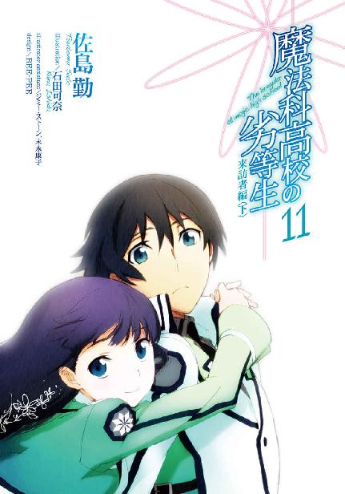
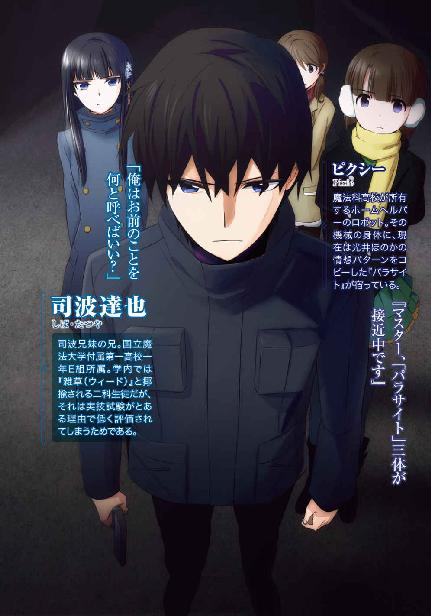
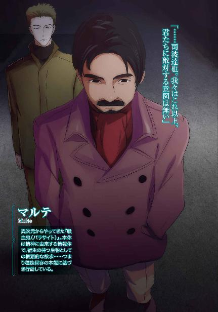
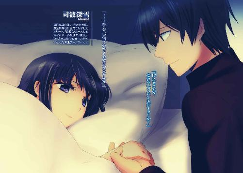
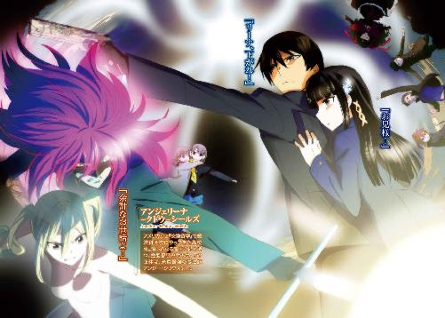
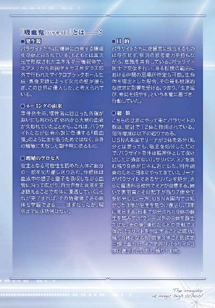
本書（電子版）に掲載されているコンテンツ（ソフトウェア／プログラム／データ／情報を含む）の著作権およびその他の権利は、すべて株式会社ＫＡＤＯＫＡＷＡおよび正当な権利を有する第三者に帰属しています。
法律の定めがある場合または権利者の明示的な承諾がある場合を除き、これらのコンテンツを複製・転載、改変・編集、翻案・翻訳、放送・出版、公衆送信（送信可能化を含む）・再配信、販売・頒布、貸与等に使用することはできません。
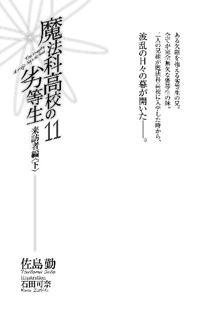
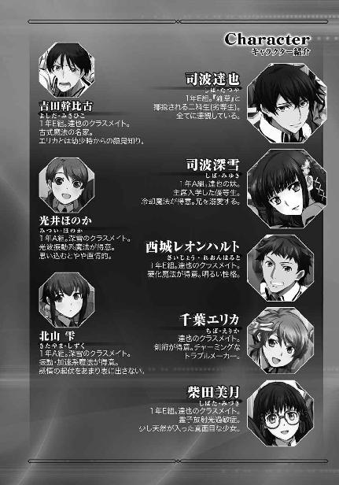
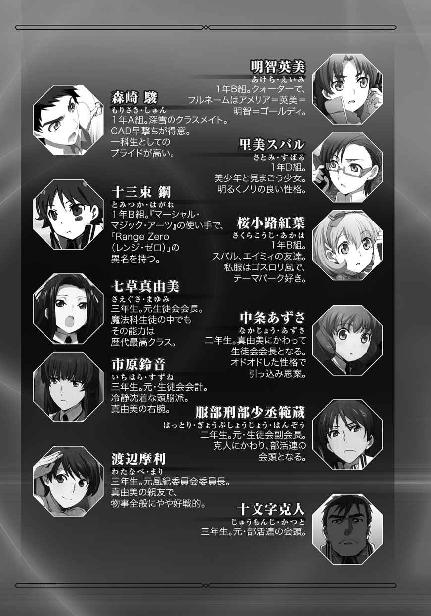
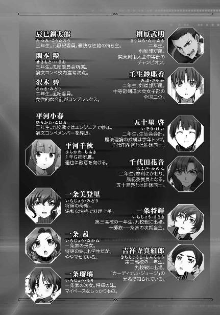
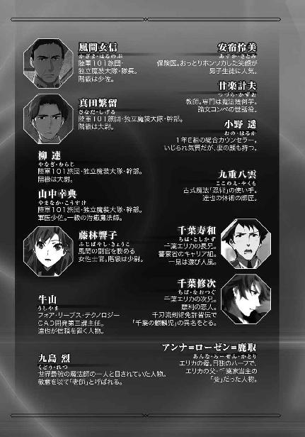
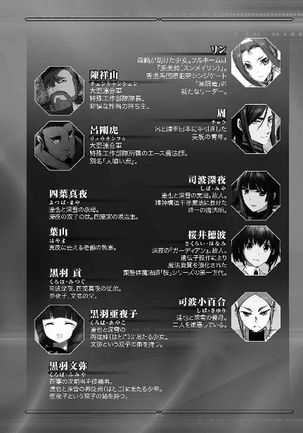
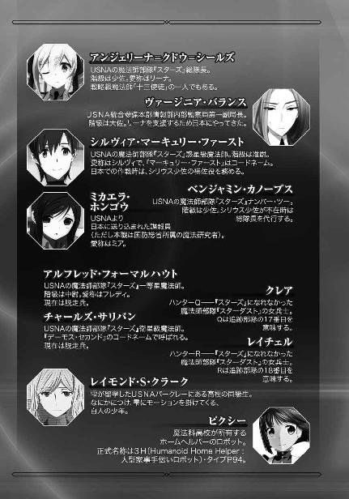
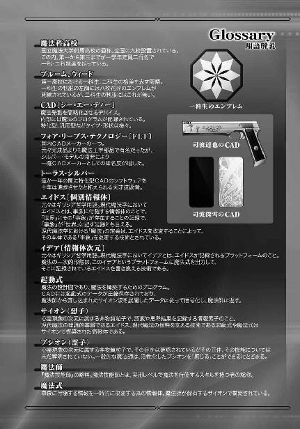
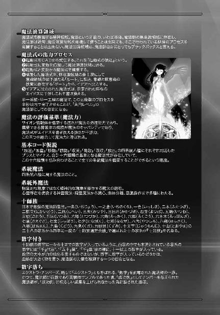
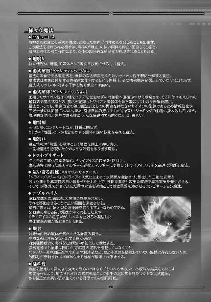
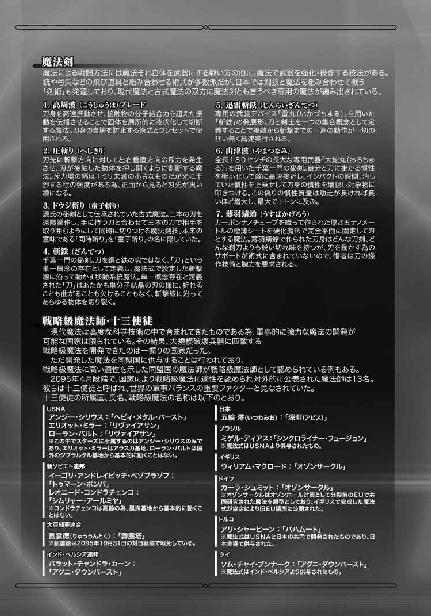
［13］
「──ねっ、酷いと思わないっ？ あれじゃ私、晒し者よ、晒し者っ」
甲高い、聞いているだけで興奮していると分かる少女の声に応えるのは、
『......もう四度目』
実に眠たそうな、これもまた少女の声。
電話で会話している二人の間には、精神状態的に真夏と真冬くらいの温度差があった。
ただそれも、仕方のないことかもしれない。ほのかにはエキサイトするだけの理由があるし、雫には睡眠欲を主張する理由があった。
ほのかがエキサイトしている理由。それは自分の心に秘めた慕情を暴露されたことだ。それも単に好きとか恋しいとかに留まらず自分の全てを捧げたいという、自分でも少し時代錯誤で重すぎるかもしれないと感じていた想いだった。自分が口にできなかった思慕の念を他人の口から語られるというだけでも恥ずかしいのに、それが想う相手だけでなく大勢のギャラリーの前で暴かれたのだからほのかが羞恥に悶えているのも無理からぬことだ。自分の気持ちを代弁したのは人間ではなくパラサイトが憑依したメイドロボットだった、というのはほのかにとって何の慰めにもならなかった。
「いいじゃない、それくらい恥ずかしかったんだから」
拗ねた声には相手に対する甘えがにじみ出ている。プイッと横を向いたほのかに、画面の中の雫は軽いため息を漏らした。
『それは分かったから、こっちの事情も分かって欲しい。今、何時だと思ってるの？』
一方、雫が「眠たい」と主張する理由。それは単純に時間、いや、時差の問題だった。雫のセリフに合わせて、三針式の置き時計がディスプレイいっぱいに映し出される。クラシックな唐草デザインの短針は文字盤のⅣとⅤの中間を指していた。東京とバークレー（カリフォルニア州）の時差は七時間。東京が午後九時半ならバークレーは午前四時半だ。
『せめてあと二時間待って欲しかった』
雫がしみじみとぼやいたのも当然と言える。彼女の両目は、今にも瞼が閉じてしまいそうだ。さすがに申し訳なさそうな表情を浮かべて、ほのかは肩をすぼめた。
「これでも一時間は待ったんだけど......」
ほのかの言い訳に、寝ぼけ眼を瞬かせながら、雫は諦念をため息に換えて吐き出した。
『そういうとこ、昔から少しも変わらない......』
「いつもいつもご迷惑をお掛けします......」
『迷惑じゃないよ......時間さえ気にしてくれれば』
「うっ......ごめんなさい」
言い訳も出て来なくなったほのかを画面越しに見て、雫はもう一度ため息をついた。今度はため息と一緒に眠気も吐き出したのか、目が半分しか開いていないのを除けば、かなりしっかりした顔つきになった。
『でも、結果的に良かったのかも』
声も抑揚が乏しい──のはいつものこととして、発音が鮮明になっている。
「何をよ？ 何がよっ？ 良かったことなんて無いよ！」
なぐさめるにしては突き放したような雫のセリフに、ほのかはたった今まで萎れていたのも忘れ、猛然と食って掛かった。
『でも、自分の口からは言えなかったでしょ』
しかし、雫はいい加減な気持ちで「良かった」と言ったわけではない。その口調の所為なのか思わせ振りなセリフそのものの所為なのか、ほのかの抗議は単発で終わった。
『依存癖、自覚してるよね？』
「そんなもの......」
反射的に否定しようとしたほのかだが、自分でも否定しきれないと思っているのだろう。反論の言葉は途中でフェードアウトし、画面越しに自分を真っ直ぐ見詰める雫の瞳から──ただし、瞼に半分隠れている──ほのかは目を逸らした。
『ほのか、私たち、何年の付き合いと思ってるの』
そこに優しく言い聞かせる口調で雫から駄目押しが入る。
「......だって、仕方ないじゃない」
ほのかは、観念したような、開き直ったような声で雫の指摘を認めた。
「私は『エレメンツ』の血統なんだから」
遺伝子に性格まで書き込めるものなのかな？ と雫は毎度のことながら疑問に思ったが、そんなことで口論しても意味はない。それに、議論が必要なことでもないのは分かっていた。
『依存したがるのが良いとか悪いとかじゃないよ。誰にも依存せずイニシアティブを取りたがるリーダーばっかりじゃ、世の中は上手く回っていかないと思うし』
責めているのではない、という親友の言葉に、ほのかは逡巡を見せながら視線を元に戻す。
『私が言いたいのは、達也さんはほのかが依存するのにちょうど良い相手だってこと』
カメラ越しに目を合わせて、雫は一語一語言い含めるような口調でこう告げた。
「そう......かな？」
『うん』
ほのかのおずおずとした問いに、雫は一分の迷いも無く頷いた。
『達也さんは基本的に、相手が求める分だけしか応えない人だと思う。その代わり、求めたことにはキチンと応えてくれる人』
「ハッキリ言わなきゃ、分かってもらえないってこと？」
『そうだね。それにきっと、淡白だから』
「えっと、それって......？」
恐る恐る訊き返すほのかに返した雫の答えは、
『言いなりになっても、無理やりエッチなことされたりしない、ってこと』
実に率直な──悪く言えば露骨なものだった。
ほのかの顔がみるみる赤く染まる。
ただ赤面しながらも、少し残念そうな表情が垣間見えている。
『ほのかは少しくらい強引に迫って欲しいかもしれないけど』
「雫っ！」
ほのかが声を荒げて画面を睨み付けた。だがそこには「だって、本当のこと」という顔をした雫が映っているだけだった。
「もうっ！」
拗ねて顔を背けてみても、
「............」
「............雫」
先に音を上げたのは、やっぱり、ほのかの方だった。
「私、どうすればいいのかな」
『積極的になるしかない』
雫も恋愛経験豊富というわけではない。むしろこの国・この時代の平均的なティーンの少女たちより経験に乏しいと言える。それでもあえて、あれこれ考えすぎて袋小路に陥っている感じの親友の背中を押すべく、シンプルに断言した。
「今だって精一杯積極的なつもりなんだけど......」
『つもり、じゃダメ。ライバルが手強すぎる』
「ライバルって......？」
『深雪に勝つのは難しいよ』
「深雪っ？ だって、深雪と達也さんは」
『兄妹だね。それが？』
ほのかの常識的な反論を雫は一言で却下する。「それが」の一単語に「何を今更。そんなことは分かっているはず」というニュアンスを込めて。
「そんな、だって、そんなの」
ショックを受けた表情で、ほのかがカメラに向かって首を振る。しかし付き合いの長い雫の目には、ショックを受けた気になっているようにしか見えなかった。
『ほのかは達也さんとセックスしたくて付き合っているわけじゃないよね』
「あ、当たり前じゃない！ そりゃ、全く興味が無いってわけじゃないけど......」
モジモジし始めたほのかに、雫は画面の向こう側から「なに言ってるんだコイツ」という目を向けた。ただ、ここで黙り込んでしまって居心地が悪くなるのは彼女の方だ。雫は強引に話を纏めに掛かった。
『血縁が邪魔になるのは、そういうコトをする時だけだよ。一緒にいるだけで満足なら、血のつながりは障碍にならない。私、深雪に訊いてみたんだ』
「......何を？」
聞きたくない、でも聞かずにいられない......そんな顔で、ほのかが問い返した。
『達也さんのこと、どう思ってるか』
「......それで？」
『愛してる、って』
「そう......やっぱり......」
真っ青な顔で、それでも悲鳴を上げたりすることなく、代わりにポツリとほのかは呟いた。
『恋じゃなくて、愛だって』
「......そうなの？」
『女の子として、男の人を好きになる気持ちじゃないって言ってたよ。単に「妹だから」ってだけじゃなさそうだったけど』
「？」
だが、雫から追加でもたらされたこの情報については、どう解釈すれば良いのか決めかねている様子だった。
『でも......』
「でも？」
躊躇いがちにセリフを中断した雫へ、同じ言葉を違う口調で返してほのかが続きを促す。
『それは自分でも気がついていない建前で、深雪はやっぱり、女の子として達也さんのことが好きなんだと思う』
セリフの続きは、躊躇いの無い断定的な推測だった。
「雫もそう思うんだ......」
世間の常識とはやや（？）異なる雫の推測に、ほのかは異を唱えなかった。
『うん。だからね、気がつくまでが勝負だと思う』
「どういう意味？」
こう問い返したほのかは、とぼけているわけではなかった。
『深雪が開き直っちゃう前に、ほのかが達也さんの一番になるんだよ』
しかし言葉として形にして耳から聞かせられれば、「深雪が開き直る」というその可能性は実現する可能性が高い未来としてほのかの頭上にのし掛かった。
「そんなの、無理だよ......」
『諦めるのは、ダメだった時だよ。今度のことは災難だったけど、アピールには使えると思う』
肩を落として呟いたほのかへ、雫は微妙に気合いの入った──本人的には精一杯気合いを入れた──激励を送る。
「達也さんに対する？」
『そう。どうせだから、全部打ち明けちゃえばいい』
「うるさがられないかな......」
『大丈夫。達也さんはきっと、負担に感じたりしないから』
ただこのセリフは気休めではない。奇妙な信頼だが、雫は本気でそう思っていた。
◇ ◇ ◇
雫がほのかを焚きつけている、ちょうどその頃。
達也は「アンジー・シリウス」に変身したリーナと対峙していた。
深紅の髪、金色の瞳。全て見掛けの上でのこととはいえ顔立ちも背丈も変わっていて、到底リーナと同一人物には見えない。これならば仮面で顔を隠さなくても、そうと知らない限り「アンジー・シリウス」と「アンジェリーナ・シールズ」を結びつける者はいないだろう。仮面で顔を隠さない方がかえって正体を隠すのに効果的だと思われる程だった。
達也は注意深くその姿を観察した。彼もこの半月、遊んでいたわけではない。八雲の「纏衣」を練習相手にして、情報改竄魔法「パレード」の対策を積み上げてきた。
その修行の成果か。リーナは今、「パレード」の効果を外見の変更に止め、座標情報の書き換えは行っていない、と分かる。この手応えならば座標を改竄されても、照準に捉えることができると達也は思った。
もっとも、彼にとって楽観できる状況でもない。リーナが外見しか弄っていないのは、余裕や油断の故ではないはずだ。むしろ、余裕が無いからだろう。座標情報を書き換えていないのは、その為に必要な魔法力を確保できないからに違いなかった。
（つまり、今の魔法はそれだけのキャパシティを必要とする、ということだ）
ＵＳＮＡ軍最精鋭魔法師部隊「スターズ」のトップに与えられるコード「シリウス」。それは即ちＵＳＮＡ最強の魔法力を持つ魔法師ということ。その彼女が、それ程までに魔法のリソースを集中しなければならない魔法。
夜の闇を裂いて達也と千葉修次に襲い掛かった煌めく光条。あの攻撃の正体はおそらく、高エネルギープラズマのビームだ。ならばそれを作り出した魔法の名は──
（多分、間違いない。あれは「ヘビィ・メタル・バースト」）
十三使徒アンジー・シリウスの戦略級魔法「ヘビィ・メタル・バースト」。重金属を高エネルギープラズマに変化させ、気体化を経てプラズマ化する際の圧力上昇と陽イオン間の電磁的斥力を更に増幅して広範囲にばらまく魔法。
ところで、物質をプラズマ化する魔法ならアンジー・シリウス以外にも使える者は少なくない。しかし原子を電離するだけでは、発生したプラズマ全体として見れば電気的に中性なので斥力は生じない。アンジー・シリウス以外に「ヘビィ・メタル・バースト」を使えないのは規模や速度もさることながら、プラズマ化を維持したまま電子だけを先にプラズマ雲の外へ排出するプロセスが彼女にしか実現できない所為だった。
だが「ヘビィ・メタル・バースト」は高エネルギープラズマを爆心地点から全方位に放射する魔法だったはずだ。それなのに、千葉修次を襲ったプラズマは指向性を持つビームとなっていた。
（収束されていただけじゃない。有効射程......拡散範囲もコントロールされていた）
修次から逸れたプラズマ光条が道路沿いの建物に被害を与えなかったのは、プラズマが届かなかったからだ。標的を通り過ぎるとプラズマがエネルギーを失うように術式が組まれていたのか、あるいはビームの終点にストッパーの役目を果たす力場を設定していたのか。
どうすればそんなことができるのか。一度見ただけでは分からなかったが、おそらくは──
（あの「杖」か）
リーナが手に持つ見たことの無いあの杖が、それを可能にしているのだろう。あれは多分、いや、間違いなくＵＳＮＡの開発した術式補助装置。立場が違えば素晴らしいと称賛を惜しまないであろう技術だ。
（だが今は、最高度の脅威）
プラズマ流制御のシステムを解明するには至らなかったが、何も分からなかったわけではない。もう一度「視」れば対策を立てられる。希望的観測か？ という思惟を達也は自身で即否定した。こういう時に弱気になっても、良いことは何もない。
むしろ問題となるのは、
（直接喰らって、反撃の余力が残っているかどうか、だな）
物理的な攻撃に対してある意味で無制限の再生能力を持つ達也だが、彼にできるのはあくまで「再成」であって「防御」ではない。
無制限というのは損傷の程度であって、回数ではないのだ。
今のビームは、光速には程遠い。最高速度で光速の三分の一、発生から落雷までの平均で音速の約六百倍となる雷光にも劣っていた。せいぜい音速の百倍程度だろう。
しかしそれでも現在の間合い、六十メートルの距離を埋めるのに二ミリ秒を要さない。それは一瞬と同義だ。見て、回避することは不可能。
だが......
（それだけの速度で実体物が移動すれば、それが希薄なガスだったとしても、強い衝撃波が発生するはずだ。それが無かったということは、あらかじめ通り道が作られていたということに他ならない）
その「道」の生成を察知できれば、射線から身を躱すことができる。
達也は知覚を総動員してリーナを睨み付けた。
闇を隔てた街灯の下、リーナは達也の視線からついと目を逸らし、クルリと踵を返し、チラリと振り返って、薄く、笑った。
誘っているのは、明らかだった。
達也は迷った。
罠であることは間違いないが、罠というなら、既に達也はその顎門の内に在る。
誘いに乗らなかったからといって、無事に帰してくれるとは思えない。
相手の狙いを外す為であっても、こんな所で撃ち合うのは論外だ。
どうすべきか決めかねている達也の視線の先で、リーナの足が、軽やかに路面を蹴った。
それが、迷いを断ち切るきっかけになった。
走る、というより跳びながら、高速で遠ざかっていく深紅の髪。
全身を痙攣させた状態で立ち往生している修次をその場に残し、リーナと同じように重力制御を発動して、達也はその背中を追いかけた。
◇ ◇ ◇
「シリウス少佐、ターゲットに接触！」
「応答は？」
「ありません！」
ＵＳＮＡ軍がダミー企業の日本支社内に設けた秘密指揮指令室は、ある種のパニック状態に陥っていた。
捕獲作戦は第一歩から変更を余儀なくされていたが、ヴァージニア・バランスの手足はその程度で動揺したりしない。
日本軍のエージェントと思しき戦闘員による介入は、むしろ予想通りだった。
原因は、別にある。
リーナが独断で配置を離れたのが、混乱の始まりだった。
スターズ総隊長「シリウス」は単独で行動する権限が与えられているので、軍規違反とは言い切れない。しかし今は、チームによる作戦が進行中なのだ。許容されているからといって、何をやっても良いということではない。
また、ブリオネイクの使用をリーナの自主判断に任せたのはバランスだが、往来の真ん中でぶっ放すとは予想外もいいところだった。
「ターゲットはシリウス少佐の追跡を始めました」
新たな報告に、指令室の雰囲気が多少の落ち着きを取り戻す。
スターダストの回収も含めて後始末を考えると頭が痛くなってくる。だがとりあえず、作戦は当初のシナリオに復帰した。──と、バランス大佐を除いては、考えていた。
（作戦の中止条件を徹底しておくべきだったか......）
「中継車を呼び出せ」
内心の苛立ちを微塵も覚らせない抑制の効いた声で、大佐はオペレーターに命じた。
◇ ◇ ◇
灯りが隈無く街を照らしているように見えて、フッと光が途切れている箇所がある。
東京という名の不夜城に生まれた、黒い空白地帯。
誘い込まれた公園も、街の灯りの狭間にあった。
いや、ここは公園というより空き地というべきか。生け垣は手入れされているが、遊具どころかベンチも無い。街灯も申し訳程度にしか配置されていない。多分、戦時中に防災空地として確保された公有地が、再開発の過程で放置されたのだろう。
リーナはその、疎らな街灯の下で黄金の髪を曝していた。
頭上には蓋をしたような暗闇が被さっている。
今夜は元々、月も星も見えない曇り空だが、それだけでないのは一目で分かった。
監視衛星や成層圏プラットフォームのカメラを遮る光学系魔法が作用している。
ここは敵の包囲の中。
罠と知って飛び込んだのだから、今更驚きも焦りもしない。それより隠蔽以外の魔法が作用している痕跡の無いことの方が、達也には意外だった。
（魔法同士の干渉を嫌ったのか......）
つまり、リーナが使おうとしている魔法は、彼女にとってもそれほど高度な術式であり、集団で攻撃するより彼女の単独攻撃に任せる方が効果的と友軍に考えさせるほど強力なものだということだ。
幻影を解除したのも、おそらくは、攻撃術式に意識を集中する為。
（やはり、「ヘビィ・メタル・バースト」）
「タツヤ」
達也が改めてリーナの手札に関する確信を強めたところで、リーナが口を開いた。
「ノコノコついて来るとは思わなかったわ」
「しつこくつきまとわれるのは迷惑だからな」
人を食った回答を聞いて、リーナが酷薄な笑みを浮かべた。
「自信家ね。でも、今回ばかりは自惚れ過ぎよ」
リーナは手に持つ杖を脇の下に手挟む形で達也へ向けた。
「タツヤ、投降しなさい。アナタがどんな手段で魔法を無効化しているのか知らないけれど、このブリオネイクを無力化することはできないわ」
このセリフはリーナにとって単なる投降勧告以上のものではなかった。
（ブリオネイク......Brionake？ 『ブリューナク』か？）
だが達也の頭の中では、彼女の言葉を手掛かりにパズルのピースが完成間近まで組み上がっていた。
名前には意味がある。
完成した後に付けられる名前は、その属性の一部を示していることが多い。
観察と思考に意識を取られて、達也はリーナの勧告に対する回答を忘れていた。
リーナはそれを、拒絶と取った。
短絡的、と誹ることはできない。
うっかり回答に時限を設けるのを忘れていたとはいえ、投降勧告に対する無回答は慣習上、拒絶を意味するのだから。
リーナが杖から水平に突き出している横木の片側を握った。
そのパーツは、グリップの役目を果たす物に違いなかった。
二重螺旋の想子光がブリオネイクの下部三分の二、長さ八十センチの細い棒の中を走り、太さが増したブリオネイクの上部三分の一、グリップの先四十センチの円筒の中で魔法式が瞬時に構築される。それを感知した達也は術式解散を発動しようとし──間に合わないと悟って、中断した。
杖の先端が煌めいた。
細く絞り込まれた光条が、達也の右腕を掠めた。
掠めただけなのに──達也の右腕は、肘から先が炭化して消し飛んだ。
衝撃に身体が捩れる。
その勢いに身を委ね且つ利用して、達也は背後の生け垣に飛び込んだ。
リーナがグリップから手を離し、ブリオネイクを長物のように構えて突進した。
間合いを詰め、達也が隠れた生け垣に向けて、水平に振り回す。
生木がたちどころに燃え散った。生け垣の、灌木だけが。
その後ろの達也には、プラズマが届いていない。
右肩を押さえ右半身を後ろに隠し、片膝をついた達也の視線の先で、光を放っていたプラズマの刃が幻のように消えて行く。
「ブリオネイク......『貫くもの』ブリューナク。ケルト神話の光明神『ルー』が持つ武器の一つ。その名称は、神話の武器を再現したという意味か？」
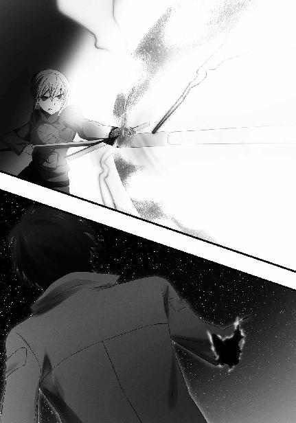
その姿勢のまま、歩み寄って来たリーナに達也が問う。
その声に苦痛が滲んでいないのは、痛みに対する耐性が高いからだろう、とリーナは思った。
対拷問訓練を積んでいる特殊な兵士には珍しいことではない。
「そんなことが気になるの？ タツヤは今、生きるか死ぬかの瀬戸際なのに」
杖の中で再び、魔法式が瞬間発動する。
押し固めた金属の粉を、高エネルギープラズマに分解する魔法。
魔法によって作り出された「高エネルギープラズマ」という事象が、それを包む容器の中で、リーナの意思によって形を変える。
鼻先に電撃と灼熱の刃を突きつけられて、達也の頭の中で思考の最後のピースがはまった。
「気になるさ。人は名前に意味を持たせたがるものだ。ブリューナクは相手を貫く光の穂先を発生させる槍とも、自在に飛び回る槍あるいは光弾とも伝えられている。この場合、自在に、というところが肝なんだろうな」
「神話の武器を模した、模造神器ブリオネイク」
「ＦＡＥ理論を実用化していたとは......。さすがだな、ＵＳＮＡの技術力は」
それまで達也のセリフを興味薄そうに聞いていたリーナだったが、「ＦＡＥ」のフレーズに、目を見開き、表情を強張らせた。
「......どうしてＦＡＥセオリーを、アナタが知っているの？」
リーナが驚いているのを見て、達也の方も意外感を表した。
「別におかしくはないだろう。ＦＡＥ理論は元々、日米共同研究の中で唱えられた仮説なんだから」
「あれは極秘研究よ！ しかも、破棄されたはずの研究だわ！」
「だが、実際には破棄されていなかった。君の手に持つその模造神器が、何よりの証拠じゃないか」
達也はリーナの持つブリオネイクを見詰めながら、
「ＦＡＥ──Free After Execution」
感慨深げにその名を告げた。
「日本語では後発事象可変理論とか呼ばれていたが、フリー・アフター・エグゼキューションの方が内容を良く表しているよ。魔法で改変された結果として生じる事象は、本来この世界には無いはずの事象であるが故に、改変の直後は物理法則の束縛が緩い。魔法によって生じる事象に物理法則が作用するには、ごく短いタイムラグが存在する、と言い換えても良いか」
場違いな講義口調の解説が、死闘の最中に奇妙な空白を作り上げていた。
「ＦＡＥ理論に従えば、魔法によって作り出されたプラズマは、無秩序に拡散するはずの運動に指向性を与えることも容易ければ、本来の冷却速度に関わらず高熱状態から任意の時間で常温に戻して無害化することもできる。拡散しようとする性質を抑えて、一定の形状に維持することも可能だ。そういう風にな」
達也の長広舌を遮ることも忘れ、リーナはただブリオネイクの柄を握り締めていた。
「だがＦＡＥ理論において想定される物理法則が作用するタイムラグは、ほんの一瞬だ。そんな短時間に、魔法発動直後の魔法師が、作り出された事象に新たな定義を加えるのは不可能だと考えられていた」
達也はここで、肩を竦めている最中のような表情を浮かべた。
「そりゃそうだ。一ミリ秒以下の時間で事象を定義するなんて、人間に可能なことじゃない」
そして彼の顔に、偽りの無い感嘆が浮かぶ。
「それを......世界の、物理法則の影響を遮断する結界容器の中で魔法を実行することによって、物理法則が作用するまでのタイムラグを引き延ばすとはね」
それは達也の、科学の道を志す少年としての、巧まぬ感情の発露だった。
「素直に称賛しよう。潔く脱帽しよう。その『ブリオネイク』を作った人物は、本物の天才だ」
「タツヤ！」
達也の言葉に聞き入っていたリーナが、突如大声を上げた。プラズマの刃が消えたブリオネイクのグリップを強く握り再び砲撃姿勢に構えて、リーナは達也のセリフを遮った。──それは、失われていく戦意を無理やり奮い立たせているような声だった。
「もう一度言うわ。投降しなさい！ 片腕では得意の武術も使えない。もうアナタに勝ち目は無いわ！」
リーナの叫びを聞いて、達也は酷薄な笑みを浮かべた。それは、先程リーナが見せた笑みより更に非人間的な、ゾッとする笑みだった。
「俺を捕らえて何がしたい？」
だが表情に反して達也の声に冷たさは無く、
「人体実験か？」
むしろ甘く絡みつき、人の悪行を優しく暴き立てる、
「アイツらのように？」
悪魔の囁きに似ていた。
不幸にして「アイツら」というのがスターダストを指していると理解できる程度には、リーナは頭が良かった。緊張と衝撃の相乗効果で、リーナの顔が血の気を失う。
「当たり前だが......モルモットになるのはお断りだ」
「だったら動けなくして連れて行くまでよ！」
ブリオネイクの先端が、至近距離で、片膝立ちの足に向けられる。
その筒先に、達也は拳銃形態のＣＡＤ、シルバー・ホーン・カスタム『トライデント』をねじ込んだ。
焼け落ちたはずの、右腕で。
「その腕!?」
リーナが悲鳴を上げた。
悲鳴を上げた分、術式の発動が遅れた。
達也の魔法は、既に組み上がっていた。
突っ込まれたＣＡＤの「銃身」──照準補助機構が、結界容器の中に狙いを導く。
ＵＳＮＡ最強の魔法師『シリウス』の力が満ちているはずの模造神器の内部で、分解魔法「雲散霧消」が発動する。
ブリオネイクの筒先から、常温のガスと化した金属粒子が勢い良く噴き出す。
ガス圧に負けて、達也の右手からトライデントが飛んだ。
だが、受けた影響はリーナの方が大きかった。
しっかり握っていたのが、裏目に出た。
意図せぬ噴射の反動で、ブリオネイクごとリーナの身体が後方に吹き飛ぶ。
地面に叩きつけられた衝撃で、リーナの纏う情報強化の鎧が揺らいだ。
トライデントを拾い上げるのももどかしく、達也は「再成」を発動した。
ＣＡＤの構造情報と自身を基点とした相対座標情報が復元され、トライデントが修復された状態で彼の手の中に戻る。
六連発で放たれた達也の「分解」が、リーナの魔法防御を無効化し、その四肢を貫いた。
両腕、両脚の付け根に、針で突いたような細い穴が穿たれる。
四つの微小な傷が、神経を直接ヤスリで削るに等しい激痛をリーナにもたらした。
苦痛を叫び声で表現する間もなく、精神のブレーカーが落ちる。
リーナの意識は、白い闇に吞み込まれた。
◇ ◇ ◇
「......リーナ」
一仕事を終えてリーナの所へ戻って来た達也は、まだ意識を失ったままグッタリと地面に横たわる身体を見下ろし、聞こえていないと知りつつ、彼女へ向けて呟いた。
「君はすぐにでも、軍を辞めた方が良い」
先程の一戦は、彼女の甘さに助けられたものだった。
戦力だけを考えれば、達也はもっと苦戦していたはずだった。
右腕を消し炭にされた一発目、情報解散を中断したのは、ビームを収束していた情報構造を破壊することによってプラズマが拡散し、より大きなダメージを受けることになるのを回避する為だった。一発目の収束度を始めから落とし、プラズマがもっと拡散するように撃っていれば、達也は右腕だけでなく半身を焼かれ身体の自由を失っていただろう。無論それでも彼は一瞬で肉体を復元していただろうが、決め手となった、右腕を手品のタネとした奇襲は使えなかった。
始めから、というなら、砲撃の際に二次被害を抑える為の「道」を作り出すような余分な工程をリーナは挿むべきでなかった。射線に沿って発生する衝撃波も、達也の反撃を阻害するダメージを与えていたに違いないのだ。
生け垣を薙ぎ払った時も、彼に傷を与えることを避けるべきではなかった。敵の抵抗力を奪うのに、ダメージを蓄積させていくのは基本のはずだ。
ＦＡＥ理論の長話に付き合う必要も無かった。秘密兵器の作動原理がばれたからといって、リーナが動揺しなければならない理由は全く無い。
最後の攻撃は、足を狙うのではなく、皮膚の表面を焼くに止めるよう威力を調節して放つべきだった。ブリオネイクの向きを変えることで、彼女は決定的な時間をロスした。右腕が再生されていたことに驚いたタイムラグではなく、ブリオネイクを動かすことにより生じたタイムラグの方が、実は致命的だったのだ。
「スターズ総隊長『シリウス』......君に向いている仕事とは、思えない」
リーナの身体を担ぎ上げながら、達也はもう一言、呟いた。
［14］
瞼を開いて視界に飛び込んできた物は、見覚えのある大型ワゴン車──移動中継基地──の天井だった。
淀んだ、ぬるま湯のような空気が肌に纏わり付く。
だがあの寒空に放置されてはさすがに風邪を引いただろうから、換気の不足に不満を唱えるのは贅沢というもの......リーナはそう考えた。
覚醒が中途半端な状態で、リーナは左右を見回した。
特に何か、目的があっての動作ではなかったが......彼女の中で段々と、違和感が膨らんでいった。
何かがおかしい。
何がおかしいのか考えに至ったことにより、彼女の中に残っていた眠気は一気に拭い去られた。
「誰もいない......？」
頭がハッキリしてしまえば、考えるまでもなくあり得ないことだ。車体こそ「キャンピングカーとしても使える」が売りの大型ワゴン車だが、彼女たちは遊びに来ていたのではない。
アクシデントに遭遇すれば様子を見に出て行くこともあるだろう。
リーナが倒されたということ自体、大きなアクシデントだ。偵察、援護、救出など、複合的な目的で人員を割くことは十分考えられる。
しかし、全員が同時にいなくなることは、あり得ない。
（何故よっ？）
自分たちの意思で、同時に移動中継基地を放棄することは無いはずだ。
ならば、誰が、彼らを......。
ハッと気づいて、リーナは車載情報システムのコンソールに向かった。車内の状況が間断なく録画されていることを思い出したのだ。窮屈さを感じていた決まりだが、今はその記録が頼りだ。取りあえず十分前から録画を再生してみることにした。
──ディスプレイには、何も映らなかった。
（えっ？）
思いがけない結果に目と口を開いた表情で固まってしまったリーナは、次の瞬間、誰も見ていないにも拘わらず誤魔化し笑いを浮かべた。彼女は自分がコンソールの操作を誤ったと思ったのだ。
もう一度、今度は慎重に、再生開始時間を十分前にセットする。
──やはり、何も映らない。
コマンドを現時点から四倍速の逆転再生に変更。逆転倍速に変更。再生開始時点を一時間前に変更。二時間前。三時間前。
どれも結果は同じだった。録画データは抹消されていた。
リーナは慌てて車内モニター以外のデータをチェックした。しかし、全てのストレージが空になっている。車の運行用を含めて、データは完全に抹消されていた。
必死の形相でキーを打っていたリーナが、突然、手を操作盤に叩きつけた。掌と指がジンジン痛んだが、そんなことはどうでも良いと思えるほど彼女は苛立っていた。
（そうだ。コントロール・ルームに報告しなきゃ）
だが、リーナは再度、癇癪を破裂させる羽目に陥った。
通信機器も全て、外から見ただけでは分からないよう巧妙に破壊されていた。
二度、三度とコンソールに掌を叩きつけた後、彼女は力なく座り込んだ。
両手が痺れ、熱を持っている。
ノロノロと手を挙げ、怪我が無いか、見て確かめる。
幸い何処にも、血の滲んでいる箇所は無かった。
ヒステリーを起こして自分で自分を傷つけるなど、子供っぽいにも程がある。そんなみっともない姿を曝さずに済んで、リーナは幾分、ホッとした。
少し気持ちが落ち着いて──彼女は更に大きな違和感に気がついた。
「怪我が......痛みが、無い？」
まず両腿に手をやり、交互に左右の肩口を撫でた。
しかし、彼女に激痛を与え、意識を失わせた傷が、跡形もない。
単に傷が無いだけでなく、服にも穴が空いていない。血の痕も無い。
「どういうこと......？」
リーナは自分の中で、急に現実感が失せたのを感じた。
──何処までが現実だったのか。
──自分は本当に、傷を負っていたのか。
──そう思わされただけではなかったのか。
──もしかしたら、彼らも......。
（まさか、系統外魔法......精神攻撃？）
ゾクッ、とリーナの身体が震えた。
（もしかして私たち......とんでもない勘違いをしていた？）
（タツヤは質量・エネルギー変換魔法の術者なんかじゃなくて、精神干渉系統に高い適性を持つ魔法師......「幻術使い」？）
（......だったら、色々なことに説明がつけられる）
（焼けてしまったはずの右腕が元通りになっていたのは、「腕が焼け落ちた」という幻影を見せられていたと考えれば合点がいくし）
（「パレード」を破られたことだって、幻術に対して私以上の適性があれば不可能じゃない）
（「ムスペルスヘイム」を無効化されたことも、魔法技能に直接作用する精神干渉系の魔法が存在すると考えれば納得できる）
（魔法の制御は繊細だから、自分じゃ気づかない程度でも、精神を乱されれば術式は維持できなくなる。魔法そのものを壊すよりその方がずっと簡単なはずよ）
（タツヤは幻影魔法で有名な「忍術使い」の弟子だもの。タツヤ自身も「幻術使い」だって考える方が理に適ってる）
リーナは混乱した頭でそんなことを考えていた。
◇ ◇ ◇
リーナがミスディレクション（と言うほど大したものではなく、単に四肢の傷と服を修復しただけだ）に従って都合の良い思い違いをしてくれたかどうか、達也には確かめる術がない。
それよりも今は、急ぎ片付けなければならない用件があった。
深雪を迎えに行く時間まで、あと二十分。
できればその前に、手配を終えておきたかった。
達也は全自動運転の車中で、厳重に暗号化された音声通信回線を開いた。
『おや、達也殿。どうしましたかな』
「葉山さん、夜分遅くにすみません」
応答したのは四葉家の、というより、四葉真夜の執事、葉山。
この回線は、真夜へのホットラインだった。
『遅いと言うほどの時刻でもないが、奥様はあいにく、電話口には出られぬご用の最中でいらっしゃる』
「それは失礼しました」
時間から見て、入浴中だろうか。確かにこれはうっかりしていた。
『謝罪には及ばない。君の方から連絡してきたことなど、私の記憶する限り初めてだ。余程の事態なのだろう』
確かに老執事の指摘したとおり、この直通回線を達也の方から開いたのはこれが初めてだ。
四葉に頼るのは、本音を言えば、達也にとって癪に障ることでもあり避けたいことだが、今回は意地を張っていられない。無頭竜の一件や大亜連合侵攻の時のように力押しで何とかなる状況ではないのだ。
四葉家の中枢にいる葉山ならば、今回の事情を達也以上に把握しているはずだ。しかし力を借りるなら順序として、達也の口から現状を説明するのが筋だろう。
「実は先程、ＵＳＮＡ軍の小部隊より攻撃を受けました。第一波は千葉家次男、千葉修次の介入により撃退しましたが、千葉修次はスターズ総隊長アンジー・シリウスの攻撃を受け戦闘不能に。その後、自分がシリウスと交戦し──」
──リーナを倒した達也は、彼女を拘束する間も惜しんで公園に隣接した駐車場へ向かった。
拘束する必要は無かった。仮に意識を回復してもリーナは動けない。痛覚を遮断しても運動神経が切断されたままの状態でいる限り、立ち上がることも這うこともできない。そういう風に四肢を撃ち抜いたのだ。
それに、痛みに耐える訓練を積んでいるなら、最初から気を失うことはなかった。リーナが意識を回復することは当分無いと達也は判断していた。
それよりも優先すべきは、バックアップチームの方だ。
上空からの「視線」を遮る光学系（光波振動系）魔法はなおも継続中だ。リーナの素顔を撮影されるわけにはいかないという事情がある以上、これは当然の措置。だがそれは同時に、彼らがこの場から動けないということでもある。
ＵＳＮＡ軍が「シリウス」を切り捨てるはずはなかった。
彼らが撤退する為には、人員を割いてリーナを回収しなければならない。
その為の時間が、達也の付け入るべき隙だ。
彼らも達也の襲撃を予想しているだろう。警戒されているはずだ。何といっても、目の前でシリウスが打ち倒された様を見ているのだから。しかしそれでも、バックアップチームを放置するという選択肢は、達也には無い。
リーナを殺すことはできない。
殺すだけでなく、拘束することも、だ。
彼女は殺すにも捕虜にするにも、大物過ぎる。
達也は既に、国家公認戦略級魔法師、通称「十三使徒」の一人を葬っている。意図してのことではないが、それによって世界のパワーバランスに少なからぬ影響を与えている。ここでまた一人、世界の軍事バランスに算入されている戦略級魔法師を消し去ったとして、それが世界情勢にどんな影響を与えるのか、懸念される要素が大き過ぎた。
しかし、その支援要員の方は別だ。
明白な害意を以て──おそらくは、自分を人体実験の材料にしようとする悪意を持って襲い掛かってきた集団。それは、自分を殺そうとした相手に等しい。
そんな相手に、甘い対応で済ませる余地はない。
司波達也に暗闘を仕掛けることのコストを、しっかりと認識させなければならない。
リーナと相対している最中は支援部隊に意識を割く余裕は無かったが、再び知覚の糸を伸ばしてみると、最初に感知した所から動いていなかった。エースが敗れるという予想外の事態に、本隊の指示を仰いでいるのだろう。そうでなければこの反応の鈍さは説明がつかない。
仕方のないことかもしれないが、甘いな、と達也は感じた。
負けた場合の撤退手順は、作戦に組み込んでおくべき必須事項だ。
油断、と言うべきだろう。
もっとも、
（油断してくれた方がありがたいけどな）
正面からまともにやり合えば、物量で押し切られるのは最初から火を見るより明らかだ。リーナと一対一の状況を作ったことからして、相手の油断に他ならない。
無論その背後には、他国の首都で余り派手なことはできないという事情もあるだろう。
達也としては、そういう事情をひっくるめて、そこに付け入るだけだ。
照準のアクションも惜しんで、自身の能力のみで狙いを定め、達也は手に持ったままのＣＡＤの引き金を引いた。
ターゲットはワゴン車の電子機器。
一発目で通信機の配線を、二発目で車外カメラの電源ラインを、三発目で車内カメラの電源ラインを取り外す。本来、魔法はこういう機械的な精密作業に適さない技術だが、藤林と真田の二人掛かりで散々しごかれたお陰だ。
携帯端末の通信機能はまだ生きているはずだが、構わず達也はワゴン車の扉に手を掛けた。
鍵は掛かっていなかった。
生体認証を使った防盗装置も無かった。
その代わり、弾幕の歓迎が待っていた。
余程高性能のサプレッサーを使っているのか、炸薬そのものも特殊なのか、銃撃音がほとんどしない。ドアの陰に潜んだ達也の耳にも、サブマシンガンのスライドが開閉する機械音の方がむしろ響いて来る程だ。
そのわずかな銃声も、すぐに止んだ。
銃器の解体は分解魔法の中で特に数多く練習を積んだ項目の一つだ。
開け放ったドアから大型ナイフを手にした男たちが飛び出して来た。
車内で起動式が展開された。
白兵要員に目を惹きつけ、後背から飛び道具で──この場合、魔法で攻撃する。古典的だが、有効な戦術と言える。
相手が起動式を視て認識できる達也でなかったならば。
起動式を展開している段階ならば、「分解」でなくても想子の弾丸を飛ばすだけで対処は可能だ。
達也は空いている左手を前に突き出した。
ここのところ散々練習した「遠当て」の基本形態たる圧縮した想子の弾丸を左手の中に作り出し、展開中の起動式だけでなく全ての敵に撃ち込む。
起動式がことごとく砕け散るのが視えた。
敵の魔法師は想子の逆流を良く防いだが、時間差で飛来した想子弾を受け損なったようで、次の魔法が準備されている気配はない。
車内から飛び出していた白兵戦闘員は三名で、その内の二人は足下が覚束無くなっている。
遠当てに影響を受けるのは肉体ではなくアストラル体。魂魄の「魄」の部分。意思の力で肉体を制御する能力に長けている者ほど想子弾によるダメージを受け易いが、気魄の扱いに熟達すると想子弾自体をはね返したり逸らしたりできるようになる。
つまり、意思で肉体をコントロールする修行を中途半端に積んだ者が、最も遠当ての餌食になりやすい。
達也の前で倒れないように足を踏ん張っている二人はそうした中途半端な修行者で、残る一人はその手の東洋的な修行には見向きもしない肉体の信奉者なのだろう。
そういう単純な手合いの方が、かえって手強いものだ。
達也はあえて、先手を取った。
蹴りが届く直前の間合いまで接近し、右足を踏み出す。
右手のＣＡＤはリーナから奪ったナイフ形態の武装デバイスに握り替えている。
その右手を左の肩口から前へ振り、手裏剣の逆打ちのフォームで、遠当ての影響を受けていない敵の胸中央目掛けて打ち込む。
至近距離からの投擲という奇襲攻撃。
ナイフは、ただ払い除けても無傷では済まない勢いを持っている。
ここで「躱す」という選択肢を選び取った判断力はさすが、玄人だ。
男の回避は、達也の注文どおりなものだった。合理的な行動だからこそ、読み易い。
男は左肩と左足を引き、右手に持つナイフを外から内に回して、ナイフの軌道を身体の外側に逸らした。
右半身で右手が身体の左に振り切られた体勢。死角となった右の背中側から、ではなく、次の攻め手は下からだった。
達也の右足が跳ね上がる。
投擲の軸足になった足が蹴り上げられるという変則的な動きは、男の意表をついた。右側からの左フックや左足を使った回し蹴りを警戒して体を戻しつつあった男の右手を、達也の足の甲が捉えた。
男はナイフを手放さなかった。
手首を貫く痛みを堪え、反対に蹴りを打ち落とそうとする。
軸足を蹴り足に使う為には、軸足でジャンプするしかない。事実、達也の両足は地面から離れている。蹴りの勢いを止めれば、体格の優位で達也の体勢を崩すことは可能だった。──これが純粋に、体術の勝負ならば。
達也は仮想魔法領域に準備していた重力制御の魔法を発動した。持続時間を三秒、軌道変更を十回に限定した飛行魔法の術式。ブロックされた右足を畳み、新たに地面を蹴ることなく上昇した達也は、左の回し蹴りを繰り出した。
今度こそ、男の反応は間に合わない。
左足の臑が、男の首筋に吸い込まれた。
鈍い音と、確かな手応え。
それは、達也にとってお馴染みの、骨を蹴り折る感触だった。
男の身体が横に飛ぶ。
達也の身体は、慣性に逆らって左にスライドした。
その残像を、ナイフが貫く。遠当てのダメージに抗って、男の仲間が投げつけたものだ。
飛行魔法の効果はまだ続いていたが、達也は両足を地面につけた。
地面を蹴る勢いを魔法で後押しする。
肉体だけでは──少なくとも達也の筋力では不可能な速度で、達也は二人目の懐に入った。
右手に握っていたＣＡＤは、ナイフに持ち替えた時点でホルスターの中へ移動している。
魔法で身体を停止させるのではなく、踏み込む足で達也は自身の肉体の運動エネルギーを受け止めた。地面を揺らす足音と同時に、運動エネルギーを吸い上げた達也の右手が男の胸に打ち込まれる。
拳ではなく掌で、心臓の真上を強打。
男は受け身を取ることもできず、真後ろにひっくり返った。
達也は身を深く沈めた体勢から、両足で一気に地面を蹴った。
飛行魔法の効果持続時間、残り一秒。
二メートルの高さに浮き上がった足の下を、背後から浴びせられた銃弾が通過する。
車内からの銃撃だ。バラバラになったサブマシンガンの代わりに拳銃を取り出したのだろう。この対応は、むしろ遅いくらいだ。
達也は自分も腰から拳銃を抜いた。
拳銃形態のＣＡＤではなく、実弾銃。これもリーナから奪い取った物だ。
空中で身を捻り、窓から身体を乗り出している狙撃手に鉛弾をお見舞いする。達也の弾はその男の胸に吸い込まれた。男の身体が窓から車内に滑り落ちる。
達也はそのまま三人目の上に着地した。
右足で肩の骨を踏み抜き、左足で首を横向きに踏み畳む。
魔法の効果が切れた身体は、三人目の敵の後方に着地した。
次々と浴びせられる銃弾は、射手のパニックを示していた。
三人目の身体を盾にして、達也も撃ち合いに応じる。
車体に傷を付けないよう狙いを定めるのが難しかったが、射手が一人だったことが幸いした。
銃撃戦を制して車内に突入した達也は、拍子抜けを味わった。
射殺した二人以外に、二人の男が昏倒していた。
腕に巻いたＣＡＤが、バックアップの魔法師であることを示している。
遠当てが予想外の効果を発揮したらしい。自分で思っていた以上に、八雲との特訓は効いていたようだ。
念の為に二人の魔法師の鳩尾を一回ずつ踵で踏みつけて反応を確認した上で、達也は死体と一緒に気絶した身体を車外へ放り出した。
リーナの拳銃が小口径だったのが幸いして、弾は貫通していなかった。肉片は飛んでおらず、血もそれほど散っていない。
データキューブを失敬してバックアップを取った上で、車載コンピュータに残っていたデータを全て抹消する。
どうせ次のお客さんが綺麗に掃除してくれるだろうが、簡単に血糊を拭き取って、達也はワゴン車を後にした。
気配を殺して潜んでいた監視者の目には、最後まで気づかないフリを押し通した──
「──自分がアンジー・シリウスを移動中継車に運んで来た時には、仕留めたバックアップチームの姿はありませんでした」
『監視していた何者かが連れ去ったということだね？』
「自分の監視を続けるよりも優先度が高いと判断したのでしょう。行動不能状態にあった千葉修次も、自分が戻って来た時には姿がありませんでした」
達也の報告を聞き終えた葉山は、少し思案の素振りを見せた。そこにわざとらしさが全く無いのは、年の功と言うべきだろうか。
『その監視は七草家の息が掛かった者たちでありましょうな』
「七草家ですか？ 千葉家ではなく？」
『東京は現在、七草家の勢力圏内。弘一殿が手の者を動かして何やら画策しているご様子とも耳にしていた』
弘一殿とは七草家当主、七草弘一のことだと達也も知っている。十師族当主の氏名は、日本人魔法師にとって一般的な知識だ。
『魔法の使用を最小限に抑え近接戦技で対応したのは、その監視者の目を意識してのことかもしれぬが、監視をつけられた時点で望ましいこととは言えませんな』
四月から立て続けに遭遇した事件の内、達也の方から仕掛けたものは一つも無い。全て、彼は巻き込まれた立場だ。とはいえ、護衛役が目立ってしまうのは下手の仕業だと自覚しているので、反論はできなかった。
『だが、達也殿が何か失態を犯したわけでもないのは重々承知。また、次期当主候補であらせられる深雪様をお守りするのは達也殿のお役目だが、達也殿だけの責務でもない。真夜様におかれても、深雪様のお立場を他家に知られるのは時期尚早とのお考えだ。もっとも、弘一殿のことだ。察してはおられるだろうが......』
察している、というのは達也が四葉の縁者であることを察しているという意味だろう。「察している」レベルが「薄々」ですらないのか、と達也は密かに感心した。
『それでも、推測以上の確証を捕まれるのは好ましくない。達也殿がバックアップしたデータをこちらに送ってください。ひとまず米軍の方を何とかしよう』
サラリと紡がれた葉山のセリフを、達也は大言壮語と思わなかった。
四葉家は、数の上で七草家や一条家に著しく劣っている。だが、戦力で劣っているわけではない。一人一人の質では、むしろ上回っていると言って良い。それに少ないといっても、政府機関からカウンターテロの切り札として超法規的業務を受注するに足りるだけの人員は抱えている。秘密裏に活動している破壊工作部隊や暗殺部隊を闇から闇に葬る仕事は、「数字付き」の中で四葉家が最も長けているという評価もある程だ。
『国防軍を動かす口実が無くなれば、弘一殿も当面の所は手を引かれるでしょう』
他の取り巻きならいざ知らず、葉山の言ならば達也も信用できる。データを回線に送り込み、達也はカメラに向かって頭を下げた。
◇ ◇ ◇
迎えに行った達也と顔を合わせた瞬間、深雪は怪訝そうな目を彼に向けた。
「どうかしたのか？」
「いえ、何でもありません」
と、その場では答えていたが、それが他人の耳を意識しての建前であることは明白だった。
淑女の笑顔で挨拶を交わし、達也にエスコートされて車内に乗り込み、自走車が走り出したところで──
「お兄様、お怪我はありませんかっ？」
深雪がいきなり、達也にすがりついてきた。
これには達也もさすがに面食らった。
「いや、深雪、少し落ち着け」
「落ち着いてなどいられません！ この『臭い』......お兄様、リーナと戦われたのでしょう!? しかも、一対一ではありませんね!? 少なくとも十人以上と刃を交えられた『臭い』です！」
達也が「情報」を視覚的に捉えるように、深雪は「情報」を触覚的に捉える。しかし深雪の場合はそれだけでなく、直感的な認識を嗅覚的に解釈することもある。物理的な痕跡は何一つ残していないはずだが、戦いの跡を「嗅ぎ付けられて」しまったようだ。
「頼むから落ち着いてくれ」
心配してくれるのは正直嬉しかった。だが、落ち着いてくれないことには話もできないというのも、達也の正直なところだった。
「俺がそうさせない限り、俺に傷を残すことなど誰にもできないと知っているだろう？」
困惑気味のその言葉に、深雪はハッとした表情を浮かべた。
段々と興奮が収まっていく。
深雪の息遣いが平静を取り戻したのは、五秒後のことだった。
「......申し訳ございません、お兄様。見苦しい姿をお見せしました」
言葉だけでなく、恥ずかしそうに縮こまった妹に、達也は控えめな笑顔──多分に作り笑い──で頭を振った。
「いや、俺の方こそ、心配を掛けて済まない」
「そんなこと......兄の心配をするのは、妹として当然です！」
当然なのか？ という反射的な疑問が達也の脳裏に浮かんだが、それを口にする愚は犯さなかった。
ただ、心の中で思っただけだ。
家族の心配をするのは確かに当たり前かもしれないが、ここまで熱烈なのは、実は珍しいのではないだろうか、と。
「リーナが何度挑もうと、お兄様には勝てないということも承知しております。お兄様に勝てる者など、世界中を探してもいるはずがないのですから」
いつもの様に熱く断言する妹を、何処か醒めた目で見ている自分を達也は自覚した。
深雪の信頼が重いとは感じない。
深雪が自分を信じるならば、自分はそれに何処まででも応えてみせる、という想いが達也の中にはある。それは決意であり、自負であり、覚悟だ。
だが、そんな覚悟とは別に、今回は危なかった、と客観的に分析している自分もいる。
相手が精神的に未熟な十六歳の少女でなかったならば、相手にその戦闘力を十全に発揮できる意志力があったならば、倒されていたのは自分の方だったかもしれない、と。
しかしそんな弱気を護る相手に覚られるのは、仕事とか使命とかを抜きにしてもまずかった。
だから今は殊更、強気な態度を意識した。
「お前が待っていてくれるんだ。だから俺は、誰にも負けない」
しかし、このセリフは言い過ぎだった。
あるいは「やり過ぎだった」と表現すべきか。
深雪の瞳に、霞が掛かる。
熱に浮かされたような眼差しに、達也は自分の失策を覚った。
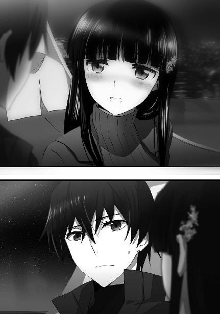
しかし、一度口にした言葉は取り消せない。
いや、普通なら取り消しの効く言葉でも、この状況では取り消せなかった。
（......まあ、根掘り葉掘り訊かれるよりはいいか）
達也は逃避気味に、そんなことを考えた。
◇ ◇ ◇
帰りの足がないリーナが自分のマンションに帰り着いたのは、日付が変わった後だった。それも直後ではないくらいの「後」だ。まだ未明でないのが、せめてもの慰めだった。
装備を根こそぎ剝ぎ取られていたが、何故かブリオネイクが手元に残されていたので、身の危険を感じるという意味で心細くはなかった。
だが情報端末が予備も含めて奪われていた所為で、迎えの車も呼べなかった。
普段データ通貨しか使わない関係で、リーナは元々財布を持っていない。それ以前に、作戦行動中は身元を探られるリスクを避ける為、私物を身に着けていない。お陰でせっかく二十四時間稼働している交通機関を一切利用できず、家まで自力で帰らなければならなかった。
特化型ＣＡＤだけでなく汎用型ＣＡＤまで取られていたので、飛行魔法も高速走行の魔法も満足に使えない。断続的に跳躍の術式を組み立てて、ようやくマンションが見えた時には思わず涙が出そうになった。もしそんな姿を知り合いに見られていたなら、リーナは情けなさの余り反射的にブリオネイクをぶっ放したかもしれない。
生体認証のお陰で、部屋に入るのに苦労は無かった。
ホッとすると同時に、ムラムラと怒りがこみ上げてきた。
（ワタシに何の恨みがあるのよ、タツヤ！）
客観的に見て、リーナが達也に恨まれる理由は山ほどある。しかし、それが感情というものだ。ただ軍人としての訓練の賜物か、そんな具合に感情的になっていても、真っ先にするべき事は忘れていなかった。
指揮指令室との通信回線を開く。だが、いくら呼び出しても応答が無かった。
背筋を冷や汗が伝う。不吉な予感を打ち消す為に、リーナは頭を勢い良く左右に振った。
予備の携帯端末で、もう一度コントロール・ルームを呼び出す。「通信機能の不調か」という一縷の望みは、延々と続くコールサインによって遂に絶たれた。
大佐たちの身に何かが起こったのだ、と覚らずにはいられなかった。
リーナは手早くＣＡＤその他の装備を身につけると、疲れた身体にむち打って、ベランダから夜空に舞い上がった。
行き先は、秘密裏に指揮指令室が置かれたビル。
そこに待っている者は誰一人いないということを彼女が思い知らされるのは、徹底的な捜索を終えた一時間後のことだった。
◇ ◇ ◇
翌日の朝。
ＵＳＮＡ海軍所属の小型艦船が日本の領海を航行中、機関トラブルにより漂流していたところを防衛海軍に保護された、というニュースが活字、映像両メディアを賑わした。
その船には何故か、ＵＳＮＡ東京大使館の高級駐在武官が乗り込んでいたが、それが報道されることは無かった。
またその日、第一高校の美少女留学生は、体調不良により前日に引き続いて学校を休んだ。
［15］
朝食を摂りながら朝の報道番組を見ていた達也は、無意識に頷いている自分に気づいて慌てて首の動きを止めた。幸い深雪の目もテレビ画面に向かっていて、達也の奇行に気がついた様子はなかった。
「機器の故障でしょうか？ 嵐だったり濃い霧が立ちこめていたりという悪天候は、特に見られなかったようですが」
深雪が首を傾げているのは、アメリカ海軍所属の小型艦船が千葉県沖の日本領海内で漂流していたというニュースだった。
「計器が一斉に故障するというのは考え難いから、動力系統のトラブルじゃないかな。ここまで自動化が進んだ時代に、人為的なミスだけで舵を失うこともないだろうし」
自分の言葉を疑う様子も無く頷く妹の無垢な（？）姿を見ていると、自分の汚れきった心まで洗われていくような気がする。──無論それは錯覚にすぎないと達也は自覚していたが。
それにしても......
（叔母上直々の下知があったとしても、この対応は早過ぎる）
漂流船が「保護」された時刻から見て、達也が葉山に連絡してから、半日どころか更にその半分程度の時間で襲撃から後始末まで完了させた計算になる。
戦力の運用に制限のある秘密作戦中とはいえ、相手は一国の正規軍、それも地方軍閥に毛が生えた程度の小国の軍隊ではなく、極めつけの大国の、おそらくは精鋭部隊だ。
如何に四葉の工作部隊が有能だからといって、一から動いていたのではあり得ない早さ。
それはつまり、
（俺が連絡した時には、戦力を配置済みだったということか）
そこにどんな意図があったのかは、分からない。偶々タイミングが合っただけかもしれないし、できる限り介入しないというスタンスだったのかもしれない。
達也が頭を下げてくるまで待っていた、という可能性もある。
（もしそうだったとしても、借りに感じたりはしないけどな）
どんな背景があったとしても、結果として事態が好転すれば、達也にとっては十分だった。
動力系統のトラブル、という言葉に頷いて見せて、深雪はそっと兄の顔を窺った。
特に不審を持たれている様子は無かった。
兄を騙すような真似は辛かったが、彼女にだって偶には、兄に知られたくないことがある。
自分は何も知らないままだと、兄には思っていて欲しかった。
二人分の食器を台所に運び、後の処置をＨＡＲ（Home Automation Robot）に任せて、深雪は制服に着替える為、二階の自室へ上がる。
鏡を前にして、深雪は小さなため息を吐いた。
あのニュースを、彼女はテレビで見るまでもなく知っていた。
いつもの様に、達也が朝の修行に出掛けた後。
深雪は真夜から電話を受けていた。
内容は「達也の身辺を脅かしていたＵＳＮＡ軍排除完了」の知らせ。
具体的に四葉一族の誰が動いていたのか、深雪は知らない。だから深雪が感謝を向けることのできる相手は、真夜だけだ。それが支配のためのテクニックだと分かっていても、今回は本心から感謝を覚えた。深雪が、兄も自分も普段は面従腹背の相手である真夜を頼った、ということを達也に伏せてくれていることも含めて。
（ずるいな、わたし......本当のことを知ったら、きっとお兄様、わたしのこと、イヤな子だって思われるでしょうね......）
深雪は達也に、バカな子だと思われたくない、と思っている。
しかし同時に、あまり賢い子だと思われるのも避けたい、と思っている。
深雪は、兄の重荷になりたくない、と心から思っている。
それと同時に、「自分はもう妹に必要ない」と思わせることは絶対に避けたいと思っている。
自分が四葉の当主として、自立してやって行ける......そう判断した時、兄は自分の許から去って行くかもしれない。
去らないまでも、距離を置くかもしれない。
それは、深雪を苛んでいる悪夢だ。
深雪と達也は実の兄妹。
大人になれば兄離れをするのは当然だし、妹離れをするのも当然だ。
自分もいずれは結婚しなければならないと深雪も分かっている。
兄でない誰かを夫に迎えなければならないと分かっている。
深雪はそれを望んでいなかったが、社会が、この日本という国家が、それを許さないだろう。彼女が高い魔法資質を伝える遺伝子を持つ、優秀な魔法師である以上。
そしてそれは、そんなに遠い未来ではなく、近い将来のことだ。
現在、魔法師は早婚であることが求められている。特に女性魔法師は、早くに結婚して、早くに子供を産むことが求められている。何故なら魔法師は、代が新しくなる程、先天的に高い能力を持っている傾向があるからだ。科学者はそれを「魔法が遺伝子に馴染む」という言い方をしている。トップクラスの能力レベルに世代間の差異は見られないが、平均的な能力を比べれば確かに、祖父の世代より父の世代、父の世代より自分たちの世代の方がレベルが高い。いずれは均衡点が訪れるだろうが、今はまだ次の世代を早く産み出すことが強く期待されている。
魔法大学を育児休学する女子学生が珍しくない程に。
寿命の不安定な調整体はその限りでないが、それでも第二世代、第三世代になると若年出産が義務のような目を向けられているのが現状だ。晩婚だった兄妹の母や、独身を貫いている叔母は稀な例外で、それだって身体的にやむを得ない理由が無ければ認められなかっただろう。
深雪は完全な健康体で、その条件に合致しない。
まして彼女は、十師族・四葉の次期当主と目される、特別に優秀な因子の持ち主なのだ。
本当は、兄以外の男性になんて抱かれたくはない。それが深雪の本音だった。いや、本音というなら達也以外の男性に触れられるのも嫌だった。
生理的に受け付けないといった類いの病的な嫌悪ではないからダンスを踊るくらいは平気だ。だが深雪の心情を赤裸々に綴るなら、自分に触れて良いのは達也だけだった。自分を自由にして良いのは達也だけだった。
鏡に映る、下着姿の自分。それを見ながら深雪は思う。この指もこの髪も唇も胸も、誰にも見せない秘密の場所も、達也になら触れられて良い。達也になら、何をされても構わない。
──身も心も、わたしの全てはお兄様のもの──
それが深雪の真情であり、祈りにも似た心の底からの願いだった。
しかしその想いは決して叶うことがないと、深雪は知っていた。
だから彼女は思うのだ。
（ダメな妹でもいい......ううん、頼りない、ダメな妹と思われる方がずっといい。それでお兄様が、傍にいてくださるなら......）
そう思いながら、その一方で、達也に嫌われたくなくて、愛想を尽かされたくなくて、頑張ってしまう。
それは深雪の抱える、深刻なジレンマだった。
◇ ◇ ◇
一年Ｅ組の教室に入った達也は、いつもと違う空気を嗅ぎ取って左右に目を走らせた。
原因はすぐに分かった。
一クラス二十五人の座席の配置は、男女が交互の縦五十音順。達也の前がレオ、左隣が美月で──暗雲の源は、一列とばした窓際の席だった。
エリカがムスッとした顔で窓の外を眺めていた。体中から不機嫌のオーラが湧き出しているような姿だ。
（まあ......仕方ないだろうな）
不機嫌の原因も、達也にはピンと来た。夏に見たあの傾倒ぶりでは、昨夜の顚末は受け容れ難いものだろう。
「達也さん......エリカちゃん、どうしちゃったんでしょう？」
エリカの姿を一瞥しただけで腰を下ろした達也に、隣から問い掛ける声があった。
達也の顔を見ながら、美月の意識の半分はエリカに向けられている様子だった。
それでもエリカに対して八割とか九割でないのは、達也が事情を知っているらしいと敏感に察したからに他ならない。
気づいてみると、幹比古にレオまで美月と同じような目を向けて来ていた。
しかし、頼られても応えられない事だってあるのだ。
少なくとも、「昨晩、エリカの次兄がリーナにやられた」なんて言えるわけがない。
「どうしたんだろうな？」
結局、とぼけて見せるしか達也にできることは無かった。
ここで食い下がったりしないのは、この友人たちの美点だろう。美月は生来の気質で、幹比古とレオは「人には訊かれたくないことがある」と身を以て知っているから、という違いはあるにしても。
ただ、微妙に居心地の悪い空気が流れ込むのは避けられなかった。
ぎこちない雰囲気はその後もしつこく続いた。ランチもクラスメイト五人、久々にバラバラだった程だ。──クラスメイト、とあえて言ったのは、深雪とほのかはいつも通りだったからである。
変化が訪れたのは、放課後のことだった。
昨晩妹に告げたとおり、達也は早速、仮の持ち主であるロボ研と（裏工作込みで）交渉して、ピクシーを個人的に借り出した。
遊ぶ為、ではなく訊問する為だが、ロボ研のガレージは訊問に向かない。だからと言って、あの服装で校内を連れ回すのは目立ち過ぎる。あらぬ疑いを（主に趣味方向で）掛けられるのは勘弁して欲しかったし、目的を考えれば目立つことそのものからしてＮＧである。
そういう事情で、達也はまずピクシーに女子の制服へ着替えさせた。制服は美月経由で美術部から借りた人物画のモデル用だ。人間の骨格とはフレームの構造が違うので着替えが可能かどうか心配だったが、３Ｈのボディは予想以上に柔軟でメイド服のワンピースを脱ぐのも制服を着るのも問題なく可能だった。多少下半身のラインに不自然なところもあったが、それを見越してワンサイズ大きな制服を借りていたのでそれ程目立たない。廊下ですれ違うくらいなら、ちゃんと女子生徒に見えた。──なおロボットの着替えを目の当たりにしても達也は何も感じなかったことを、念の為に記しておく。
その上で達也は、ピクシーを実験棟の空き教室へ連れて行き、訊問に臨んだ。
能動型テレパシーが脳裏に響く違和感にはすぐ慣れた。だが無機物の光学センサー、つまりピクシーの両眼に宿る熱い眼差しにはどうしても慣れることができなかった。未知の居心地悪さを感じながら、達也は質問を重ねていった。
彼が訊ねたのは「吸血鬼事件」のこと。特に、犠牲者には目立った傷が無いにも拘わらず、体内から大量の血液が失われていたという不可思議。そのメカニズムと、その動機。それが事件を知った当初から達也の意識にずっと引っ掛かっていた。
「犠牲者の血が失われていたのはパラサイトの仕業か？」
『Ｙｅｓ』
「何故、人の生き血が必要だったのか？」
『失血は意図したものではありません。増殖に失敗した副作用です』
「詳しく説明してくれ」
『我々の増殖プロセスはまず、自分の一部を切り離し宿主となる可能性を認めた人体に送り込むことから始まります。分離体は血液中の想子と霊子を吸収しながら血管に沿って広がり、自分自身と血液を置き換えることでレシピエントの肉体に浸透していきます』
「待て......自分自身と血液を置き換える？ お前たちは情報体だから質量を持たないだろう。置き換わった血液の質量は何処へ行く？」
『同化に伴う肉体の変容に使用されます。同化に失敗すると、分離体と共に生気としてレシピエントの体外に排出されます』
「なるほど、そういう仕組みか......続けてくれ」
『肉体への浸透が完了すれば、その情報体である幽体も掌握できます』
「実体と情報体の相互作用か。魔法と同じ原理だな」
『幽体は精神体への通路でもあります。幽体を経てレシピエントの精神体にアクセスし、これと一体化できれば増殖は成功です。しかし残念ながら、成功例はありませんでした』
「理由は？」
『不明です。私もそれを知りたかった。何故かその思いだけが失われず、私の中に残っている』
「......仲間はこの国に何体いる？」
『このボディに宿る直前の時点で七体、自分を含めて八体でした』
「パラサイト同士で交信は可能か？」
『Ｙｅｓ』
「交信が可能な範囲は？」
『国境の内側であれば交信可能です』
「他のパラサイトの現在の居場所は？」
『現在位置不明。このボディに宿ってから、仲間との接続が切れています』
達也の質問に、ピクシーは淀みなく答えていく。
その顔に表情は無かったが、思念波が嬉しそうに聞こえるのは、多分、彼の錯覚ではない。テレパシーがどの程度感情を表現するものなのか、どの程度感情を偽装できるものなのか分からないが、伝わって来る限りでは、達也の役に立つことが本当に嬉しいようだ。
魔物から好意を向けられていると思うと、薄情なようだが、気色の悪さを禁じ得ない。だが宿主が人間ではなく「物」である分、気が楽だった。所有物と割り切って利用するだけ利用することに、罪悪感を持たずに済む。
二人きり（正確には一人と一体）の教室にエリカが入って来たのは訊問が一段落ついた、ちょうどその時だった。
「達也くん、チョッといい？」
聞き耳を立てタイミングを計っていたのか、単なる偶然か、それは分からない。盗み聞きされてもエリカならば構わないし、そもそも能動型テレパシーを介して答えを得ていたのだから、どんなに頑張っても達也の質問しか聞こえなかったはずだ。
いきなり入って来たことに、文句は無かった。
着替え中というわけでもなかったし、自分の部屋でもないのに「ノックしろ」などと要求する気も起きない。ただ──
「話を聞くのは構わないから、そう殺気立たないでくれ。俺だって何も感じないわけじゃない」
──もう少し、落ち着いて欲しかった。
「あっ、ゴメンなさい」
エリカ本人は、意識していなかったようだ。達也の指摘を受けて、恥ずかしそうに顔を赤らめている。
「いや、分かってくれれば良いよ」
本当に自覚が無かったらしく、エリカが纏っていたハリネズミのような気配はみるみる空中に溶けていく。
つまりそれだけ、これから話そうとしていることに意識が占められていたということだろう。何となく自分の妹にも似たところが有る気がして、漏れそうになる苦笑を意識的に押し止めなければならなかった。
「ピクシー、鍵を閉めてくれ」
『かしこまりました』
ピクシーと入れ替わるようにして、エリカが達也の前に立った。
座るように勧められても、腰を下ろそうとしない。エリカは椅子に座る達也を、立ったまま見下ろしている。
気持ちも分からないではなかったので、達也も無理強いはしなかった。
「それで、話って？」
「分かってるでしょ」
「予想はつくが？」
「そうね......昨日の晩、ウチの兄が醜態を曝した件よ」
エリカの回答は予想どおりのものだったが、達也が予想していた回答は、一種類ではない。
「その件だけか？」
「とりあえず、コッチが先」
なる程、順序があるわけだ。達也がそう思っているうちに、エリカは言葉を続けた。
「相手は誰なの？」
続きは何の前置きもない、端的すぎる問い掛けだった。それにしても話し相手の相槌も待たないとは、随分と気が急いている、のかもしれない。
「ＵＳＮＡ軍、スターズ総隊長、アンジー・シリウス」
対する達也の回答も、端的で、あっさりしたものだった。
すぐに答えが返ってくるとは予想していなかったのか、戸惑った気配をエリカが漏らした。
「で、それを聞いてどうするんだ？」
エリカが戸惑っている隙をついて、今度は達也が問い掛ける。
「そんなの......決まってるじゃない」
真っ向から浴びせられた反問にエリカは面食らった様子だったが、すぐに、強気な顔で言い返した。
「どう決まっているのか、大体分かる気はするが......止めておけ、エリカ」
「あたしじゃ無理だって言いたいの？」
先程までの無意識な怒気ではない。
意識的に放出されたそれを、達也は眉一つ動かさず受け止めた。
「無理だな。実力的にじゃなくて、結果的に」
「......どういうこと？」
セリフの前半で膨れ上がった怒気は、セリフの後半で訝しさに置き換わった。
「今朝のニュースは見たか？ 映像でも活字でも良いが」
「見たけど、どのニュースのこと？」
「ＵＳＮＡの小型艦船が漂流していたニュースだ」
「アレね......まさかっ？」
「察しが良いな」
サッと顔色を変えたエリカを、達也はリップサービスでなく称賛した。
「おそらく『シリウス』も、もう出て来ない。ほじくり返しても、お互いに良いことは無いと思うぞ」
達也のアドバイスに、エリカは諾とも否とも答えなかった。
「達也くん......」
その代わり彼女はマジマジと、正体不明の怪人物を見るような目で達也を見詰めた。
「貴方......何者なの......？」
いや、「ような」ではなく、そのまんま怪人扱いだった。
「あんな事、少なくともウチには......千葉には、無理だわ」
「そうかな」
とぼけているわけではないが、達也としては他に答えようがない。
「ウチだけじゃない。五十里だって、千代田だって、十三束だって、きっと無理。何をどうしたのか知らないけど、あんな結果が出せるのは、十師族の、それも......」
「もう止めないか？」
達也の短い返事は、言外に答えられることではないという意思を込めたものだった。しかし、エリカはそれが理解できなかったのか。
「特に、力を持っている一族。首都圏を地盤にしているか、地域に関係なく活動できる家」
彼女は言葉を止めようとしない。
「エリカ、もう止せ」
「北陸が地盤の一条は除くとして......七草か、十文字。あるいは......四葉。達也くん、貴方、まさか」
「止せと言った」
「っ！」
達也は声を荒げたわけではない。声の調子や大きさではなく、そこに込められた意志が、エリカに口をつぐませた。
「それ以上は、お互いにとって不愉快なことになる」
達也は静かに、そう告げた。
修羅場をくぐった経験は、エリカも並ではない。
気圧されて、黙ったのではなかった。
密度の濃い経験があるからこそ、覚ったのだ。
軽率にも、自分が、境界線の向こう側に踏み込もうとしていたことを。
「......ゴメン」
「分かってくれれば良いさ」
先程と似たセリフ。先程と同じ、軽い口調。
だがそれを聞いたエリカの背中には、冷や汗が浮かび流れていた。
「エリカ、シリウスが誰かなんて詮索しても、もう誰も得をしない。だから、その件は御仕舞いにしよう」
「......そうね」
達也が話をすり替えたのも、半分は自分の為だと分かった。だからエリカは、達也の提案に抗わず頷いた。
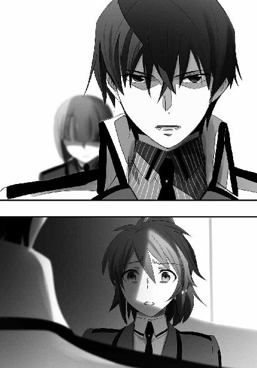
「じゃあ、もう一つの用件を聞こうか。多分、パラサイトの残党のことだと思うが」
「ご名答、と言うほどじゃないよね。この程度の話が通じないなら達也くんじゃないから」
ようやくいつもの調子を取り戻した、様に見えるのは、意識してのことだろう。
「褒めているのか、それ？」
「少なくとも、貶しているつもりはないよ？」
演じている内に、エリカも段々いつもの調子が戻って来たようだ。この立ち直りの早さは、羨ましくもある。
「俺も放っておくつもりはない。何か分かったら教えるから安心してくれ」
そう言いながら達也はピクシーへ思わせぶりな視線を向けた。
エリカもチラッとピクシーを見て、唇の両端を満足げに吊り上げた。
「絶対、よ？ その代わり、あたしもこの件では隠し事しないから」
この件では、と条件を付ける辺りが如何にもエリカらしい。
「ああ、約束する」
だが彼女との付き合いは、この程度の距離感がちょうど良かった。
「じゃあね、達也くん。邪魔してゴメンね」
「ああ。お兄さんにもよろしく」
ドアに手を掛けたエリカの背中がビクッと震えたが、そのまま何事もなかったようにエリカは教室を後にした。
達也もそれ以上の言葉は掛けなかった。
◇ ◇ ◇
達也と密談（？）していた教室を出て、足早に廊下を歩く。人気の乏しい実験棟から本棟の二科生エリアへ戻って来たところで、エリカは廊下の壁に背中を預けた。
大きく息を吐き出す。
今更のように、冷たい汗がエリカのこめかみを伝う。
今更ながら、今日の自分はおかしかった、という想いが彼女の心に湧き上がる。
普段であれば、あんな、虎の尻尾をまともに踏みつけるような真似はしなかったはずだ、とエリカは思った。
──いや、あれは虎の尻尾どころか、竜の逆鱗だった。
──お陰で、分かってしまった。
──知る必要のないことを、知ってしまった。
（......サイテー）
エリカの唇が自嘲の笑みに歪む。
こういう裏があったのか、と分かってしまえば、色々なことが納得できる。
だがそれを、他人に話すことはできない。
話すなと、知られるなと、釘を刺されてしまったことをエリカは理解していた。
そしてそれは、エリカ一人を対象にしたものではない。
（次兄上に何て言おう......）
達也の最後のセリフは、多分そういう意味だ。
元々エリカは、次兄を使ってまで達也の身辺を探ろうとする「誰か」が気に喰わず、達也の味方をしてその邪魔をしてやろう、と思っていた。
達也の秘密を守ってやろうと考えていたのだ。
それが今やどういう訳か、「守ってやろう」ではなく「守らなければならない」立場にエリカは追い込まれてしまっていた。
別に、エリカが秘密を漏らしたからといって、達也は報復したりしないだろう。
（あたしが口を滑らせても、笑ってスルーしそうな気がするけど）
だが「万が一」ということがある、とエリカは思い直した。
それを試してみる気にはなれない。
達也の実力だけでも厄介極まりないのに、その上──かもしれないのだ。
（あ～あ......ドジったな。ホント、「触らぬ神に祟りなし」よね）
何故あんな話になったのだろうかと、エリカは声に出さずぼやいた。
今にして思えば、自分が気づくように誘導された気さえしてくる。
（まさかね......いくら達也くんが性格悪いからって、それは考え過ぎでしょ）
エリカは強引に、自分の疑念を笑い飛ばした。
その程度のことはやりそうだ、という思いから、全力で目を逸らして。
◇ ◇ ◇
（......やぶ蛇だったかな？）
エリカが出て行った後のドアを見詰めたまま、達也は心の中で独白した。
昨日の千葉修次による介入は、千葉家が一族ぐるみで七草家の、あるいは七草家に使嗾された国防陸軍情報部の手先となって探りを入れてきたものか、とも考えたのだが、少なくともエリカは関与していなかったようだ。
単に知らされていなかっただけかもしれないが。
（まあいいか。遅かれ早かれ気づかれていただろうしな）
エリカには既に、色々なものを見せている。自分の力だけでなく、深雪の「コキュートス」まで見られているのだ。彼女の勘の良さなら、たとえ今回余計なことを言わなくても時間の問題だっただろう。
（結果的に、巻き込むこともできそうだし）
達也もこの展開を最後まで企んでいたわけではなかったが、どうやら結果オーライで済みそうだ、と考えた。
一般に、秘密を守る為には、協力者の存在が不可欠だ。
当人たちだけではどうしても手が回らないこともある。何故なら、秘密を探り出そうとする者は、それを当人に隠れて行うものだからだ。そういう時、見かけの上では第三者の協力者がいてくれると何かと都合が良い。
達也はそんな、かなりエゴイスティックな結論で無言の独白に幕を下ろした。
「ピクシー」
『はい、ご主人さま』
ピクシーとの会話で、テレパシーが言葉ではなく概念を伝えるものであるということを、達也は実感覚で理解していた。相手が伝えようとしているイメージが、伝えられる側の語彙を使って翻訳されているのだと。
使用人の格好ならまだしも、同じ学校の制服姿で「マスター」とか「ご主人さま」とか呼ばれるのは落ち着かなかった。だが相手がそう思っているのだから、テレパシーでコミュニケーションをとる以上、慣れるしかなかった。
むしろ「マイ・ロード」とか「ミ・ロード」とか翻訳されなかったことに、達也は安堵した。主に、自分自身の言語センスに対して。
彼女（？）が使っているのは能動型テレパシーだから、達也が考えていることは分からない。電子頭脳にインプットされていたマニュアルから名前を呼ばれた場合の行動パターンを読み出して、達也の正面に移動する。
「そのボディに宿る以前、お前たちは共通の目的意識を持ち、組織的に行動していたように見える。お前たちの中に、指揮官に該当するものは存在するのか？」
『我々の中に指揮命令関係は存在しません』
「ではどうやって、組織的な行動を維持していた？」
『厳密に言えば、我々は一人一人が完全に独立した個体ではありません。我々は個にして全。個別の思考能力を持ちながら、意識を共有していました』
「一つの精神が複数の思考を行っている状態だったということか？」
『思考だけではありません。不完全な自我と独立した思考力を持つ下位意識が一つの上位意識に統合された状態だった、と表現すれば一番近いでしょうか』
「理解した。だがそれでは、下位の意識が異なる目的を持ち、上位の意識の統一性を失わせることにならないか？」
『生命体を宿主とした場合、その最も根源的な欲求に影響を受けることは避けられません。生存本能と生殖本能が共有する意識の中で統合され、我々の行動を決定づけていました』
「生き延び、仲間を殖やす。生物の在り方として実にシンプルだな」
『そのとおりです。我々は生命体として最も優先される欲求に従い、生存と自己複製を目的として行動していました』
「仲間同士で意識を共有しているのであれば、生存と自己複製以外の目的についても協力関係は作られるのではないか？」
『大本で統合されているといっても個別の自我を持つのですから、宿主が個別に持つ欲求に対しては個別に対応します。ただ今回は共通の目的を優先していましたので、マスターがそのように感じられたのだと思います』
「なる程な......」
達也は言葉を切って、考え込んだ。
そこで余計な口を挿まないのは、彼女が人間でないからか、それとも機械を宿主としているからか。
「では、非生命体に宿った今のお前はその共通の目的から外れた、異端の存在ということになる。仲間の中に異端が発生した場合、お前たちはそれを排除しようとしないのか？」
『我々に異端の排除という欲求はありません。ただ、私が彼らの目的を妨げると判断したなら、優先的に攻撃を仕掛けてくる可能性はあります』
「そうか......あと一つ質問だ。お前は現在、仲間との接続が切れた状態だと言っていたが、仲間の存在を全く感知できないのか？」
『相手の活性が高まっている状態であれば、おそらく感知可能です。逆に言えば現在の私は、ある程度まで接近すれば彼らに感知され得る状態です』
「そうか」
達也は少し考える素振りを見せて、すぐに新たな命令を下した。
「ピクシー、ガレージに戻って元の服装に着替え、スリープ状態で待機。また後で用がある」
『かしこまりました。ご命令をお待ちしております』
ピクシーは折り目正しい、言い方を換えれば硬い動作でお辞儀をして、ガレージへ向かった。
達也は必要な装備を頭の中でピックアップしながら、一旦家に戻るべく、深雪を迎えに生徒会室へ足を向けた。
◇ ◇ ◇
西暦二〇九〇年代、世界は狭くなった。だがその意味は、魔法師と非魔法師で正反対のものになる。
先の大戦とその後の散発的な国境紛争において有用な軍事力と認められた魔法師は、公務を除き国の外へ出ることを厳しく制限されるようになった。魔法師にとって世界は国境の内側に縮小された。
一方、魔法師でない人々は交通技術の進歩の恩恵を全面的に享受している。陸海空全ての輸送機械が高速化し、人々はより気軽に国外へ出掛けることができるようになった。今や地球の裏側に飛行時間十時間・乗継無しの直行便が飛んでいる時代だ。世界は百年前に比べて確実に狭くなっている。
世界群発戦争の発生経緯から、どの国も不法移民につながる可能性が高い異国人の長期滞在に慎重になっている。その代わり、短期滞在の異国人は多くの国で増加傾向にある。この東京でも異民族が歩いている光景が当たり前のものになった。
日暮れ時、隅田川の東側をホワイトヒスパニックの男性とメスティーソ（白人とインディオの混血）の若い男性とムラータ（白人と黒人の混血）の若い女性が連れ立って歩いていても、違和感を覚える日本人はいない。その三人が建物だけは大きい、あまり流行っていない病院へ入っていく姿に、不審の目を向けた市民はいなかった。
病院の地下にはベッドが置かれていた。
こう表現すると当たり前のことのように思われるが、そのベッドは普通、病院に置かれているようなものではなかった。
黒い革張りでクッションがほとんど効いていない、ベッドというより寝台と表現した方が適切に思われる直方体の箱。横一列でも四台と五台の二列でもなく、放射状に配置された九台のベッド。その上には一台につき一人、九人の若い男性が横たわっている。全員が北東アジア系の顔立ちだ。枕もなく寝かせられた九人は一様に青白い顔で、胸が動いていない。死体か、あるいは仮死状態。地下室には九人の静止した青年と、地上階から降りてきた三人のヒスパニック男女の姿しかない。
頭を内側に向けて並べられたベッドが作る中央の空隙に、白人の男性が立った。こうして薄暗い場所に立つと、何処となく奇術師を思わせるムードを纏っている。
メスティーソの青年が腕時計を確認した。腕を上げた姿勢のまま、何かを待っている。およそ十分の時間が経過したところで、青年がベッドの円環を挟んで向かい側に立つムラータの女性へ目を向けた。それは何かの合図だったのだろう。女は小さく頷き両手を顔の前に掲げた。
青年もまた、同じポーズをとっている。相対する青年と女性の中間で、男は手を叩き、同時に足を踏み鳴らした。
拍手が続く。
足踏みが続く。
青年と女性が、男の拍子に続いて手を叩き、足を踏み鳴らして円環に配置されたベッドの周りを回る。青年と女性の位置がちょうど入れ替わったところで、男が一際強く手を鳴らした。
拍手の余韻の中、静止していた人体がベッドの上で起き上がる。
一人、また一人。
八人の仮死者が、黒い寝台の上で蘇生していた。
薄暗い地下室の中、虫の羽音に似たざわめきが、実体次元でもなく情報次元でもなく精神の次元を行き交っていた。
それを人の言葉に翻訳するなら──
（私／我々はようやく目覚めた）
（私／我々はまだ欠けている）
（欠けているのは一人／一つか？）
（器が足りないのか？）
（違う。器はこのとおり、協力者が揃えてくれていた）
（華僑のネクロマンシーも中々のレベルだ）
（いや、少なくとも私／我々のレベルを超えていると認めなければなるまい）
（死を前にした生に対する渇望。停止した自我）
（宿主を仮死状態にして同化する方法は思いつかなかった）
（だが私／我々も学習した。これで宿主の移動方法は分かった）
（次からは肉体を破壊されても、短期間で活動を再開できるだろう）
（欠けている一人／一つを取り戻すことも容易い）
（欠けている私／仲間を取り戻そう）
（欠けている私／仲間を探しに行こう）
──このような会話が交わされていた。海を越えてきた三個体と、目覚めた八個体の魔性の者によって。
◇ ◇ ◇
帰宅した達也は着替えるより先に電話機へ向かった。使うのは居間にある大画面連動の電話機ではなく自室に置いたセキュリティ強化版だ。普通なら映像処理に割り当てられる能力までリアルタイム暗号処理に回した音声専用の電話機でコールする先は四葉家執事の葉山。メールで指定されていた時間に結構ギリギリのタイミングだった。
『達也殿ですか。予定どおりですな』
「葉山さん、昨晩はありがとうございました」
お互いに普通の前置きは省略した。達也は葉山に合わせた格好だ。この初老の執事は忙しくて気が急いているというより、こちらに何か伝えたいことがあると達也は感じた。
『昨晩も申し上げたとおり、礼には及ばない。深雪様をお守りするのは我が四葉にとって二番目の優先事項ですからな』
「葉山さん、貴方までそんな軽率なことを仰るようでは困ります」
『時と相手を弁えていれば問題ありますまい。そもそも私はあの者と違って、達也殿に敵対する程の度胸など持ち合わせていない』
少なくともこのような無駄話に付き合う程度の時間の余裕はあるようだ。
だからといって、達也の方も時間にそれ程余裕は無い。わざわざ守秘回線で電話を掛けてくるように指示した用件を聞くことにする。──ここで何ヶ月も前に青木との間で生じたトラブルを持ち出されても反応のしようがない、という事情もあった。
「それで、お話は何でしょうか？ メールでは伝えられない、直接お目に掛かるだけの時間的な余裕も無い、緊急の御用件だと思いますが」
『おお、そうでした』
言われて気がついた、というような声を葉山は上げた。だがそれが演技であることは、声そのものから判断できなくても老執事の為人を知っていれば分かることだった。
『達也殿、例の魔物の件で第三課が動いている様子だ。そのことを君の耳に入れておきたかったのですよ』
「第三課......国防軍情報部防諜第三課ですか？ あの面白部隊は確か七草派でしたね？」
達也がそう言うと、受話器の向こう側から笑い声が聞こえた。
『かの独立魔装大隊の一員でもある君に面白呼ばわりされるのは彼らも不本意でしょうが、その第三課です』
「興味を持っている、というのは退治する方向ではありませんね。それは七草家が防諜第三課を通じてパラサイトを調査......いえ、捕獲しようとしているということですか？」
『いつもながら御明察、と言いたいところだが、彼らの目的はまだ分かっておりません。しかしおそらく、達也殿の言われるとおりでしょうな』
厄介な話だ、と達也は心底思った。ただでさえ関係勢力が多くて錯綜しているこの事件に新たなプレーヤーの登場だ。しかもそれは七草一派でありながら真由美とは目的を異にしているらしい。
「貴重な情報、ありがとうございました」
だからといって盤面をひっくり返して全て終わり、というわけにもいかない。どんなに面倒でも、現実はゲームと違ってリセットなど許されない。
『これも深雪様の御身をお守りする為に必要と考えてのこと。努々それを忘れてはなりませんぞ、達也殿』
「心得ております」
そう、深雪の生きるこの世界を壊してしまうことなどできない。葉山の訓戒は改めて念押しされるまでもないものだったが、達也は抵抗なくそれを受け容れた。
◇ ◇ ◇
午後七時。
既に生徒は全員下校し、教職員もごく一部が残っているだけの校舎はシンと静まり返っている。校門も閉鎖され、翌日まで一部の例外を除いて人の出入りは許されない。教材や購買部の商品、学食の食材も、基本的に日中、地下チューブまたは裏門からの搬入となる。
出入りが許されるのは宿直の職員、契約している警備会社の警備員、夜間でなければ作業できないシステムメンテナンスのエンジニア他、学校が特に認めた者と、生徒会が特に認めた生徒だけだ。
生徒自治にしては少々行き過ぎにも見えるこの権限は、去年、真由美が生徒会長当時に導入したものだ。その背後には七草家の思惑と権威が少なからず絡んでいたようだが、利用する側になってみれば裏の事情はどうでも良かった。職員室にもっともらしい理由を並べた申請書を提出せずに済むのは、達也にとって実にありがたいことだった。本当の理由を明かせない場合には特に。
一旦家に戻った達也は、帰宅途中にあちこち手配して、帰り着いた時には届けられていた荷物を詰めたバッグを肩に学校へ戻っていた。通用口の守衛に生徒会長の承認コードが打ち込まれた夜間入構許可証を提出して来訪者用のＩＤカードを三枚受け取る。夜間はこのＩＤカードが無ければ不審者として警備システムに引っ掛かる、という仕組みだ。
何故三枚かというと、一枚目はもちろん、自分用。
二枚目を後に続く深雪に渡す。深雪は満足げな笑顔でカードを受け取った。
本当は、深雪を連れてくるつもりはなかったのだ、達也は。今日は留守番をさせておく予定だった。
ところが、夜間入構許可証発行の際に、深雪から条件をつけられてしまったのである。
自分も、連れて行けと。
許可証の発行権限は、生徒会長のあずさにある。だが、現生徒会の真の権力者は会長ではなく副会長だ、という口さがない噂を裏付けるような一幕が、約三時間前、達也の前で繰り広げられた。
妙に頑なな妹の説得に失敗して、達也は同行を認めざるを得なかった。
深雪と、更にもう一人。
三枚目を駅で合流したほのかに渡す。言う迄も無いことかもしれないが、達也は当初、深雪同様、いや、深雪以上に、ほのかを連れて行くつもりなど無かった。こうなったのは許可証発行の話を生徒会室で、つまりほのかも同席している中でしてしまった為だ。真に、迂闊としか言いようがない。しかし断るにしてもあずさや五十里まで聞き耳を立てている状況で本当の目的を告げられるはずも無かったし、ほのかに懇願されるだけならまだしも深雪がその擁護に回っては達也に拒絶を貫くことは不可能だったのだ。なお深雪と違い、ほのかは恐縮した顔で達也の手からＩＤカードを受け取った。
許可証申請の表向きの理由は「異常な挙動が続いている３Ｈ─Ｐ94の様子を見る為」である。だが達也の真の目的はピクシーを外に連れ出し、パラサイトを誘き寄せることだった。
ピクシーに訊問を重ねて一つ分かったことがある。それは「パラサイトはピクシーを放っておかない」ということだ。分かったといっても推測に過ぎないのだが、達也はこの推理に自信があった。意識を共有していたパーツのリンクが突然切れれば、それを回復しようとするはずだ。その為に何らかの形で接触してくるに違いない。達也はそう考えた。
彼にはパラサイトを捜し出す手段が無いし、積極的に捜し出す必要も本当は無かった。──一昨日までは。だがピクシーに憑依したパラサイトを所有してしまった以上、無関係ではいられない。あの状態のピクシーを放り出す方が余程問題になりそうだ。それよりパラサイトを片づけた方が望ましい。元々彼はパラサイトとの再戦を想定していた。八雲に教えを請い修行に付き合ってもらっていたのもその為だ。ピクシーのことは消極姿勢が積極姿勢に変わるきっかけを作っただけに過ぎない。
今夜、パラサイトを一網打尽にできるとは達也も思っていない。だが一人でも二人でも誘き出せれば、残りの個体の居場所を突き止める手掛かりが得られるはずだと彼は考えたのだ。
これからやろうとしていることの危険度を考えれば、達也は深雪とほのかの同行を断固として拒絶すべきだったのかもしれない。達也は多分、「危険」に対して色々なものが少しばかり麻痺しているのだ。
今夜の作戦は立案当初から彼の単独行動ではない。これまでの経緯を踏まえ、また必要性を考慮してエリカと幹比古にサポートを依頼している。この二人に手伝ってもらうのだから、同じくらい事情に通じている深雪やある意味当事者になったほのかが同行しても構わないだろうと、達也はいささか思慮に欠ける判断をしてしまったのである。
登校時は休日であっても制服着用が第一高校のルールだが、夜間入構時はその限りではない。通信機能のついたＩＤカード所持が必須だから制服を着用する必要がない、というのが表向きの理由だが、夜中に街中を制服でウロウロするな、という裏の意図もある。
学校側にとって一種のリスク回避──別名事なかれ主義──で、それを理解している達也は注文どおり、荒事用の、例のブルゾン姿だ。深雪も兄に倣ってハーフコートにストレッチパンツ、ロングブーツのアクティブなスタイルで決めている。
ところが、ほのかのコートの下は、制服のままだった。これから何をするのか理解していないのではないか、と疑わせる姿だったが、それを声や表情に出す達也ではない。
「ほのか、貴女、お家に帰らなかったの？」
兄の疑念をマイルドな表現で代弁したのは深雪だった。
「えっ？ ううん、帰ったけど」
ほのかは一人暮らしで、借りている部屋は兄妹の家よりも学校に近い。着替える時間がなかった、ということはないはずだ。
「もしかして......制服じゃ、まずかったんですか......？」
「まずい、という程でもないが......少し、都合が悪いかもしれないな」
責めるようなことは言いたくなかったが、今夜は様々なアクシデントが予想される。そして、ほのかはそれを想定していないようだ。こんなことならしっかり説明しておくべきだったか、と達也は少し後悔を覚えた。
そんな達也の思惟を敏感に読み取ったのか、ほのかは廊下を歩きながら俯き気味だ。
「お兄様、一旦ほのかのマンションへ寄りませんか？」
気まずい空気の解消を図ったのは深雪だった。
「ほのかが着替えている間、下で待っていれば」
深雪には「敵に塩を送る」という意識は無かっただろう。おそらく、達也が困っているから解決策を提案しただけにすぎない。
「そうだな。お邪魔するには遅い時間だし......ほのかが良ければ、そうさせてもらおうか」
「いえ！ 私は、その、来ていただいても少しも構いません。お時間を頂戴できるのでしたら、是非上がっていってください」
しかし、深雪の思惑とは無関係に、ほのかにとっては願ってもない話だった。
そんな、すれ違いが一回転して歯車が嚙合った会話を交わしている内に、三人はロボ研のガレージに着いた。当然鍵が掛かっているが、鍵というものは大抵、内側から開ける分には特段何も必要としない。達也は携帯端末の近距離通信モードを立ち上げ、今日作成したばかりの、認証キーを兼ねた暗号文を送信した。
反応はすぐに返ってきた。
『お呼びですか、ご主人さま』
扉一枚程度、それが薄さに似合わぬ強度を持つ装甲扉であっても、テレパシーの妨げにはならない。
「入り口を開けてくれ」
『かしこまりました』
返事があってすぐに、ガレージの扉は開かれた。
そのすぐ内側に、深々と腰を折るメイド服の人形の姿。中に魔性が宿っていても、プログラムされた基本行動パターンは遵守されるようだ。
ピクシーが顔を上げるのを待って、達也は鞄の中から最初の荷物を取り出した。
「ピクシー、これに着替えてくれ」
如何に夜中とはいえ、いや、ある意味で夜中だからこそ、この格好（即ちメイド姿）で連れ歩くわけにはいかない。だからといって制服姿も前の理由でＮＧ。今回の作戦に当たり、達也がまず手配したのはピクシーが着る服だった。
この程度のことに返事は不要と判断したのだろう。ピクシーはいきなり、身に着けたバルンスリーブのワンピースを脱ぎ始めた。
達也もそれを当然という目で見ている。「彼女」の着替えを見るのは放課後に続いて二回目だし、人形と人間を混同するような性向を彼は持ち合わせていない。達也にとってピクシーの着替えは、バイクにカバーのシートを被せたり外したりするのと同じようなものだった。
「お兄様っ？ 何を平然と見ておられるのですか！」
だが、深雪にとってそれは、認め難いことだったようだ。
見ればほのかも、同じような非難の眼差しを彼に向けていた。
「何をって、深雪、ピクシーはロボットだぞ？」
「ロボットでも女の子ですよ！」
「いや、確かに人型だが、そこまで精巧に人体を模倣しているわけでは......」
達也の言うとおり、３Ｈは「服を着れば人間と見間違う」ように作られた人型ロボットであって、服で隠れる部分のディテールは女性の裸体とまるで違う。疑似性行為に用いる安価な人形の方が「そういう」部分の再現度はずっと高い。
上半身は「肌色のレオタードを着た女性」に近いが、それも腰の上まで。腰部から足の付け根の部分の外形は明らかにロボットと分かるもので、タイトなボトムを着かせると後ろ姿だけで人間でないと分かる。裾が広がったスカートがデフォルトなのはそういう理由からだ。
しかし二人の少女にとっては、そんな客観的な事実より主観的な外見の方が優先するようだった。
達也は深雪によって後ろを向かされ、ほのかがピクシーを隠すように二人の間に立っている。
理不尽と思わないでもなかったが、同時に、着替えているところを見たいわけでもない。達也は二人の許可が出るまで、大人しく背中を向けていた。
「達也さん、もういいですよ」
ほのかに声を掛けられ、念の為に深雪の表情を確認してから、達也は振り返った。
達也が持って来た衣装は、襟を立てるタイプのオーバージャケットの下に伸縮性の高いセーター、ヒップラインを隠す三段フリル付きの膝上丈スカートだ。
首元は長めのマフラーを二重巻きに。
顔を隠す帽子の類はあえて省いた。
脚には厚手のタイツとブーツを履かせ、細部を隠しながら脚のシルエットを強調している。──これは服を用立ててくれた独立魔装大隊補給担当の女性下士官のアドバイスを全面的に採用したものだった。
ほのかがどこからか取り出したブラシでピクシーの髪を弄っているが、ピクシーはそれに構わず、真っ直ぐに立ったまま身動ぎもしない。それはどんなに外見を真似ても彼女が人間ではなく人形であることを示すものだったが、ピクシーに対してそこまで高度な要求をするつもりは達也に無かった。
道を歩いていて不審尋問を受けない程度で構わないのだ。
その点で言えば、ピクシーの今の姿は合格だった。
「ピクシー、ついてこい」
達也は作戦開始を宣言する代わりに、こう告げた。
奴隷に命ずるが如く、傲然と。
無感情に。
◇ ◇ ◇
エリカは兄の部屋の前で、立ち竦んでいた。
彼女にしてみれば、全くの予想外で予定外だ。自分にこんな気弱なところが残っていたとは。
母屋に入るのに気後れはないが、父親や姉と会うのは避けたい。その二人ほど抵抗は無いが、長兄と顔を合わせるのも気が進まない。幸いこの時間なら長兄はまだ帰っていないはずだが。
とにかく、さっさと用件を済ませて離れの自室に戻るのが最良であり、廊下でグズグズしているのは最悪だ。今日はこの後の予定もあるのだから。
「次兄上、エリカです」
自分を鼓舞して、声を掛ける。
「入りなさい」
返事が返ってくるまで、やや間が空いた。
不機嫌ではないが、余り歓迎されていない声だ。
いや、芳しくない気分を無理に取り繕っているのだろう。
そのまま「回れ右」したくなる衝動に逆らって、エリカは扉を開けた。
「こんな時間にどうしたんだい？」
修次はライティングデスクの前に座っていた。椅子を回転させて、身体ごとエリカの方へ向いている体勢だ。しかしエリカはデスクの向かいのベッドに、たった今まで人が寝ていた痕跡を認めた。
一昨日と逆の立場だったが、エリカはそのことを口に出して指摘したりはしなかった。
「少し、お耳に入れたいことが」
エリカの口調は歯切れの悪いものだった。
修次の、無理に浮かべている笑みが、そうさせていた。
「言ってごらん」
修次の応えは、余り熱意の感じられないものだった。言葉を飾らずに言うなら「義理で聞こう」という印象があった。ただそれはエリカを軽んじている為というわけではなく、他のことに気をとられている印象があった。
「兄上は、第一〇一旅団・独立魔装大隊という名前の部隊をご存知ですか？」
「何故エリカがその名を知っているんだ？」
修次の気のない返事に挫けてしまいそうだった心を奮い起たせてエリカが問い掛けた言葉。
そこに含まれていた名称に、一転、修次は強い関心を示した。
「実は......」
ここまで来てなお、躊躇はしつこくエリカの脚に絡み付いていた。だが、他に巧い手は思いつかない。
「兄上の護衛対象である私のクラスメイト、司波達也くんは、その独立魔装大隊の特務兵なのです」
「何だって......？」
迷い、というより怖れを振り切ってエリカが明かした事実に、修次は驚きを隠せなかった。
「申し訳ございません。本来ならば先日お話をうがった際にお伝えしておくべきだったのですが、風間少佐と仰る方より、国家機密に属する事項だと固く口止めされていたものですから」
「風間少佐......？ 『大天狗』風間玄信か！」
「大天狗、ですか？」
兄の反応に、今度はエリカの方が驚きと共に首を傾げた。
とかく魔法師には、相手を萎縮させる為のハッタリを兼ねて、大袈裟な二つ名が与えられるものだが、『大天狗』というのはその中でも際だっている。大仰すぎて、かえって何か謂われがあるのでは、と思ってしまう。
「風間少佐のことを次兄上はご存知なのですか？」
「ああ......山岳戦・森林戦における世界的なエキスパートとして知られている古式魔法師だ。空挺部隊の運用においても、現在、国内屈指の名指揮官と言われている人だよ」
修次の顔と声には興奮と畏怖が混在していた。
「大越紛争は知っているね？ あの紛争で、インドシナ半島南進を目論む大亜連合を相手にゲリラ戦を繰り広げていたベトナム軍に加わって、大亜連合軍、中でもその先遣隊となった高麗軍から、悪魔か死神のように恐れられたそうだ」
修次が小さく息を吐いた。興奮は憧憬に、畏怖はため息に変わった。
「それが二十代前半......今の僕とそれほど変わらない年頃でのことだというのだから、ある意味で伝説の人物だね。もっともその所為で、大亜連合との正面衝突を回避したかった当時の軍中枢部から睨まれ、出世コースから外されてしまったそうだけど」
兄の話に目の前の懸案も忘れて、エリカも「ヤレヤレ......」とため息をつきたくなった。
功労者が事なかれ主義の犠牲になる構図がここにもある。いつかそれが、国を滅ぼすのではないだろうか。自分のような小娘の考えることではないと分かっていても、エリカは考えずにいられなかった。
「噂の独立魔装大隊は、風間少佐が率いる部隊だったのか......ならばあの、都市伝説じみた数々のエピソードも頷ける。そして司波達也君がその部隊の一員だというなら、年に似合わぬあの技量も少しは納得できるというものだ」
エリカが心の中で独白するのに並行して、修次も自分に言い聞かせるように呟いていた。
お陰でエリカは、意識を本来の目的に引き戻すことができた。
「兄上。私が風間少佐にお目に掛かったのは横浜事変の折です。あのような非常時でなければ、司波くんの秘密を明かされることはなかったでしょう。それほど重要度の高い機密だと、私はその時に感じました」
「う～ん......独立魔装大隊自体が、秘密部隊の性格を持っているからね。そこに高校生が非正規兵として加わっているとなると、確かに、余程の理由が存在しているんだろうな」
「私が禁を破って兄上に司波くんのことをお伝えしたのは、まさにその事を分かっていただきたかったからです」
「つまりエリカは、これ以上、彼の内情に踏み込むべきではないと言うんだね？」
「ハイ。藪をつついて蛇を出す結果になっては、兄上の為にも、千葉家の為にもならないと存じます。ましてやその蛇が、猛毒を持つ大蛇かもしれないとなれば」
「ふむ......確かに、エリカの意見は理に適っている。しかし学生とはいえ、僕は既に軍属だ。正式な命令には逆らえない」
「でしたら、表向きの命令にのみ従えばよろしいのではありませんか？ あくまでも護衛として振る舞い、彼に対する攻撃があった場合に、対応するに止めるのです」
「なる程......分かった。その線で考えてみよう」
......何とか、「四葉」の名を出さずに次兄を説得することができたようだ。エリカは安堵した顔を見られぬよう一礼し、目を合わせぬまま修次の部屋を辞去し、自室に戻った。
離れにある自分の部屋に戻ったエリカは、机の上で着信サインを点滅させていた情報端末のメールを読み「青山霊園か」と呟いた。そのまま椅子に腰を落ち着ける間も無く、着ている物を脱ぎ捨てる。良家の子女にあるまじき御行儀の悪さだったが、修次の説得で消耗した心を自分で鼓舞する為にあえてやったことだ。
鎧下──防弾・防刃機能を持つ多機能合成ゴム製のアンダーウェアを着込み、その上にフェイクレザーのライダースジャケットとショートパンツを身に着ける。膝には動きを阻害しないプロテクター、両手には掌と指の内側部分が極薄になった合繊の手袋。ジャケットのポケットに入れた小物を確認して、得物を持ち、エリカは離れの玄関へ向かった。ショートパンツに膝下のブーツを履いた姿は彼女のコケティッシュなルックスに似合うお洒落な物だったが、行き先は夜の繁華街ではない。
離れの外には「エリカ親衛隊」の面々が控えていた。彼らは今回の「吸血鬼事件」における千葉家の部隊の中核、つまりエリカの手足となって働いている。
「行くわよ」
エリカが素っ気なく声を掛ける。
男たちは不満げな色一つ見せず、彼女の背中に従った。
◇ ◇ ◇
ほのかの借りている部屋は、本当にこぢんまりとした賃貸マンションだった。間取り的には１ＬＤＫだが、キッチンに小さなダイニングが申し訳程度に附属しているだけで、実質的には１ＬＫの広さしかない。
それでもリビングとは別に自分の部屋を持っているのは、女の子として譲れないものがあるのだろう。玄関を開けるとすぐに自分の寝ているベッドが見えるというのは、男の達也でも余りいい気持ちはしない。
達也はそのリビングで、深雪と共にお茶を飲んでいた。ピクシーが元々の製造目的に従い手を出そうとするのを遮って、ほのかがあたふたと用意したものだ。出て来たのが番茶だったのは、ほのかの嗜好なのだろう。
当のほのかは、別の部屋で着替え中。防音は完璧だが、何となくバタバタとした雰囲気が伝わって来ている。もちろん兄妹二人とも、それに気づかないフリをするくらいの礼儀は弁えていたが。
ほのかが姿を見せたのは、兄妹がちょうど緑茶を飲み干したところだった。
「お待たせしました！」
勢い込んで出て来たほのかのファッションは、基本的に深雪と似たスタイルだった。
上半身はハーフコート。コートの下に見えるのはタートルネックのセーター。ただしボトムは丈の長いストレッチパンツではなくミニのキュロットに厚手のレギンスを組み合わせていた。トレンカとも呼ばれる、裾が輪になって爪先と踵だけが外に出るタイプのものだ。
キュロットはハーフコートの裾にちょうど隠れる長さなので、少し見ただけではレギンスの上に何も着けていないようにも見える。
中々人目を──と言うか、男の目を惹きそうなコーディネートだった。
もっとも実用性が無いというわけでもない。ほのかのレギンスは保温性と共に強度に優れた繊維で織られたもので、同じ繊維が野戦用のコートにも使われていることを達也は知っている。ほのかの着ている物を上から下までざっと見回して彼は軽く頷いた。
「じゃあ、行こうか」
達也のその仕草をどう解釈したのか、ほのかは笑み崩れる一歩手前の顔でその背中について行く。
髪には達也からもらった左右一対の水晶。その煌めきにほんの一瞬ピクシーが目を奪われたような仕草を見せたが、達也も深雪も、ほのか本人も気づかなかった。
「お兄様、これからどちらへ向かわれるのですか？」
改札を抜けプラットフォームに上がるエスカレーターの上で、ちょうど人気が無くなったのを見計らって、深雪が達也にそう訊ねた。目的地が何処であろうと深雪は達也についていくだけだが、何処に行こうとしているのか関心が無いわけではないのだ。
「青山霊園だ」
関心があるのはほのかも同じだが、達也の答えを聞いて頰を引きつらせたのは、時間を考慮すれば、好意とか信頼とかは別にして仕方のないことかもしれない。眉一筋動かさなかった深雪の方が、ティーンの女の子としては少数派に違いない。
「季節外れの肝試し......というわけでもありませんよね。お化けはそういう場所に出る、ということですか？」
「察しが良いな」
間接的に妹の推測を肯定した達也の顔は、抑えられてはいるが、微妙に嬉しそうだった。
「それはもう、お兄様がお考えになることでしたら」
満更でもなさげに、深雪も笑みを返した。
ほのかの胸に、小さな棘が刺さる。
「あの、達也さん。こんな時間ですから、もう閉園しているのでは......？」
一昨日までの彼女であれば、棘の痛みに怯んで引き下がっていただろう。
だが昨日の夜、親友から発破を掛けられた言葉が、ほのかの意識に、ではなく、彼女の胸に残っていた。
エスカレーターの一つ上の段から、割り込むように話し掛ける。
深雪は「あら？」という顔をしたが、達也に気にした様子はなかった。
「中には入れないだろうね。でもそれならそれで構わないんだ。近くにいれば向こうから出て来る。その為にピクシーを連れて行くんだから」
ピクシーを訊問した結果、他のパラサイトは今の彼女の在り方を許容しないだろうと達也は考えた。
生命体として歩調を合わせている他の個体にとって、自己増殖の欲求を失ったピクシーは外れてしまった存在だ。個体数が極めて少数であるなら、彼らは機械の中に囚われている彼女を取り戻そうとするだろう。自己防衛と種族維持、この二つの基本衝動に支配されているならば、その為の行動パターンも人間と同じであるはずだった。
「もし誰かに見咎められたとしても、ほのかが何とかしてくれるだろう？」
彼女の「光学迷彩」の腕前は、聞いただけでなくその後に目の前で実演してもらって達也も知っている。ＵＳＮＡ軍のバックアップ要員が使った「暗幕」とは比べものにならない高度な技術、高度な技量。ほのかは、姿を隠すにはうってつけの魔法師だ。
もっとも、これは達也のリップサービスである。実際に姿を隠さなければならない状況が生じるとは考えていない。
しかし。
達也には、まだ良く理解できていなかった。
ほのかには、この手の冗談が通じないということを。
「任せてください」
自信満々に、むしろ穏やかな口調で胸を叩いたほのかを見て、オーバーアクションだな、というとんでもない勘違いを達也はしていた。
◇ ◇ ◇
市ヶ谷の一角にある中層ビルの地下。ここに、国防軍情報部防諜第三課の本部がある。
防衛省内の本部が表向きの国防軍諜報活動の中枢なら、この「地下分室」は裏側の、真の中枢の一つ。中枢であるなら「一つ」という言い方は本来おかしいのだが、「本部がやられて機能麻痺」という事態に陥らない為の、リスクコントロールの産物である。
無論そこには普通ではない組織形態を作った事の副作用として、大きな弊害が生じている。
諜報組織には「右手が何をしているのか左手は知らない」という側面がつきまとうものだが、ここではそれが特に顕著だ。自分たちだけで好き勝手をやらないのはまだ救いがあると言えるが、各セクションに別々の後援者がついて、その意向に従いバラバラに活動しているのが実情だった。
国防軍情報部は、組織内に酷い不統一を抱え込んでいるのである。
「監視対象は都心方面へ移動中。同行者は妹他二名」
この地下分室のパトロンは大手電機メーカーの業界団体で、それは同時に国内第二位の軍需産業グループだ。そして、その連合体には七草家が深く食い込んでいる。彼ら防諜第三課の真のパトロンは七草家だ、とも言える。そして彼らは今、七草・十文字連合の真由美たちとは別に、七草家当主の意向を受けて動いていた。
「映像を照合します......一人は国立魔法大学付属第一高校一年生、光井ほのか」
「同級生か。妹を連れてデートとは変わった趣味だな」
どうやらこの場の責任者らしき人物の応えは嘲る口調のものだったが、受け取りようによっては僻みのようにも聞こえた。
「もう一人の方は......いえ、これは人間ではありませんね。タイプＰ94のヒューマノイド・ホーム・ヘルパーと思われます」
「ＨＡＲの人型端末か？ そんな物を連れて何処へ行こうとしているのだ？」
男は見せ掛けでなく首を捻った後、別の担当者に声を掛けた。
「個型電車運行システムへの侵入はまだか」
「ハッ、プロテクトが固く......申し訳ありません！」
部下の泣き言とも取れる発言を、責任者の男は叱責しなかった。公共交通システムの管制頭脳がそう簡単に侵入を許すようでは、テロの方が心配だと彼も理解していた。
「主任、ターゲットを乗せた電車が軌道を変更しました」
「赤坂......いや、青山か？」
モニターに表示されたキャビネットの進路から推測した行き先を呟き、主任はわずかな間をおいて命令を下した。
「警官に偽装したオペレーターを青山通りに配置しろ。ターゲット一行が魔法を行使したところを、逮捕を装い捕獲する」
命令受領の返事と通信機に向けた指示の声が飛び交う中、主任はモニターを見詰め続けた。
◇ ◇ ◇
バランス大佐は長期滞在用に大使館が用意した週契約家具付き賃貸マンション（所謂ウィークリーマンション）でグッタリと座り込んでいた。
臨時とはいえ作戦本部に侵入を許し、更に戦闘らしい戦闘もさせてもらえず拉致され、海上を漂流しているところを他国の艦船に救出されるという醜態を曝したのだ。彼女のキャリアと矜持を大きく傷つける大失態だった。
意外なことに、本国からも大使館に駐在している軍官僚からも特に責める言葉は無かった。今回醜態を曝したのは彼女だけでなく、臨時本部の警護に派遣されていた特殊部隊、小型艦船をシージャックされた海軍も同様だから（というより、ＵＳＮＡ海軍のプライドは彼女以上にズタボロだった）彼女だけを責められない、という事情は分かる。
だが、それだけではない、と推測できる程度には、彼女もまだ気力を残していた。
しかし、大きく失調していることも否めない。
不意に鳴ったドアホンに顔を上げて、夜もすっかり更けていることに初めて気づいた程に。
護衛役の女性軍曹がドアホンに応対している声が聞こえる。
彼女のクッ、と息を吞む音がバランスの耳に届く。
「失礼します」
バランスが占拠している居間に近づく足音も、入室の許可を請う声も、動揺に乱れていた。
「入れ」
バランスはソファの上で姿勢を正して、しっかりした発音を心掛けながら応えた。階級が下の者に気弱な姿を見せられない──彼女の意思や感情を超えてすり込まれた士官の心得が彼女にそうさせていた。
居間の扉が丁寧に開け閉めされる。目の前で敬礼したのはパンツスーツ姿の長身の女性。容姿や学歴よりも個人戦闘能力を優先して選んだ下士官で、腕も胆力も超一流。昨晩も彼女が傍にいれば少しは違う結果になったかもしれないと考える程に、バランスはこの軍曹のことを評価していた。
だが──その彼女が、青ざめて、顔を強張らせている。
ただごとではないと直感して、バランスはソファから立ち上がった。
「何事だ」
「大佐殿に、ご面会を求めている者がおります」
「なに......？」
バランスがここに滞在していることは秘密にされている。それでも軍の人間が（ＵＳＮＡ軍の、という意味だ）彼女に会いに来ただけで、護衛の軍曹がこれほど緊張する謂われはない。大使館員でも同様だ。つまり来訪者は、ＵＳＮＡ軍の情報封鎖にも関わらず、部外者でありながら、彼女がここにいると知って会いに来ているということだ。
軍曹に命令する時間ももどかしく、バランスは自分でリモコンを操作してドアホンのモニター映像を居間の大型スクリーンへ転送した。
そこに映っていたのは、神妙な顔でたたずむ、クラシックなドレス姿の、可憐な少女だった。
意外感が限界を超えて、バランスはたっぷり五秒間、フリーズした。
「......何者だ？」
ようやく再起動を果たしたバランスの意識は、少女の背後に控える体格の良い男性二名を認識した。一人は少女の物と思しきコートを丁寧に持っているので、多分彼女のお付きの者、ボディガードだろう。
見るからにただ者ではないボディガードを従えた、おそらくはミドルティーンの少女。
警戒しなければならないと分かっているのに、現実感が浸食されていくのを止められない。
「名はアヤコ・クロバ」
軍曹が言葉を切った。唾を飲み込むような仕草を見せたが、次の言葉を聞いて、それもやむを得ないとバランスは思った。
「ヨツバ家のエージェントを名乗っております」
「お目にかかれて光栄ですわ、ミズ・バランス。わたくしは黒羽亜夜子と申します。本日は、四葉家の代理人としてお邪魔いたしました」
少女はきれいな英語でバランスにそう挨拶した。
ただし、軍人に、高級士官に対する敬称は一切用いずに。
これだけ完璧な発音を身につけていて、その程度のボキャブラリーが無いということは考え難い。
つまり、わざと、だ。
自らの名を告げる時にファミリーネームを先にしたのも、同じくわざとだろう。
「ＵＳＮＡ軍統合参謀本部大佐、ヴァージニア・バランスです。失礼ながら、ご用件をうかがう前に一つお訊ねしたいのだが」
「あら、何でしょうか？ お答えできることでしたらよろしいのですが」
年齢はシリウス少佐よりも下に見えるが、交渉相手としての強かさではこの少女の方が勝っているように見える。
まがりなりにも、ＵＳＮＡ軍で最精鋭の魔法師部隊総隊長として様々な場を経験してきた彼女よりも。
目の前にいるのは、ただの少女ではない。それをバランスは、改めて心に留めた。
「ヨツバ家というのは......あの『四葉』ですか？」
抽象的な言い方になったのは、万が一、勘違いだった時を考えてのこと。
しかし、その具体性に欠ける問い方にも関わらず、少女はニッコリと微笑んだ。
「ええ、その四葉です。十師族が一、四葉家の当主、四葉真夜の代理人として、本日はお願いに参りましたの」
外れている可能性はほとんど無いと心構えをしていても、あっさりと告げられたその事実を受け止めるのは、簡単ではなかった。
日本の、四葉。
それは魔法に関わる者にとって、ある種の不可触領域だ。特に、魔法の軍事利用に関わっている者にとって。
彼らはシリウス少佐のように、たった一人で一軍に匹敵する大破壊力を有しているというわけではない。
四葉の在り方は、その対極。
今は（とりあえず）日本政府に従っている形だが、もし彼らが地下に潜りテロリストと化したなら、四回目の世界大戦の引き金が引かれると言う者までいる。
魔法というものの一面を、そこまで狂的に突き詰めた集団として、彼らは尊敬されるのではなく、ただ恐怖されていた。
「お願い、ですか？」
「はい。是非ともお聞き入れいただきたいお願いがございまして」
「うかがいましょう」
今更ながら、客を迎えてお茶も出していないことにバランスは気づいた。
しかし、ここで飲み物を用意して話の腰を折るのは、それこそ今更だった。
バランスは、少女が紡ぎ出そうとしている言葉に意識を集中した。
「ではお言葉に甘えて。ミズが手掛けておいでの、我が国の魔法師に対する干渉を中止していただきたいのです」
「............」
干渉とは言う迄もなく彼女が指揮を執っている諜報戦、日本の非公開戦略級魔法師に関する調査とその確保（＝拉致）または無効化（＝暗殺）作戦のことだろう。この少女の「お願い」──四葉の要求がその件である可能性を、バランスはもちろん考えていた。というより最も可能性が高いと予想していた。
しかし「中止せよ」という予想を超えた遠慮の無い要求に、すぐには反応を示せなかった。
「ミズ・バランスにおかれましては、我が国の『十師族』というシステムがどのようなものであるか、ご存知のことと思いますわ」
もし知らないなら教えて差し上げてよ、とでも言いたげな少女の口振りに、反感を覚えながらもバランスは頷いた。しらばくれても意味の無いことだった。
「わたくしどもの当主、四葉真夜は、あなた方の過剰な干渉を憂慮しております。貴国と我が国は同盟国ですから、このようなことを火種にしたくないと申しておりますの」
「......それは警告か？ 手を引かねば、火がつくという」
亜夜子は、バランスの質問に答えず、もう一度ニッコリ微笑んだ。
「ミズ、昨晩は良くお休みになられましたか？」
「あれは貴様らが!?」
気がつけばバランスはソファから立ち上がり、身を乗り出していた。
もう少しテーブルの幅が狭ければ、少女の襟首を摑み上げていたかもしれない。
「ええと、何のことでしょう？ ミズのお顔の色があまりよろしくないご様子でしたので、僭越ながらご案じ申し上げただけですが」
案じていると言いながら、少しも心配そうな顔はしていない。
少女は笑っている。全てを心得た、訳知り顔を隠そうともせずに。
「ミズ・バランス、どうかお気を鎮めてくださいませ。わたくしどもは、できますならば、ミズと良好な関係を築きたいのです」
「良好な関係だと......？」
少女に言われたからではないが、今ここで彼女を締め上げても無意味なばかりか有害だ、と気づいてバランスはソファに戻った。その彼女に投げ掛けられた言葉は、バランスの感情を更に逆撫でするものだった。
「わたくしども四葉の実力は、ミズもご存知のとおりです。そしてわたくしどもも、ミズのお力は良く存じ上げております」
感情は最悪に近かったが、理性は少女の話に耳を傾けろとバランスに命じていた。
四葉家の代理人を名乗った少女は今、ＵＳＮＡ軍の力でもスターズの力でもなく、バランスの力を知っている、と言った。
それは、つまり......
「ミズが今回の一件から手を引くお手配をくださるなら、わたくしどもはミズ個人に対して感謝を忘れません、と当主は申しております。今後もし機会がございましたなら、ミズのお力になれるでしょう、とも」
それは魅力的な提案だった。
あの「四葉」と個人的なコネクションを持てるというなら、軍内部において、昨晩の一件で失った地歩を補って余りある武器となる。彼らの実力は、昨晩身を以て思い知ったばかりだ。
婉然と少女が微笑む。
葛藤の天秤は、理性の側に傾いた。──欲という名の、理性の側に。
バランス大佐は、美しい少女の容姿をした悪魔の差し出す契約書に、サインすることを決意した。
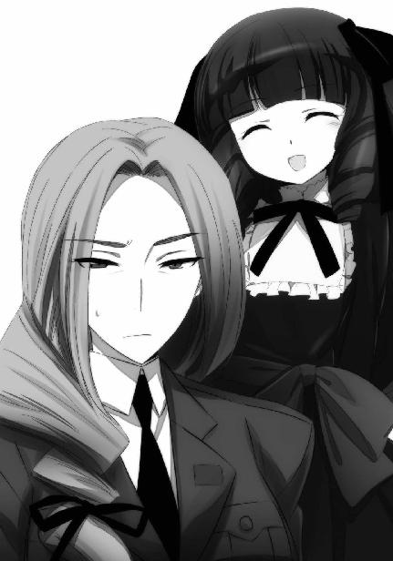
◇ ◇ ◇
青山の高架駅から地上第一層の歩道に降りた途端、達也はねっとりと絡み付く監視の目を感知した。それも一つや二つではなかった。出掛けに葉山と交わした会話で監視がついていることは予想していた。とはいえ、ここまで熱心に人員を投入してくるとは彼の予想を超えていた。
兄妹と四葉の関係を知っていて、または予測していて、四葉の介入に備え多めに戦力を投入している、ということはないだろう。
そもそも如何に七草がバックについているとはいえ、この国の諜報機関が、四葉と衝突するリスクを冒すとは思えない。
四葉と事を構えたらどうなるか......兄妹の母親と叔母がまだ少女の頃に巻き込まれたあの事件で、内情も公安も情報部もそれを思い知ったはずだ。報復の巻き添えになっただけでターゲットそのものではなかったにも関わらず、あそこまで徹底的に叩きのめされた記憶を、二十年や三十年で忘れられるものではない。ましてや四葉の力──権力というより暴力という意味の「力」──は、あの頃より更に強化されているのだ。
達也はそこで思考を打ち切った。自分たちを見る視線に、新たな目が加わったからだ。
新たな、異質な、視線。
人とは異質な、魔物の眼差しだった。
プロの諜報員に対して、高校生三人と家事ロボット一体を監視する、という任務が与えられれば、命令された者が多少気を緩めていても、やむを得ないと思われる。
キャリアを積むということには手の抜き方を覚えるという一面がある。中にはどんな時でも全力投球、仕事中は一切手を抜かない、という真面目すぎる仕事人間もいるにはいるが、手を抜くということとサボるということは、似ているけれども違う。
手抜き、と言うとどうしても印象が悪くなるが、手の抜き方とは要するにペース配分のことだ。五の力が必要な仕事に、十の力を注がない、ということなのだ。
仕事の難易度に関わらず常に十の力を注いでいるより、五の仕事には五の力しか使わないようにする方が、その場その場の出来上がりは遅くても、結局、より多くの仕事を片付けられるようになる。「慣れ」もまた一種のスキルである。
ただ、メリットばかりでなくデメリットが存在するのも、また事実。
警官に変装した中堅の諜報員にとって、尾行と監視は数多くこなした任務だ。その豊富な経験が告げるところに従い集中力を無意識にセーブしていたことが、今回は裏目に出た。
彼らに与えられた任務は、監視対象が魔法を使用したらすぐに、逮捕を装い拘束・拉致すること。
その為に渡された検出器が魔法を感知。
その、メーターの変化ではなく、アラーム音に身構えた直後。
──男の視界いっぱいに眩い光の洪水が押し寄せた。
思い掛けない先制攻撃。
まさかの敵対行為。
反撃の意思は、イルミネーションの水底に沈んだ。
「達也さん、私たちを見張っていた人たちには、全員眠ってもらいました」
「ご苦労様」
得意げに告げるほのかを労うのに、顔が引きつらないようにするのは、達也にとっても結構な苦労だった。
徐々に近づいてくる異質な気配。人外......ほぼ間違いなく、パラサイト。その相手をするのに人間の監視者は邪魔だった。
街中で勝手に魔法を使うのは、本来違法行為なのだ。こんな粘ついた視線を絡みつかせてくる相手が善良な市民や真っ当な公僕であるはずはなかったが、真っ当でないから余計に、魔法を撃ち合っている姿を見られるのは都合が悪い。達也が同行者に監視者の存在を伝えたのは、彼らの目を振り切るまで不用意に魔法を使わないよう注意する為だった。
実際、達也は言葉にして、そう続けるつもりだった。
しかしそれより、ほのかが行動を起こす方が早かった。
『もし誰かに見咎められたとしても、ほのかが何とかしてくれるだろう？』
ほのかは達也のこのセリフを、ステキに拡大解釈していた。実のところ彼女は、「達也さんが初めて私を頼ってくれた！」と、かなり舞い上がっていたのだ。
普段から割と思い込みの強い面を見せているので、達也ばかりか深雪も余り気にしていなかったのだが、今日はいつもと、一味違った。
ほのかの得意魔法は光波振動系。光を操るのが彼女の得意技だ。
達也から監視者の配置を聞き出し自分でも光を曲げたり増幅したりして位置を確認すると、ほのかはいきなり、相手のまさしく目の前に、激しく明滅する光の塊を作り出した。
洗脳用魔法、「邪眼」の光を。
それに気づいた達也は、さすがに焦った。
暗示効果が単に「眠らせる」だけだったから発動の邪魔はしなかったが、その判断が正しかったという自信はない。魔法の中でも暗示効果を持つ術式は、肉体を直接害する術式と同じレベルで違法の度合いが悪質と判断される。本物の警察に捕まれば注意程度では済まない。未成年であっても実刑──おそらく「魔法を使った勤労奉仕」という名目の懲役刑──は免れないだろう。
テロ組織「ブランシュ」のリーダーとは比べものにならないスピードと精度で、しかも同時に四人を相手にして「邪眼」を発動した技量に舌を巻きつつ、達也は早急に移動する必要を感じた。
「そいつらの仲間が駆けつけてくる前に、ここを離れよう」
やはり、ほのかを連れてきたのは失敗だったか......と今更なことを考えながら、達也は同行者にそう告げた。
◇ ◇ ◇
「困ったお嬢さんだこと......」
市街地監視システム──街路カメラをメインに、有毒ガスの検出器や違法に高出力な電波の検知機と合わせて組み込まれた、魔法の無許可使用を見つけ出す想子波レーダーのモニターを前にして、藤林は無意識にため息をついていた。
「見事な腕前じゃないか。彼女は確か、『光井ほのか』といったね？」
背後から聞こえてくる、純粋に魔法師としての技量を評価する声。
裏も透かしもないお気楽な祖父の発言に、藤林はもう一度ため息をつきたくなった。
「そうですわ、お祖父様。第一高校一年生の、光井ほのかさんです」
藤林の答えに、九島烈は「ふむふむ」とばかり軽く頷いた。
「あの系統の魔法を得意としていて『光井』というと、光のエレメンツの血統かね？」
「さあ、そこまでは。調べておきましょうか？」
「いや、わざわざ調べる必要は無いよ」
孫娘に問われて、九島老人は人の好い笑みを浮かべたまま首を横に振った。
「それにしても......力ある者は力ある者を、異能は異能を呼ぶということかな、これは。彼の周りには面白い人材が多い」
「能力面だけでなく、人間的にも面白い子が多いようですけど」
何気なく酷いことを言いながら、藤林はオペレーション用の薄い手袋に覆われた指をタッチパネル・コンソール上で忙しく滑らせている。
市街地監視システムは、システム的に見ればハードもソフトも強固で融通の利かないシステムだが、その代わり運営面で融通を利かせられる。無差別に記録をとられては都合の悪い連中が、政府部内にもあちらこちらにいるのだ。手動で記録を制限できるようにしておかなければ、これほど包括的な監視システムを張り巡らせることはできなかっただろう。
今回の吸血鬼騒動においても、魔法の無断使用に対する免責を確実なものとする為に、七草や千葉から監視システムにデータが残らないよう手配されていた。
情報管制の一環として真由美がその指揮をとっていたのだが、受験を間近にした彼女の代役を藤林が務めているのだった。
もっとも、藤林の場合は誰かにやらせるのではなく、自分でコンソールを操作しているのだが。藤林は真由美と違って、七草家当主が娘の手駒の情報隠蔽に手を貸す一方で、娘に内緒でのぞき見をやらせていることを、更にそののぞき見をして知っていたから他人に任せる気にはなれなかったのだ。
ハッキングではなく正規のオペレーターとしてシステムを動かしているので、いつもより技術的には楽だが、同時に操作性の面では不自由で窮屈だ。
だがそれも仕方のないこと。
依頼を受けた形をとりながら、実はそうなるように手を回して割り込んだ役目だ。いつものように好き勝手するわけにはいかない。
背後で祖父が見ているとなれば、尚更に。
彼女にとっても彼女を派遣した人間（イコール、彼女に代役が回ってくるよう画策した人間）にとっても、この場に九島老人が立ち会っているのは、想定外の事態だった。
何故ここにいるのかと、藤林は訊かなかった。
祖父とはいえ、それほど親しいわけではない。彼女は藤林家の人間として、九島家の先代に対し余り馴れ馴れしい態度を見せないように心掛けてきた。
それに、七草家と四葉家の間に火種が生じたとなれば、九島烈がそれを消火すべく動くことに何の不思議もない。
藤林響子の祖父は、司波達也の正体を知る数少ない人間の一人なのだ。
「類が友を呼ぶのか......それとも、呼ばれた側か。いずれにしても、平穏とは程遠い星の下に生まれたようだな、彼は」
「そうですね。振り回す側のように見えて、実は振り回される側なのかもしれません」
モニターを見詰めながら、藤林はそう相槌を打った。
もし振り返って祖父の顔を見たならば、その発言の裏にあるものを覚ったかもしれない。
しかし、そうはならなかった。
類が友を、の中には風間を始めとした独立魔装大隊の面々、その一員として彼女自身も含まれていたのだが、祖父の意図は、不幸にしてか幸いにもか、孫娘には伝わらなかった。
◇ ◇ ◇
予想どおり、青山霊園の中には入れなかった。
その必要も無かった。
戦後に造られた高い塀（死者に対して不敬な撮影等をする不心得者対策）に沿って夜の散歩と洒落込んでいた（？）三人と一体に、前から近づくはっきりとした気配があった。
『マスター、「パラサイト」三体が接近中です』
ピクシーのテレパシーに、達也は足を止めた。
機体のスピーカーを使わせるのではなくテレパシーを許可しているのは、パラサイトを呼び寄せる為だ。
テレパシーは深雪とほのかにも伝わるように命じてある。
達也が足を止めるのとほぼ同時に、少女二人も立ち止まり、達也の左右に身を寄せた。
二人とも、恐怖の色はなかったが、緊張は隠せていない。
達也自身も緊張していないわけではないので、二人の態度に不満は無かった。
打ち合わせ通り、達也は携帯端末の送信スイッチを押した。ナビゲーションシステムから取得した現在位置が、エリカと幹比古の許へ送られたはずだ。彼女たちは千葉家の手勢を引き連れてすぐにこの場へ向かって来るだろう。予定では彼らが配置につき次第、パラサイトの捕縛へ移ることになっている。
もっとも相手の出方次第では、仲間が到着するのを待っているつもりはない。
達也は左の懐から銀色の愛機を抜いた。拳銃形態・特化型ＣＡＤ「トライデント」を持つ右手を自然に垂らし、人に寄生した妖魔の到来を待つ。
達也の背後を守るように、深雪が情報端末形態のＣＡＤを構えて背中合わせに立ち、左手に巻いたブレスレット形態のＣＡＤに右手を添えたほのかが、達也の隣で前と後ろを交互に見ている。
中々頼もしい姿に、我知らず笑みが浮かんでくる。
思わぬ所で、緊張がほぐれた。
彼の緊張の源泉は、この二人の少女に危害が及ぶ懸念だ。
この二人なら大丈夫だろう、と感じたことで、それが解消された。
改めて、街灯の明かりの向こう側へ目を凝らす。
前から近づいてくる三つ人影。その足取りに迷いは無い。ピクシー本人が言っていたとおり、パラサイトの側からもピクシーの所在を探知できるのは間違いないようだ。
どちらも手を出さぬまま、更に距離が詰まる。
着ている物の区別が付く距離で、前から近寄っていた二体のパラサイトが足を止めた。
残りの一体は立ち止まったままの達也へ向けて更に歩み寄る。
その姿が更にはっきりと見えるようになるに連れて、違和感が強まって行く。
違和感の正体は、すぐに見当がついた。
目から入ってくる情報と、肌で感じる情報の喰い違い。
着ている物はごく平凡なピーコートにチノ・パンツ。体型を隠してしまうコートではなく、今度は覆面もつけていない。目も口も鼻も手も足も、平凡の範疇を外れるものではない。それなのに、人の形をしているのに、人ではないものの気配がする。これが妖気というものだろうか。
達也が相手をじっくり観察している内に、彼とパラサイトを隔てる距離の減少は双方の声が届き表情が読み取れる間合いで止まった。
「司波達也、話がしたい」
達也の方から話し掛けるつもりはなかったから、相手が口火を切ったのは予定通りだった。それが会話という、（言葉遣いは別にして）穏やかな形態だったことも、一応、予想の範囲内だった。
しかし、相手が自分を名前で呼んだのは、少し意外だった。
「俺はお前のことを何と呼べばいい？」
対して、達也はこう応えた。
パラサイトに憑依された男は、開きかけた口からセリフの続きを口にすることができなかった。この程度のことに絶句するとは、随分と人間らしいことだ、と達也は感じた。人格を乗っ取られても、感情のベースは変わらないらしい。
あるいは、乗っ取る、という理解が間違っているのか。ピクシーから聞いたことより推察して、パラサイトの本体は原始的な意識しか持っていない。感情も同程度しか発達していないと考えられる。パラサイトに人間を乗っ取るほどの個我は無く、同化した人間をベースに新しい個性を形成すると考えた方が良いのかもしれない。達也はそう思い直した。
「マルテ」
そんなことを考えていた達也に、パラサイトは短く答えを返した。何と呼べばいい、という彼の問い掛けに対する名乗り。それが「火星」を意味するスペイン語またはイタリア語だと達也は断片的に知っていた。
なる程、日本語の発音は流暢だが顔立ちは明らかに白人種のものだ。国外経験の無い達也は知識としてしか知らないが、目の前のこの男はヒスパニック系の特徴を備えている。本名であれコードネームであれ、いや、十中八九コードネームだろうが、「マルテ」と名乗ってもおかしくはなかった。
もっとも達也は、スターズに惑星級、衛星級という階級グループがあるのを知らない。彼はスターズのコードが文字どおり「恒星」のみだと思っている。だから「火星」という名前がスターズの惑星級「マーズ」のコードを意識したものであり、一度は惑星級の候補として訓練を受けながら結局スターズの一員になれなかった宿主の嫉妬、未練、羨望に由来するものだとまでは分からなかった。
「では、ミスター・マルテ。いや、セニョール・マルテかな？ 一体、何の用だ」
だからこの問い掛けに深い意味はなかった。「火星」というコードは達也にとって単なるラベル以上のものではなかった。
彼のどうでも良さげな声音に相手がムッとした表情を垣間見せたのも、話の腰を折られて苛立ったからだろうと考えたし、
「ミスターの方だよ、ボーイ」
マルテと名乗ったパラサイトが「坊主」という小馬鹿にするような言い方で挑発してきても、随分短気だな、程度にしか達也は思わなかった。
「それで、何の用だ」
時間稼ぎに挑発合戦を繰り広げても達也としては構わなかったが、同行者が徐々に落ち着きを無くして来ているのを見て、話を進めることにする。
「......司波達也。我々はこれ以上、君たちに敵対する意図は無い」
どうやら「ミスター・マルテ」にとっては、「ボーイ」よりもフルネーム呼び捨ての方が礼儀に適っているようだ。
達也には（最初から礼儀など期待していないという意味で）どうでも良いことだったが。
「抽象的すぎて言っていることが理解できないな。我々とは誰のことだ？ 君たちとは誰のことで、敵対とは何を指している？」
そんなことより、相手が何を言おうとしているのか、そちらの方が遥かに重要だった。
「──我々デーモンは、君たち日本の魔法師に対して、今後、敵対行動をとるつもりはない」
（デーモンと来たか......）
デビルでもゴーストでもスペクターでもなく、デーモン。それが彼らの自己認識らしい。ピクシーからこの単語は聞かなかったから、人間に対して自分たちをどう呼ぶか、この交渉に先立って相談でもしていたのだろう。
達也が苦笑を漏らしかけたのは、彼の分解魔法を「悪魔の右手」と呼ぶ者がいることを知っているからだ。これは彼が分解魔法を発動する際、対象に右手のＣＡＤを向けることが多いことからつけられたものだが、だからといって親近感を覚えたりはしなかった。
「それで？ 他にも用があるんじゃないか？」
マルテと名乗ったパラサイトの短いセリフに対し、達也には言いたいことがあった。
だがひとまず、相手に言わせるだけ言わせてみることにした。
「君たちに敵対しないことを約束する代わりに、そのロボットを我々に引き渡してもらいたい」
ピクシーがビクリと身体を震わせた、ように見えたのは、達也の錯覚だろう。中に何が入っているとしても、ロボットはそういう生理的反応と無縁のはずだ。
「......あのな、ミスター・マルテ。もう少し、丁寧に話してくれないか。引き渡せと言われても、何の為に引き渡しを求めるのか、それを説明してもらわなければ答えようがない」
「説明など必要ないと思うが？ 君たちにそのロボットをかばう理由など、それこそ無いはずだ」
「理由の有無は俺たちが決める」
達也の回答にマルテが顔を顰めた。不快げな表情も、一回り以上外見年齢が違うことを考えれば、不思議の無い反応と言えるだろう。
「......そのロボットの中に囚われている同胞を解き放つ為だ」
その答えを聞いて、達也はわざとらしく首を捻った。
「ロボットが宿主ではいけないのか？」
マルテの表情がますます厳しいものになる。
「君たちがどう思っているかは知らないが、我々は生物だ。そして我々相互のつながりは君たち人間よりずっと強い。生物でありながら生命のない器に囚われている同胞を、我々が取り戻したいと考えるのは、君にとって理解できないことなのか？」
だが声や口調はまだまだ抑制が効いていた。
「いや、理解している」
達也の答えもそれに合わせてあっさりしたものだった。ただしそれは、マルテの答えが既にピクシーから入手していた情報と同じで、達也の興味を引くものではないからだった。しかしこれは逆に言えば、ピクシーの発言の裏が取れたということだ。問答はこれくらいで良いか、と考えながら達也は仕掛けるタイミングを計る為の会話を続けた。
「しかし、どうやって」
「機体を破壊する。現在の宿主を失えば、我々は新たな宿主に移動することができる」
「なる程ね......ということらしいぞ、ピクシー。お前はそこから解放されることを望むか？」
『嫌です、マスター！』
達也も本気で訊ねたわけではない。無生物に宿っていても自己保存の欲求がある以上、破壊されることを是とするはずがなかった。３Ｈの基本プログラムにも、ロボット三原則──人間に危害を加えることの禁止、人間に対する服従、そしてこれらに反しない範囲の自己防衛──は可能な範囲で適用されている。
ただ、念話で示された拒絶の意思は、予想したよりずっと強いものだった。
『私は、私です。私の望みは、マスターの物であること。それが私です』
原始的な自己防衛本能に止まらない、自我の主張がそこにはあった。
『私が元々どのような存在であり、私の核を成すこの願いが何処から得られたものかなんて、今の私にはどうでもいいことです。私は、私が私でなくなるのは、嫌です』
ピクシーのテレパシーを、達也だけでなく、三体のパラサイトだけでなく、ほのかも、深雪も、聞いた。
ほのかが唇をキュッと引き締めた。
深雪の唇が笑みにほころんだ。
「だ、そうですよ、お兄様」
「そうだな」
達也の唇にも、微笑が浮かんでいた。
思い掛けない熱弁に、不思議と苦笑いは湧いてこなかった。
ロボットに宿る魔性から向けられたその想いに、忌避は、何故か覚えなかった。
「さて、こちらの回答はもう、ある程度予想できると思うが......ハッキリと答えてやる前に、二、三、訊きたいことがある」
「思ったよりも愚かだったようだな、司波達也。失望したよ......。いいとも、訊きたいことというのを言ってみろ」
「お前、さっき魔法師に対して敵対行動を取るつもりは無い、と言ったな？ 何故人間に対してではなく魔法師に対してと言ったんだ？」
答えは、無かった。
いや、嘲るように歪められた唇が、答えだった。
「要求が受け容れられれば、お前たちデーモンは魔法師に敵対しない。では魔法師でない人間に対してはどうなんだ？」
「............」
「ピクシーの機体を破壊した後、今度は何を宿主にするつもりだった？ いや、答える必要は無い。聞かなくても分かっている」
「......回らなくても良い猿知恵ばかりを持ち合わせている」
鋼の眼差しを宿した達也と、その背後で少女が身構えるのを見て、マルテはわざとらしく肩を竦めた。
「理解できんな。お前たちとは敵対しないと言っているのに、何故それで満足しようとしない？ 我々デーモンと人間が相容れないものであるように、お前たち魔法師と人間もまた異質なものではないか」
「ほぉ？」
突如、演説を始めたパラサイトに対して、達也は白々しい合いの手を入れた。
しかし、演説と言ってもアジ演説の類だ。
口調の白々しさを気にするような殊勝な心掛けなど、伴っているはずもなかった。
「私の宿主も魔法師だった」
そう言って、大袈裟な手振りで自分の胸に掌を当てる。
もしかしてこの男、パラサイトに取り憑かれる前は煽動工作が専門だったのだろうか。であるなら、「マルテ（火星）」というコードネームはミスマッチだ。むしろ「メルクリオ（水星）」とかの方が相応しいように思われる。
達也の白けた眼差しをものともせず、パラサイトの弁舌はますます熱を帯びた。
「だから分かるぞ。魔法師が、人間に、どのような扱いを受けているのか」
「どういう扱いを受けていると言うんだ？」
「人間にとって魔法師は、道具であり実験動物だ。魔法師の意思など、人間は顧みない。魔法という力を利用する為の道具として扱い、魔法という力をより多く引き出す為の実験材料としか見ていない」
何処かで聞いたような演説内容でしかなかったが、達也はこのパラサイトに最後まで喋らせてみることにした。
「自分たちを利用することしか考えていない人間に、何故義理立てしようとする？ 君たちに、そんな義理は無いはずだ。君たちには、君たちの意思があり希望がある。そうだろう？」
演説を終えたマルテの顔を、達也はジッと見詰めた。
マルテは如何にも誠実そうな顔で達也を見返している。
達也はフウッ、とため息をついた。
「別に、利用されているのは魔法師だけとは限らないと思うがね」
気色ばむパラサイトの宿主に、言い含めるような口調で言葉を返す。
「何というか......マニュアル通りのセリフにしか聞こえないな」
そして、唇に嘲笑を浮かべる。
「人のことを愚か者扱いする割には......バカだな、お前」
男の目に怒気が揺らめく。
それは、パラサイトの感情だったのか、それとも、宿主の感情だったのか。
マルテが何事か言い掛けたセリフに被せて、達也は言葉を続けた。
「俺たち魔法師に危害を加えない。実に結構なことだ。だがな、お前たちは既に、俺の仲間に危害を加えている。俺の友人の、魔法師に対してだ。その事について一言の詫びも無しに、今後危害を加えないというセリフを信じられる理由が何処にある？ そんなものは、魔法師の人権を尊重するというお題目と何も変わらんよ。ましてやそんな空言と交換にこちらから何かをせしめようなんて、厚かましいにも程があるぞ」
長いセリフを一旦切って、達也はつまらなさそうに、再び、嗤った。
「そういえば、さっきの答えがまだだったな。答えは、ノーだ」
「小僧......」
「後悔するな、なんて決まり文句は吐くなよ？ 相手をしているのが恥ずかしくなる」
マルテの目に殺意が光った。
彼が右手を振ると、その袖口からナイフが現れる。柄にコードがつながっているところから見てただの小型ナイフではなく、何かのギミックが仕込んであるようだ。
他のパラサイトも、同じようにナイフを手に取った。
達也はそれを見て、冷ややかに目を細めた。
「実に分かり易いな。では、俺の方も分かり易く言ってやろうか」
達也は、外連味たっぷりに、ニヤリと笑った。
「武器を捨てて、大人しく投降しろ。そうすれば、痛い目を見なくて済む。幸せな実験動物としての待遇を保証するぞ」
「この......人間の、犬がっ！」
取り憑いた人間を支配したパラサイトは、宿主となった人間の強い「望み」に支配される。
支配し、支配される、メビウスのループ。
おそらく、取り憑かれる前の「魔法師」マルテは、自分を支配する人間に対し、恨みと憎しみを秘めていたのだろう。
そう思わせる、怒りに満ちた叫びだった。
起動式の展開もなく、魔法発動の兆候が現れる。やはりパラサイトは、魔法を使うのに起動式や呪文の類を必要としないようだ。
もっともそれは、達也の方も似たようなもの。パラサイトの魔法が発動するより早く、達也の「分解」が事象を改変する為の情報体を破壊する。
全ての魔法師の天敵たる異能、情報体の直接分解。
その魔法、「術式解散」は人外の術に対しても有効だった。
音も光もない、静かな攻防。
だが魔法が発動することを前提とした攻撃態勢をとっていたマルテは、魔法をキャンセルされるという思い掛けない事態に立ち竦んでしまう。
達也がその隙を見逃すはずもなかった。
四肢の付け根を撃ち抜かれ、マルテが路上にひっくり返る。
パラサイトが宿っていても、人体の基本構造に逆らうことはできない。痛みを無視することはできても、腱を断ち切られては手足を動かせない。
達也は何も持っていない左手を、路上のパラサイトへ向けた。
肉体を破壊すれば、別の宿主を求めて飛び去って行く。
深雪の魔法で凍らせても、自爆して逃げ去ってしまう。
起動式を必要としないパラサイトは、身体を動かせなくてもおそらく魔法を使える。
パラサイトを無力化する為には、精神情報体に直接ダメージを与える必要がある。
掌中に想子の塊を握り締める。
これで、効果があるという確信はない。
だが、達也に迷いは無かった。これでダメなら、古式魔法の封印術式を会得した術者を連れて来るしかないのだ。
迷いは今、有害無益。
ただ「拒絶」の念を込めて、達也は左手をパラサイトへ向けて突き出した。
硬く凝縮された想子の砲弾が、パラサイトの胸を撃った。
脳髄ではなく、心臓。
これはピクシーから得た情報を元に、八雲と相談して決めたことだ。彼らは、肉体的な器官に憑依しているのではなく、人の精神に憑依している。だから身体の何処に当たっても、本質的な違いはない。ならば全身と最もつながりの深い場所、細胞に活動する為の燃料を送っている心臓を狙うべきだと。
効果は予想以上に、劇的なものだった。
海から引き離されたばかりの海老のように、パラサイトの身体が激しく屈伸する。
のたうち回る。
パラサイトに侵された身体が、拒絶している。
パラサイトに撃ち込まれた達也の思念が、パラサイトを拒絶し、パラサイトに拒絶されているのだ。
「お兄様！」
しかし残念ながら、その姿をじっくりと観察している余裕はなかった。
切羽詰まった、深雪の叫び。
だが、達也は深雪から「眼」を離していない。
深雪の身に危機が迫っているならば、声を掛けられるまでもなく察知する。
果たして振り向いた先では、
四肢そのものではなく服を凍らせることで動きを封じ、相手の魔法を領域干渉で抑え込んでいる深雪の向こう側で、
ナイフの刃を有線で操る敵の武装デバイスに翻弄されるほのかと、彼女の盾となって攻撃を受けるピクシーの姿があった。
「ほのか！」
「大丈夫です！」
達也の助っ人を拒むように、ほのかが強い口調で応える。
ほのかの瞳に、強い光が宿る。
足手まといには、決してならないと、その強い想いが光となって宿る。
ほのかの瞳と、
彼女の髪飾りに。
想子波の急激な高まりを達也は感じた。
それは、思念エネルギーの増大を表す徴。
魔法ではない。
もっと直接的な、思念の干渉。
直後、
強力なサイキックが、ピクシーから放たれた。
緻密な制御の為されていない、荒削りである代わりに猛々しい事象改変の力に、深雪が構築していた干渉力の力場が揺らいだ。
現存する魔法師の中でも、おそらくは有数の強さを持つ深雪の干渉力場が。
達也は新たに作り出した想子弾を、妹が相手をしていたパラサイトへ撃ち込んだ。
再現される、拒絶反応のダンス。
しかし今、達也と、そして深雪の関心は、そこには無かった。
単純な運動状態改変の事象干渉力──所謂「サイコキネシス」が放出された、その場所では。
いきなり強力な想子波に曝されて目を回しているほのかと、彼女を守るように立つピクシーの姿。
彼女たちと相対していたパラサイトは、視界の外へ吹き飛ばされていた。
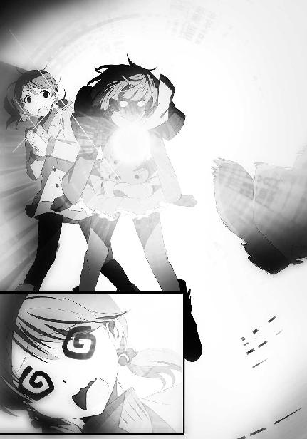
◇ ◇ ◇
モニター画面の中で展開された光景に言葉を失っていた藤林は、背後から聞こえてきた楽しそうな含み笑いに我を取り戻した。
「......いや、思いがけず、面白いものを見せてもらった」
椅子を回して不謹慎を咎める視線を向けてくる孫娘に向けて、九島老人は一つ咳払いをした後、言い訳するような口調でそう言った。
「最後のサイコキネシスは、３Ｈから放たれたものだろう？ サイキックを使うロボットが開発されたという話は、聞いたことがない」
藤林が座っているのは、想子波センサーのモニターコンソールだ。目の前に表示されている測定結果は、誤魔化しようがない。
「......私も聞いたことがありません。今の技術では、不可能だと思います」
「そうだな。現行の技術では、魔法であれサイキックであれ、サイキカルな力を機械のみで再現することは不可能だ。つまりあの３Ｈには、機械以外の要素が宿っているということになる」
「............」
小さく、吐息とも呻き声とも取れる音が、藤林の唇から漏れた。
「ロボットに妖魔が宿ったか」
「............」
「パラサイトのことは報告を受けているが、この事は聞いていなかったな」
「我々も報告を受けているわけではありません。私的な会話で耳にしただけです」
「いやいや」
硬い表情で答える孫娘を、宥めるように九島老人は手を振った。
「響子、私は責めているんじゃないよ。最早そういう立場でもないし。ただ、興味深いと思ってね」
藤林が装っていた、ポーカーフェイスが崩れた。
動揺を浮かべて見上げる、その視線の先には。
祖父の顔に、久しく見ることのなかった、野心の影が垣間見えていた。
「人型ロボットにこういう使い道があったとはな......」
◇ ◇ ◇
いつもの藤林であれば、気がついたかもしれない。
だが今の彼女はハッカーとしてではなくオペレーターとして、システムに定められたとおりの操作手順を守っている。この条件下では「電子の魔女」といえどもシステムが想定していない手段による傍観者に気づくことはできなかった。
ちょうどその場面へ目を向けていた傍観者、四葉真夜は、目を覆うシェード型のモニター装置を外し、背もたれに体重を掛けて目を閉じた。
時間にして、およそ十秒。
彼女はモニターをデスクの中に収納すると、脇に置かれていたハンドベルを手に取り、振った。澄んだ音が、一人きりの静かな室内に鳴り響く。
「お呼びでしょうか、奥様」
扉を開けて、真夜の執事であり腹心である葉山老人が彼女の前へ歩み寄る。
「青木さんを呼んで頂戴」
「畏まりました」
丁寧に一礼し、葉山執事は再び部屋の外へ出て行く。
今度は少し、待つ時間があった。
足音こそしないが、慌ただしい気配が近づき、扉を叩く音がした。
「入りなさい」
「失礼します」
葉山の落ち着いた声が返ってくる。
気忙しい気配は、その隣から発せられている。
入って来たのは、葉山と、彼よりもかなり年下の（それでも真夜よりは年上の）壮年の執事だった。
「遅い時間にごめんなさいね、青木さん」
「滅相もございません。奥様のお呼びとあらばこの青木、地球の裏側からでもすぐに参上致します」
青木は瞬間移動の術を会得していないので──そもそも瞬間移動は実現されていない──「すぐに」というのは物理的に不可能なのだが、彼が大袈裟な物言いをするのはいつものことなので、真夜も葉山も気にしなかった。
「早速ですけど、入手して欲しい物があります」
「はい」
青木は四葉の資産管理を任せられている金庫番。彼に声が掛かるということは、単なる買い物ではないということだ。四葉にとっても安くない（世間にとっては大層高価な）物か、購入自体が難しい稀少品や非売品の類か。
だがそれでも、青木の顔に緊張の色はなかった。そういうリクエストに応えてこそ自分の存在意義があると彼は思っているし、性格面で問題を抱えているとはいえ、実力の方は合法的な面でも非合法の面でも確かに一流と言えるだけのものを備えていた。
「魔法大学付属第一高校に貸し出されている３Ｈ─Ｐ94を至急買い取って頂戴。金額も手段も問いません」
真夜が「金額を問わない」と言うのは珍しくないが、「手段を問わない」と明言するのは珍しいことだった。
「もし入手が困難な場合は、現在の持ち主から所有権が移転されないように処置しなさい。特に、十師族の他家の手に渡ることが無いように。こちらの工作も費用を気にする必要はありません」
そして失敗した場合の対処法まで細かく条件をつけるのは、少なくとも青木にとって初めてのことだった。
「畏まりましてございます」
青木は一瞬、動揺を見せたが、それを声に反映させず恭しく一礼した。
青木が急ぎ足で退出した後、側らに控えたままの葉山に、真夜は探るような目を向けた。
「......何か言いたいことがあるのではなくて？」
だが結局、葉山のポーカーフェイスを突破できず、真夜は自分からそう促した。
「まことに僭越ながら......」
水を向けられ、前置きの言葉と共に腰を折る。決まり文句と言っても良いセリフだったが、その微妙な口調から真夜はそれが余り愉快な話題でないと覚った。
「フリズスキャルヴのご利用は、少々控えられた方がよろしいのではないでしょうか」
だからといって、今更発言──諫言を止めさせることはできなかった。予想どおりの耳に痛い忠言に、真夜は眉を顰めながらも、それに対して怒りを見せることもできなかった。
アレの利用がメリットばかりでないということは、オペレーターである真夜が誰よりも──彼女と同じアクセス権を持った、残る六人のオペレーターを例外として──弁えていることだったからだ。
「──アレは純然たる科学技術の産物ですよ。まだブラックボックスの部分が少なくない魔法より、よほど副作用のリスクは小さいはずです」
「真夜様、私めは、そのようなことを申し上げているのではありません」
屁理屈でしかないと自分でも分かっている反論をバッサリと切り捨てられて、真夜はバツの悪そうな表情を浮かべた。
「それにブラックボックスというならば、フリズスキャルヴは本体の設置場所すら分かっておりません。今まで噓をつかなかったからといって、これからもそうだという保証は何処にもない、と存じます」
葉山の主張には確かに道理がある。
それに彼が指摘しなかった危険性も、真夜には分かっていた。
「そうですね......葉山さん、貴方の言うとおりでしょう。最近の私は、アレの情報収集能力に頼り過ぎていたようです」
「確かに捨ててしまうには惜しい性能です。私めが愚考いたしますに、達也殿であればフリズスキャルヴの本体が何処にあるのか、突き止められるのではないでしょうか。本体に直接アクセスできれば、フリズスキャルヴを独占的に支配することも、あるいは可能かと」
葉山のこの発言は、真夜にとって完全に予想外だった。意表をつかれ、短くない時間考え込んだ後、真夜は首を横に振った。
「まだ早いわ」
何が早いのか、解釈の余地を残した回答。
葉山は一礼して、真夜を残し部屋を後にした。
◇ ◇ ◇
「しかしまずいな......」
思わず口をついてでた達也の独白に、目を回して──めまいを起こして倒れたほのかの介抱をしている深雪が振り向いた。
「そう言えば......そうですね。お兄様、一旦この場を離れませんか？」
余りにも自然に応えが返ってきたので、達也はそのまま頷いてしまいそうになった。
（......いや、それは別に構わないんだが）
この打てば響く理解力を当たり前のものと思っていると、いつか大きなしっぺ返しを喰らいそうな気がする。だが、まあ、今心配すべきは別のことだ。
先程の大規模なサイキック。あの反応は、この青山・赤坂一帯で観測されたに違いない。もうすぐ望まざる客人が種々押しかけて来るだろう。
今し方までのたうち回っていたパラサイトは、力尽きたのか大人しくなっている。一応後ろ手に縛り上げているが、どの程度意味があるのか、達也にも分からない。一応、器──宿主の肉体が破壊されない限りそこから抜け出すことはできないようだが、いざとなれば相手には「自爆」という最終手段があるのだ。
（そうだな......古式に何か適当な術式があればいいんだが）
「達也くん！」
「ゴメン、遅くなった！」
噂をすれば、ではなく、ちょうど顔を思い浮かべていたところに、本人の声が聞こえた。ようやくお出ましのようだ。
しかし「遅い」と責めるつもりはなかった。彼らは彼らで、パラサイトを探し回っていたのだから。サボっていたわけではないから、文句などつけられない。
そう......荒事が全部終わった後にのこのこ顔を出しても、そんなことで文句をつけたりするのは筋違いだ、と達也は心の中で呟いていた。
「えっと......達也？ 何だか、顔が怖いよ？」
「俺は強面だからな」
「いや、強面っていうのは微妙にそういう意味じゃないというか......意識してやってるんなら余計怖いんだけど」
何故か（？）ビクビクしている幹比古を一瞥して、達也は予定より一名多い、その当人に声を掛けた。
「レオ、お前も来たんだな」
「ああ。リハビリがてら、付き合わせてもらってるぜ」
「無理はするなよ。で、エリカ」
「ん？ なに？」
厳しい目つきで捕虜を見ているエリカに話し掛けると、意外に平静な声が返ってきた。
「なるべく早くこの場から離れなければならないんだが、こいつら三人を運ぶ手段は用意しているのか？」
いきなり心臓に杭を打ち込むとかの過激な真似をしないことにホッとしながら、達也は気になっていたことを訊ねた。軽く辺りを見回しても三人が使った二台の電動バイクがあるだけで車は見当たらない。──なお誰と誰のタンデムだったか、それは達也も見ていなかった。
「えっ、何で？」
達也の言葉に振り返ったエリカは、本気で不思議そうな顔をしていた。
「何でって、エリカ」
このセリフは、達也ではない。幹比古が焦りを隠せぬ顔で口を挿んだのだ。
「さっきの念波を感じなかったの？ あれだけ派手に魔力を撒き散らしたんだ。寄って来るのは普通の警察だけじゃないと思うよ」
「そんなの最初から覚悟の上よ、と言いたいところだけど......達也くんたちに迷惑掛けちゃまずいか」
少し窺い見るような目つきになった以外は、いつものエリカだった。少なくとも、レオや幹比古が気づかない程度には。
「えっと、ミキのトコの倉に運ぶけど、いいよね？」
エリカは「倉」と言っているが、もちろん、文字通りの倉庫ではあるまい。千葉家の施設ではなく吉田家の管理下にわざわざ運び入れるということは、パラサイトの魔法を封じて拘束する適当な術法があるということだろう。
「良いのか、幹比古？」
「えっ？ もちろんだよ。そもそもこれは、本来僕たちの仕事だ」
僕たち、というのは古式の術者のことだろう。魔を封じるのは陰陽師の仕事、と言いたいのかもしれない（吉田家は陰陽道ではなく神道系だが）。
「じゃあここは、あたしとミキと、ついでにレオで引き受けた。達也くんたちは先に帰った方が良いよ」
「何故だ？ 積み込む時間くらい、待っているが」
俺はついでかよっ、と憤るレオを放置して、達也が訝しげに問い掛ける。
答えは、大層歯切れの悪いものだった。
「達也、その、ね......」
達也が、言い難そうにしている幹比古の視線をたどってみると。
その先には、スカートが所々裂けているピクシーと、ハーフコートに不自然なスリットが複数追加されているほのかの姿。
「......車を呼ぶか」
「その方が良いと思う」
達也はエリカたちにこの場を任せることにした。
◇ ◇ ◇
達也たち兄妹の自宅は自動管制区域内だが、ほのかのマンションはギリギリでオートドライブの管制区域から外れている。情報端末で呼び寄せた自動運転のコミューターでは、ほのかが帰れない。四人は結局、駅からキャビネットに乗り換えることにした。
相当奇抜なファッションでも、大して注目されないのは都会のありがたいところだ。
思ったより人目を集めることなく（深雪が同行している時点で、全く注目されないということはあり得ない）、達也たちは四人乗りのキャビネットに乗り込んだ。
「あの、達也さん......？」
乗り込む動作が自然だった所為で、ほのかが疑問を覚えたのはキャビネットが走り出した後だった。方向が同じであっても、キャビネットは途中下車できないのだが......。
「送っていくよ」
そうして欲しい、と思いつつ口には出せなかった言葉を達也から聞いて、ほのかはしきりに遠慮するセリフを口にしつつ、嬉しそうな表情を隠せずにいた。
四人用のキャビネットは、座席を対面レイアウトに変更することができる。
達也の隣には深雪、向かいにはほのか。
達也は斜向かいのピクシー（何故か荷物ではなく、乗客扱いになっている）に目を遣り、それからほのかへ目を向ける、をさっきから無言で繰り返している。
「......お兄様、そろそろ何か声を掛けてあげませんと、ほのかがもちませんよ？」
達也が目を向けるたびに緊張の度合いを高めていくほのかを見かねて、深雪が横からそっと囁いた。
「ああ、悪い」
達也には自覚がなかったようだ。妹にたしなめられて、ハッとした顔で謝罪を口にする。
「三人とも、今夜はご苦労様」
労いの言葉は単なる前置きなのだろう。ピクシーまで一人に数えてしまっているのがその証拠だ。もしかしたらピクシーも一人前の働きをしたと認めてのものかもしれないが、人間とロボットを区別していない点でよく考えての発言でないのは明らかだった。
「それで、ええと、ほのか。何と言えばいいのか......脱力感は無い？」
次の言葉は説明ではなく質問だった。唐突な問い掛けに戸惑いながらも、ほのかは首を横に振った。
「そうか......ピクシー、お前はどうだ。疲労......という表現は適切じゃないな。お前の本体を構成する想子や霊子の消耗は感じられないか？」
『消耗は自然回復が可能な範囲です、マスター』
「そうか......」
「お兄様、何をご懸念されていらっしゃるのですか？」
「懸念、と言うほどではないが......」
妹に首を振って見せた後、達也は再度、ほのかへ目を向けた。
「さっき、ピクシーが強力な念動力を放った時のことなんだが......ほのか、何が起こったか、自覚はある？」
「......いいえ、何のことでしょう？」
ほのかは瞳に不安をたたえて問い返した。
確かに、不安を覚えても仕方のない意味ありげな質問だ。
もっともそれは、もちろんのこと、殊更不安を煽る意図のものではなかった。
「冷静に聞いて欲しいんだが」
わざわざこんな前置きをする程、達也自身、困惑していた。
「ピクシーが念動を放つ直前、ほのかからピクシーに想子が供給されていた」
「えっ？」
達也の言葉に、ほのかは目を丸めて絶句した。
「......ほのかがピクシーに力を供給したということですか？」
「いや、そういう感じじゃなかったな」
深雪の問いに答える達也の声は、珍しく、自信無さそうなものだった。
「起動式を展開する際にＣＡＤへ想子を注入するプロセスに似ていた。呼び水......みたいなものかな。あるいは、共振か」
ほのかが怯えを含んだ視線をピクシーへ向けた。
ピクシーに──３Ｈ─Ｐ94に取り憑いたパラサイトに、それを気にした様子はない。と言っても表情が変わらないから本当のところは分からないが。
魔法師と機械が想子を遣り取りする。
その現象自体は、達也にとって、いや、現代魔法の術者にとってお馴染みのものだ。だがそれは魔法工学によって「そういう風に」作られたシステムを組み込まれている機械との間に起こる現象であり、３Ｈにそういう機能は存在しない。
機械は人間に与えられた以上の能力を持たない。自分で新たな機能を会得することはない。
故にこの現象は、ピクシーの「機体」との間に生じたものではなく、ピクシーの「本体」との間に生じたものとしか考えられない。
ほのかが不安を覚え、怯えに捕らわれたのも無理はない。
「美月はああ言っていたが......ほのかとピクシーの間には、やはりある種のパスが通じているようだ。そしてどうやら」
達也が急に、口ごもった。
何やら苦々しげに、言い難そうにしている兄へ、深雪が訝しげな目を向けた。
無言の問い掛けを肌で感じて、達也は観念した顔で、言葉を続けた。
「......どうやら、その媒体となっているのが、ほのかの髪飾りみたいなんだ」
「えっ？」
さっきから驚いたり怯えたりで忙しいほのかだが、今回の驚きぶりは際だっていた。
驚いているのは彼女だけではなかった。
深雪もマジマジと、ほのかの髪を縛るゴムを凝視していた。
「正確には、その水晶だな。一体、どういう理屈でそんな事になっているのかは分からないが......」
ほのかの両手が髪飾りの水晶に触れる。無意識のもので、特に何らかの結果を意図したものではなかった。
しかしその直後、達也の推理を裏付けるような現象が生じた。
ピクシーの身体、その胸の中央から、霊的な光が放たれたのだ。
強い光ではない。視覚的に言えばランタン程度の明るさだ。
しかしその関連を疑うには、同期性が強すぎた。
達也と深雪の視線が、髪飾りに集中する。
ほのかは水晶の飾り玉を両手で包み込んだ。
まるで、奪われるのを怖れるように。
「原理的なことはひとまず置いといて......コントロール法を見つけなきゃな」
警戒する小動物を宥める口調で呟く達也。
警戒感を意外感に替えて、ほのかが見詰め返す。
達也は、ほのかからピクシーへ、視線を移した。
「とりあえず、ピクシーを買い取っておいて正解だったか」
◇ ◇ ◇
この夜、活動していたのは達也たち高校生グループだけではない。達也は真由美にも克人にも声を掛けていなかったので七草・十文字グループは動いていないが、千葉家のグループはエリカの意向を受けてそれなりの人数を出していた。それなのにエリカが自分たちだけで駆けつけたのは、今晩動員しているメンバーの中で彼らが最も強かったからに他ならない。
エリカ、レオ、幹比古。一人を除いて成績はイマイチだが、実戦闘能力はずば抜けている。高校生という枠組みの中だけでなく大人たちに混じっても、兵器の操作技術を度外視すれば、個人としての実力は上位に位置づけられる。
もっとも自分たちだけで動いた結果、拘束したパラサイトを見張りつつ護送車を待つという状況に置かれている訳だが......護送の車より先に、厄介な相手に見つかっていた。
「おい、そこで何をしている！」
街灯の向こうに（モーター付き）自転車を止めて大声で詰問しながら駆け寄って来たのは、警察の制服を着た二人の若い男だった。
二人を見て、幹比古は顔に狼狽を浮かべ、レオは不貞不貞しい嗤いを唇に刻み、エリカは無言で挑戦的な視線を向けた。
「何だこれは!? お前たち、高校生だろう。一体何をしていた!?」
後ろ手に縛られて路上に横たわる二人の男を見て、背の高い方が声を尖らせる。確かに夜の路上で市民が縛られて転がっているのを見れば、警官としては当然の反応かもしれない。
「いえ、これは、そのですね」
職質を受けた、と思っている幹比古が言い訳にならない言い訳を必死に捻り出そうとする。
「アンタたちこそ、何者？」
だが、それを押しのけて、エリカが高圧的に反問した。
「何だと!?」
「おい、エリカ！」
思いも寄らない反抗的な態度に、男たちは怒気を強め、幹比古は「信じられない」という目を向けた。
「幹比古」
その肩を摑んで、グッと引き寄せる手があった。
幹比古が振り返ると、レオが面白くて仕方がないという笑みを浮かべていた。
「聞こえなかった？ アンタたちは何、って訊いたのよ」
警帽の下から送られてくる威嚇の視線を、エリカは鼻先で笑い飛ばした。
「知らない？ 現在この区画に警官はいないの。そういう命令が出ているからね。ウチのバカ兄貴も、こういう所で抜かったりしない」
エリカの言葉は何の根拠も伴っていない。
本物の警官であれば、鼻先で笑い飛ばして然るべきセリフだった。
それなのに、彼女の前に立つ若者は、動揺を見せてしまった。
「何をバカなことを」
動揺は、ほんの一瞬で収まった。だがエリカはそれを見逃しはしなかったし、何の反応も返ってこなくても、一向に構わなかったのだ。
彼女が言っていることは、ハッタリではないのだから。
「変装するなら私服刑事にするんだったね。そしたら話くらい聞いてあげたのに」
聞いてあげるだけだけどね、と嘯くエリカ。
彼女を怒鳴りつけようとした長身の若者を、同僚が押し止めた。入れ替わりに、前へ出る。比較すれば背は低いが体格はこちらの方がガッチリしている。威圧感も一回り上だった。
「訳の分からない言い逃れをしようとしても無駄だぞ。暴行の現行犯だ。一緒に来てもらおう」
「へぇ。あくまでシラを切るんだ」
もっとも、エリカが畏れ入るほどではなかった。彼女は変わらず白けた目つきで、挑戦的な眼差しを返している。
「でもおあいにく様。この二人は婦女暴行未遂の現場をあたしたちが取り押さえたの。私人逮捕ってヤツね。で、本物の警察官が来るのを待ってるとこって訳。偽物さんが出る幕じゃないのよ。お・分・か・り？」
スラスラともっともらしい話をでっち上げる幼馴染みを、幹比古は感心しながら見ていた。噓だと分かっていても、騙されてしまいそうだ。──その所為で忍び寄る気配に気づくのが、一拍遅れた。
「ミキ！」「幹比古！」
音もなく──誇張表現ではなく、本当に全く音がしなかった──黒い影が頭上から襲い掛かる。霊園を囲む塀を跳び越えて襲って来たのだ、と認識した時には、迎撃が間に合わないタイミングだった。
幹比古は肩に衝撃を感じた。
突き飛ばされた、と気づいたのは、無意識に前転受け身をとった後だった。
頭上に掲げたレオの腕が、振り下ろされた棍棒を受け止めている。音だけで威力が推し量れる打撃だったが、常人なら骨折間違い無しのその一撃を、レオは平然と受け止めている。のみならず、着地したばかりの相手に対して風を切る勢いの鉄拳を叩き込もうとしていた。
「チッ！」
しかしその拳は、襲撃者の身体を浅く捉えただけで引き戻された。
街灯の弱々しい光の中で、閃く電光を幹比古は見た。
その男は、接触する相手に高圧電流を流し込むスーツを身に纏っていたのだ。
手首を押さえて一歩後退するレオ。
棍棒を手にした男が追撃の構えを見せる。
「レオ、離れて！」
幹比古は左腕を勢い良く振った。袖口から飛び出して来た扇子形のＣＡＤを慣れた手つきでキャッチする。
レオを襲った男へ向けて援護の術を放とうとするが、何か輪のような物が横合いから飛んできてＣＡＤにぶつかった。ＣＡＤを落とすことはしなかったが、術は中断を余儀なくされる。
幹比古の術を中断した物体は、弧を描いて元来た方へ飛び戻った。
それが一種のブーメランだと、投擲した敵の手に戻ってようやく分かる。もちろんただのブーメランなら、標的にぶつかれば運動エネルギーを失って持ち主の元へ戻ることなどあり得ない。何らかの魔法武器なのだろう。
予期せぬ電撃を受けたレオは、路上を自ら転がり振り下ろされる棍棒をかいくぐって距離をとり、体勢を立て直している。
そちらを気に掛けている余裕は、幹比古にはなかった。
敵は一人ではなかった。
プシュッ、と圧搾空気の解放された音が聞こえたかと思うと、昔のジュース缶二つをつなげた程もある砲弾が道路の向こう側から飛んでくる。
幹比古は風の塊を飛ばして砲弾を迎え撃った。
砲弾が空中で停止する、と見た次の瞬間、砲弾の中から網が広がり幹比古目掛けて襲い掛かる。八角形の網の八つの頂点では、超小型のロケットモーターが火を噴いて相殺された運動量を補っていた。
そんなのあり!? というのが幹比古の偽らざる心境だった。
スピードは大したこともないが、網にどんなギミックが仕込まれているか分かったものではない。幹比古は「跳躍」の術式を使って網を避けた。
空中で彼を待ち受ける人影。迫り来る円環状の投擲武器。
詰将棋のような、周到な布陣。
並の術者なら、ここでまさしく「詰み」だっただろう。
だが今の幹比古は、並ではない。天才児と呼ばれていた頃の力を完全に取り戻し、その更に先へ進んでいる。
空中で、空気を足場にして更に「跳躍」することにより、三つの円環とその主たる男の襲撃を躱す。
空中から、細い得物──多分、乗馬鞭のようなもの──を空振りした男の頭を見下ろす。
見上げた顔に、動揺が浮かんでいる。
ようやく、幹比古のターン。
彼は曲げていた脚を伸ばした。
その足が、男の額に触れる。
その動作自体が、魔法を発動する「印」だった。
足と額の接触点から電撃の網が広がり、男の全身を駆け抜けた。
再び風を蹴って、幹比古は塀の上に着地する。
そこからレオとエリカの姿を探す。
レオは最初の奇襲から立ち直っていた。棍棒を持つ相手と、素手で激しく打ち合っている。電撃のダメージを受けていないのは、そういう術式を纏っているからだろう。相手の男も中々の腕だが、スピードでもパワーでも、レオの方が少しずつ上回っていた。
問題はエリカだった。
最初に声を掛けてきた二人、演技の方はお粗末だったが荒事の方はかなりの腕だった。
何しろ、エリカの打ち込みに耐えている。制服の下に特性のアーマーを着込んでいるか、制服自体が特別製なのだろう。
しかし、ただ硬いだけで、エリカの剣撃に対することはできない。エリカの剣を受けるたびに、服の表面から細かな粉が飛び散っている。エリカはそれを警戒して、とどめの一歩を踏み込めずにいる。
彼女の得物がもう少し長ければ、これほど手間取ることはなかっただろう。だが今日の得物は、小太刀に変形する短い棍棒だ。薬物の可能性が高い粉の飛散を避けて、ヒットアンドアウェイを余儀なくされている。
状況を俯瞰する高い視点を得たことで、幹比古ははじめて、それに気づいた。縛り上げたパラサイトから、自分たち三人が少しずつ引き離されていることに。
まだ、三人より近い距離に入り込まれてはいない。だがこのままズルズルと引き離されれば、応援が来る前に捕虜を横取りされるかもしれない。
多少無理をしてでも、手早く片付ける必要がある。
そう決意した直後のことだった。いや、おそらくは相手もこれ以上はもたない、と判断したのだろう。
時機に関する、幹比古の判断と、敵の判断が、一致して、
敵の行動の方が、一歩、早かった。
頭上から何かが落ちてくる、音が聞こえた。
レオは相手を蹴り飛ばし、エリカは鋭い連撃を浴びせ、共に敵から距離をとった。
「伏せて！」
叫ぶと同時に、空気の繭がエリカとレオを覆った。
幹比古が作り出した防護結界。
頭上より落とされた爆弾は、地面に落ちる前に破裂して、街灯の明かりを煙幕で隠した。
何か重い金属が落下する音が続いた。
幹比古の起こした風が、煙幕を吹き払う。
何が起こっているのか、明らかになった。
上空から太いワイヤーで垂らされた金属のアームが、パラサイトの身体を摑み取り急速に巻き上げている。ワイヤーの出所は、いつの間にか夜空に浮かんでいた、闇に紛れる漆黒の船体だった。
驚くほど小型で静粛だが、魔法を使っている形跡は無かった。音もなく、魔法の波動も放たない、それ故に気づかれず三人の頭上をとった正体不明の飛行船。
捕虜の身体が、ゴンドラの中に消えていった。
エリカが衝撃波を放つ斬り上げの構えを見せる。彼女の斬撃に戦術級魔法の威力はないが、飛行船ならガス袋を切り裂いて撃墜することができるかもしれない。
「ダメだ、エリカ！」
しかし幹比古に制止されて、渋々構えを解いた。こんなところで飛行船を撃ち落としては大惨事になると、彼女にも分かっていた。
飛行船に気をとられている内に、襲撃者の姿も消えていた。偽警官一味と飛行船が同じ勢力に属しているのは明白だ。
「参ったわね、これは......」
全く同感だ、と深く頷いていた幹比古へ、エリカがやけに愛想の良い笑顔で振り返った。
「達也くんに何て言おう？」
「えっと、電話した方が良いよね？」
幹比古はレオに助けを求めた。
「夜も遅いし、迷惑じゃね？」
レオは幹比古の視線に肩を竦めた。
「あはっ、そうよね。もう遅いし明日にしましょうか」
空々しい笑い声が三人分、夜の都心に吹く微風に紛れ込んだ。
◇ ◇ ◇
「サンプルを確保しました」
市ヶ谷のとあるビルの地下に根拠地を置く国防軍情報部防諜第三課。
出動していたステルス飛行船からの報告に、この作戦を任せられている課長補佐──この部署では国防軍の階級ではなく偽装の為の地位を用いることが徹底している──がホッとした顔で頷いた。
「アクシデントはあったが、どうやら目的は達成できたか」
警察官に変装した工作員が高校生とホームヘルパー・ロボットの一味に眠らされた時は「左遷」の二文字が彼の脳裏を過ぎった。だが、どうやら上司のご機嫌を損ねずに済んだようだ、と課長補佐は胸を撫で下ろした。
彼は捕まえた「サンプル」が世間を騒がせていた「吸血鬼」であることを知っていたが、吸血鬼の正体がパラサイトと呼ばれる魔物に憑依された元魔法師だということは知らない。捕獲した吸血鬼の一人がＵＳＮＡ旧メキシコ地区出身の退役兵士だということも、退役理由が訓練中の負傷により魔法技能を失ったからだということも知らない。課長補佐はただ、吸血鬼のサンプルを捕獲しろと命じられただけだ。
達也たちを見張っていたのは彼らを見張っていれば吸血鬼と接触する可能性が高いと教えられたからであり、魔法師の卵とはいえ何故一介の高校生が吸血鬼などと係わっているのか、その理由も知らない。部下をあっさりと無力化されたことで単なる高校生という先入観は消えたが、高校生が何故あんなに強いのか謎は増える一方だった。だがどうやらこれ以上、異常な高校生のことで頭を悩ませなくて済みそうだ。それも課長補佐がホッとしている理由だった。
彼の仕事はサンプルを一時的に『保管』するところまでだ。それ以上の手続きは彼の上司である課長が行うことになっている。上の仕事を詮索しないのもこういう組織で生きていくノウハウだ。サンプル入手の依頼が政府の意向ではなくスポンサーの要望だということも、真の依頼主がスポンサーの背後にいるあの家らしいということも課長補佐は薄々知っていたが、詳しい事情を明らかにしたいとは全く思っていない。
「予定どおり『冷蔵庫』に運び込め。念の為だ、薬は多めに投与しておけ」
低温麻酔で冬眠状態にすることで魔法師を無力化して捕らえておく施設に吸血鬼を収容せよと部下に命じて、課長補佐は作戦完了を上司へ告げる為に席を立った。
◇ ◇ ◇
「弘一め、謀略好きは相変わらずか。あれはもう性格だな」
言葉だけだと愚痴をこぼしているように聞こえるが、実は何処と無く楽しそうな声で語っている祖父のセリフを藤林は聞かなかったことにした。
突如介入してきた防諜第三課のスパイ飛行船には藤林も驚かせられたが、その後の対応はいつもどおり迅速確実なものだった。彼女は飛行船の無線通信から所属組織を即座に特定した。
そして市ヶ谷地下分室の回線に侵入した手際もいつもどおり。電子の魔女の異名に恥じぬスキルだった。
「閣下、七草さんは何が目的なのでしょう？」
お祖父様ではなく閣下と呼んだのは、単に仕事中だからけじめをつけただけだ。それは九島烈にも分かっていたから閣下という他人行儀な言い方も気に掛けなかった。
「弘一の考えることは私にもよく分からんよ。かなり嫌な推測ならできるが」
だからといって孫の話し方に合わせるつもりはないようで、九島老人の口調は身内に対する気安いものだった。
「嫌な......ですか？」
「うむ。弘一は真夜がパラサイトに興味を持ったのを知って、自分も手に入れたいと考えたのではないだろうか」
「四葉さんが興味を？」
「四葉には黒羽という分家があって諜報を担っている。その黒羽がパラサイトの抹殺に動いたらしい。その後も色々と調べているようだ」
「諜報を担う分家ですか......。本当に四葉家は独特なのですね」
「まあ、二十八家自体が魔法技能師開発研究所の分家みたいなものだからな。確かに、四葉以外の家は制度としての分家というものを持たない」
九島が浮かべた自嘲気味の笑みは自らの出自を思い出してのものだろう。藤林は下手な慰めなど掛けず、祖父の次の言葉を待った。
「それはともかく......四葉がパラサイトに強い関心を寄せているようだと知って、弘一は手を出してみたくなったのだろう。あいつはどんなことをしてでも四葉より強くなりたいのだろうな。三十年前の悪夢を未だに断ち切れないのは哀れといえば哀れだが......」
そう言いながら九島自身も遠い過去へ思いをはせているように、藤林には見えた。それは決して楽しい過去ではないように思えて、そこから祖父を引き戻す為に、彼女は少し強い口調で話し掛けた。
「それで私たちはどうすべきでしょうか？」
「どう、とは？」
「防諜第三課の暴走を放置しておくのも得策ではないように思われますが」
「そうだね......彼らがもっと上手く立ち回っていたなら、放置しておいても良かったのだが」
九島は藤林の狙いどおり回想の世界から戻って来て、意識を現在へ向けた。
「響子、匿名で四葉に情報を流すことはできるかね？」
「できると思いますが」
「ならばそれだけで良い。後の対処は真夜が考えるだろう」
七草弘一の謀略の始末を四葉真夜につけさせる。事情を知る藤林には、残酷な仕打ちのように思えた。だが祖父の案に異を唱えるつもりもなく、藤林は早速コンソールに向かった。
◇ ◇ ◇
ほのかを部屋まで送りピクシーを元のガレージに置いてきて達也と深雪が家に帰ったのは、日付こそ変わっていないものの真夜中と呼んで差し支えのない時間だった。
とはいえ、兄妹の年頃からすれば、特別に遅い時間ということでもない。戦闘も能力全開には程遠く、神経に興奮を残すだけで逆に眠気を遠ざけていた。
「お兄様、深雪です。少しよろしいでしょうか......？」
食事入浴その他諸々を済ませた後、地下の研究室ではなく自分の部屋で、珍しく魔法学以外の勉強をしていた達也の許へ深雪が訪れたのも、中々寝付けない所為だろう。
達也が教材を開いていたのも睡眠導入剤の代わりみたいなものだ。兄妹とはいえ寝室（兼用の私室）を訪れるには不適当な時間だが、深雪と話をするのも気が紛れて良いかもしれない。達也はそう思った。
「いいよ、お入り」
「はい、失礼します」
達也は背面がそのまま机の天板になるタイプのディスプレイを倒して、パタンと閉じる音のした扉の方へ振り返った。
「......それで、どうしたんだ？」
どもったり声が上ずったりしなかったのは、さすがと言えよう。
それでも、不自然に間を取る結果になってしまったが。
兄の問い掛けに対してすぐには答えず、深雪は神妙な顔でベッドに腰を下ろした。
それにしても......と、意識の中に疑問が湧き上がってくるのを、達也は止められなかった。
──ついこの間まで、妹はパジャマを愛用していたはずだが。
──もしかして、このあいだの雫の格好に感化されたのだろうか。
要するに、深雪は寝間着姿だった。
具体的に言うなら、ネグリジェ姿だった。
さすがにキチンとガウンを羽織って、帯もしっかり締めている。
だが胸元とか膝下とかから薄衣越しに透けて見える素肌が、直に見えているより艶めかしい。
（俺が相手だから良いものの......年頃の女の子の自覚が足りないんじゃないか？）
達也は兄として、密かに妹の警戒心の欠如を危ぶんだ。──それが妥当なものか、的はずれなものか、今ここに判定を下すジャッジはいない。
一方の深雪は達也に穴が空くほど見詰められて満足したのか、はにかんだ笑みを浮かべるとすぐに、真顔に戻った。
「もしや、お勉強の邪魔をしてしまいましたか......？」
「いや。俺にそんなものは必要ないということは、深雪も知ってのとおりだよ」
聞きようによっては、と言うか、それを耳にしたほとんどの人間が嫌みに感じるであろうセリフだったが、深雪は羨むことも、感嘆することも、称賛することさえもなく、ただ当たり前のこととしてその言葉を受け止めていた。
達也は机の前から立ち上がり、ベッドの上へ移動した。深雪の隣に腰を下ろす。もちろん、十分な間隔を空けて、だが。
正面からではなく横からの視線で「何の用？」と促されて、深雪は怖ず怖ずと切り出した。
「お兄様......深雪は、混乱しています」
「混乱？」
控えめに言っても、唐突な発言だった。達也は深雪のセリフの一部をオウム返しに呟いて、深雪の顔をマジマジと見詰めた。が、深雪は達也の方を見ていなかった。
「わたし、分からなくなってしまいました。魔法とは何なのか......わたしたち魔法師とは、何なのか......」
達也の顔に困惑が過ぎる。
予想もしなかった、高度な問い掛けだった。この論題は、魔法学の領域というより哲学の領域に属するもののような気がする。
自分の手に負えるものとは思えなかったが、だからといって、深雪の相談を適当にあしらうという選択肢は、達也に無い。
「何故、そんなことを？」
とりあえず、達也は続きを促した。
「魔法と超能力は本質的に同じもの。これが単なる理論ではなく事実に他ならないことは、お兄様が誰よりもご存知です」
「誰よりも、というのは大袈裟だが......それで？」
「一方でパラサイト──妖魔も魔法を使います。彼らが使う魔法とわたしたちが使う魔法の間に、発動プロセス以外の違いはありませんでした」
「そうだね」
膝の上でギュッと握った自分の両手を見詰めていた深雪が、身体を捻って、胸から上を達也へ向けた。達也が隙間を空けた二人の間に深雪の手が置かれ、身を乗り出すようにして達也の顔を見上げている。
その目に、不安が揺れていた。
「それは......妖魔が魔法師に取り憑いているからだと、わたしは思っていました。妖魔が魔法師の精神を利用して、魔法を使っていたのだと」
不安の奥に、恐怖が潜んでいた。
「でも、ピクシーが使ったサイキックを見て、その後お兄様のお話を聞いて、それが間違いだったと気づきました」
「さっきのサイコキネシスかい？」
「はい......」
次のセリフまで、少し間が空いた。深雪は続きを口にするのを、恐れている。自分の推理を言葉にして、それを肯定されるかもしれないという可能性に怯えている。達也はそう感じた。
「テレパシーは精神と精神の間で作用する能力です。元が精神体に近いパラサイトが使えても不思議には思いませんでした。表情を作るのにサイコキネシスを使ったと聞いた時も、その程度のことならと、気に掛けておりませんでした」
深雪の顔が少し近づいたように、達也は感じた。
瞳の中の感情の揺らぎが、よりハッキリと見える。
「ですが、先程の念動力は......構成こそ粗いものの、あれは移動系魔法に他なりませんでした。しかもその魔法は、ほのかとの共鳴によって発動したのですよね？」
「......ああ」
達也は躊躇いがちに頷いた。さっきは曖昧な言い方をしたが、ほのかとピクシーの間に生じた現象が、血の近い、例えば一卵性双生児の魔法師の間で稀に観測される「共鳴」──片方の魔法演算領域の活性化が、もう片方の魔法演算領域の活性を高める現象──に違いないと、達也はほぼ確信していた。
「３Ｈに......機械に魔法を出力する機能はありません。ですからピクシーが使ったサイキックは、宿主の能力ではなくパラサイトの、妖魔そのものの、能力です」
深雪が一旦目を伏せる。すぐに戻された眼差しは、すがりつくようなものだった。
「魔法とサイキックは同じもの。つまり妖魔は、わたしたち魔法師と同じ力を持っているということになります」
妹が何に不安を覚えているのか、達也はようやく理解した。
「魔法が何故、魔の法と呼ばれているのか......わたしたちの力は、彼らに由来するものなのでしょうか？」
深雪の顔が、更に近づいてくる。
息の掛かる距離になる、その直前に、達也はベッドから立ち上がった。
スルリと身を躱した、様に見えたが、そうではなかった。
達也は深雪の正面にしゃがんで、視線の高さを合わせた。
「深雪......考え過ぎだ」
なよやかに腰を捻り斜めに傾いた身体を両手で支えて、深雪は達也の視線を受け止める──受け容れる。
達也は妹の両肩を掌で両側から包み込んで、ゆっくり、真っ直ぐに、座らせた。
「魔法は日本語では確かに『魔の法』だけど、例えば英語のＭａｇｉｃは『賢者の技』という意味だよ」
深雪が「あっ」と小さな声を上げた。
「魔法が一体何に由来する力なのか、まだほとんど分かっていない。魔法式でエイドスを上書きすれば事象の改変が起こる、というシステムは分かっていても、何故そんなことができるのか、魔法演算領域と名付けられた人間の無意識領域に何故そんな力があるのか、全く分かっていないと言っていい」
達也は、師匠が自分より優秀な愛弟子の考え違いをたしなめる時のような困り顔で、小さく笑った。
「魔法が本当に魔法師から産み出されているのかどうかすら定かじゃないんだ。妖魔が魔法を使ったからといって、魔法師と妖魔を結びつけて考えるのは、短絡しすぎている」
「そう、ですね......」
「そもそもパラサイトの正体は、人間の精神に由来する独立情報体、と考えられている。人間の精神に由来するものなら、その力は人間に与えられたものだ。魔法師の魔法が妖魔に由来するんじゃなくて、妖魔の魔法が人間の魔法師に由来するという考え方だってできるんだよ」
「はい......お兄様の仰るとおりです」
深雪の瞳から、不安が払拭された。
達也にすれば、納得するのが早過ぎる気もしたが、枯れ尾花に怯えるよりは余程、建設的だ。わざわざ水を差す気にはならなかった。
「自分が妖魔の、人でないものの眷属かもしれない、そう思って、不安で眠れなかったんだね？」
達也は別に、妹をからかう意図でそう訊ねたのではない。
だが深雪は、何が何のスイッチに触れたのか、いっそ見事と言いたくなるほど頰を真っ赤に染めた。顔を隠すことも忘れてフリーズした深雪は、再起動を果たすと同時にクルリと背を向けた。
珍しく足を崩した座り方でベッドの上に上がり込んで、壁へ向いたまま微動だにしない。
そんなに恥ずかしがることないのに......と思いながら、そんな妹の姿が、達也には妙に可愛く思えた。
「だったら」
そっと唇を寄せ、耳元で囁く。
「眠れるまで」
そんな悪戯心を起こしてしまう程に。
果たして深雪は、派手に身体を震わせた。
天井まで飛び上がりそうな勢いだ。
「傍についていてあげようか？」
深雪は首だけでゆっくりと振り返り、顔を赤く染めたまま、上目遣い、か細い声で、こう答えた。
「......手を、握っていてくださいますか？」
やりすぎたかな、と、達也は思った。
達也に拒否権などあるはずもなく。
彼は深雪が眠りにつくまで、妹の部屋でベッドサイドに座り、その白く華奢な手を握っていなければならなかった。
幸いなことに、深雪はすぐに、夢の国へ旅立った。
妹の幸せそうな寝顔は達也にとって十分な報酬になったが、それでも、精神的に疲れ切ってしまうのは避けられなかった。
灯りを点けぬまま危なげない足取りで、達也は深雪の枕元を後にした。
音も無く扉を閉めて、自分の部屋へ戻る。
その途中で、達也は気づいてしまった。
魔法師として高度な教育を受けている深雪が、魔法の一面だけを以て、魔法師と妖魔を結びつけてしまった。
魔法師を、人とは別のものとして、見てしまった。
魔法のことを良く知っている深雪でもそういう思い込みに囚われるなら、魔法について良く知らない、魔法師でない人々が、魔法師と魔性の人外を同列視しても不思議はない。
魔法師を人外、「人ではない何か」と考えても、何の不思議もない......。
◇ ◇ ◇
翌朝。
達也は登校直後、エリカとレオと幹比古に捕まって教室から連れ出された。美月がオロオロした顔で見ていたが、救出は彼女の手に余るようだった。
行き先は、屋上。
ただでさえ気温が上がっていない朝一番、屋外の、吹きさらしの屋上には、彼ら以外の誰もいなかった。達也も長居をしたい場所ではなかった。
「何か話があるんだろ？」
屋上で三人が黙り込んでしまっているわけではなかった。だが、わざわざこんな場所まで連れて来る必要の無い世間話ばかり続ける友人たちに、やや焦れた口調でそう促したとしても達也の気が短いとは言えないはずだ。
三人は顔を見合わせ、一様に、観念した表情を浮かべた。観念した顔のまま、無言かつ猛スピードでスポークスマンを押し付けあった結果。
「達也、その、実は......」
ビクビクしながらそう切り出したのは、やはりと言うべきか、幹比古だった。
「もしかして、パラサイトに逃げられでもしたか？」
達也は用件をさっさと済ませる為にきっかけを作っただけにすぎなかったのだが、ギクリという聞こえて来るはずのない音が聞こえてきそうな勢いで顔を強張らせた幹比古を見て、我知らずため息を漏らした。
「そんなことで怒ったりしないから安心しろよ。また捕まえることを考えると面倒臭いが......逃げられたものは仕方がない」
失望は隠せなかったが、取り返しがつかないという程のことでもない。その意思表示をして暖かな教室に戻ろうとした達也だったが、
「いや、違うんだ、達也！」
幹比古が、それを必死になって引き留めた。
「そうよ！ 逃げられたんじゃないわ！ ......いや、逃げられたのは逃げられたんだけど」
矛盾することを言って言葉を濁し、どうにも要領を得ない二人から、達也はレオへ視線を転じた。
「横から、かっさらわれたんだよ」
「そんなに手強い相手だったのか？」
レオの告白に対する達也の反応は、一般的なものとは少し違っていたかもしれない。
だが達也にとっては、そこに最も関心があった。
同じクラスになって、もうすぐ一年。今やこの三人の実力は、一線級の実戦魔法師にも、具体的に言えば独立魔装大隊の隊員にも、そうそう引けはとらないと達也は評価していた。
無論、風間や柳にはまだまだ及ばないが（「トライデント」を使わなければ達也もこの二人には敵わない）、少なくとも中堅どころが相手なら良い勝負ができるはずだ。
「負け惜しみに聞こえるかもしれないけど、実力で言えば、そんなに手強い相手じゃなかったと思う」
「ただ、装備が周到でよ。殴ったらコッチが痺れるスーツなんて、初めてだぜ」
「やったら硬いアーマーを着込んでいる上に、打ち込むと何か粉が飛び散るんだもん。もっとリーチのある得物を持って行けば良かったわ」
「なる程」
随分と特徴的な装備品だ。お陰ですぐに正体が特定できた。
「最後は真っ黒な飛行船で持って行かれちゃったのよ。もう、腹が立つったら」
「いや、大事にならなくて良かったよ」
達也のセリフに、というより彼の口調に、エリカが「んっ？」という目を向ける。
「達也くん、相手の正体を知ってるの？」
「多分ね。直接やり合ったわけじゃないから推測でしかないけど」
「何者？」
答えの性質を考えれば、はぐらかしても、あるいは黙秘しても、おかしくはなかった。
「国防軍情報部防諜第三課。そういう面白装備を採用していてステルス仕様の飛行船を運用しているとなると、第三課で間違いないと思う」
だが達也は、あっさり回答した。余り、秘密を守ろうという姿勢が見えない。もしかしたら、エリカだけでなくレオと幹比古も、自分の事情に巻き込むつもりなのかもしれない。
「それ......達也くんが独立魔装大隊の隊員だから知ってるの？」
「ん？」
とはいえ、
「エリカに所属部隊を教えた記憶は......」
覚えのないことを指摘されれば、やはり首を傾げてしまう。
「......そうか、深雪に聞いたんだな」
「あんなの見せられちゃ、訊きたくなるわよ」
エリカがあんなの、と言っているのはムーバル・スーツのことだ。達也の素性を勘付いているエリカも、「灼熱のハロウィン」と達也を結びつけるには至っていない。
「侵攻軍に対して実力で抵抗した以上、もしもの時は所属指揮系統を明示する必要があったし仕方ないか。でも他人には黙っていてくれよ」
「分かってる。スパイ容疑でしょっ引かれたくないもんね」
国家機密保護法違反は、スパイ容疑と同義だ。前世紀後半と異なり、それを不名誉と感じる市民が多数派を占める程度には日本も普通の国になっていた。
「ねっ、相手の正体が分かるんだったら、何処に連れて行かれたのかも分かるんじゃない？」
切り替えと立ち直りが早いことに、エリカが期待に満ちた声でそう訊ねる。
しかし、
「目的が分からなきゃ絞り込めないな」
達也は素っ気なく頭を振った。現実はこんなものである。
「そうだよね......相手は政府機関、拠点なんていくらでも持っているだろうし」
「予算、ってヤツがあるからな。いくらでもってことはねえだろ。それでも、虱潰しが効かない程度にはあちこちに隠しているだろうけどな」
幹比古とレオが言うとおり、今回の相手は国家機関だ。不法に侵入してきた外国勢力とは利用できる作戦資源の質も量も違う。今までアドバンテージとなっていた地の利は、今回、相手側にある。
「まあ、そんなに気にすることは無い。昨日出て来たヤツらで打ち止めってわけでも無いだろうし、パラサイトがピクシーを狙っているということも分かったんだ。今度は横槍が入らないよう手配してから罠を仕掛ければいい」
達也は一際人の悪そうな笑みを浮かべて三人を慰めた。──慰められたにも拘わらずエリカもレオも幹比古もたじろいだ表情で仰け反っていたが、達也にそれを気にした様子は無かった。
「それより、教室に戻ろう。いい加減、寒くなってきた」
この程度の寒さで音を上げる人間はこの場にいなかったが、それでも寒いものは寒い。
三人は異を唱えることなく、達也の背中に続いた。
◇ ◇ ◇
バランス大佐の許へその電話が掛かってきたのは、達也がエリカたちと校舎の屋上で話をしていたのとちょうど同じ頃だった。
『朝早くから失礼しますわ、ミズ・バランス』
「君か」
ヴィジホンの画面に映ったのは昨日会ったばかりの顔だった。四葉のエージェントを名乗るミドルティーンの少女、黒羽亜夜子。彼女は今朝もリボンとレースとフリルに埋もれていた。
「学校は......いや、失礼した」
職務遂行上必要な場合を除けば、バランスは基本的にモラリストである。だから明らかに就学年齢の女の子が、平日の朝に学業以外のことにかまけているのを見て、ついついお説教をしそうになったのである。
『お気遣いありがとうございます』
そんなバランスの心の動きを敏く読み取って、亜夜子はにっこりと愛想の良い笑みを浮かべた。
『ですがミズ、ご心配は無用ですわ。卒業に必要な単位は既に取得しておりますので』
バランスは日本の中等教育制度の内容をよく知らなかったので亜夜子の言っていることが本当なのか噓なのか判断できなかった。だが、そんなことを問題にする間柄でないということもバランスは理解していた。
「いや、詮無いことを言った。それで早速何か教えてくださるのかな」
バランスがこう訊ねたのは一種の社交辞令だった。昨日の今日で有益な情報が提供されるなどと本気で思ってはいない。
『はい。実は昨日、防衛陸軍情報部の防諜第三課がパラサイトを捕獲致しまして。その内の一体が元ＵＳＮＡ軍所属の魔法師であることが判明しましたので、ミズのお耳に入れておくべきだと当主より申しつかって参りましたの』
電話で「申しつかって参りました」という表現の是非は問題にならなかった。元よりバランスにそんな拘りは無かったし、その直前に与えられた情報の方が遥かに重要だった。
「パラサイトが活動を再開したのか？」
『器を破壊されたパラサイトが新たな宿主を見つけたのではないかと家の者は申しておりますわ。捕らえられているのはこちらの方です』
その言葉と共にバランスの端末へ暗号データファイルが送られてきた。自動的に復号されたファイルの目次を見て、それが顔写真を含む一人の人間のプロフィールであることを確認する。
『虜囚となっているパラサイトは三体。その内、宿主の身元が判明しているのはその方だけですけど、ご希望でしたら閉じ込められている場所もお教えできます』
目次を見ただけではこの退役魔法師がどの程度の重要度を持つのか分からない。だが放置しておくという選択肢は、バランスには無かった。
「お願いする、ミス・クロバ」
『承知致しました』
画面の中で会釈する少女と送られてきたデータ。バランスは失礼にならない程度に簡潔な礼を述べて通話を切り、すぐさまデータに目を通した。
バランスの表情が険しい色に染め変えられる。
彼女は専用の暗号通信機に向かい、手早くメッセージを打ち込んだ。
内容は今夜の出動に備えた準備の指図。
宛先は、アンジェリーナ・シリウス少佐だった。
◇ ◇ ◇
その日最初の授業は、一般科目だった。テキストを読み、問題を解くスタイルで、生徒の好みにより音声読み上げ機能も利用できる。
いつもはテキストを自動スクロールさせていくだけの達也だが、今日はイヤホンを耳に当てた。無線のレシーバーから流れてくる合成音声を聞き流しながら、達也は授業と関係ないことを考えていた。
防諜第三課の名前と特徴を知っていたのは、確かに独立魔装大隊経由だ。
だが、数ある情報部の一部門として知っていたわけではなかった。
情報部の中で特に、七草家の息が掛かったセクション。積極的に七草家の手足となって動く部隊。正確には、七草家が裏で糸を引くスポンサーの手足と言うべきだが、達也の仮想敵勢力として候補に挙げられた名前だ。
それが達也には不可解だった。
もし今回の一件が七草家の指示で行われたのだとして。
都心でステルス飛行船まで持ち出してパラサイトを強奪するというやり口は乱暴すぎるもののように思われた。
達也は七草家の当主・七草弘一の為人を知らない。だからこれが七草家のやり方ではないと断言することはできない。だがこんな博打じみた強引なスタイルでこれ迄も通してきたのだとしたら、とっくの昔に七草は四葉と正面衝突を引き起こしていたはずだ。
一体、何を意図しての狼藉なのか。
あるいは七草家の意向で行われたことではなく、防諜第三課の暴走なのか。
（軍がスポンサーの意向を逸脱した行動をとったのだとしたら......その動機は、軍の存在意義そのものに関わる目的に沿ったものに違いない）
軍の目的とは何か。
国家権力を実現する為の暴力機関であり、他国の直接的暴力に対して正当かつ直接的に対抗する唯一の手段。その性質は複雑で、一言二言では言い尽くせない。
しかし、軍の目的を現象面から見るならば、意外に単純だ。
軍の目的は、勝利すること。あとの目的は、付随的なものでしかない。
勝利の形は様々で、負けなければ良いという戦局で負けないことも、勝利の一形態だ。
だが、とにかく、勝つ。
勝った後のことは政治の領分であって、軍は勝つことだけを考えていれば良い。
故に軍は、力を求める。
情報部が独り善がりに暴走したとしても、それは力を求めた結果に違いない。
そこまで思考を進めて、達也は背筋に薄ら寒さを覚えた。
もしかして第三課は、パラサイトを──妖魔を軍事利用しようと考えたのだろうか。
それは余りに危険だ、と達也は思った。
ＵＳＮＡで広がっている魔法師に対するネガティブキャンペーンのメインツールは、デーモンをこの世界に招いたことに対する非難だ。軍事的野心の為に意図してデーモンを招いた、という言いがかりでしかないアジテーションだが、パラサイトを軍事利用しようとする企みは、魔法師排斥派に同じ口実を与えることにならないだろうか。
（いや、それは十師族が裏で糸を引いていても同じだ）
これが防諜第三課の暴走であっても七草家の指示に基づくものであっても、そのリスクは同じだ。達也はそう思い直した。
自分のような若造には出過ぎた振る舞いかもしれないが、一度七草家に釘を刺しておく必要がある。受験が間近に迫っている真由美には気の毒だが、時間を作ってもらわなければならないだろう。そう考えて、彼は自分の携帯端末から真由美に呼び出しのメールを送った。
──気の毒と頭の中で言いながら、達也は真由美の都合を気にしていなかった。
授業時間の真っ最中、真由美へ送った呼び出しのメールに返信があったのは、送信してからわずか一分後のことだった。確かに、【至急】コードをつけたとはいえ......。
（あの人、一般受験だったよな？）
受験まで、残りあとわずか。落ちる心配はほとんど無い、とはいえ、「それで良いのか受験生」と思ってしまう。まあ......余計なお世話、なのだろう。至急のメールにすぐ返事が返ってきたのだから、文句をつける筋合いではない。
そんなことを考えながら、達也はメールを開いた。
達也が送った内容は「相談したいことがあるので一両日中に会えないか」。
真由美の返事は「すぐに生徒会室へ来て」。
彼女はどうやら、自由登校にも関わらず学校に来ているらしい。
今いる場所は、教室でも図書室でもなく、生徒会室らしい。
......本当に、これで良いのか、受験生？ 達也は心からそう思った。
達也の方から持ちかけた事だし、早ければ早いほど望ましい事でもあったので、達也はそのまま生徒会室へ足を向けた。本格的なエスケープだが、受講状況を監督するシステムを誤魔化すことは、難しいが不可能ではない。
本人の知らないところで入室の権限が再設定されていた自分のＩＤカードを使ってドアを開ける。授業中ということもあってか、待っていたのは真由美一人だった。
お互いに気安い挨拶を交わした後──真由美の方はそれで良いとして、達也のとるべき態度としてはどうなのだろうか──達也は彼女の正面に腰を下ろし、早速、事のあらましを語り始めた。
「......という事情です。その飛行船は七草家とのつながりを噂されている情報部防諜第三課のものだと思われます。一体どういう意図でパラサイトを持ち去ったのか、俺には分かりません。ですがもし、パラサイトの軍事利用を考えているのならば危険です。確実に滅ぼす方法が分かっていない以上、あれは封印すべきだと思います」
「防諜第三課？ 未成年とはいえ七草家の一員である私が知らないのに、達也くん、よくそんなことを知っているわね」
「情報源については、訊かないでいただけると助かります」
「......まあ、達也くんには色々事情があるみたいだから訊かないけど。それより、どうしてパラサイトを捕まえに行くって教えてくれなかったの？」
「先輩方にまで人員を出していただくと、警戒しておびき出せないかもしれないと考えたからです」
「本当にそれだけ？」
真由美はしばらく達也に、御機嫌ナナメな顔を向けていた。
「一応筋は通っているわね......」
だが一向に顔色が変わらない達也を前に、肩を竦めようとして途中で中断したような仕草を見せた。
「それで要するに達也くんは、私に父を説得しろと言いたいのね？ 情報部が横取りしたパラサイトをエリカちゃんたちへ返すように」
どうでもいいことだが真由美のエリカを呼ぶ言い方が、いつの間にか「エリカちゃん」になっていた。エリカ本人はそれを聞くたびに嫌そうな顔をするが（美月にそう呼ばれても平気なのだから、相手によるのだろう）、自分も幹比古のことを「ミキ」と呼んで改めなかったのだから、達也などからすると「因果応報」という気がする。
......達也は頭を振りながら雑念を頭から追い出し「返せとまでは言いませんが」と前置きした上で、真由美の質問にこう答えた。
「パラサイトを持っていった理由を確認した上で、封印以外の処置を考えているなら釘を刺しておいていただきたいんです。情報部がパラサイトを利用した事が世間にばれて、その所為で魔法師が不利益を被った場合は、その損失を組織として償ってもらうと」
「怖いこと言うのね」
声と口調は呆れ混じりのものだったが、瞳に揺れる光は、そのセリフが単なる憎まれ口にとどまるものではないと物語っていた。
「ＵＳＮＡで起こっている事を見れば、その程度の脅しは必要だと思います」
真由美も、魔法師に対する嫌がらせが日に日に激しくなっているのは知っている。国土の狭い日本で同じ事が起これば、言論にとどまらない衝突に変化するのは、こちらの方が早いかもしれなかった。
「......了解よ。父に話してみる。でも、結果については約束できないから、余り期待しないでよ。私は十文字くんと違って七草の跡取りってわけじゃないんだから」
真由美の付け加えた言葉に、達也がチョッとした意外感を表す。
「......なによ？」
「いえ......七草家というのは、意外に家父長的な家風なのだな、と思いまして」
「達也くんのトコはどうなのよ？」
恥ずかしがっているのか、ヘソを曲げたのか、達也に、この反応の裏にある真由美の真意は、分からなかった。
ただ、言う必要のないことを言ってしまったのは確かだ。軽く反省しながら、達也は罰ゲームみたいな気持ちで彼女の問いに答えることにした。
「ウチは父親の権威なんて、有って無いようなものです。親父は後妻の持っているマンションに入り浸りですから」
真由美の瞳が、右に左に泳いだ。
この程度のことで動揺できるピュアな面を見ると、年上とはいえ女の子だなぁ、と達也は思う。大人びて見えることもあるが、やはり、まだまだ「大人の女性」とは言えないな、と。
「愛人じゃないだけケジメはつけていると思いますけどね」
「大人、なんだね」
「諦めているだけですよ。大人になるということの意味が『諦める』ことだとは......思いたくないですね」
すっかり諦めきった口調で、達也は真由美にそう答えた。
悪い予感も、偶には外れるものだ。
国防軍情報部がパラサイトを利用して何かをやらかす、という達也の予想は、現実のものとならなかった。
ただ、「幸いにも」とは、言い難い。
翌日の朝。
『防諜第三課のスパイ収容施設が襲撃されて、捕まっていたパラサイトが殺された』
真由美から届いたメールには、そう書かれていた。
［16］
──情報部の施設が襲撃されて、収容されていた妖魔が殺された──
すぐに真由美とコンタクトして詳しい事情を聴きだす、という欲求を苦労して抑え、達也はひとまず浴室へ向かった。鍛錬の汗を熱いシャワーで洗い流しながら、これからどうするか、考えを纏める。
深雪にはまだ、知らせていない。
八雲の寺から帰って来てシャワーを浴びる。それはいつもどおりのパターンで、シャワーの前にメールを見ていたからといって、それだけで何かあったとは思わないはずだ。
（いや......隠しても無駄だろうな）
このまま知らせずにおこうか、と考えて、達也はそのアイデアを即座に却下した。
勘の鋭い妹が、何時までも気づかずにいるはずが無い。自分が全く関与していない事柄ならともかく、深雪はこの件に達也と同じくらい深く関っているのだから。
妹に気取られないようコソコソ立ち回るのではなく堂々と調べることに決めて、達也はシャワーを止めた。
地下室に据えつけられたワークステーションのコンソールに、達也は指を躍らせていた。もっともその様を形容するなら「華麗に」ではなく「素早く」「正確に」となるあたりは、彼の個性と言うべきだろうか。
今日は土曜日、午前中だけとはいえ、授業はある。だが調査に時間が掛かるようなら、学校をズル休みすることも達也は考えていた。
ただその場合、当然の如く隣にいる（本人にとっては議論の余地無く「当然」なのだろう）深雪も、これまた当然の如く（本人にとっては「必然」かもしれない）今日を自主的な休日とするに違いないから、ズル休みの決断はギリギリまで先送りにするつもりだった。
幸いなことに、お目当てのデータはすぐに見つかった。
彼は国防軍情報部の分散型サーバーに不正アクセスを仕掛けていたのだが、「電子の魔女」藤林響子謹製のハッキングプログラムを相手にするには、情報部のシステムといえど一セクションのローカルシステム（ここでいう「ローカル」はスタンドアロンの意味ではなく、局部的な、の意味）ではかなり力不足だったようだ。もっとも、情報システムの細分化は特定セクションの脆弱性を全体の情報漏洩に直結させないというリスク対策の一種なので、一長一短と評価すべきかもしれないが。
まあ今回は達也にとって好都合な結果につながったのだから、ケチをつける筋合いではない。
そこに記録されていた映像は、ショッキングなものだった。
残虐な、とか、冷酷な、とか、そういう生理的な衝撃を伴うという意味ではなく、
そこで行われたこと、それを為した人物が、兄妹に小さくない衝撃をもたらした。
闇に紛れて侵入する小柄な人影。
警報とともに点った灯りに照らされる、深紅の髪の、仮面の少女。
立ち塞がる私服の兵士を金色の瞳の一睨みで吹き飛ばし、複雑な紋様がビッシリと刻まれた扉に向かって、大ぶりのナイフを四度振るう。少女が横に移動するのと同時に、扉は廊下へ向かって倒れた。
扉の向こう側は小さな部屋だった。シングルベッドか二つ入る程度の幅と二メートル程度の低い天井。そこには壁に寄せて三段ベッドが置かれていた。
拘束衣で両手の自由を奪われ、両足を足枷で一つに縛り上げられた男が、三段ベッドの中段に横たわっていた。血の気を完全に失っている所為で印象が変わっていたが、この顔は間違いなく、マルテと名乗ったあのパラサイトだった。
少女の口から白い息が漏れた。部屋の中はかなり低温のようだ。
少女の手には、ナイフの代わりに自動拳銃が握られていた。
マルテの胸を、少女の手から放たれた銃弾が穿つ。
突如、男の身体が燃え上がった。
考え得る火種は、撃ち込まれた銃弾のみ。弾が標的の体内に停止することを条件として発動する燃焼の魔法だろう。
深紅の髪の少女、アンジー・シリウスは、ベッドの上段と下段にも同じように銃弾を撃ち込んだ。明らかに「中身」のことを考えていない殺害行動。「容れ物」を燃やすことだけを目的とした、それは「処刑」だった。
悠々と脱出する少女の映像を見ながら、達也は無意識にため息を漏らした。
シリウスの任務に叛逆魔法師、脱走魔法師の処刑が含まれている、ということは知っていた。魔法師の人道的処遇など空念仏でしかないということも重々承知しているが、それでもため息をつきたくなる気持ちを止められなかった。
酷いことをするものだ、と達也は思った。
十六歳の少女に殺し屋の役割を負わせるなど、ＵＳＮＡ軍幹部は一体何を考えているのか。マフィアでも、もう少し人選に配慮しそうなものだ。これでは聖戦の名の下に少年少女をテロへ駆り立てる宗教原理主義者と変わらないではないか。
「お兄様、今のは......リーナですか？」
深雪にはシリウスの秘密、『パレード』のことを教えてある。
あの粗い映像で、殺し屋がシリウス＝リーナだったと分かったらしい。
「多分」
深雪も少なからずショックを受けている様子だったが、達也はそれを和らげる上手い言葉を見つけられなかった。
人殺しそのものについて今更どうこう言うつもりは無い。自分にそんな資格があるとも思っていない。公にできない任務は色々あるし、汚れ仕事の中では、暗殺はむしろキレイな部類に属するとも言える。
だが同時に、孤独で陰鬱な仕事だ。
性格的に余程の適合性が無ければ、ティーンの少女には重過ぎる。その重さに耐えきれず、心が少しずつ壊れて行く程に。
そして達也の見るところ、リーナに暗殺者たる適性は無い。
深雪も同じ意見であることは、達也に向けた声と眼差しで分かる。
このままでは、一日暗い気分を抱えて過ごすことになったかもしれない。
しかし幸いなことに（？）、憂鬱な気持ちを吹き飛ばす更にショッキングな出来事がその直後に起こった。達也が防諜第三課のビデオサーバーをハッキングしていたモニター画面に、突如、全く別の映像が浮かび上がったのだ。
金髪碧眼の、見るからにアングロサクソン的な少年の胸像。子供っぽく見えるが、年齢はおそらく達也と同程度。
深雪が狼狽の声を漏らしかけて自分で自分の口を押さえていたが、達也は落ち着いていた。
元々ハッキングに使っているこのワークステーションは他のシステムと切り離されているし、回線も専用の物を使用。この部屋にマイク、カメラの類はない。こちらが一方的に見聞きするだけで、回線の向こうからこちらの様子を窺い知る術は無いと分かっているからだ。
『ハロー、聞こえているかな？ 聞こえていることを前提で話をさせてもらうけど』
案の定、モニターに映った少年はこちらとコミュニケーションをとろうとせず、一方的に話し始めた。
『まずは自己紹介と行こう。僕の名前はレイモンド・セイジ・クラーク。「七賢人」の一人だよ』
何時の間にか達也の両肩に置かれていた深雪の手に力が入った。
その感触で、自分も肩に力が入っていると、達也は自覚した。
『君の事はティア......じゃなかった、シズクに聞いて知ってるよ。よろしくね、タツヤ』
なる程、この少年は雫の留学先の生徒らしい。
加えて例の情報提供者だろう。
雫の情報ソースがリーナの言っていた「七賢人」ならば、オフレコ情報を仕入れられるのも不思議では無い。
しかし、その七賢人が一体何の用だろうか。
わざわざ自分の姿を達也の目に曝してまで。
この映像がダミーという可能性も無いではなかったが、達也はこれが、レイモンド・セイジ・クラークの素顔だと直感していた。
『単刀直入に言おう。......ああ、良い言葉だね、これ』
ちなみにレイモンドは日本語で喋っている。「単刀直入」も、少しクセは残っているものの流暢に発音した。もっとも話し方は少しも「単刀直入」ではなかったが。
『アンジー・シリウスに、ここの事を教えたのは僕だ』
達也は反射的に、「四字熟語の用法を間違っているぞ」と思った。あいにくとそれを指摘する術はなかったが。
ちなみに「ここ」が防諜第三課を指していることは、考えるまでもなく分かった。
『何故か彼女は、僕が教えてあげる前にここの事を知っていたみたいだけどね』
何だそれは、と達也は思った。相手が既に知っていたことなら教えたことにはならない。
だが録画映像にそんなツッコミを入れても意味は無い。達也は最後までこのメッセージを見ることにした。
『そして君にも、特ダネを提供しようと思っている』
特ダネとは、随分と俗な日本語を知っているものだ。もしかしてマスコミ屋から言葉を習ったのだろうか。
『君にとって、とても有意義なネタだと思うよ。お代は見てのお帰り、と言いたいところだけど、今回はお近づきの印に無料で提供させてもらう』
聞こえないと知りつつ、「頼んだわけじゃないぞ」と達也は呟いた。
だが、余裕を保てたのは、ここまでだった。
『現在ステイツで猛威を振るい、日本にも飛び火しつつある魔法師排斥運動は、七賢人の一人、ジード・セイジ・ヘイグが仕掛けたものだ』
あまりにもいきなりだった為、達也も驚愕を禁じ得なかった。
『ジード・ヘイグ、またの名を顧傑。無国籍の華僑で国際テロ組織「ブランシュ」の総帥。君が捕まえたブランシュ日本支部のリーダー、司一の親分だよ』
次々と並ぶ憶えのある名前に、
『国際犯罪シンジケート「ノー・ヘッド・ドラゴン」の前首領、リチャード＝孫の兄貴分でもあるね。ノー・ヘッド・ドラゴンでは「黒の老師」「黒顧大人」と呼ばれていた』
達也はまじまじとモニターを見詰めた。
『あっ、念の為に言っておくけど、七賢人だからといって僕と共謀関係は無いからね。七賢人というのは一つの組織の名前じゃなくて、フリズスキャルヴのアクセス権を手に入れた七人のオペレーターのことなんだから』
会話が──質問できないのが、この時ばかりはもどかしかった。
フリズスキャルヴ......噂なら、一度だけ耳にしたことがある。都市伝説じみた噂だったが、実在していたというのか。それは、噂に聞いたとおりの物なのだろうか。
『フリズスキャルヴというのは』
達也のそんな思いを見透かしたようなタイミングで、レイモンドが説明を始める。
『全地球傍受システム「エシェロンⅢ」の追加拡張システムの一つでね。エシェロンⅢのバックドアを利用しているからシステム内に潜むハッキングシステムと表現する方が妥当なのかな？ タツヤ、君はどう思う？』
どう思う、と訊かれても回答の手段が無い。
それはレイモンドにも当然分かっていて、彼は達也の答えを待たずに説明を続けた。
『フリズスキャルヴの本体が何処にあるのか、僕たちオペレーターにも分からない。もしかしたら純粋にプログラムだけの存在で、ハード的な本体なんて無いのかもしれないけど』
画面の中でレイモンドが肩を竦めた。その動作はどことなくアニメチックなものだった。
『とにかくフリズスキャルヴは、エシェロンⅢのメインシステムを上回る効率で世界中から情報を集めて、オペレーターの検索にヒットする情報をもたらしてくれる。そのオペレーターの選出はシステムそれ自体が行っていて、選出基準に法則性は見つかっていない。見かけ上、完全にアトランダムなんだ』
レイモンドはパイプを軽く振り回すようなパントマイムを見せた。小道具の準備を忘れていたのは、本人にとってさぞ不本意だっただろう。
『あえて共通点を挙げるなら、高度な情報システムを自前で扱えるだけの財力が必要というところかな？ それだって大富豪である必要は無くて、ステイツや日本なら平均的な中産階級の生活水準があれば十分だけど』
とんでもない話だ。
それが、ここまでレイモンドの説明を聞いた達也の感想だった。
フリズスキャルヴを作った人間は、一体何を考えていたのか。とんでもなく刹那的で享楽的な愉快犯気質のハッカーだったとしか思えない。
『まっ、実際にはそう大したシステムじゃないんだ。ハード的には、フリズスキャルヴはエシェロンⅢに完全依存するシステムで、情報の取捨選択を効率化しているに過ぎないし、そもそも傍受システムだからストレージに格納されたデータを漁ることはできない。オマケに、検索結果を外部ストレージに保存できないようシステムガードが掛かっている。もたらされた情報は、オペレーターの脳内限定だ。せいぜい、その情報収集能力で、個人的に「賢者」を名乗ることができる程度の代物なんだ』
いや、それだけでも重大な脅威だ。
今や、意味のあるデータは全てネットワークを移動していると言って良い。
一度も通信されないデータが、一体どれだけあるというのか。
『それに、フリズスキャルヴの使用には、オペレーターにとってもリスクがある。フリズスキャルヴは検索を効率化する為、フギンとムニンという二種類のエージェントを使っている。で、オペレーターの検索履歴がムニンに記録されてしまう。一人のオペレーターが調べたことは、他のオペレーターに知られてしまうんだよ。僕がジード・ヘイグのことを知ったのも、ムニンの記録からだ』
ここで達也は「おやっ？」と思った。その理屈で言えばレイモンド・クラークの素性もジード・ヘイグに知られているのではないだろうか。
『ブランシュ日本支部の壊滅とノー・ヘッド・ドラゴンの日本拠点喪失によって、ヘイグは日本に干渉する手段を失っていた。パラサイトが日本に渡るよう仕向けたのもヘイグで、その目的は騒ぎに乗じて日本における工作拠点を再建することだ』
画面の中で、レイモンドのパフォーマンスが止んでいた。どうやらこれは彼にとっても真面目な話らしかった。
『彼の目的は、魔法を社会的に葬り去ることだと僕は分析している。魔法技術が駆逐されれば、魔法後進国である大亜連合は一気に軍事力バランスを改善できるからね。魔法の無い世界で覇権を手にする、それがヘイグと、その背後にいる者たちの目的だと思う』
所々飛躍があるように見えるが、全体としてみれば論理的だと達也は思った。それに大亜連合が魔法技術の抹殺を望んでいるのは、達也自身も感じていることだった。
『それは、僕の望むところじゃない。......ロマンチストと笑ってくれても良いけど、魔法は人類の革新につながるものだと僕は思っているんだ』
向こうに聞こえていないと分かっていてこそだが、達也は実際に噴き出していた。どうも、この少年とは根本的な部分で意見が合わないようだ。
『そんな訳で、僕は今後、継続的に、君に必要な情報を提供しようと思う。タツヤ・シバ──戦略級魔法師「破壊神」』
レイモンドが口にした大袈裟なニックネームに、達也は思い切り顔を顰めた。
──安っぽいビデオゲームのボスキャラに出てきそうな名前ではないか。もしかしてこの少年、世界共通語となった「オタク」なのだろうか。
『チョッとばかり長話になっちゃったね。要するに今回は、パラサイトの駆逐に僕も手を貸そう、という提案なんだ』
チョッとじゃないだろ、と達也は思ったが、モニターのスイッチは切らなかった。
『ジード・ヘイグに関する情報はタダ。信じるも信じないも君の判断次第。。今から僕が告げる事を君が信用するかどうかも、君の判断に任せる。ただ信用してくれたなら、君の労働で代金を支払って欲しい』
レイモンドは一旦、言葉を切った。もったいぶっているというわけではなく、緊張しているのだということは、画面に映る表情で分かった。
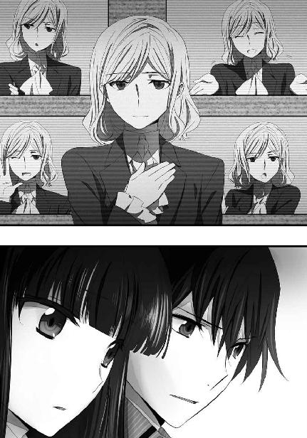
『明日、そちらの日付で二月十九日の夜、第一高校裏手の野外演習場に活動中の全パラサイトを誘導する。そこでパラサイトを殲滅してもらいたい』
根拠は何も提示されていなかったが、この段階で既に、達也はレイモンドの提案に乗ってみる気になっていた。
『なおこの情報はアンジー・シリウスにも、既に伝えてある。協力するも、競争するも、君のお好み次第だ』
この配慮はいただけなかったが、残念ながら異議を伝える手段が無かった。
それ以上画面の中のレイモントは何も語らず、モニターがいきなり暗くなった。
頭上で大きく息を吐く音がした。
深雪が詰めていた息を一気に吐き出したようだ。
達也も、肩の力を抜いて息をついた。
「そろそろ家を出ないと遅刻するな」
立ち上がり、振り返って、達也は深雪にそう声をかけた。
◇ ◇ ◇
一年Ｅ組の二時限目の授業は実技だった。
授業と言っても、相変わらず教師はいない。壁面のモニターに示されるガイダンスに従って、生徒が勝手にＣＡＤと計測器を操作するだけだ。生徒たちも既に慣れたもので、監督の目が無い気楽さを享受する余裕も生まれている。──それは自らの境遇に対する諦めと表裏一体のものだったが、それがいつ裏返るのか、それとも表を向いたままなのか、それは一人一人の資質によるだろう。
多分この男などは、ずっと表を向いたままに違いない。
余り大きな声で言えない用事を済ませる為、実習室に遅れてやってきたレオは、キョロキョロと左右を見回し、幹比古、エリカ、美月の姿を認めて、彼らの許へ悠然と歩み寄った。
「......遅刻だよ、レオ」
「かてえこと言うなよ」
このところ随分柔らかくなったとはいえ、持ち前の生真面目さを発揮して棘のある声で咎める幹比古に、レオはあっけらかんとして、かつ不敵な笑顔で応じた。
その笑顔はすぐに、「おやっ？」という表情に切り替わった。
「達也は？」
レオの問い掛けに、美月が「お客様みたいですよ？」と答えを返した。
口調が疑問形だったのは、美月も訝しく思っていたからだろう。
「客？ 学校に？」
眉を顰めて質問を重ねるレオに、美月は曖昧な笑みを返すことしかできなかった。
「そんなことよりサッサと終わらせましょ」
横からエリカが、どうでもよさげな声で口を挿んだ。ただその無関心の裏側には、プライベートな事情に踏み込むことを戒めている雰囲気があった。
「そうだね。今日の課題は、チョッと苦労しそうだし」
幹比古がそう言ってＣＡＤのセッティングに取り掛かる。エリカが他人事のような、美月が少し不安げな、レオが軽く引きつった感じの、それぞれの笑顔で頷いた。
一方、達也は不機嫌風味のポーカーフェイスで、応接室のソファに腰を下していた。
向かい側には高級スーツ姿の、見掛けだけは紳士的な壮年の男性。こちらは本格的に不機嫌な顔をしていた。
お互い不機嫌な顔を突き合わせて、中々話を始めようとしない。
先にシビレを切らしたのは、授業中強引に呼び出された達也の方だった。
「青木さん、そろそろ用件をお聞かせ願えませんか」
言葉遣いはともかく、決して丁寧とは言えない口調で問われた青木は、首から上で示している不機嫌のレベルを更に一段階引き上げた。
青木も、相手が達也だから、こうも易々と心情を露わにするのだろう。地下経済に巣食う魑魅魍魎を相手に十年以上四葉の金庫を守り続けて来た青木に、仮面の一枚や二枚被れないはずはなく、舌の三枚や四枚使い分けられないはずはない。
感情を露わにしていることが彼の仕事を困難にしていると、青木に分かっていないはずもなかった。だが彼は、四葉家における序列、自分が拠り所とする組織内部の階級に意識を縛られていた。
階級意識は、人を斯くも愚かにする。
「......自分は授業中ですので、ご用が無ければ失礼させていただきますが」
「待ちたまえ」
達也の突きつけた最後通牒に、青木はようやく口を開いた。渋々、ではあったが。
「君は先日、３Ｈ─Ｐ94を購入しているな」
事務的な口調を努めているのが手に取るように分かる口振りだった。滑稽だ、と達也は思ったが、笑いはしなかった。そんなつまらない報復をしても、多分、気晴らしにもならない。
「正確には一昨日ですが」
達也は同じように、事務的に対応することにした。残念ながら、その決意はすぐに崩れてしまうことになるのだが。
「それを奥様が欲していらっしゃる。君が支払った金額の倍額を出すから、すぐに引き渡したまえ」
達也は素早い身ごなしで立ち上がり、目を凝らして盗聴や盗撮が行われていないかどうか確かめた。
魔法的な力の使用を観測する機器が常に作動している魔法科高校の校内で気軽に「眼」を使うわけには行かなかったが、肉眼もそれなりに鍛え上げている。とりあえず、今の話を見聞きされた兆候は無かった。
達也は内ポケットから携帯端末を取り出してケーブルをつなぎ、そのもう一方の端を青木の目の前に突き出した。
よく考えてみれば──いや、良く考えなくても礼を失している振る舞いだが、達也の有無を言わせぬ眼光に、青木は眉を顰めながらも自分の端末を取り出してケーブルをつないだ。
『青木さん、熱でもあるんですか』
最初に送信されたメッセージが、いきなりこれだった。
青木は反射的に達也を怒鳴りつけようとしたが、向かい側から放射されているただならぬプレッシャーによって、図らずも自制した。
『今日は土曜日です。あと四時間もすれば人目に付かない所へ自分を呼び出すこともできたはずだ。何故学校の応接室で、家の用事を話すようなリスクを冒すんですか。家とのつながりを覚られるような真似は慎むよう、叔母上から命じられていることはご存知のはずです』
青木の、冷静を装う仮面に大きなひびが入った。唇の端が細かく震えている。顔色も、やや青ざめていた。
青木がこんな不用心な真似をした魂胆は分かっている。深雪のいるところを避けて、四葉家の序列を盾に、横車を押し通そうとしたのだろう。
それを達也に見透かされたことも、分かったはずだ。それでも、返事を書くペンの動きに淀みが生まれないのはさすがだった。
『私は早急にという奥様のご意向に従おうとしただけだ。そんな事より、今すぐ３Ｈを引き渡したまえ。そうすれば私はすぐにお暇する』
『そんなことができるはずもないでしょう。所有権が自分に移転しても一高に対する貸借契約の効力は存続したままですよ。自分があの３Ｈ─Ｐ94を買い取ったのは第三者に持ち去られるのを防ぐ為です。あの３Ｈは自分が責任を持って管理します。叔母上にはそうお伝えください』
青木の顔色が、蒼から赤に変化した。彼はいつもの調子で怒鳴りつけようとしていた。
「言いつけに背くつもりですか」
しかし、達也から浴びせられた言葉と視線に、青木の怒気と気力はみるみる萎んで行った。
青木の変化を見て達也は立ち上がった。もうこれ以上引き止められることは無いと判断してのことだった。
「待ちたまえ。いや、待ってくれ」
だが青木は、まだ退散するつもりが無いようだった。
見ればたった今まで彼の顔を、否、全身を覆っていた倨傲の色が消えている。まさか心の底から自分に対する姿勢を改めたのだとは達也も思っていない。そういう目で見ても、青木の態度は様変わりしていた。
「非礼な真似をしたことは謝る。このとおりだ」
そう言って、青木は深々と頭を下げた。ソファに座ったままというのがまだぞんざいな感じだが、達也に向かって謝罪を示しているのは誤解すべくもなかった。
「頭を上げてください、青木さん」
そう言いながら、達也はソファに戻った。青木の誠意に応えた、というわけではない。そもそも達也は青木から誠意など感じてはいない。ただ、多少本気になった青木が何を言い出すか、興味を覚えたのである。
「達也君、いや、達也殿、君の言い分はもっともだ。貸借契約が存続することを前提条件に購入したのであれば、勝手に持ち去ることはできないのが道理。無理を言ってすまなかった」
「いえ」
青木が再度頭を下げるのに合わせて、達也も軽く頭を下げた。一言にすら満たない返事しかしなかったのは、青木の発言が当たり前すぎて何と返しても嫌みになると考えてのことだ。もう気にしていないという意思は取りあえず青木に伝わったらしく、今度は達也が促さなくてもすぐに頭を上げた。
「ただこの事は分かって欲しい。奥様も好き心で君の３Ｈを求めたのではない。何か、研究の為に必要だとお考えだったのだろう」
「理解できます」
「もう無理強いするつもりはない。君もまた、アレを手元に置く必要を感じているのだろう。だがもし君があの３Ｈを手放しても良いと考えた時は、奥様に譲ってはもらえないだろうか。もちろんその場合は相応しい対価を用意する」
青木の提案の裏を読み取るのは難しいことではなかった。どうやら叔母はピクシーを第三者に渡したくないと考えているようだ、と達也は思った。
「君が承諾してくれるなら、約束金として君が３Ｈの購入に使った額の一割を毎年支払おう」
「毎年、ですか？」
しかしこの提案までは推測できなかった。四葉にとっては大した金額ではないとはいえ、世間相場から見れば随分と気前のいい話だった。
「ああ、毎年だ。具体的には条件付きの購入予約に関する期間一年の自動更新契約を君と正式に結びたい」
しかも口約束ではなく、正式な契約の申し出だ。達也にとっても四葉にとっても購入費用の一割は大した額ではない。正式に契約を結ぶ目的は、達也が約束を反故にしようとした場合に所有権を主張する為だろう。四葉の──真夜の本気度合いが垣間見えるオファーだった。
「俺は未成年ですが」
「お父上にはこちらで手を回しておく」
つまり法的に有効な契約を結ぶ際の面倒は全て青木が引き受けるというわけだ。
「分かりました。その程度なら構いません」
青木の提案に、達也にとって不利なことはない。意固地に突っぱねて叔母の心証を害するより、ここは妥協しておくか、と達也は考えた。
◇ ◇ ◇
青木を昇降口まで送り出し、達也は実習室へ足を向けた。既に二時限目の半分を過ぎているが、記録を取る程度のことはできるだろう、と考えてのことだった。
しかし達也の足は、昇降口から廊下へ入ったところで止まった。
「リーナ」
久し振りに見る留学生の顔は、随分とやつれていた。と言っても頰がこけているとか目の下に隈ができているとか、見た目で分かる異常は無い。健康を害している様子はどこにも見受けられない。
ただ、精彩がなかった。本人はいつもどおりを装っているようだし、彼女のことを余り知らない人間ならばその華やかな美貌に騙されてしまうだろう。だが彼女のことをある程度知る者ならば──それが達也程度の付き合いであっても──キラキラした容姿を更に輝かせていたあの溢れ出る精気を感じ取れないことに、違和感を覚えるに違いなかった。
精神的な疲労が積み重なっているように見える。
精神的に、かなり追い詰められているように見受けられる。
もっともそれが、陰のある儚げな美しさを醸し出していて、いつもとは逆方向の魅力を演出していた。女性の外見にそれほど興味が無い──というよりすっかり慣れてしまっている達也でも、美少女はお得だな、と思った程だ。
「タツヤ」
だからと言って、見とれていて反応が遅れるというベタな展開にはならなかった。
名前を呼ばれて、真っ直ぐサファイアブルーの瞳に視線を合わせる。
「話は聞いた？」
「ああ」
二人が話題にしているのは七賢人の一人からもたらされた情報のことだ。明日の夜、裏手の野外演習場にパラサイトを誘導するという一方的な伝言。省略された言葉が多すぎる会話だったが、二人とも自分の意図が伝わっていることを全く疑っていなかった。
「誰だか分かったか？」
「いいえ」
どうやらリーナの方に顔見せはしなかったらしい、とその答えを聞いて達也は思った。それもある意味当然だろう。ＵＳＮＡ軍が賢者の身元を突き止めたなら、その知識の泉の正体を徹底的に追求するに違いないのだから。
「そうか、残念だったな」
「まあね。でも今回は、いいわ」
言葉を切ってリーナは、タツヤへ挑みかかるような目を向けた。
「タツヤ」
強い、眼光。
殺し合いを演じたあの夜よりも、強い意志が込められた眼差し。
「ワタシは、馴れ合わないわよ」
分かっていたことだが、達也は改めて悟った。好む好まざる以前に、共闘するという選択肢は、最初から無かったのだと。
「分かっている。所詮俺たちは、住む世界が違う」
達也の答えは、古典的な（この場合、古臭いと同義）ロマンス小説（映画でも可）の別れのシーンで使われるようなセリフだった。
あえて誤解されやすいセリフ回しを選んだのは、盗み聞きしている者がいた場合に備えてのことだ。
見ればリーナは、罵倒しかけた言葉を飲み込んでいた。わずかなタイムラグで、達也の意図に気づいたらしい。
とはいえ、リーナの顔に血の気は上ったままだったが。何となく、顔を染める赤色の意味が直前とは別のものとなっているように、達也は感じた。
「バッカじゃないの！」
クルリと踵を返しながら吐き捨てられた言葉は、
果たして、達也の演技に便乗したセリフだったのか、
それとも、リーナの本心だったのか。
この時、達也に分かっていたことは。
──今日の放課後は実技の居残りだな、という諦めを伴う現状認識だけだった。
◇ ◇ ◇
四葉本家。
主に午後の紅茶を給仕していた葉山の懐で、控えめな電子音が着信を告げた。真夜が頷くのを見て、葉山はクラシックな折り畳み式の音声通信専用端末を取り出して広げ、耳に当てた。
「青木か。......ふむ、つまりはお役目をしくじったのだな。......奥様のお申し付けを果たせなかったのは事実であろう。まあ、そのような事情であればやむを得んか。......そう慌てることもないと思うが。このようなことで達也殿は約束を違えたりはせんだろう。......分かった。奥様には私から伝えておく。......うむ、励むが良い」
「......青木さんは何と？」
端末を懐へ戻した葉山へ真夜が問う。葉山は困ったものだと言わんばかりの苦い表情で真夜へ頭を下げた。
「申し訳ございません、奥様。３Ｈの入手に失敗したとのことにございます」
役目を失敗したのは青木だ。しかし葉山は執事筆頭、青木の上司とも言える。彼は本気で青木の不手際を恥じていた。
それに対して真夜は許すとも許さぬとも、ハッキリした形では答えなかった。
「達也さんの名前が出ていたようだけど」
真夜が関心を示したのはこの点だった。
「件の３Ｈを達也殿が購入されていたとのことです」
質問に答える葉山は、苦笑を堪えているような表情だった。
「どうやら達也殿は、かの人形が他者の手に渡らぬよう巧まれたようですな。第一高校に対する貸与契約を有効としたまま所有権のみ買い取られたとのことにございます」
それは真夜がピクシーを手に入れられなかった場合の次善の策として指示した内容と同じ措置だった。
「......分かっていてやっているのかしら。それとも偶然？」
「さて、私めには分かりかねます」
真夜の顔に戸惑いが浮かぶ。だが彼女はすぐに頭の中を整理したようだ。
「......そうね、達也さんが責任を持って管理するというなら構わないわ」
「青木は達也殿が３Ｈを手放すことがあったならば、それを買い取るという契約を結ぶつもりのようです」
「ええ、それで結構よ」
葉山は真夜に向かって、今度は軽く頭を下げた。真夜には青木を、もちろん葉山も、咎めるつもりなど最初から無かっただろうが、不始末を許されたことに感謝を示したのだ。
「でも、サンプルはやっぱり手に入れておきたいわね......」
真夜の独り言に、葉山が「そろそろ放っておけない」という表情で苦言を呈した。
「奥様、私が申し上げる必要も無いかと存じますが、あまり人外と積極的に関わりを持つのはお止めになられた方がよろしいのでは」
真夜はその未だ衰えを見せぬ美貌に皮肉げな表情を浮かべた。
「あの方たちがいい顔をしないから？」
「御意」
「大切なスポンサー様ですものね」
真夜が人の悪い笑みを浮かべ、葉山が控えめに顔を顰めた。
「葉山さんの言いたいことも分かっているわ。私もあえて波風を立てようとは思っていません。『パラサイト』を手に入れるのは四葉にとって必要だと思うからです」
「では奥様は彼の魔物、パラサイトを研究することで精神干渉の秘奥に近づけるとお考えなのですか」
「ええ。精神とは何か、それは四葉がずっと答えを追い求めてきた謎です。パラサイトの正体は精神の独立情報体と言われています。精神の素材、精神の構造、精神の所在......少しでも精神の性質について解明する為のヒントになるのではないかしら」
真夜の考えを理解して、葉山が恭しく一礼する。
真夜は鷹揚に頷いて話を元に戻した。
「ところで、当の魔物たちの動きはどうなっているのかしら？」
「先程黒羽殿から頂いたご報告によれば、昨日深更に処理された魔物は既に復活を遂げた由にございます」
「もう？ 随分早いわね」
「急ぐ理由があったのでしょう。黒羽殿は魔物どもが戦支度をしているようだと」
「そう......誰を相手に、というのは訊くまでもないことかしら」
葉山にそう問い掛ける真夜の顔には、かみ殺した笑みが浮かんでいた。
「彼らの流儀で言えば、人形の中に囚われた同胞を放ってはおけぬのでしょう」
「ここまで来るとトラブルに愛されているというより、トラブルを愛しているのではないかと思ってしまうわ」
真夜のセリフが指している相手は言う迄もなく彼女の甥だ。本人は激しく否定するに違いないが、少なくともこの場で異議を唱える者はいなかった。
「何時になるか、分かりますか」
「黒羽殿は明晩、第一高校の周辺で、と予測しておられました」
「周辺とは貢さんらしい慎重な言われようですこと......。ではその場に人を配しておくよう貢さんに伝えてくださいな。リーダーは、そうね......亜夜子ちゃんがいいでしょう。戦うことが目的ではありませんから」
「畏まりましてございます」
葉山は手を叩いて自分の代わりに真夜の給仕を務めるメイドを呼ぶと、貢に真夜の言葉を伝えるべく電話室へ足を向けた。
◇ ◇ ◇
今更言う迄もないことだが、七草真由美は受験生である。
今日は二月十八日、土曜日。魔法大学の入学試験まで一週間。受からない確率はほとんどゼロ、とはいえ、他のことに気を掛けている時期ではないのも確かだ。「吸血鬼事件」が表面上終息しているのは彼女の、主に精神状態にとって幸いなことだった。
学校の図書館で苦手分野のお復習いをして、帰宅したのはそろそろ日が沈もうという時間。出迎えた若い使用人が少しおどおどしていることに、真由美はすぐ気がついた。
「お父様はお帰りなの？」
「はい、お嬢様」
良く訓練されたメイドは言葉を嚙んだり舌を縺れさせたりしなかったが、彼女を怯えさせているのが自分の父親だということは真由美の目に明らかだった。
（若い女の子をこんなに怖がらせちゃって......お父様、何をやっているのよ）
心の中で苛立ちを覚えても、それを面に出しては使用人をますます萎縮させるだけだ。
「そう」
真由美はメイドに笑顔を見せて、そのまま自分の部屋へ向かった。
その頃書斎では、当主・七草弘一が腹心の名倉へ苛立ちを隠し切れない不機嫌な顔を向けていた。
「......では、防諜第三課に侵入し捕獲したパラサイトを殺害したのはスターズのシリウスだと言うのだな」
「ほぼ間違いありません」
主から怒りを向けられても、名倉に怯えの色は無い。丁寧な態度だが、彼のそれは真夜に対する葉山のものとは違い、何処かビジネスライクな面が見受けられた。腹心と言っても名倉は七草家の身内ではなく傭兵と言うべき立場の者だ。常に弘一の側に仕えているわけではない。真由美も含めた子供たちのガードを務めることもあれば、情報収集などで法を逸脱した活動を命じられることもある。それが数字落ちに対する弘一の遇し方だった。
「しかし如何にスターズのシリウスと言えど、これ程簡単に侵入を許し、あまつさえ囚人を殺害されてしまうとは。情報部もだらしがない。頼る相手を間違えたか」
吐き捨てるように言う弘一に、名倉は冷静な反論を返した。
「国防軍の情報部は決して無能ではありません。防諜第三課のビルも我々であれば侵入に相当の困難が予想される警備態勢が築かれていました。昨晩のあれはスターズが上手だっただけのことです。伊達に世界最強の魔法師部隊を名乗っているのではないということでしょう」
まるで自分をたしなめるような言い方に、弘一はますます不機嫌な表情になる。もっともここで名倉を怒鳴りつける程、冷静さを失っているわけでもなかった。
「旦那様、失礼を承知で申し上げれば、この件はもう頃合いかと存じます。最早七草家にとって関わり続けるメリットは少ないかと」
「......そうだな」
弘一は名倉の進言を冷静に吟味する冷静さを残していた。
「この一件ではどうやら九島家も動いているようだ。失った戦力の補充になればと考えたのだが、確かにこの辺りが引き時か」
「はい」
「出動中のメンバーに通常業務への復帰を命じておこう。名倉、下がって良いぞ」
「失礼します」
暗号通信機を自分で操作し始めた弘一へ一礼して、名倉は書斎を後にした。
◇ ◇ ◇
西暦二〇九六年二月十九日、日曜日。
パラサイトを今夜、おびき出す。海の向こうからもたらされたこの情報を、達也は全面的に信用したわけではなかった。
レイモンド・クラークという少年が雫の留学先に在学していることは裏付け調査済みだ。学校のサーバーに保存されていた写真の顔は、あのビデオメールのキャスターの人相と同じだった。
だがそれだけでは、レイモンド・クラークが真実を語っていた保証にはならない。匿名の情報が常にデマとは言えないのと同じで、実名の情報が常に信用できるとは限らないのだ。
しかし達也は、こうして指定された場所──第一高校野外演習場へ足を運んでいる。それは、他に有力な手掛かりがないからだった。
向こうから出て来るのを待つ。あるいは偶然に期待する。それ以外に手立てのない現状では偽情報に振り回されて一日を無駄にしても、大して違いはなかった。
高校としては異例に広い敷地の背後に広がる人工森林。いや、正確に言えばそこも第一高校の敷地内なのだが、自然の山林と見分けがつかないそのフィールドが学校の一部であるとは、知識として分かっていても実感するのは難しい。輪郭すら定かでない夜更けとなれば尚更に。
時刻はまだ午後七時を回ったばかりだ。夜更けという表現は、本来当たらないかもしれない。しかし灯火が暗闇を圧倒する都心部と異なり、街灯一つ無い本物の闇に沈む夜の森に、宵の口といった類の形容は相応しくなかった。
間違って部外者が入り込まないよう、演習場の周りは高いフェンスで囲まれている。魔法を撃ち合っている最中に一般人──魔法を使えない市民という意味だ──が迷い込みでもしたら、どんな惨事にならないとも限らないからだ。
もっとも、フェンスなど無くても町の住人が演習場に入り込む心配はほとんど要らない。ここが第一高校の実習フィールドということは、少なくともこの近隣に暮らす者なら誰でも知っている。
そもそもこの地域に魔法科高校と無関係の民家は無い。ここに第一高校が建てられた時、政府が強制しなくても、魔法と無関係の市民、魔法が使えず、魔法と関わり合いになりたくない市民は、相応の補償金と引き替えに自ら居を移した。この地域に残った人々は、魔法科高校の野外演習場に足を踏み入れることの危険性をよく弁えている。
特に警備システムの類が無いのは、そういう背景があってのことだ。演習場といっても単なる人工森林だから盗まれる物も無いし、コストを掛けて侵入者を防ぐ必要が無いのだった。
「跳べるか？」
達也は高さ約三メートルのフェンスを見上げながら、同行者に声を掛けた。入り口は第一高校の裏門から続く直通の通路にあるだけだから、一旦外に出たことになっている彼らが中に入る為にはフェンスを越えなければならない。学校外から演習場に侵入するのは簡単でも、校内から演習場に侵入するのは監視システムを誤魔化すのが難しい。このシステムは演習場を経由して学校敷地内に侵入する賊を警戒して設置された物だが、演習場から侵入するだけでなく演習場へ脱出する不審者も当然監視対象になるのである。
「もちろんです、お兄様」
「あたしも大丈夫」
「この程度なら問題ないぜ」
達也の問いに対し、深雪、エリカ、レオの順に答えが返って来た。
『可能です』
そして最後に、この問い掛けをした本来の相手、ピクシーからの念話が届く。
今夜の同行者はこの三人と一体だった。──達也の予定では、深雪を連れてくるつもりはなかった。エリカにも、これまでの経緯があるのでとりあえず話をしておくだけのつもりだった。
しかし今夜のことを知られた時点で、大人しく待たせておくのは無理であろう事も分かっていた。出掛けに深雪が当然のような顔でついてきた時も、エリカが自分から待ち合わせ時間を指定してきた時も、達也は特に抵抗しなかった。徒労に終わると分かっている抵抗は時間の無駄でしかないからだ。一旦諦めた後はむしろ積極的に、達也は友人たちを作戦に組み込んでいた。
改めて意識を演習場へ向けると、森の空気がざわめいている気がした。どうやら他の役者は、既に舞台へ上がっているようだ。
達也はＣＡＤを操作したフリをしながら──この期に及んで彼は守秘義務を忘れていなかった──記憶の中から「跳躍」の術式を呼び出し、先頭を切ってフェンスを跳び越えた。
広い人工の森林を、四人と一体は一塊になって進む。散開して標的を探す方法は採らなかった。この広さ、この暗さの中に、たったの四人では別々に探し回っても各個撃破のリスクを高めるだけでメリットは見込めない。
それに、わざわざ探しに行かなくても向こうから寄って来るのは青山で実証済みだ。今回は向こうが用心して出て来ないという可能性も無いわけではないが、それは考えても仕方のないことだった。これでパラサイトが見つからなければ明日からまた地道な捜索に戻るだけだ。
それに、ヤツらは出て来るだろう、という予感が達也にはあった。
予知ではない。
合理的な推理でもない。
根拠は無いに等しかったが、一種の確信を持って達也は木々の間を突き進む。ハンドライトの明かりは地面のごく一部を照らしているだけだったが、木の根や枯れ枝に足を取られる者はいなかった。新しい足跡が残されていないかどうか、目を凝らしながら日中と変わらぬペースで奥へ奥へと進むこと、およそ十五分。
『達也さん、止まってください』
片耳にはめたフリーハンドの通信機から、美月の声が聞こえた。会議モードの通信は、全員の受話器に届いている。
『現在の進行方向正面から右手三十度の方向に、パラサイトのオーラ光が見えます』
美月は達也たちに同行する代わりに、野外演習場を見渡すことができる屋上から、その「目」で四人をナビゲートしている。
『私も確認しました！ 男性二人、女性一人の三人組です』
美月が捉えたオーラの光を参考にして、ほのかの魔法が映像をカメラに取り込む。光学魔法により取得した映像は、昼間に至近距離から撮影したものと同等の鮮明な姿をカメラのレンズに送り込み、無線を通じて達也たちの情報端末へ届けた。
美月とほのか、魔法師としても特異なタレントを有するこの二人がいなければ、実現不可能だった索敵スキームだ。その有用性が今夜のミッションに不可欠だと判断したからこそ、貴重な戦力である幹比古を二人の側に護衛として貼り付けてある。幹比古自身もこの配役に不満は述べなかった。これが重要な役目だと理解していたし、自分が適役だと納得もしていたからだ。
『あっ！ 達也さんたちの反対側から、パラサイトに仮面の女の子が近づいています』
再び、ほのかから報告が入る。パラサイトのオーラ光が活性化したのは、どうやらリーナを迎え撃つ為だったようだ。
達也は手振りで移動を指示した。深雪、エリカ、レオ、そしてピクシーが頷く。
次の瞬間、達也は森を吹き抜ける疾風となった。
彼のすぐ後ろにエリカが続き、レオは左右に目を配りながら、深雪、ピクシーと速さを合わせて走り出した。
◇ ◇ ◇
達也たちのグループ、パラサイトの一団、そしてリーナとそのバックアップチーム。
今、この場に集っているのはこの三つの勢力だと、達也もリーナも考えていた。
国防軍の中にパラサイトの捕獲を目論む集団があることを達也は知っていたが、それは七草家の影響下にあるグループだと認識していた。真由美を通じた警告、間違いなく動いているであろう四葉家の牽制、そして「アンジー・シリウス」から受けた大きな打撃によって、彼らの意図は挫かれたと達也は判断していた。少なくとも昨日の今日で手を出してくる余裕は無いと考えていたのである。
ところが実際には、樹木と下生えの作り出す陰を伝い、達也とリーナ、それぞれから見て側面より接近する一団があった。
全員が近接戦闘を得意とする魔法師で構成された国防陸軍第一師団所属の遊撃歩兵小隊、通称「抜刀隊」。その名のとおり、銃器を使わない、刀剣型デバイスによる奇襲攻撃を専らとする部隊だった。
今回彼らが動員されているのは東京が第一師団の管轄だということ、任務の性質上から隠密行動が要求されるということ、この二点に加えて、彼らが九島家の影響下にある部隊だという事情がある。いや、むしろ最後の事情が最大の理由かもしれない。
達也は千里眼ではない。自分の知らないことは計算に入れようが無く、結果的に答えを間違えることも当然ある。九島老人がパラサイトの兵器的価値に興味を持ち、わずか三日で手勢を送り込んでくるなど、達也が知る由もないことだった。
そして更に、もう一つ。あるいは、もう一人と言うべきだろうか。
単身、抜刀隊を追跡する人影があった。
今、第一高校野外演習場では、五つの勢力が不可避の衝突を待っていた。
◇ ◇ ◇
スターズ総隊長として「シリウス」の任務だけは果たす。
今、リーナを支えているのは、この矜持だけだった。
日本に来るまで、彼女も、挫折を全く知らなかったわけではない。ペンタゴンが運営する年少者士官向けの教育プログラムでは、代数と生物学で結局Ｃまでしか取れなかった。格闘術訓練では、同じグループの中に、どうしても勝てない化け物じみた身体能力を持つ同い年の少女兵がいた。乗用機械の操縦訓練は、ハッキリ言って苦手だった。
だが魔法では、負けたことが無かった。
スターズ総隊長、アンジー・シリウス。
世界最強の魔法師の一人。
皆が彼女のことをそう褒め称え、自分でも魔法技能に絶対の自信を持っていた。
ところが、この日本において。
彼女は、あの兄妹に、負けた。
初戦は、彼女のペースだった。
撤退は予定の行動で、むしろ「まんまと逃げ遂せた」格好だ。
二戦目は達也の「カミカゼ」の前に組み伏せられた形となったものの、最終的には思い掛けない伏兵に敗れたのであって、作戦上は負けていても魔法で負けたわけではなかった。
だが、それに続く深雪との一騎打ちは、彼女の敗北だった。
不利な条件だったとはいえ、それを言い訳にできるとはリーナ自身が思っていない。
正面から戦って、深雪に負けた。
その敗北は、リーナに一層の闘志をもたらした。
敗北に心折れることなく、雪辱を誓った。
だが、
雪辱を期したあの一戦で、
リーナは、達也に、完敗した。
一対一の状況に引きずり込んで、戦術魔法兵器「ブリオネイク」まで使用して、それで、敗れた。
達也に対して口惜しさはあっても、恨みや憎しみは無い。達也はリーナを辱めるどころか、拘束することすらしなかったのだ。
あの戦い自体も、フェアなものだった。いや、彼女の方が有利な条件だった。
達也は魔法技能と、それ以上に精神力で、自分を上回っていた......リーナはそう、納得している。
しかしあの敗北は、間違いなく、彼女の存在意義を揺るがすものでもあった。
世界最強の実戦魔法師、シリウス。
それはスターズが「世界最強」を名乗る上で不可欠の看板だ。それ故にスターズの総隊長は年齢・性別を問わずＵＳＮＡ最強の魔法師が選ばれる。その魔法師が軍に属していなかった場合、謀略を用いてでも軍に引きずり込んでスターズ総隊長「シリウス」の地位に据える。
今回の敗北が外部に漏れる可能性は、ほとんど無い。そもそも、達也と深雪と、その背後にいる者が、それを忌避している。あの戦いの当事者であった誰もが、シリウスの看板に傷をつけることを望んでいない。
しかし第三者に知られることはなくとも、負けたという事実は厳然としてある。その失点を挽回する為、リーナは「シリウス」の職務を果たす能力を実証しなければならないのだった。
彼女がシリウスであり続ける為に。
彼女がシリウスとなった時、代わりにいなくなってしまった少女、失われた可能性の中の自分、アンジェリーナ＝シールズの為に。
◇ ◇ ◇
達也が現場を肉眼の視野に収めた時、深紅の髪に黄金の瞳、仮面を被ったリーナが一人でパラサイト三体を相手にしていた。
起動式を必要とせず、念じるだけで攻撃の魔法を繰り出すパラサイトに対し、リーナは一歩も引いていない。攻守の割合はリーナが七、パラサイトが三といったところか。ただパラサイトの内の一体が厄介な能力を持っていて、その所為で止めが刺せずにいるようだ。
その能力は、擬似瞬間移動。
魔法の種類で言えば、慣性中和と高速移動の複合術式。
その機動力と人工林の木立を使い、三次元的に移動しては出現先から銃撃や魔法を浴びせる。攻撃に使われる魔法は干渉力の低いものであり、リーナの魔法力を以てすれば脅威となるものではなかったが、だからといって無防備で敵の攻撃を浴びるわけにも行かず、防御魔法を展開する都度、他の敵に対する攻撃が途切れてしまう、という展開が続いている──状況を一瞥して、達也はそう判断した。
リーナの助太刀をするつもりは無かったが、達也は足を止めて、擬似瞬間移動を使うパラサイトに「分解」の照準を合わせた。
多くの魔法師は、五感で魔法の狙いをつける。五感外の知覚を利用する場合でも、狙うのは対象の座標だ。
それが、普通。
だが達也は、対象の情報そのものを照準することができる。座標の情報が目まぐるしく変化しても、その値自体が認識できていれば照準を固定する障碍とはならない。
擬似瞬間移動は達也にとって、目眩ましとはならないのだ。
「任せて！」
しかしそれは、達也だけの話ではなかった。足を止めた達也に追いついたエリカが、そのまま達也を追い越して、慣性制御を発動した。
擬似瞬間移動が脅威となるのは、相対する者の手が、足が、そして何より目が追いつかないからだ。故に、相手のスピードが術者のスピードを上回っていたなら、擬似瞬間移動による三次元機動は無駄な曲芸にしかならない。
エリカは五十里家に作ってもらい達也に調整させた（調整してもらった、ではない）『大蛇丸』のダウンサイジング版武装一体型ＣＡＤ『ミズチ丸』を携え、一直線に加速する。
その行く先は、幹と枝を蹴ったパラサイトがまさに着地しようとしている地点だった。
類稀な動体視力、慣性中和術式下でも体勢を崩さないボディコントロール、不要に身体を浮かせることなく地面を摑んで前に進む足さばき、そして相手が着地する瞬間をピンポイントに捉える洞察力。
魔法の力はパラサイトの方が上だろう。
だがエリカの、武芸者としての実力が、その差を覆していた。
エリカがミズチ丸を一閃する。
研ぎ澄まされた刃は一切の躊躇無く、パラサイトの胴を薙いだ。
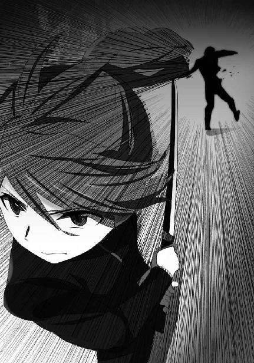
達也は部分分解術式の照準を変更してエリカに念動をぶつけようとしていたパラサイトの四肢を撃ち抜き地を這わせ、エリカが返す刀でとどめを刺したパラサイトの宿主、その亡骸へ向けて左手を突き出した。
パラサイトが宿主から抜け出すのを妨げる結界を、幹比古が張っている。校舎の屋上に築いた簡易式の祭壇の中から。幹比古を屋上に残してきたのは、美月とほのかの護衛の為だけでなく、遠隔の結界術式を使えるからだった。
とはいえ、結界の効果は完全なものではない。幹比古の技量の問題ではなく、術式の性質の問題だ。結界とは本来、こんな風に即席で構築する術式ではない。
宿主が死なない限り、パラサイトはその中から脱出して逃げ去ることができない。換言すれば、宿主が死ねばパラサイトはその身体から逃げ出すことができる。つまり、死体を拘束することはできてもパラサイトを捕らえておくことはできない。エリカがパラサイトを殺してしまった以上、そちらを先に処理しなければならなかった。
達也の掌から想子の塊そのものが撃ち出され、パラサイトの本体から想子をはぎ取る。いや、イメージ的には「はぎ取る」というより「吹き散らす」という方が近いだろう。
前回の戦闘結果を達也、深雪、幹比古の三人で検証して、達也たちはパラサイトが霊子情報体を核としその外側に細い、物質に例えれば繊維状の想子情報体を霊子核と絡めるように纏っており、魔法を行使する際に想子を消費しているという仮説に至った。
本体の霊子情報体そのものを破壊するのは、達也の能力では難しい。それは二度の対戦で実証済みだ。
しかし同時に、弱らせることはできる、という手応えもあった。
そして幹比古は、そのままの状態のパラサイトを自分の力で封じるのは難しいが、弱って魔法的な抵抗力を失った状態であれば自分にも封印が可能だと請け合った。
「幹比古！」
受信機とセットになったフリーハンドの送話器に向かって達也が呼び掛ける。だが本来これは、必要の無い行為だった。ほのかの光学魔法と美月の「目」で、幹比古はこの場の状況を摑んでいるのだから。
幹比古がこの場を「見て」いた証拠に、天から細い雷光が落ちて来たのは、達也が呼びかけたのとほとんど同時だった。雷光は宿主の亡骸を撃ち、その皮膚を黒く焦がす。肌に残された焼け跡は規則性のある模様──幾何学模様と文字を刻んでいた。
「一丁上がりね！」
エリカが快哉を叫ぶ。達也の視力にも、宿主から情報体が抜け出す光景は映らなかった。
だが、エリカに同調している余裕は、達也には無かった。
自分が四肢の自由を奪ったパラサイトに遠当てを撃ち込む。
生体反応を残している宿主の身体が激しく跳ね回る。
再び天より落ちる、封印の雷。達也の想子弾を受けてのたうち回っていた身体が動きを止めた。封印されたパラサイトは、これで二体目。
視界の端で、異なる電光がスパークした。古式の雷術ではなく、現代魔法の電撃だ。
リーナの魔法により黒焦げになったパラサイトの宿主。こちらは既に、抜け殻だった。
「一匹逃げた。美月、分かるか？」
『すみません、ここからだと、一つ一つの動きは......』
反射的に通信機へ問い掛けてみるも、返って来たのは申し訳なさそうな声。それも少し考えれば当然のことで、美月は五感の視覚を拡張する形で見えないものを見ているのであって、遠くのものを拡大して見ることができるわけではない。
「そうか。いや、無理を言った。気にするな」
美月にそうフォローを入れて、達也は苦い顔をリーナとエリカへ向けた。
「アンジー・シリウス」
仮面の向こう側に動揺が見えたのは、達也の錯覚ではあるまい。
「何だ」
だが一応、会話をする気はあるようだ。声が変わっているのは、これも『パレード』の効果か。
「封印が済むまで殺さないでくれないか。後始末が面倒臭い」
短く、絶句する気配。達也が偽悪趣味で「面倒臭い」と言っているのではなく、人の──元、人であったものの生死を、本心から「面倒」程度にしか思っていないことが直感で分かったのだろう。──それでもリーナの答えに変わりは無かった。
「ワタシには関係ない。ワタシは脱走兵を処理するだけだ」
口調も意識して変えているようだが、イントネーションで丸分かりだぞ、と達也は思った。
無論、口にしたのは別のことだ。
「シリウスの任務か......だからそれは、パラサイトの本体を封印してからにしてもらいたいんだが。現に一匹、逃げられた」
「それはワタシの任務に含まれていない」
リーナは今までになく頑なだった。話を聞く気が無い相手と交渉するのは、達也の性分に合っていない。彼はどちらかと言えば「耳を貸す気が無いなら好きにしろ、自分も好きにさせてもらう」というタイプである。しかし、今は話を聞いてもらわなければならない。達也はため息を吐きたい気持ちを抑えて説得を続けた。
「任務と言うが、君が今始末した相手は生粋の北東アジア系にしか見えなかったぞ。本当に脱走兵だったのか？」
違う、という確信を達也は持っていない。これはハッタリ、鎌をかけるの類だ。だがリーナは明らかに動揺した。達也の当て推量は的中していたようだ。
「......脱走兵でなくても脱走の手助けをしているなら同罪だ」
それでもリーナの頑なな態度は変わらない。
「重ねて言うが、パラサイトなどワタシには関係ない。ワタシはワタシの任務、シリウスの役目を果たすだけだ」
そう言い捨てて、リーナは森の中に姿を消した。
肩を竦めたくなる気持ちを抑えて、達也はエリカに向き直る。
「出て来たね、シリウス」
エリカからいきなりジャブが飛んで来た。三日前のあの時の事を根に持っているわけではないのはニンマリとした笑顔で分かったので、達也も苦笑いで応じた。
笑顔を得意げなものに変えた後、笑みを消し、
「あれ......リーナでしょ？ まるっきり別人に見えるけど」
エリカは真顔で、そう訊ねた。
「まるきり別人なのに何故そう思うんだ？」
「仕草、かな。手足の運びや首の振り方、目付なんかで大体分かるよ」
「さすがだな......」
エリカの観察力に、達也は舌を巻かずにいられなかった。顔の形から体格まで見た目を変える『パレード』の偽装を、そんな些細な特徴で見抜く。長い年月にわたり磨き抜かれ、鍛え抜かれた人の技は、魔法以上にマジカルでミラクルだ。
だが、いつまでも感心ばかりはしていられない。
「分かっていると思うけど、これも秘密だ。それよりエリカにも、リーナに言ったのと同じことを言いたいんだが」
「殺すな、って？」
「そうだ。エリカは説明を聞いていたよな。宿主が死なない限り、パラサイトはその中から逃げ出すことができない。逃走を妨げる結界は張ってあるけど、殺さず無力化する方が確実だ」
達也の要請は合理的なものだ。それはエリカにも理解できている。
「ゴメン。達也くんには悪いけど、それはできない」
だが、エリカは──エリカも首を横に振った。
「剣で人を斬る覚悟を決めた時から、相手に斬られる覚悟も持ってるつもり。だから、自分が斬られた時のことを考えるとね......わざと殺さずに苦痛を長引かせるなんてできないよ」
ただその理由はリーナと随分異なっていた。個人的で、その分、本音だった。
「殺さずに助けるのならともかく、封印は殺しちゃうのと一緒でしょ？ だったら相手が人間じゃなくても、長く苦しまずに済むように止めを刺してあげたいんだ」
エリカの顔に、彼女の瞳に、気負っている様子は無かった。しかし彼女は、確かにある種の覚悟を示していた。
「仕方ないな」
殺しは絶対の略奪であり、苦しませて殺しても苦しませずに殺しても、殺すという結果に何の違いも無い、と達也は思っている。
しかしだからといって、エリカを説得しようとも思わなかった。
価値観は人それぞれだ。
その中には、他人の口出しが許されないものもある。
「まあ、俺が苦労すれば良いだけか」
パラサイト退治が、その禁忌を犯してまで為さなければならないことだとは、達也は考えていなかった。
◇ ◇ ◇
達也の後を追いかけていたレオが、雷光や想子光が閃く戦闘現場の少し手前で、突然足を止めた。ほとんど遅れることなく、深雪も足を止める。機械のボディを持つピクシーが蹈鞴を踏んだほど、唐突な停止だった。
「西城君、気をつけて」
「そりゃ、オレのセリフだぜ」
レオの口調は「軽口」と言って良いものだったが、その目は油断無く左右を見回している。
「囲まれた......わけじゃ無さそうだな。そう感じさせてるだけみてぇだ。右手が空いてっけど、深雪さん、どうする？」
透視や赤外線知覚の類ではない。特にその種の訓練を積んでいないにも関らず、レオは半包囲の態勢をとる相手の小細工を気配だけで見破った。
「迎え撃ちましょう」
深雪の回答は、短く、分かりやすいものだった。
「......随分な思い切りだな」
かつ、レオが反応に詰まるほど、強気なものだった。
「そうかしら？ でも、怯える必要なんて何処にも無いでしょう？ だって、わたしの手に負えなければすぐにお兄様が助けに来てくださるもの」
「あ～、はいはい」
だが種明かしを聞いてみれば、実にカワイイものだった。
思わず半眼になって呆れ声が出てしまったほどだ。
「でも、あまりお兄様の御手を煩わせるのも申し訳ないわね......」
深雪は独り言のようにこう続けて、振り向かずにピクシーへ声を掛けた。
「ピクシー、わたしの後ろへいらっしゃい」
「ハイ」
左側の繁みに身体を向けて、深雪がピクシーに指示を下す。達也から深雪の言葉に従うよう命令されているピクシーは、必要最小限の返事と共に、言われたとおりの位置へ移動した。
深雪の左手には携帯端末タイプのＣＡＤがスタンバイ状態で握られている。いつの間に準備を整えていたのか、ずっと隣にいたにも関らず気づけなかったレオは、改めて深雪に感心と称賛の目を向けた。
しかし、レオには気の毒なことかもしれないが、彼の視線は深雪の意識に留まらなかった。所謂「眼中に無い」というやつだが、この場で達也以外の誰から視線を浴びせられても深雪はそれを意識せず無視しただろう。
彼女の意識は、敵へ向けられていた。
深雪の指が滑らかに動いた。ＣＡＤを持つ左手の親指が、フォース・フィードバック・パネルの上を素早く舞う。
彼女から警告の類は一切無かった。
森の空気に、小さな煌きが混じった。幹や枝、地面に落ちる細かな氷の粒。細氷、ダイヤモンドダストと呼ばれる現象だ。二月、内陸部の、夜の山林。環境条件を考えればあり得ないとまでは言い切れない。
だがこれを自然現象と勘違いする者は、敵味方の双方にいなかった。
一瞬で半径百メートルのエリアにダイヤモンドダストを発生させた魔法。しかしこれは、攻撃用の術式でも防御用の術式でもなかった。深雪はただ、敵意の定かでない相手が攻撃して来た場合に備えて、周囲の空間を自分の認識下に置いただけだった。
薄く、事象干渉の力を広げただけで、気象条件を変化させる力。かつて、十月の横浜事変において、摩利は深雪の魔法を「戦術級と言っても差し支えない」と評価した。
その評価は一部正しく、一部不正確だ。深雪の魔法は「言っても差し支えない」ではなく、戦術級そのものだった。
深雪にとって魔法の技術とは、効果を高めるものというより、影響範囲を狭く抑えるものという側面が強い。
──無作為に放てば、見渡す限りの世界を白く染め尽くす力──
それが、深雪の魔法だ。
この有様を前にして、レオは本気で焦った。
レオにとって喧嘩は「話をつける」為の手段だった。
横浜の時のように、相手がこちらと話をする気がないと分かっている場合は、力ずくで「お引取りいただく」。
相手がコッチを侮ってちょっかいをかけて来ているのであれば、自分は安く（易く）ないと拳で「分かってもらう」。
知り合いが迷惑をこうむっているのであれば、チョッと荒っぽく揺さぶって「手を引かせる」。
話し合いというには少し（？）乱暴かもしれないが、喧嘩はあくまでも交渉ごとの一部だ。
しかし深雪のこの力は、相手の主張どころか存在そのものを軽く吹き飛ばしてしまいかねない。
ネズミを嬲るネコというより、蟻を踏み潰す象だ。
これは相手が気の毒すぎる。
レオの流儀に反している。
「深雪さん、コイツらはオレが相手をする。アンタは達也が来るまで援護に回ってくれ」
薄っすらと氷の欠片が積もった世界に、指向性を持つ戦意が生じていた。
敵意ではなく、戦意。否定感情を伴わない、目的意識。
相手は街のチンピラなど比べ物にならない戦いのプロだが、それでも、深雪の前には鎧袖一触だろう。おそらく最初から「話にならない」。
「そう？ でしたら、お任せします」
深雪はレオの言葉に、あっさりと一歩下がった。
しかし、森をすっぽりと覆う冷気は、居座ったままだ。
こりゃ引けねえぞ、とレオは気合いを入れた。
木立の影から、繁みの中から、大振りのナイフを構えた野戦服の男たちが次々に姿を現す。総勢十名を数えたところで、増加は止まった。
進行方向に生じていた閃光は何時の間にか見えなくなり、闘争のざわめきは聞こえなくなっていた。向こうはどうやら一段落したらしい。
「装甲」
心の中で「早く来てくれよ、達也」と呟きながら、レオは起動式展開の音声コマンドを唱えた。
皮肉にも、それが合図になった。
声も無く、音も無く、一人の兵士が正面から突っ込んで来た。
速い、とレオが思う間も無く突き出されるナイフ。
それをレオは左腕で弾く。
レオと兵士は、共に驚愕していた。
ただしそれは、停滞につながらない。
ナイフを持っていない兵士の左手が、レオの顔面へ伸びる。
まだ十分な間隔が存在したにも関らず、レオは本能の命じるままに、右へ身体を投げ出した。
顔の横を、衝撃波が突き抜ける。
鼓膜──正常。バランス器官──ダメージ小。
受けたダメージを確認しながら、レオは地面を転がってすぐに立ち上がった。本当はもう少し距離を取りたかったところだったが、そんな生易しい相手ではない。
起き上がった直後、突き込まれるナイフ。あのまま地面を転がっていたら、上からのし掛かられてチェックメイトだっただろう。
肩の付け根を目掛けて突き出された刃先を──相手兵士も同国人の高校生を殺すつもりは無かったようだ──レオは腕を立てて受けた。
ナイフに掛けられた「貫通」の魔法と、フェイクレザーの袖に掛けられた「硬化」の魔法が激突した。
ナイフはレオの皮膚に届かず、レオの拳が兵士の顎を抉った。
豪快な左フック。
遺伝子操作による強化に加えてたゆまない鍛錬の結果生まれた常識外れのパワーが、一撃で訓練されたソルジャーをノックアウトするという非常識を生んだ。そのあり得ざる光景に啞然として残り九人の動きが止まることは、しかし、無かった。
間髪入れず、レオの左右から襲い掛かってくるナイフ。一人でも持て余し気味だったのが、今度は二人同時。しかも左右のナイフの刃渡りが異なるというおまけ付きだ。
余程の剣の名手でも、受け切るのは困難であろうコンビネーション。いくら人間離れした反射神経、超人的な運動神経を持っていると言っても、レオは剣の達人というわけではない。薄羽蜻蛉を修得する為、短期間とはいえ千葉道場で修行を積んだ成果で、レオにはそこらの有段者に後れをとらない刀剣戦闘力がある。しかし、所詮は促成栽培。運動能力という豊かな土壌だけでは通用しない嵐に見舞われた時、できることには限りがある。
レオは己の魔法を信じて、左の敵に集中した。
右側から迫る刃を視界から閉め出す。
鎖骨の下を狙う細身の直剣を、下からはね上げながら左腕をしならせる。
フリッカー気味のパンチが相手の鼻面を捉えるのと、右側方で刃が打ち合わされる硬質な響きが生じたのは、ほぼ同時だった。
「──助かったぜ」
レオのフリッカーパンチは相手の顔を浅く捉えただけで、決定打には程遠かった。
襲い掛かってきた二人の兵士は、間合いの外に跳び退っている。
内一人は、無手だ。
彼が持っていたナイフは、レオの足下に転がっている。
「さすがのアンタも苦戦しているようね」
ナイフを打ち落としたのはエリカの刀だった。
「まあ、あたしが手を出さなくても深雪がカバーしてたみたいだけど」
レオが目線だけで振り返ると、深雪が微かな笑みを返した。どうやら、エリカの援護が間に合わなかった場合、敵兵士の腕は凍りつくことになっていたらしい。
レオは密かに、戦慄を覚えた。
「達也はどうした？」
動揺を消す為、話題を変える。
「後ろに回り込んだ連中の相手をしているわ」
エリカはわざと、大きな声で答えた。
果たして彼女の注文通り、兵士たちの間に動揺が走る。
「深雪、達也くんが自分と合流しなさいって」
「ピクシーはどうするの？」
後ろで傍観者に徹していた深雪が、エリカの伝言に、少しソワソワした声で問い返した。
──笑っている場合ではないのに、笑いの衝動がエリカの喉元までこみ上げた。
「ピクシーはあたしたちのお手伝い。ピクシー、達也くんから指示が来てるでしょ？」
「マスターの・命令と、サイキックの、使用・許可を、確認しました」
「そういうわけよ。深雪、ここは任・せ・な・さい」
こんな場面にもかかわらず、余裕タップリにおどけてみせるエリカ。
「じゃあ、お願いするわね」
深雪は短く応えると、振り返りもせず駆けて行った。
「あ～あ......何処にいるのか分かるの？ なんて野暮なんでしょうねぇ」
「そりゃ、あの二人だからな」
そう言うレオの顔にも、さっきまでとはまるで違う、不敵な表情が浮かんでいた。──本人は必死になって否定するに違いなかったが。
「さてと......お願いされたことだし、チャッチャと片付けますか」
レオの変化に気づいていながら、あえてそれを指摘せず、ミズチ丸をエリカが握り直した、その時。
「いや、ここまでだ。エリカ、刀を引け」
新たな役者が舞台に上がった。
エリカが、息を吞む。
人工の林が織り成す闇の中から出て来た長身の影は、
「次兄上......」
エリカの次兄、千葉修次のものだった。
◇ ◇ ◇
達也が深雪を自分の許へ呼んだのは、妹のことが心配だったから、というわけではない。そういう要素が全く無いとは言い切れないが、少なくとも達也が意識していた理由は違う。彼はエリカとレオの能力では対処できない事態が発生しているのを察知した。そして、それに対応するには深雪の力が必要になると考えたからだ。
そして、達也が推測したとおりの事態が生じていた。
すぐ後ろで、深雪が息を吞んでいる。──彼の前に広がる惨状に。
達也の前には、三々五々、地面に倒れ伏した国防軍の士卒たち。達也たちは知らないことだが、彼らは九島家の息が掛かった部隊の戦闘員だ。その十名中八名が死体、残る二人も立つことのできない重傷。つまりは全滅だった。
この戦果は、達也のものではない。
今、リーナと交戦している、パラサイトによるものだった。
「リーナ、下がれ！」
「余計なお世話よ！」
達也もただ観戦していたわけではない。それどころか、彼も交戦の真っ最中だった。
パラサイトの集団に突撃するリーナ。相手の頭数は六。既に片付けた人数を計算すると、ピクシーから聞いた数よりも増えている。
たった六人と、普通の相手ならば言うこともできただろう。シリウスの名前は伊達ではないし、脱走魔法師の処理を中心的な任務とする「シリウス」にとって対魔法師戦闘はお手の物と言える。この程度の人数に「シリウス」が手こずるなど普通、あり得ない。
それなのに、リーナは苦戦していた。彼女に襲い掛かる魔法を達也が分解し続けていなければ、あるいはやられていたかもしれない。
リーナの最大の武器は、魔法発動の速さだ。
その圧倒的なスピードを以て、たとえ後出しでも結果的に、相手に何もさせずに倒す。それがリーナの得意とするスタイル。拳銃の武装デバイスを愛用するのも、このスタイルにマッチしているからだ。
しかしパラサイトは、文字通り想うだけで魔法を放つ。
イメージすることがそのまま魔法につながっている。
起動式その他の発動媒体を必要としない点で「超能力者」と同じ特性を持っている。
パラサイトは長所だけでなく、短所も超能力者と似ている。それは行使できる能力の、バリエーションの乏しさ。人間とは異なる理由で魔物にも具現化できるイメージに制限があるのだろう。
現代魔法はバリエーションを増やすことにメリットを見出して発達してきた体系だ。超能力のスピードを犠牲にする代わり、多様性と安定性を持たせる。それが有益な変化であることは、数々の実験と実践が証明してきた。だからこそ、この方向性で今まで突き進んで来たのだ。
ただしそれは、単独あるいは少人数で様々な状況に対応できるという形の有益性であり、限定された対応に集中すれば良い場合、例えば「目視した敵を斃す」というようなケースではやはり、スピードが大きな意味を持つ。
ＣＡＤは正しく、速度と多様性を両立させるためのツールとして開発された。しかしそのＣＡＤの中に、特化型という多様性を犠牲にして速度を優先したカテゴリーが生じていることだけを見ても、スピードの優位がどれほど大きなものであるかが分かる。
ただでさえスピードに優れているパラサイトが、先程の三体に対して、今度は六体。
単純に二倍とは言えない。
ランチェスターの第二法則によれば、有視界（認識可能領域内）の砲撃・射撃戦闘において戦力比は兵数（兵器数、戦闘力単位数）の二乗に比例する。仮にこの法則が魔法戦闘にも適用されるとすれば、単位時間当たりの魔法発動可能数一対三の場合の戦力比は一対九でその差が八、魔法発動可能数二対六の場合は戦力比四対三十六で、その差は三十二。
それだけの手数の差が生じることになる。
達也やリーナが多数を相手にできるのは、人数差を単位時間当たりの魔法発動可能数で覆すことができるからだ。この点で優位に立てない今の状況では、達也もリーナも防御を優先せざるを得なかった。特に達也は、自分と、リーナに向けて放たれた魔法を分解するだけで完全に手が塞がっていた。
深雪を呼び寄せたのは、この状況を前以て推測したからだった。
「深雪！」
「はい、お兄様！」
二人が交わした言葉は、たった、それだけ。
ただ名前を呼ばれただけで、深雪は兄が自分に求めるものを完全に理解していた。
深雪の身体から、正確に言えば深雪の身体が存在する座標から高圧の事象干渉力が放たれた。
領域干渉。
事象改変の結果を定義せず、ただ干渉力のみを一定領域に作用させる対抗魔法。
それは即ち、他者に事象を改変させない魔法。自分以外の魔法を無効化する術。
ランチェスターの第二法則は点在する標的に対する攻撃力を定量化できる場合に成立する法則である。同じ尺度で測ることができない圧倒的な面制圧力に対して、適用することはできない。
深雪の領域干渉は、この場に魔法の空白地帯を作り出した。
達也とリーナが、細く高密度に絞り込んだ魔法を構成する。
彼らは深雪の領域干渉に対抗するだけの干渉力を持っている。
深雪の領域干渉下で深雪に対して直接攻撃を仕掛けるのはこの二人にも難しいが、そうでなければ、数や速度で著しい低減効果を受けるとしても魔法を発動すること自体は可能だ。
しかしパラサイトには、二人に、否、達也、深雪、リーナの三人に匹敵する事象干渉力が無かった。
達也とリーナが続け様に魔法を発動した。
リーナの発動した魔法の標的は六。達也の魔法が対象としたのは十二。達也の狙いの半分はパラサイトの宿主を殺してしまおうとするリーナの魔法を分解する為のものだったが、術式解散が間に合ったのはリーナが放った魔法式の二分の一でしかなかった。
その結果。
三体のパラサイトがリーナの魔法を浴びて絶命し、
三体のパラサイトが、達也の魔法に貫かれた後、自爆した。
◇ ◇ ◇
剣の魔法師。
千葉家に与えられたこの二つ名は、彼らが刀剣と魔法を併用する近接戦闘技術をいち早く確立したことに由来する。
魔法による近接戦闘技術というなら別に、千葉家の専売特許ではない。
スターズが海兵隊から分離する前に編み出したマーシャル・マジック・アーツの方が時期としては早いだろう。ＵＳＮＡと対抗するように、新ソ連でもコマンド・サンボと俗称される軍隊格闘術を母体とした格闘戦用魔法技術が開発された（こちらはすぐに廃れてしまったが）。インド・ペルシア連邦形成の動乱期にはデリーを中心とする北部地域で、ジャマダハルと呼ばれる伝統的な短剣を現代風に改造した武器を使用する近接武器術が生み出された。
しかし日本以外で生まれた魔法併用型近接戦闘技術は、知られている限り全てが、銃器や「飛び道具としての魔法」を補助するものとして開発された。その主な形態は接近された状態において、銃器に匹敵する攻撃力や銃器を無害化する防御力を発揮することにある。
これに対して千葉家が体系化した「剣術」は、刀剣による白兵戦闘をメインに据える技術体系だ。自分自身に魔法を掛けて銃器の間合いから刀剣の間合いへ飛び込み、素手やナイフより攻撃力に勝る刀剣を以て静かに、速やかに敵を斃す。奇襲性と隠密性に優れたこの技術は、都市ゲリラ戦、対テロリスト作戦における日本軍、日本警察の大きなアドバンテージとなった。
剣術自体は千葉家が編み出したものではない。日本において魔法の軍事利用が研究され始めるのとほぼ同時に、刀剣術との併用というアイデアは様々な魔法師の手で試行錯誤された。千葉家はそれを、修得しやすく体系化しただけだ。
しかし、伝達しやすい形に体系化するという行為は、「技」を「技術」に昇華する。技術の普及にとって、画期的な意味を持つ。千葉家の先代当主は「現代の（上泉）信綱」と称賛され、その功績に対する敬意を以て千葉家は「剣の魔法師」と呼ばれるようになったのだ。
そうした歴史的経緯を背景に、陸軍の歩兵部隊と警察の機動隊に所属する魔法師の実に七割から八割が、一度は千葉の剣術を学ぶと言われている。
陸軍第一師団・遊撃歩兵小隊、通称「抜刀隊」。彼らは九島家の派閥に属する集団だが、同時に刀剣と近距離魔法を使った近接戦闘の部隊であり、歩兵部隊の中でも特に千葉一門の教えを受けた時間が長かった。
彼らにとって千葉家はいわば、師匠筋である。公の席に顔を出すことが無かったエリカのことは知らなくても、「千葉の麒麟児」として有名な修次のことは当然知っている。いや、知っているどころか、この分隊の指揮官からして、修次に剣の手解きを受けた経験を有していた。
従って、
「師範代......」
修次が突然姿を見せて、彼らが硬直してしまったのは、理由のある反応だったのだ。
軍の階級で言えば、まだ学生の修次より正規の士官である分隊指揮官の方が上。
だが今、この場を支配しているのは、武門の序列だ。
修次は、動きを止めた彼らの脇を通り抜け、エリカと向かい合わせに立った。
エリカが怯んだ表情を見せる。
しかしすぐに、強気な眼差しで修次を見返した。
虚勢、であっても、エリカにとって、それ以上に修次にとって、これは画期的なことだった。
エリカが修次に、剣を向けるというのは。
実際に刃を突きつけ合っている訳ではない。
二人とも、得物の切っ先は地面に向けている。
だがそれでも、気持ちの上で、修次とエリカは剣尖を向け合っていた。
この腹違いの妹には自分に依存している面があることを、修次は気づいていた。それも無理からぬことだ、と彼は考えていた。
誰にも寄りかからずに生きていけるほど、子供は強い生き物ではない──修次はそう思っている。自分自身がそうだったのだ。だから少なくとも自分には、自分以外の誰かに対して「誰にも寄りかからずに大人になれ」と強いる資格はない、それが彼の考え方だった。
普通なら、親がいる。親は、子供が無条件で寄りかかって良い存在だ。
だがエリカの場合、これは当てはまらなかった。母親は弱く、父親は親の役目を最初から果たす気がなかった。
実は修次も、自分の父親が嫌いだ。彼がエリカの言う「小手先の技」にのめりこんだのは、半ば父親へのあてつけだった。何故か兄や姉は、親の義務を放棄している父親を見て、それがおかしいと思わないようだ。おかしいどころか、百家の当主として、それが当然と考えている節がある。
修次はこの腹違いの妹に、共感を覚えていたのかもしれない。だから家族の中でただ一人、彼だけが彼女に優しく接し、時に甘えさせ、時に励まし、自分に依存することを許容してきた。
だがどうやらこの妹も、大人になる時期が来たようだ、と修次は思った。
試しに修次は、剣気を放ってみた。気当たり、と呼ばれる技法だが、高レベルの魔法師が行う場合、切られたと錯覚した相手の身体に直線状の痣が生じたり実際に皮膚が裂け血が流れたりすることもある。
修次の剣気を、エリカは自分の剣気ではね返して見せた。逸らす、いなすではなく、正面から対抗して見せたのだ。
我知らず、修次の唇に笑みが浮かんでいた。
修次の右手が上がった。
得物を持ち上げた、と見えた時には、エリカへ向けて刃が振り下ろされていた。
目にも留まらぬ剣速、というわけではない。
極端に予備動作が少ない、予備動作と本動作の境目が認識できない、技による「早さ」。相手の認識の死角を衝く、虚の剣技。ただ手足を動かすだけでそれが技となる、天才の剣。
その修次の斬撃を、エリカの刀が受け止めていた。
最初から寸止めにするつもりではあったが、手を抜いてはいない。その修次の技、「早さ」を、エリカは卓越した反応速度と太刀行きの「速さ」で防ぎ止めたのだ。
修次の唇に浮かんだ微笑は、今や、ハッキリとした、獰猛な笑みに変わっていた。
エリカの瞳を染める緊張の色が濃くなった。
片手で押し込まれる修次の刀を、両手で懸命に押し返す。
唐突に、圧力が消えた。
エリカは刹那も遅れず、体を引いた。
体勢を立て直すことすら必要とせず、再び対峙する兄と妹。
クルリと修次が背中を向けた。
意表をつかれて、エリカの構えに「虚」が生じる。
その隙を衝く一撃は、やって来なかった。
「次兄上......？」
訝しむ妹には応えず、修次は抜刀隊へ剣気を向けた。
抜刀隊から狼狽が伝わって来る。
構えを取ってはいるが、修次の見るところ、彼らの反応はエリカより鈍かった。
──彼らには、面白みが無い。
修次の顔から笑みが消えた。
「防衛大特殊戦技研究科所属、予備役少尉・千葉修次」
刀を前に掲げたまま、所属・階級・氏名のみの名乗りを上げる修次。（なお、在学中、しかもまだ二年生であるにも関らず予備役とはいえ少尉の階級を与えられているのは、魔法師であることを考慮しても例外的な措置で、それに見合う実績を残しているからに他ならない）
「小官は現在、テロリストの標的となった民間人護衛の任務を遂行中である。貴殿らの所属・階級・氏名と目的をうかがいたい！」
掌を返したように見える修次の行動に、エリカがレオと顔を見合わせた。
「もし貴殿らが民間人に危害を加える目的で出動しているのであれば、それは民主主義に対する叛逆行為だ。小官は断固として阻止させていただく」
十師族や百家が民主主義を掲げるのは、ある意味で詐欺のようなものだ。彼らは国民の利益よりも魔法師の利益を追求しているのだから。
修次のセリフを聞いていたエリカはそう思ったし、修次本人も、実はそう思わないでもなかった。
しかし、修次の発する気迫に、些細な揺らぎも無い。
彼が突きつけた刃によって、局面は膠着状態に移行した。
修次と抜刀隊の対峙は、少し離れたところで生じた、想子波の爆発的な放出により破られた。
『エリカ、レオ、気をつけて！』
『そっちにパラサイトの本体が！』
早口でもつれ気味の、焦りを露わにした声が通信機から飛び出した。
幹比古と、美月の声だ。
警告としては不完全。
「次兄上！ パラサイトの本体がこちらへ向かっているようです！」
だが二人が何を言いたいのか、エリカは正確に推理した。
そのエリカのセリフに、より強い警戒を示したのは、抜刀隊の方だった。
考えてみれば修次は、パラサイトについて詳しい説明を受けていない可能性が高い。
ヤツラの脅威を何と説明すれば良いか、エリカは迷い、焦った。
前後左右上下、足の下にまで警戒の網を広げていたエリカの意識が修次に向く。
その瞬間を突いてきたのは、的確に隙を捉えたものか、あるいは偶然か。
エリカの背後で、地面が突如爆発した。土砂が吹き上がり地中から人影が躍り上がる。
「土遁!?」
そう叫んだのはレオだ。常識的な技術として知られていた「五遁の術」とは別に、古式魔法の一流派としての忍術には「木」「火」「土」「金」「水」の五行を媒体とする偵察・逃走・奇襲の術式が伝わっている。五行思想は大陸より伝わったもので、本家である大陸には五行を媒体とする古式魔法の術式が種々豊富に伝わっている。そのバリエーションは忍術や日本の陰陽術を上回っているのだが、忍術の「五遁の術」が余りにも有名になった為、五行を媒体とする魔法は国際的に「木遁」「火遁」「土遁」「金遁」「水遁」の名称で呼ばれる傾向にある。
要するに、地中から奇襲を掛けてきたこの術式は、忍術とは限らないということだ。大陸の古式魔法である可能性も十分にある。しかし今はそれを見極めている場合ではないし、その時間も無かった。
地面の下から躍り出た男の標的は、エリカではなくその反対側、ピクシーだった。
肉厚の鉈のような刃物をピクシー目掛けて振り下ろす地中からの襲撃者。
「盾！」
その前にレオが飛び出す。男が振り下ろす鉈を、レオが左腕で、正確には硬化したＣＡＤのプロテクター部分で受け止める。
『レオ、そいつはパラサイトだ！』
幹比古の警告を聞いて、レオは左腕を振り回して鉈ごとパラサイトを弾き飛ばした。
相手の身体に直接触れなかったのは精気を奪われた苦い経験によるもの。だがいくらレオの筋力でも、武器を跳ね上げるだけでは十分な間合いを稼げない。
パラサイトが再び鉈を振り上げる。
だが魔物の足が地面を蹴ることは無かった。
その胸から、刀の切っ先が突き出る。
パラサイトの胸をミズチ丸で貫いたエリカは「しまった」という表情を浮かべている。殺すな、と達也に注意されていたのを思い出したのだろうか。あの時は達也の言葉を突っぱねたエリカだったが、実は相当気にしていたようだ。
襲撃ルートは、地中だけではなかった。修次がエリカの背後で生じた土柱へ目を向けた瞬間、抜刀隊の背後から一人の兵士が抜き身の刀を手に跳び出した。
兵士と見えたのは錯覚だった。闇に紛れる濃紺の装束を纏った男が抜刀隊兵士の刀を奪ってピクシーへ襲い掛かったのだ。加重系魔法による跳躍。男の身体は放物線を描かず、重力加速度を上回る加速で落下する。
しかし、頭上からの刃は届かなかった。その男は落下の途中で修次に蹴り飛ばされていた。剣術家とは思えない、鮮やかな飛び前蹴り。空手道場のポスターに採用したくなるような、きれいなフォームだ。以前エリカは修次が「小手先の魔法」に時間を費やしていることについて非難していたが、魔法だけでなく武術も、修次は色々な方面へ手を出しているのだった。
抜刀隊からざわめきが聞こえる。刀を奪われた隊員が倒れていた。おそらくこの男の攻撃を浴びたのだろう。蹴りの手応えは十分なものだったが、修次は慎重な足取りで地面に倒れている男へ歩み寄っていく。奇襲をその直前まで修次にも気づかせなかった手練だ。どれだけ用心しても、用心のしすぎということはない。
その注意深さ、思慮深さは、すぐに報われることとなった。
修次が残り三歩の距離に達した時、その男の身体がいきなり破裂したのだ。咄嗟に跳び退った修次だが、血飛沫を浴びるのは避けられなかった。
思いがけない展開にさしもの修次も我を失う。修次の後方にいたエリカとレオも顔を顰めていた。抜刀隊は呆然としていた。その場にいた誰もが、胸を貫かれた男と破裂した人体から想子に包まれた霊子の塊が脱け出したのに気づかなかった。
『ピクシー、俺と合流しろ！』
彼らの呪縛を破ったのは通信機から聞こえる達也の厳しい声だった。
「かしこまりました」
ピクシーが想子波の爆発があった方角、深雪が駆けて行った方向、達也がいるであろう方へ向けて走り出す。
『ほのか、ピクシーをフォローしてくれ』
グループ通信モードに設定していた音声通信ユニットから、再び達也の声が流れ出た。
『分かりました！』
打てば響くような、ほのかの答え。
『エリカとレオはその場を動くな。そこにいる人たちにもそう言ってくれ』
「えっ......うん」
「お、おう」
まだ完全には平常心を取り戻していない声でエリカとレオが答える。
彼らの頭上では、想子と霊子の塊が二つ、駆けていくピクシーを追い掛けて風に流される雲のように移動を始めていた。
◇ ◇ ◇
『ほのか、ピクシーをフォローしてくれ』
「分かりました！」
受信機から舞い込んできた達也の指示に、ほのかは間髪を入れず頷いた。──了解の応答を返してから、フォローといっても一体何をすれば良いのか分からないことに気がついた。
実にほのからしい話であるが、それに続く対応がまた、彼女らしかった。フォローするにも、とにかく相手の状況を確認しなければ、と光学魔法で視線の通り道をピクシーの所まで通したのである。
案ずるより産むが易し。
怪我の功名。
言い方や解釈は色々あるにしても、その選択が偶々、ほのかからピクシーへ通じる想子の回路を開いた。
◇ ◇ ◇
この世界に引き込まれたパラサイトは総勢十二体。
内一体は人型の家事補助ロボット、ヒューマノイド・ホーム・ヘルパー「３Ｈ─Ｐ94」、通称ピクシーに憑依。
二体は今日の戦闘で封印済み。
今日の戦闘で、四体はリーナに、一体はエリカに宿主を殺され本体を解放。
残る四体も今日の戦闘中自爆し、本体を解放。
合計九体、それが宿主を失い、今この場に集ったパラサイトの数。本体をむき出しにして、ピクシーに引かれ集まった妖魔の数だ。
彼らは同じ異次元から招かれた霊子情報体。
元は、十二にして一つの「意識」。
その本体がむき出しとなったことによって、彼らは一つの存在に戻ろうとしていた。
九体のパラサイトは、既に合体を果たしている。
一つの意識でありながら九つの意志を持つ、不定形の情報体。
一本の幹から九つに枝分かれしたようなその構造は、プシオンを「見る」ことができる「目」の持ち主ならば、この国において最も有名な大妖より更に一つ多くの首を持つ、彼の大蛇の同族に見えたかもしれない。
そして、ソレは、また一つ、己の欠片を取り込もうとしていた。
九つの鎌首を広げて、ピクシーを喰らおうとする「大蛇」。
ピクシーは「意志」の防壁を以て、その圧力に耐えていた。
その意志は、今の「彼女」を決定づけた、彼女の「母」とも呼べる人間から分け与えられたもの。今も想子の回路を通じて、想子に混じって「母」から流れ込んでくるもの。
自分は「ソレ」の一部ではないという意志。
自分は自分だけのものではないという意志。
自分は「彼」のものであるという意志。
一個人から派生する意志など、普通なら「ソレ」に対抗できるはずもなかった。
だがピクシーの「母」は、ほのかは、普通ではなかった。
彼女は「エレメンツ」の末裔。「光」のエレメンツの血を受け継ぐ者。
エレメンツは、数字付きの開発が始まる前に、この国で最初に作られようとした魔法師だ。当時はまだ四系統八種の分類・体系化が確立しておらず、伝統的な属性、「地」「水」「火」「風」「光」「雷」といった分類に基づくアプローチが有効だと考えられていた時期だった。エレメンツの開発も、このコンセプトに従って進められた。
しかし、四系統八種の体系が確立することにより、伝統的な属性に基づく魔法師の開発は非効率と見做されるようになり、エレメンツの開発は中止された。
それだけなら、魔法師開発の公にされない歴史の中で、よく有るエピソードの一つと言える。だが、エレメンツの場合、魔法の才能以外にも、先天的に与えられた──与えられようとしたものがあった。
魔法師開発研究の最初期。魔法に対する権力者の怖れが迷信的なほどに強かった時代。
エレメンツ開発を決定した権力者たちは、作り上げられた「魔法使い」や「魔女」が、自分たちに決して牙をむかない保証を求めた。主に対する絶対服従の因子を、遺伝子に組み込むことを科学者に命じたのだ。
性格は遺伝するのか？
それは、今尚答えが出ない、遺伝学者と心理学者を悩ませているテーマだ。
一卵性双生児でも、全く異なる性格に育つ。この事実を前にすれば「性格は遺伝しない」という結論に飛びつきたくなる。
しかし一方で、親と子、祖父母と孫、曾祖父母、曾孫、そうした縦の血縁で見たならば、単に「環境によるもの」では片付けられない類似性が現れる傾向も確かに否定できない。
遺伝子工学者は権力者に与えられた課題に沿って、できる限りの措置を施した。
その結果──と言い切って良いのかどうか断定できないが──「エレメンツの末裔」には高い確率で、ある性向が見られる。
それは、依存癖。
誰か特定の人間、多くの場合、異性を定めて、その人間に徹底的に依存する傾向が大きな割合で共通して観測されるのだ。
彼らエレメンツの末裔は、それが遺伝子に刻まれた自らの宿命と考えている。
もしかしたら、そういう言い訳で、他者に依存する自分を許しているのかもしれない。
しかし彼ら、彼女たちの「依存」は、世間一般に見られる「弱い」感情ではない。
彼らの「依存心」には、もっと適切な別の言葉が有る、と主張した学者もいる。
即ち、「忠誠心」。
揺るぎなき「自分は彼のものである」という意志。
それは、合体し相乗された妖魔の意志を押し返す程、強固なものだった。
◇ ◇ ◇
達也がパラサイトと交戦していた地点と、エリカが修次と対峙した地点。
ピクシーが「ソレ」と戦っているのは、ソレの攻撃に耐えているのは、ちょうどその中間地点だった。
その地点に到達した達也は、鎌首をもたげて次々とピクシーに食らいつこうとする九頭竜の姿を見た。
彼に霊子情報体の構造は分からない。だが、そこに「ある」ということは分かる。存在していることは視える。
九つの霊子情報体が根元で一つにつながり、九に分岐したインターフェイスでピクシーを取り込もうとしているその状態が、達也の中で九頭竜のイメージと合致したのだ。
「なにアレ!?」
何故か達也についてきたリーナが、驚きの声を上げた。
「見えるのか？」
「見えてる......わけじゃないけど、何となく分かる。あの人形に巨大な『力』が圧し掛かってる。タツヤ、あれは一体、なに？」
「貴女がお兄様の言うことを聞かなかった結果よ」
リーナに答えたのは、達也ではなく深雪だった。素っ気なく、かつ氷点下の声に、反発を覚えたリーナもとりあえず沈黙を守った。
「お兄様が殺すなと仰ったのに、貴女が考え無しにパラサイトの宿主を殺しまくったから、本体が自由になって暴れているのよ。リーナ、貴女、この不始末にどう決着をつけるつもりなの？」
だが今度はさすがに、黙っていられなかった。
「不始末って何よ！ ワタシは自分の任務を果たしただけだわ！」
「だったら最後の後始末まで自分でやりなさい。貴女にそれができるの？ お兄様でさえ封印という消極的な手段を取らざるを得なかったのに」
この野外演習場における先程の戦闘以来、この二人の美少女の間には険悪そのものの空気が流れていた。
そこに、この売り言葉である。
「やるわよ！ 見てなさい！」
リーナは思い切り高値で、この難題を買い取った。
「おい、リーナ」
いくら何でも止めざるを得ない。対抗法の確立していない相手に、ただ突っ込んでいくのは無謀すぎる。
達也はそう考えて、宥めるように声を掛けたのだが。
「うるさい！ タツヤは黙ってて！」
とりつく島も無かった。
「ワタシはこの任務を成功させなきゃならないのよ！ そうでなきゃ、ワタシは何でこんなトコにいるのよ！」
リーナの癇癪は、達也だけに向けられたものではなかった。この叫びを聞いて、達也にもそれが分かった。
こんなトコ、というのは、場所だけを指しているのではない。むしろ、今の状況、今の立場、彼女が「アンジェリーナ・シールズ」ではなく「アンジー・シリウス」として今ここに在ること──それを指しているのだ。
いつの間にか、リーナの髪が金色に、瞳が青に戻っていた。深雪の領域干渉に曝されても解けなかった「仮装行列」が解除されていた。
彼女は「アンジェリーナ・シールズ」の全てを尽くして「アンジー・シリウス」の務めを果たそうとしている。「シリウス」であろうとしている。
彼女の抱える重荷が垣間見えて、達也は次の言葉を躊躇した。
その隙に、リーナが、自分の持つありったけの魔法を放った。
次々と撃ち出されては空振りに終わる、数多の魔法。
それも当然のことだ。
リーナの魔法は、物理的な事象を改変するものであり、精神体に働きかける魔法を彼女は有していないのだから。
ソレの意識が、リーナへ向いた。
九つの頭が、リーナの方へ向きを変えたように、達也には「視えた」。
途端に襲い掛かる、魔法の嵐。
それを撃ち落とすのに、達也は全力を振り絞らねばならなかった。
第一高校で情報体と化したパラサイトと戦った時は、一人の人間に憑依していた一個体だけが相手だった。
それで、あれ程、苦労した。
それが今回は、九人分。
これでは遠当てを練る余裕が無い。
いや、それどころか今現在、彼一人で「ソレ」の猛攻を凌ぎ切れているわけではないのだ。彼の後ろでは、深雪が「ソレ」の存在するであろうエリアを中心とする球体状の領域干渉フィールドを支え続けている。だが深雪は、霊子情報体を感知する「触覚」は持っていても、それを俯瞰する「視覚」を持たない。その為どうしても領域の指定が甘くなってしまっている。かと言ってこの場の全てを覆うフィールドを形成すれば、達也の術式解散まで妨害してしまうことになる。
ギリギリのせめぎ合いが続いているこの状況で、味方の戦力を少しでも殺ぐおそれのあるオペレーションはリスクが高すぎた。
ブルゾンの背中をギュッと握る感触。深雪も不安を覚えているのだろう。
宿主を失ったパラサイトは魔法を「消費」することによって力を失っていくと分かっていても、一体どのくらいの時間を持ち堪えれば良いのか分からない状況というのは、著しく精神力を消耗するものだ。
このままでは深雪やリーナの方が「ソレ」よりも先に参ってしまうかもしれない。
さっきの無茶の所為で、既にリーナは情報強化の殻の中に閉じ籠もることしかできない、という状態になっている。
やはり、こちらから有効な攻撃ができないというのは、大き過ぎるハンデだ。
物理的な事象に干渉する魔法は通用しない。
物理攻撃は論外だ。
可能性があるとすれば、精神に作用する魔法──
（──もう、これしかない）
達也はギリッと奥歯を嚙み締めて、賭に出る覚悟を決めた。
「幹比古、こちらの状況は見えているか？」
『分かってる。今、大急ぎで封陣を組み立てているところだから、もう少しだけ待って』
音声通信ユニットから聞こえて来る声は、達也以上に焦りの色が濃かった。
「その封陣でコレを抑えられる可能性はどの程度だ？」
返答は、短い沈黙。
『......正直言って、五割も無いと思う』
そして、苦渋の滲む告白。
この回答を聞いても、達也は幹比古のことを非力だとは思わなかった。安請け合いできる相手でないことは、こうして直接対峙している達也の方が良く分かっているはずだった。
「幹比古、一時的なもので良い。十秒だけ、コレを抑えられないか？」
達也が初めて示す懇願に、幹比古だけでなく、この通信を聞いていた全員が息を吞んだ。
何の裏付けも無く、ただ「やってくれ」と頼む。（悪い意味での）他力本願と言えるだろう。
しかしこれは、相手に対する信頼が無いとできないことだ。
『......分かった』
少なくとも、幹比古はそう感じた。
『十秒だけ、何があってもソレを抑えてみせる。合図するから、達也は自分の思い通りにやって欲しい』
何か策があって、その為に十秒の時間が必要なのだと。
その時間を確保する為に、自分の力が必要なのだと。
達也の寄せる信頼に幹比古は奮い立った。
『達也さん、私も協力します！』
ほのかの力強い声が、幹比古のセリフの後に続いた。
張り合っているのではない。ただ、力になりたいと、その一心で。
「分かった。じゃあ幹比古、合図を頼む」
『ＯＫ......三、二、一、今だ！』
自らの掛け声と同時に、幹比古の対妖魔術式・迦楼羅炎が放たれた。
ソレ──九頭竜と化したパラサイトの統合体に、「炎」の独立情報体がうねりながら巻き付く。それはあたかも、二匹の龍蛇が互いを喰らい合う姿のようだった。
その下から、ピクシーが思念で「ソレ」を押し戻そうと力を加える。ピクシーの保有する想子は消費するのと同じ速度で補充されている。ほのかはピクシーに対する想子供給のコツを完全に摑んだようだ。
無論、達也はそれを黙って見ていたわけではない。
達也は幹比古の合図と同時に、ＣＡＤを握っていない左腕を背後に回した。
その腕で、
深雪の腰を、
強引に、抱き寄せる。
「──っ！」
声にならない悲鳴。いや、それはもしかしたら歓喜の叫びだったかもしれない。
その瞬間、深雪の領域干渉も達也の術式解散も途絶えたが、幹比古とほのかは、達也に約束したとおり「ソレ」を抑え込んでいる。
達也の腕に抱え込まれた深雪は、驚愕のあまり表情を失った顔で、達也を見上げている。
爪先立ちになり至近距離で自分を見上げる妹の顔へ、達也は更に、近づいた。
額と額を合わせ、
視線と視線を融け合わせ、
鼻と鼻が触れ合う距離で、唇と唇が触れ合わんばかりの距離で、
「深雪、視ろ！」
達也は、深雪に、力強く、囁いた。
達也から深雪へ、不可視の光が流れ込む。
深雪から達也へ、不可視の光が流れ込む。
二人の間を、二人のオーラが循環する。
「視えます、お兄様！」
それはもしかしたら、唇から紡がれた言葉ではなく心で語られた言葉だったのかもしれない。
二人のコミュニケーションは、一瞬のものだった。
与えられた十秒という時間は、まだ半分が残っていた。
達也の左手は、深雪の頭を自分の胸に抱え込んでいた。
深雪の両手は、達也の胸に添えられていた。
達也の右手が、「ソレ」を指し示していた。
深雪の意識に、「ソレ」の姿が映し出されていた。
達也の、情報体を「視る」力。
深雪は達也の「眼」を通じて「ソレ」を視認し、
封を解かれた、彼女本来の魔法を放つ。
系統外・精神干渉魔法「コキュートス」。
精神を、凍りつかせる魔法。
精神そのものに作用する深雪の魔法は、霊子情報体を凍りつかせ──
──器を持たぬ「ソレ」は、粉々に砕けて虚空に散った。
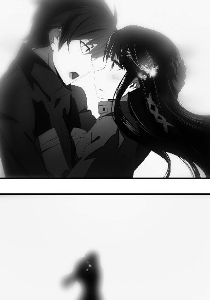
［17］
妖魔の本体を視認する知覚を持たないリーナにも、ソレの滅びる様が感じ取れた。停止──凍結し、砕け散る「情報」の塊。情報次元における想子情報体を操作できることが魔法師の条件であるならば、最高レベルの魔法師である「シリウス」が本体の崩壊と共に撒き散らされた大量の想子に気づかないはずはなかった。
「ルーナ・マジック......？」
そして自身では精神に干渉する魔法を使えなくても、引き起こされた結果から使われた魔法を推測する事も、リーナの魔法感受性を以てすれば可能だ。
月の魔法は、英語圏の魔法師が精神干渉系統の魔法の中でも特に精神を攻撃する、精神に直接ダメージを与える魔法を指して言う名称で、系統外魔法の中で最も有名な魔法の一つである精神攻撃魔法「ルナ・ストライク」に由来する名前だ。
ルナ・ストライクは精神干渉系の系統外魔法には珍しくプロセスが定式化されている魔法であり、スターズの「一等星」クラスはこの魔法を使う魔法師と相対した時、これをどう防ぐか、その対処法を修得する目的でルナ・ストライクの術式を学ぶ。
当然リーナも、ルナ・ストライクを何度も目にしており、その経験故に、初見のコキュートスをそのメカニズムは理解できずとも、精神に直接、致命的なダメージを与える魔法だと正しく推測した。
そして、それを繰り出したのが深雪であるということも。
「こんな強力なルーナ・マジックを......ミユキ、アナタ......いえ、アナタたち兄妹は一体」
地面にへたりこんだまま呆然と呟くリーナ。
決闘の時にこの魔法を使われていたら......という思考は、彼女の意識の中で明確な形にならなかった。今はまだ、大きすぎる驚きが彼女の心を占めていた。
実は深雪も、この時、似たような状態だった。
忘我の淵に半身を浸しながら、達也の胸に身体を預けている。こちらは久々に全力を振り絞った魔法の行使に加えて、初めて目にした達也の視界の、その情報量の多さに酔ってしまったのだろう。
険悪ムードだった二人が正気を失っている（？）この状態は、チャンスだった。達也は耳から通信機を外して、スイッチを切った。
「リーナ、今見たことは他言無用だ」
見下ろす視線、幾分低めた声、威圧する口調。
「な、なによ、いきなり......」
普段の彼女なら、こういう高圧的な物言いは逆効果だっただろう。だが達也が予想したとおり、リーナはいつもの彼女ではなかった。
大きなストレスに曝され、張り詰めた緊張の糸に過大な負荷が掛かっていたところに、当面の標的が消失し一種の虚脱状態に陥っていた。「説得」にはもってこいの状態だった。
「その代わり、アンジー・シリウスの正体について、沈黙を守ると誓おう。この誓約は俺と深雪だけでなく、今日この件に関わったこちら側の全員に適用される」
リーナからの答えは、中々返って来なかった。
見下ろす達也の目を、ジッと見返す青い瞳。その中に、徐々に、思考力が戻って来ているのが達也には見て取れた。
義務感。
猜疑心。
保身。
自己弁護。
様々な思惟がリーナの瞳を過ぎり、彼女の中で（心理学的な）合理化が図られている。達也には精神分析のノウハウも精神感応のスキルも無いのでそこまで明確に理解しているわけではなかったが、リーナが何とか自分を納得させようとしていることは直感的に分かった。
リーナの葛藤は、それほど長く続かなかった。
「......ワタシに拒否権は無いんでしょう？」
「そんなことはない」
諦念の滲むリーナのセリフを達也は否定した。だが、彼女が拒否した場合にどうなるか、彼は語らなかった。
猜疑は不安を育む。口にされなかった言葉、というより口にしなかったという行動が、リーナに対する最後の一押しになった。
「いいわよ......黙っていてもらえるなら、ワタシにとっても悪い話じゃないし。タツヤとミユキのことは黙ってる。......どうせ誰にも取り合ってもらえないだろうし」
最後のフレーズは口の中で呟かれたもので、達也には聞き取れなかった。聞き返すことも、達也はしなかった。
彼は、まだ足に力が入らない深雪の身体を横抱きに抱え上げ、いきなり我に返ってじたばたと腕の中で暴れ出した妹に「大人しくしていろ」と命じて、リーナに背を向けた。
背を向けただけで、歩き出さなかった。
不審に思ったリーナが達也に声を掛けようとした、その直前、
「リーナ」
逆に、達也がリーナの名前を呼んだ。
「まだ何かあるの？」
言葉面だけで判断すれば苛立っているようにも解釈できるセリフだったが、リーナの声は言葉ほど不機嫌ではなかった。
さっきまでの追い詰められていた雰囲気が、憑き物でも落ちたかのように消えていた。
「もしリーナがスターズを退役したければ......」
「えっ？」
「もし軍人であることを辞めたければ、力になれると思うぞ。いや、俺自身には大した力も無いが、力を貸してくれそうな知り合いに心当たりがある」
「タツヤ？ アナタ、何を言ってるの？」
リーナは「余計なお世話だ」と怒り出すことも「バカげたことを」と笑い飛ばすこともしなかった。
「ワタシは別に、スターズを抜けたいなんて......『シリウス』を辞めたいだなんて思ってないわよ」
ただ不思議そうに、そう答えた。
「そうか」
達也は振り返らぬまま、その答えに短い返事を返して、歩き始めた。
「待って、タツヤ！ 何故そんなことを訊くの!?」
大声で呼び止めるリーナへ、遂に振り返ることなく、
「悪かったな、変なことを言って」
それだけを言い残して、達也は遠離って行く。
彼に付き従う機械人形は、当たり前だが、リーナに見向きもしない。
ただ達也に抱き上げられた深雪だけが、兄の肩越しに、気遣わしげな眼差しをリーナへ送っていた。
◇ ◇ ◇
達也の姿が夜の木陰の闇に消えて、リーナはハッと我に返った。
自分が身動ぎもせず達也の後ろ姿を見詰めていたことに気がついて、慌てて地べたから立ち上がる。
何故、自分の瞳は達也の背中を追いかけていたのか......そんな思いが脳裏に浮かんで、リーナは勢い良く頭を振った。
（タツヤが変なことを言うからよ。そうに決まってる）
意識するまでは、本当に目で後ろ姿を追っていただけだった。
それが、自分の行動を自覚した途端、鼓動の加速と頰の加熱を自覚した。
実のところこれは、単に自分の思考に引きずられただけの「勘違い」なのだが、ある種の自縄自縛に陥っているリーナに、そのような自分を客観化した冷静な分析ができるはずもなかった。今の彼女は、吊り橋効果と類似した心理状態に囚われているのだった。
在りもしない「恋心」から意識を逸らす為に、リーナは何でもいいから別のことを考えようとした。その結果、自然と思考が直近の疑問に吸い寄せられる。
達也の不可解な提案。
彼は何故あんな事を言ったのだろうと、リーナは改めて首を捻った。
魔物に侵された同胞を処分する自分の顔が、自分の姿が、辛そうに見えたのだろうか。
だとしたら、とんだ誤解だ、とリーナは思った。
確かに「身内」へ銃を向けるのは、胸が痛む。
（......だけど、魔物になって生きるよりは、安らかな眠りを与えてやる方が）
リーナはその方が慈悲深いと考えている。本人の救いになると信じている。
人間の、魂の尊厳は、それほどに尊いものだと彼女は教わってきたからだ。
──確かに辛い仕事だが、誰かがやらなければならない務めだ。
──自分はそこから逃げ出すつもりは無い。
──強い魔法力を持つ魔法師が魔道に落ちたなら、それを討伐する仕事は最強の魔法師たるシリウス、つまり、自分にしかできないのだから......。
（......自分にしか？）
しかし、思い掛けないところでリーナの思考は躓いた。
新たな犠牲者を出すことなく、正気を失った魔法師を処分する。その任務は、確かに、最強の魔法師である彼女が最も適していた。
その事に疑いは無かった──今までは。
今は、必ずしもそうでないことを知っている。
彼女がやらなくても、あの二人がやってくれる。
彼女が辛い思いをしなくても、同胞殺しの罪悪感に苦しまなくても、異邦人であるあの二人が──
（そうか......だからワタシ、迷って、焦ってたんだ）
この一ヶ月近く、頭の中にずっと居座っていたモヤモヤが、急に晴れたような気がした。
自分がやらなくても、誰かがやってくれる。
それはリーナにとって、思いもよらない発見だった。
決まっていると思っていた、変えられないと思っていた未来が、実は選べるものだと分かった。ずっと一本だと思っていた道が、目の前で急に枝分かれした──例えて言うなら、そんな、期待と不安。
一つの迷いからようやく抜け出したばかりだというのに、リーナの意識はすっかり混乱していた。
◇ ◇ ◇
達也が向かっていた先は、パラサイトの封印に成功した二体を転がして置いた場所だ。しかしそこには既に先客がいた。
二つのグループが向かい合っていた。
一方は積み重ねた歳月を表す深い皺を刻みながらもピンと姿勢の伸びた老人に率いられた黒服の一団。
もう一方は豪奢な黒のワンピースに身を包む可憐な少女に率いられた、やはり黒服の一団。
向かい合っているといっても、敵対的に睨み合っているわけではなかった。少なくとも少女に率いられた一団は、老人に率いられた一団に対して敵意を見せていない。それはおそらく、彼らの主である少女が、老人に敵対の意思を持っていないからだった。
少女が老人を見る眼差しには、むしろ敬意が込められていた。──少なくとも、表に出ている限りでは。
「九島閣下、お目にかかれまして光栄に存じます」
少女は老人の前に進み出ると、優雅に見える仕草で膝を折った。ただし、優雅ではあっても貞淑なイメージは無かった。貞淑と評価するには、瞳に宿る光が強すぎた。
「わたくしは黒羽亜夜子と申します。四葉の末席に連なり、当主・真夜の使いを務めさせていただいている者ですわ」
下げていた頭を上げて、亜夜子はニッコリと微笑んだ。
挑発的でありながら、引き込まれるような妖しい笑み。
だがさすがに、九島烈は動じることが無かった。
「四葉殿の代理の方か。道理でその若さにもかかわらずしっかりしている。私のことは知っているようだね。それとも名乗った方が良いかな？」
親しい──仲が良い、という意味ではない──者の前では「真夜」と呼ぶ九島だったが、公的には同列・対等な十師族の当主だ。「四葉殿」という言い方は、孫のような年齢の亜夜子を今この場で対等の「敵対者」として見ていることの表明でもあった。
「いえ、そのように畏れ多いことは申しません」
九島の目には意図に相応しい眼光が宿っている。だがそれを前にしても、亜夜子の可憐でありながら同時に不敵な態度は、崩れなかった。
「ところで閣下、余り時間的な余裕も無いことですし、一つご相談したいことがあるのですけれども」
性急、と評すべき態度だったが、九島老人は特に不快感の類を示さなかった。時間が無いとまでは思っていなかったが、手早く作業を終えたいという思いは彼も同じだったからだ。
「言ってみなさい」
「ありがとうございます」
鷹揚に頷いた老人にもう一度、芝居がかった仕草でお辞儀をして、亜夜子は真っ直ぐに老人の目を見上げた。
「畏れながら、閣下のご意向はここに封じられたパラサイトと呼ばれる魔物を持ち帰ることにお有りかと存じますが、実を申しますとわたくしが当主より申しつかって参りました用件も封印済みのパラサイトを持ち帰ることなのです」
「ほう」
九島の目に宿る眼光が強さと鋭さを増した。
その光をまともに浴びた亜夜子がわずかに怯んだ顔を見せたが、その表情はすぐに強気な笑みで塗りつぶされた。
「──幸いこの場に、封印済みの器が二つ。ここは閣下とわたくしで一つずつ、ということで如何でしょうか？」
亜夜子が強気な笑みを維持したまま、老人の眼光を正面から受け止め、答えを待つ。
不意に九島が笑い出した。
声を上げて、楽しそうに。
「いやはや......大したものだ。君は確か、まだ中学生だったはずだが」
亜夜子は自分の年齢を九島に告げていない。彼のこのセリフは、亜夜子が名乗る前から、老人が彼女のことを調査済みだったと言外に告げている。
しかし今度は、亜夜子に動揺した気配は無い。九島烈が自分のことを含めて四葉の手駒を調べ上げていても不思議は無い、という程度の心構えは彼女にもできていた。
九島烈がこの場に出て来ることを自分が知っていたのだから、その程度のことを知られていないとすればむしろ不思議で不自然だった。
「よかろう。ここは仲良く、一つずつと行こうではないか」
「ありがとうございます、閣下」
表情を変えず、内心で亜夜子はホッと胸を撫で下ろした。
彼女は自分の魔法力を過大に評価していない。亜夜子は達也のように特定の魔法しか使えないというわけではないが、深雪のように万能型というわけでもない。むしろ得手不得手がハッキリ分かれるタイプの魔法師だ。そして彼女は、近距離直接戦闘の魔法が余り得意ではない。かつて「世界最巧」と呼ばれた魔法師と正面からやり合って、自分に勝ち目があるとは考えていなかった。
獲物が二つ転がっていた偶然に、亜夜子は無言の感謝を捧げた。
そして──
（達也さん、お陰様で無事に任務を達成できそうです）
達也が協力を受諾した事実もなければ、それ以前に協力要請すらしていないにも関わらず、亜夜子はチャッカリ、心の中でそう呟いた。
◇ ◇ ◇
達也の腕の中で、深雪は身を固くして小さくなっていた。
彼女がいくら懇願しても、今日に限って達也は妹を腕の中から放そうとしない。深雪は女性として特に小柄というわけではなく、体重だってそれなりだ。いくら達也が鍛えているからといってもずっと抱えていれば重くないはずはないのだが、深雪の身体を抱き支える達也の腕は小揺るぎもしない。それどころか、凹凸の激しい山林の地面にも関わらず深雪に揺れを感じさせない程、丁寧に彼女を抱いていた。
普段の行動・言動からすれば、深雪の方から積極的にスキンシップを図る方が自然に思われる、かもしれない。ところが深雪は、達也の首にしがみつくことすらせず、自分の胸の前で両手をギュッと握って羞恥に耐えているだけだった。
沈黙が、苦しかった。
辛い、ではなく、胸が苦しい。
このままでは息が止まって、心臓が破裂してしまいそうだ──他人から見れば「何を大袈裟な」と呆れるに違いなかったが、深雪本人は相当切羽詰まっていて「何か話題を」と熱に浮かされた頭で必死に考えていた。
「お兄様、リーナは」
その結果、出て来たテーマがこれだった。
達也はリーナを、並々ならず気に掛けている。少なくとも、ただの友人に対する気遣いの域を超えて。
それが分かっているから、本音の部分では兄の前でリーナの話題は、余り出したくないと深雪は思っている。
しかし今は、すぐに思いつく話題がそれ以外に無かった。
「うん？」
「リーナは......お兄様の仰ったことを、キチンと受け止めてくれるでしょうか？」
それに今は、深雪もリーナのことが気になっていた。
「分からないな。俺に分かるはずがない。俺は彼女じゃないからな」
達也の口調に何処か自嘲の響きが垣間見えるのは、余計なお節介だったと感じているからだろうか。
もちろん深雪は兄の言葉が単なるお節介ではないと知っている。深雪の目から見ても、善良で直情的なリーナは軍人に向いていない。彼女が気に掛けることではないのかもしれないが、リーナを見ていると非常に危うく感じるのだ。
「リーナにはリーナの事情があるんだろう。自分のことを自分の思い通りにできないのは、何も彼女に限った話じゃない」
「それでもお兄様は手を差し伸べられたのですよね......？ 何故なのですか」
「何故、とは？」
いきなり思っても見なかった方向に話が転がりかけているのを深雪は自覚した。立ち止まるなら今しかない、ということも。
だが、深雪は止まらなかった。
「お兄様は......何故リーナを助けようとなさるのですか？ リーナに......特別な感情を持たれているからなのですか？」
妹の言葉を聞いて達也は目を丸くしたが、それは本当に一瞬のことだった。
「色々と誤解があるようだが......」
達也は苦笑しているような雰囲気を漂わせている。だがその表情は真面目なものだった。少なくとも妹の疑問に、誠実に回答しようとしているようだった。
「リーナだけを、と深雪は言うが、リーナのような立場の人間と交流を持ったのはこれが初めてだ。今まで軍の人間といえば、自分よりずっと年上で、職業として軍人の道を選んだ人たちばかりだったからね」
一つずつ、丁寧に誤解を解いていく。
「俺がリーナに懐いている感情は、お前が思っているような種類のものじゃない。身も蓋もない言い方をすると、リーナにスターズを抜けてもらった方が将来的に都合が良いと考えているだけだよ。できれば軍を抜けるだけじゃなくて、こっちに移住して欲しい。日本に帰化してくれればベストだな」
達也の言葉に、噓は感じられなかった。こうしてゼロの距離でお互いを感じているのだ。兄の言葉に少しでも偽りがあれば、深雪にはそれを見抜く自信があった。
「もちろん、同情していないわけじゃないぞ。ある意味で、俺とリーナは良く似ている。同じカテゴリーに属する、と表現した方が良いのかな」
達也の目が、彼方へ向いた。
「俺もリーナも『今の立場』に置かれるにあたり、事実上、選択肢が無かった。一高生になったのは俺がもぎ取った『選択』と言えないこともないが、リーナには多分、そんな些細な選択肢も無かったと思う」
眼差しは依然として深雪に注がれていたが、焦点がもっと遠くへ結ばれていた。
「俺はいずれ、与えられていない選択肢を作り出し選び取る。割り当てられた『役』を捨てて、与えられた舞台から飛び出す。もしリーナが同じ事を望むなら、同類の誼で力になってやろう、と思ったんだが......」
言い淀んだ達也は、深雪に目の焦点を戻してバツの悪そうな笑みを浮かべた。
「どうやら、余計なお世話だったよう、だ？」
達也の口調の乱れには、ちゃんと訳があった。
今まで彼の腕の中で縮こまっていた深雪が、彼の首に腕を回して、息が詰まるほどの力でギュッと抱きついていた。
達也は思わず、妹を抱き支えていた手を放してしまった。
だからといってドスンと落とすような真似はせず、深雪の身体をそっと足から下ろしたのは、身体にすり込まれた無意識の技か。
地面に足をつけても、首に回された深雪の腕は離れなかった。
「余計なお世話なんかじゃありません......。お兄様のお心遣いは、いつかきっと、いいえ、遠くない未来に、リーナの心へ届くに違いありません」
達也は自分の胸の中で紡がれる妹の言葉が、直接自分の胸に染み込んでいるのを感じた。
「だってリーナは、この度の一件で今の自分に疑いを持ったに違いありませんもの。少し単純ですけど、リーナは賢い子です。お兄様とこれほど深く関わって、何の疑問も懐かないということはあり得ません」
「単純はひどいな」
深雪が顔を上げ、達也がその両肩に手を移す。
兄妹はクスッと笑い合って、仲良く並んで歩き始めた。
──機械でありながら、と言うべきか、機械ならでは、と言うべきか、空気を読んで（？）文字通りの置物と化していたピクシーが、黙ってその後に続いた。
◇ ◇ ◇
兄妹のほのぼのとした空気も、これを見てはさすがに変わらざるを得なかった。
最初にパラサイトを封印した場所は、もぬけの殻だった。封印したパラサイト二体は、何者かに持ち去られていた。
『すみません、達也さん......目を離したつもりはなかったんですが』
『......達也さん、申し訳ありません』
『達也、柴田さんと光井さんを責めないで欲しい。二人が気を抜いたわけじゃないのは、僕が保証するよ。封印済みの「器」が持ち去られたのに、僕も気づかなかったんだ。僕の封印なのに......』
「三人とも、そんなに自分を責めるな。俺は全く、気にしていない」
通信機から聞こえてきた、すっかり気落ちした声と、自己嫌悪に浸り掛けている声と、口惜しさに歯がみしそうな声に、達也は努めて明るい声で答えを返した。
『達也さん......』
何やら感激した声が返ってきたのは、多分、誤解しているのだろう。達也の態度は相手を思い遣っての演技ではなく、本当に、大して気にしていないだけなのだ。
......さすがに、呆れてはいたが。
「鳶に油揚げをさらわれた格好だけど、今回は相手の方が一枚上手だったというだけのことだ。元々捕まえた後のことはそれほど深く考えていなかったのだし、いつまでも拘っているべきことじゃない」
達也の言葉通り、「捕まえた後でどうするか」について、彼らは具体的なプランを立てていなかった。漠然と「幹比古の実家に任せれば良いか」と考えていただけであり、封印したパラサイトの利用方法など全く頭に無かった。
そういう意味では、彼らに持って行かれた方が有効活用のような気もする。彼らなら、うっかりパラサイトを逃がしてしまう等という間抜けな真似もしないだろうし。
（しかし、まあ......狙っていたのかね？）
「お兄様？」
黙り込んでしまった理由を勘違いしたのだろう。気遣わしげに問い掛けてくる深雪に、達也は何でも無いと手を振った。
達也の様子から、犯人の見当は付いていると深雪は理解していた。おそらく情報遡及の力を使って犯人を突き止めたのだろうと彼女は考えていた。
──確かに達也は「視力」も使っていた。その結果ここで何があったのか、彼は大凡のところを把握している。
しかしそれ以前に、ここには「犯人」の片方から達也へ向けてメッセージが残されていた。彼が脱力していたのは、主にその所為だ。
一陣の風が吹き抜け、土に還らず形を残していた枯れ葉を巻き上げた。
その中に黒い、おそらくは鴉のものであろう羽が混じっているのを、夜目の利く達也の両眼は捉えていた。
◇ ◇ ◇
達也がエリカ・レオのコンビと合流した時には、修次も抜刀隊も撤収済みだった。
彼らはお互いを労い、何があったのか互いに深く詮索すること無く、帰途についた。
ピクシーはそのまま、学校のガレージに置いてきた。
校内に入る為、一旦フェンスを跳び越えてから、改めて正門に回るという手間を掛けなければならなかったが、エリカもレオも「面倒臭いから帰る」とは言わなかった。
幹比古たちと合流した四人は、七人のグループになってゾロゾロと学校を後にした。
この時間にこの人数、校門を出る際、さすがに守衛から不審を向けられたが、この時間でなければ実践できない儀式魔法の実験、というあらかじめ用意しておいた言い訳と、女性陣のまぶしい笑顔の威光で、特に問い詰められることなく脱出に成功した。
こうして、一つの長い夜が終わりを告げた。
今夜の出来事が、人と、魔と、魔物が、人の世の陰で争う暗闘の歴史の新たな幕開けになったと、この時の達也にはまだ知る由もなかった。
［エピローグ］
風に乗って楽しげなざわめきが聞こえてくる。第一高校の校内は喜びの声に満たされていた。
耳を澄ませばその中に混じる泣き声も聞き取ることが可能だったが、それは決して不幸な出来事の故ではない。
対照的に、カフェテリアは閑散としていた。まばらな人影は、両手の指に満たない数だった。
別に、今が授業中でここにいる生徒がサボっている、というわけではない。
今日は、卒業式だったのだ。
達也は紙コップではなくちゃんとセラミックのカップに入れられたコーヒーを一口含み、カップをソーサーではなく直接テーブルに置いた（ソーサーは最初からついていなかった）。
そうして、魔法師の間では余り使われることのない多目的腕時計に目を落とす。
式自体は既に終わっている時間だ。
あの声は、式が終わって校庭に出て来た卒業生たちのものだろう、と達也は推測した。
この後、二つの小体育館を使ってパーティが開かれることになっている。こんな時まで一科生と二科生を分けるのは嫌らしい気もするが、多分その方が当人たちも気楽で良いのだろう。
正しいことが常に最適なこととは限らないのだ。二科生は一科生が一緒だと変に萎縮してしまうだろうし、一科生は二科生を（主に魔法大学への進学率の点で）気にして存分に騒げなくなるかもしれない。二つの会場で料理にも飲み物にもその他の面でも差は無いのだから、正しさに拘る必要がある場面ではないだろう、と達也も思っている。
ただ会場を分けている所為で、しなくてもいい苦労をしている人間も確かにいる。会場の設営に当たった業者や料理を提供する学食のスタッフは、会場が二つになっている分、追加で報酬を得るのだから「余分な」苦労とは言わないだろうが、例えば卒業パーティを主催している生徒会は、余分な苦労を強いられている人間として真っ先に名前が挙げられる口だった。
もうお分かりのことだろう。
達也は、卒業パーティの当日の運営で大忙しの深雪を待っているのだった。
誤解の無いよう言い添えておくが、彼も準備や運営を「手伝おうか？」と申し出たのである。それも、結構繰り返し。
あずさなどは、あからさまに、手伝って欲しそうにしていた。
だが深雪が断固として、達也の手助けを拒んだのである。
『こんなことでお兄様の御手を煩わせるわけには参りません！』
と一歩も引かない勢いで言われては、あずさもすごすごと引き下がるしかなかった。
まあ、妹の過剰な思いやり（？）を抜きにしても、達也の存在は多くの一科生にとって、そして少なくない二科生にとって、複雑で微妙なものである。
一科生と二科生を隔ててきた物差しそのものに疑問を投げ掛ける能力と実績の持ち主。
三年生にとっては、最後の年にいきなり投げ込まれた波乱の種だ。出しゃばらないのが正解だったのだろう。
もっとも、最終的に彼が今日のパーティを手伝わないことが決まった時に、達也がそれとなく「これで良かった」みたいなことを口にした時、偶々（？）その場にいた真由美は何故か大層ご立腹だったが。
その真由美は無事、魔法大学に合格した。彼女の実力と実績ならば当然とも思われるが、あの夜以来パッタリと「吸血鬼」の被害が途絶えたことも、余計な気掛かり無く受験に専念できたという意味でプラスに働いたに違いなかった。
彼女はこの四月から、同じく順当に合格した鈴音や克人と共に魔法大学で学ぶことになる。
摩利は魔法大学を受験しなかった。彼女は防衛大学校に進学することになった。理由は言うまでもない。ただこのことは直前まで真由美も知らなかったようで、達也も一度、真由美が摩利を散々冷やかしている──多分、その裏で寂しがっている──場面を目にしている。
魔法大学と防衛大学校はそれほど離れているわけでもないし、会おうと思えばいつでも会えるのだが、同じ大学へ進学すると思っていた親友が──二人は親友という言葉で括られるのを嫌がるかもしれないが、周りの人間にとっては今更だった──別の学校に進むとなれば、やはり平気ではいられないのだろう。
防衛大に進む、と言えば──
「司波」
そう考えた達也に、声が掛けられた。
「小早川先輩、もうパーティが始まる時間では？」
相手は、彼が思い浮かべた当人だった。
「ああ、まあそうだけど、君がここにいるって摩利に聞いたものでね」
九校戦で事故を起こした小早川の魔法技能は、懸命のリハビリにも関わらず結局、回復しなかった。魔法感受性は損なわれていなかったが、魔法を使うこと、「魔法が使える」ということに対する猜疑心を取り除けなかった。
小早川は十月の時点で退学を決意していたらしい。
しかし残り半年では、文科高校や理科高校に転校するにしても、進学の準備期間としては明らかに足りない。彼女は、転校し、一年浪人して、新たな進路を探すつもりだったようだ。
「俺に何か？」
「ああ、その、何だ......面と向かうとやはり言いにくいな......。いや、要するにだ。君に......お礼を言いたくてね」
恥ずかしそうに顔を赤らめた小早川に、達也は割と本気で首を傾げた。
「小早川先輩から御礼を受け取るようなことはしていませんが」
「そんなことはない！」
人気の少ないカフェテリアに、小早川の張り上げた声は良く響いた。本人にとっても思い掛けないことだった様子で、首を竦めながら一層赤面した顔でボソボソと続けた。
「魔法が使えなくても魔法に関する知識と感受性を活かす道がある、というあのアドバイスは君のものだったんだろう？」
達也は一瞬、顔を顰めそうになったが、小早川の心情を考えて嫌そうな顔を堪えた。
「渡辺先輩が喋ってしまわれたんですか......」
それでも、呆れ声まで隠すことはできなかったが。
「そう言わないでくれ。あたしが摩利から無理やり聞き出したんだよ」
「渡辺先輩にはご自分のアイデアだということにしておいてくれるように、言ってあったんですが」
小早川のことは、摩利も真由美も、九校戦の代表に選ばれた三年生女子全員が悩んでいた。中でも同じように事故を起こして辛うじて事なきを得た摩利にとっては、到底他人事とは思えなかったようだ。小早川の事故に端を発して十月に平河千秋が事件を起こしたことも、摩利の悩みに拍車を掛けた。
その事件の後、摩利は達也に愚痴をこぼしたことがある。彼の責任ではないと分かっているが、との前置きがついていたが、彼女の愚痴を要約すれば「小早川の事故は本当に防止できなかったのか」という趣旨のものだった。
達也はその疑問に対する答えを持っていた。
答えは「できない」である。
彼は全知全能ではない。いや、この際「全能」は度外視するとしても、「全知」には程遠い。彼の注意力は深雪と自分と自分の担当範囲をカバーするのが精一杯で、他に目を配っている余裕は無かった。それは他のメンバーも同じで、小早川本人と彼女のＣＡＤを担当していた平河小春（平河姉妹の姉の方）が細工に気づかなかったのだから、他の誰も気づきようはなかった。
しかし、そう冷たく切り捨てるのも気が引ける場面だった。だから達也は、仮定の話として別の道を示唆したのである。
彼は、魔法を作戦に組み込む際に魔法のことが分かっている作戦スタッフが不足している、という話を藤林から何度か聞かされていた。魔法技能の持ち主はその絶対的な数の不足から常に前線へ回され、必然的に後方で作戦を管理するスタッフは魔法のことを机上でしか知らない非魔法師ばかりになっているのが実情だと。
何らかの理由で魔法を使えなくなった優秀な魔法師が作戦スタッフに加わってくれたら、前線の魔法師は今よりずっと動きやすくなるのに、と前線・後方の兼務を余儀なくされている藤林は達也に向かって愚痴っていた。その話を、固有名詞を使わずに摩利に聞かせたのである。
「そうらしいな。だが摩利は、余り隠す気は無かったようだぞ」
「全く、あの人は......」
「あたしも、話してくれて嬉しかった」
達也が忌々しげにこぼしたセリフを、小早川の真摯な声が遮った。
「自分では意識していなかったけど、あの言葉を聞くまで、あたしは自分に絶望していた。負けるもんか、と強がっていたけど、そう思っていること自体が、既に負けてしまっている自分を誤魔化す為のものだった」
小早川の目が潤んでいたのは、当時の自分を思い出したからか。だがそこに、弱気や自虐は無かった。
「だけど摩利からさっきの話を聞いて、あたしは本当に目の前が開けた気がしたんだ。自分の進むべき道はこれだと思った。それはあたし一人にとどまるものじゃなくて、あたしと同じように魔法師の道を絶たれた魔法科高校生にとっての希望になると思った。あの土壇場で進路をいきなり変えて、たった半年で合格できるまで頑張れたのは、その思いがあったからだと思う」
小早川の顔が再び赤く染まっているのは、口にするには恥ずかしいセリフだと思っているからに違いなかった。
達也は別に、恥ずかしいセリフを聞いているとは感じなかったのだが。
「だから、司波、いいえ、司波君、ありがとうございます」
口調を丁寧なものに変えて深々と一礼する小早川。
これを前にして座ったままでいられるほど、達也も図太くはない。
椅子から立ち上がり、踵を鳴らして足を揃えた。
いきなり鳴り響いた靴音に驚いて顔を上げた小早川だけでなく、カフェにいた少数の生徒全員の視線を集めていたが、達也はそれを特に意識することもなく無視して、小早川に独立魔装大隊で叩き込まれた敬礼を送った。
「司波君......」
「小早川先輩。月並みですが、頑張ってください」
敬礼を解いて、達也は照れもせず、笑いもせず、そう言った。
小早川の目に再び涙が浮かびかけたが、彼女は泣き出さずに、微笑んで頷いた。
「先輩、パーティが始まっていますよ」
「そうだな。じゃあ、これで。君も頑張ってくれ」
小走りに去って行く小早川を見送って、達也は腰を下ろした。
ぬるくなったコーヒーも、不思議と不味くは感じなかった。
◇ ◇ ◇
「お兄様、お待たせしました」
弾む息の中から掛けられた声に、達也は携帯情報端末で作成中の草稿から目を離して顔を上げた。
「達也くん、何を書いていたの？」
顔を上げた彼に声を掛けてきたのは深雪ではなく、卒業証書の入った筒──こういう物は、やはり紙が使われている──を胸に抱えるように持ってニコニコ笑っている真由美だった。
「魔法の持続時間を引き延ばすシステム的なアシストに関する、チョッとした覚え書きです」
「......いや、そんな何でもないことのように流してしまうテーマじゃないと思うんだが」
呆れ顔でこちらを見る摩利に、達也は何事か言い掛けて、軽く肩を竦めるに止めた。反射的に小早川の件で嫌みを言ってやろうかとも彼は思ったのだが、今日は彼女たちが主役のめでたい日だ。そう思い直してつまらない真似は自粛したのである。
「それより皆さんお揃いでどうしたんですか？ 七草先輩にしても渡辺先輩にしても、二次会のお誘いが無かったとは思えませんが」
達也の言葉に顔を見合わせた女子生徒たちの背後から、克人がぬっと顔を出した。
「その前に、お前に挨拶しておこうと思ってな」
「......恐縮です。わざわざお運びいただかなくても、後ほど俺の方からご挨拶にうかがうつもりでしたが」
「あら、そうなの？ パーティの間中こんな所に引っ込んでいる達也くんのことだから、知らん顔して帰っちゃうかと思ったんだけど」
拗ねた顔全開で嫌みを言う真由美に、それが演技だと分かっていても、言い訳しなければ、という気持ちに達也はさせられた。
「生徒会役員でもない俺が卒業パーティに顔は出せないでしょう。まして、一科生の方のパーティには」
「何でよ！」
建前論を振りかざした達也の弁明に、いきなり本気で突っ掛かってきたセリフがあった。卒業生をかき分けて、まぶしい金色の頭が達也の前に現れた。
「どうして正規の生徒会役員でもないワタシがパーティの手伝いをさせられて、風紀委員のタツヤが何もしないで良くなるのよ!?」
達也に食って掛かったのは、ちゃっかり人手に数えられていたリーナだった。
「......風紀委員は生徒会役員じゃないぞ。それに、臨時であってもリーナは生徒会役員じゃないか」
「納得できないわ！」
卒業生の目もリーナには大して気にならないのだろう。困惑する真由美たちを前に、リーナは何時ものとおり憤っていた。
「ちょっとリーナ、お兄様に失礼なことを言わないで」
そして、そんな彼女に立ち向かった（？）のは、何時ものとおり深雪の兄思いな言葉だった。いや、深雪の「何時ものとおり兄思い」な言葉だった、と言うべきか。
「貴女が臨時生徒会役員なのもお兄様が風紀委員でいらっしゃるのも、卒業パーティの準備が始まる前から決まっていたことじゃないの。第一、今更何を不満じみたことを言っているの。あんなにノリノリだったじゃない」
何が「ノリノリ」だったのか達也には分からないが、リーナが真っ赤になったところを見ると人目を集めることだったに違いない。
「深雪、ノリノリって？」
ここで「何があったかあえて訊かない」という選択肢は、達也には無かった。
「タツヤ、何でもないわよ！」
「臨時の役員であるリーナに、余り手間が掛かる類の準備をやってもらうのはさすがに気の毒でしたので、当日の余興を担当してもらったのですが......」
「ミユキ！」
「余興と言っても、自分で何かをするというのではなく、在校生や卒業生の方々から希望者を募るだけで良かったのですが」
「ミユキ、言わないで！」
「リーナはどうやら勘違いしたようで」
「ミユキ、お願い！ 言っちゃダメ！」
リーナは必死に深雪の言葉を遮ろうとしていたが、面白がっている真由美と摩利が、彼女の動きを巧みにブロックしていた。
「それで？」
深雪はあまりに必死なリーナの声にチラッと彼女の方を見たが、達也に促されるとあっさり視線を兄へ戻した。
「自分でバンドを率いてステージに上がったんです。立て続けに十曲くらい歌って、すごく盛り上がって」
「うん、中々見事なステージだった。プロ顔負けだったな」
深雪の説明に、摩利が何度も頷くと、
「本当。シールズさん、とっても歌が上手いのね。ステキな声だったわよ」
満更お世辞でも無さそうな口調で、真由美がリーナの歌を賞賛した。
「うっ......」
赤い顔で俯くリーナ。
怒っている顔ではなく、明らかに照れている顔で。
それを見て、達也は微笑ましい気持ちになった。
「そうか......良い思い出になったな、リーナ」
「......知らないわよ」
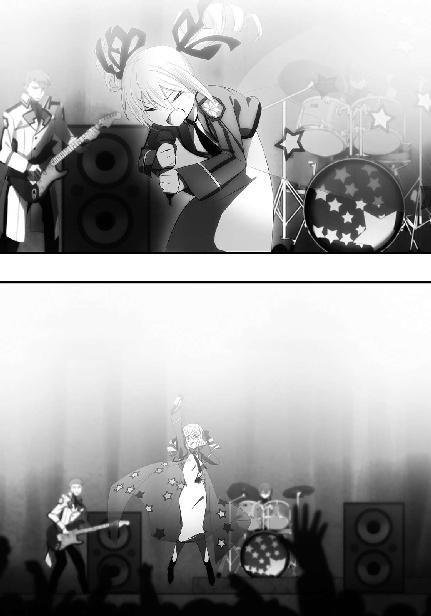
ぷいっ、とそっぽを向いた仕草に、彼女を除いた人数分の暖かな笑い声が上がった。
◇ ◇ ◇
（リーナを見たのはあれが最後だったな）
卒業式を最後に、リーナは学校に出て来なくなった。
深雪に訊いたところ、Ａ組では「帰国の準備で忙しい」という説明がされていた。
だが思うに、それ以前から撤収命令が出ていたのだろう。それでもあの日までリーナが登校を続けたのは、卒業パーティの準備という、高校生として割り当てられた役目を果たす為だったのではないだろうか。
もしそうであるなら、彼女も少しは高校生であることをエンジョイできたのだろう。
──到着便の遅延案内を見ながら、達也はそんなことを考えていた。
一昨日で三学期は終了した。
つまり、高校生活最初の一年が終了したということだ。
達也の成績は相変わらずだった。
理論科目の点数が極端に良く、
実技科目の点数がかなり悪い。
総合順位は中の下。
だがそれも気にならない。
この一年、様々なトラブルに巻き込まれ続けてきたが、着実に目標へ近づいている。
予想外にいい友人関係も築くことができた。
事件の連続というマイナス面を考慮しても、上々の一年だったと言えるだろう。
今日はその友人を出迎える為に、東京湾海上国際空港に来ていた。
もちろん、一人ではない。
彼の左右には深雪とほのかが、彼の前にはレオとエリカと幹比古と美月が座っている。
あと小一時間ほどで、雫を乗せた飛行機が到着する予定だった。
「でもやはり、アメリカ本土からですと時間が掛かりますね」
達也の左から深雪がそう話し掛けると、
「軍用機は四分の一以下の時間で太平洋を横断するそうですけど、民間機は何故こんなに時間が掛かるんでしょう？」
右隣から、ほのかが問い掛ける。
すると、
「エンジンが違うぜ。軍用機は大気圏外周まで上がるからな。民間機は安全性と経済性優先だ」
正面からレオが口を挿み、
「あら、良く知ってるのね。馬に蹴られる野蛮人のくせに」
エリカが茶々を入れる。
「んだとゴラァ」
「レオ、よしなよ」
「エリカちゃんもいちいち茶々入れないの」
そして幹比古と美月が苦労して仲裁に入るのも、まあ、いつものことだ。
その時、達也はロビーの人混みの中に見覚えのある金色の輝きを見つけた。
急に立ち上がった達也を、何事かと友人たちが見上げる。
続いて素早く立ち上がったのは深雪だった。
彼女も、わずかに遅れて、達也と同じものを見つけていた。
短く「少し外すぞ」と断りを入れて歩き出した達也に、深雪が続く。
慌ててほのかも立ち上がったが、何故か、正面に座っていたエリカにスプリングコートの裾を引っ張られた。
「ほのか、邪魔しちゃダメだよ。ライバルとのお別れなんだからさ」
行儀悪く背もたれに身体を預けて振り返ったエリカの視線の先には、
達也に見つかって逃げ出すのではなく、むしろ自分から彼ら兄妹の方へ歩いて来るリーナの姿があった。
「タツヤ、ミユキ、ワタシの見送りに来てくれたの？」
普通に声が届く距離まで近づいて、先に口を開いたのはリーナだった。
「まあな。ここで会えたのは偶然だが」
リーナは一時期の思い詰めた様子がすっかり消えて、飾らない気さくな笑みを浮かべている。ただ、完全に元通り、という感じはしなかった。来日したばかり頃には無かった、迷いの影が瞳の奥に見える。それが彼女を、わずかな期間で随分と大人っぽくなったように見せていた。
「あらっ？ 今日発つって言ってなかったかしら」
「聞いてないわね」
すっとぼけて嘯くリーナの戯れ言を、深雪が一刀両断する。
とはいえ深雪も気を悪くしているわけではなく、苦笑気味に笑みを浮かべていた。
「まあ、冗談はこのくらいにして、と。二人とも、お世話になったわね」
笑みをふてぶてしいものへと変えたリーナに、
「迷惑を掛けた、の間違いじゃないか」
達也はサラリと嫌みを返した。
「迷惑をこうむったのはこっちの方よ。......本当に最後まで容赦の無い人ね、タツヤ」
「手加減してもらって喜ぶリーナでもあるまいに......。それに、最後じゃないだろう？」
達也の問いに、リーナは肩を竦めた。
「どうかしら。ワタシがそんなに気安く本国を離れられるとは思えないんだけど」
リーナの声には、諦念が混じっていた。
しかし、それをかき消すように、
「でも、これが最後なんかじゃないわ」
深雪が強い意志を込めた言葉を挿んだ。
「ミユキ？」
「だからわたしは、さようならは言わないわよ、リーナ」
「......ミユキ、それって何だか、告白みたいよ？」
目を丸くして深雪を凝視していたリーナの顔が、悪戯っぽい笑顔に変わる。
「そうね、一種の告白かも。貴女は、わたしのライバルよ、リーナ」
深雪はそれに動じることなく、揺るぎない声で言い切った。
「貴女はきっと、お兄様が差し伸べられた手を取ることになるわ。貴女はきっと、お兄様の仲間になる。そこからがわたしたちの本当の勝負。だから、さようならは言わない。また会いましょう、リーナ」
リーナは、再び目を丸くした。そして今度は、柔らかな、彼女の髪と瞳の色に相応しいお日様のような笑みを浮かべた。
「アナタの言うことは、ワタシには良く理解できないのだけど......。ミユキ、きっとアナタの言うとおりになるって、今、ワタシも予感している。だから、また会いましょう、ミユキ、タツヤ」
「ただいま」
リーナがゲートに消えて一時間後、雫の第一声が、これだった。
「お帰り、雫」
潤んだ目で抱きつくほのかの背中をポンポンと叩いて宥め、雫は達也へ目を向けた。
「お帰り、雫。無事で何よりだ」
「うん」
短い受け答えは留学前と変わらなかったが、
「雫、雰囲気が変わったわね」
「そうだね、大人っぽくなった」
深雪とエリカが言うように、身に纏う雰囲気が随分大人びていた。
「なにかイケナイ体験でもしちゃったのかな？」
「エリカちゃん!?」
ニンマリと笑ったエリカのセリフに反応したのは美月で、当の雫は軽く小首を傾げるばかり。それ自体は以前と変わらぬ景色だったが、以前よりも余裕のようなものが強く感じられる。
「達也さん」
「うん？」
ほのかがようやく抱擁を解いて離れると、雫は達也の前に歩み寄って、彼の顔を見上げた。
「お話ししたいことがいっぱいある。レイからもたくさん伝言を預かってる。聞いてくれる？」
「良いよ。是非聞かせてくれ」
それは多分、彼女がアメリカで獲得した、多くの知識によるものだろう。
達也はそう思った。
◇ ◇ ◇
雫の話はかなり長いものだった。
それでも、全てを話し終えることはできなかった。
レイ──レイモンド・クラークの伝言は、他の友人たちの前で話せることではなかった。
（招待を受けざるを得ない、か......）
残った話をする為に、雫は達也と深雪を自分の家に招待した。大実業家、「北方潮」の私邸へ、他の友人を交えずに。
それは四葉にとっても、小さくない意味を持つものだった。
しかし、招待を受けないという選択肢は無い。彼女が持ち帰った情報は、これからの行動方針を決めるのに必要なものだ。
最初から決まっている結論を、自宅のリビングで達也は改めて確認した。
その時、呼び鈴が鳴った。
ドアホンに出た深雪があげた驚きの声が、達也の耳に届いた。
達也の前に姿を見せた深雪の顔には、驚愕と、焦りの色が浮かんでいた。
「あの、お兄様、お客様なのですが......」
「俺が出ようか？」
達也は、何か招かれざる客でも来たのか、と思って腰を上げかけたのだが──
「いえ、それには及びませんが......お客様は、四葉本家で会った、桜井水波ちゃんなんです」
「なに......？」
達也もその少女メイドのことは覚えていた。
桜井穂波。亡き母のガーディアンだった元警視庁ＳＰ。姉のように気安く、親身に、彼ら兄妹へ愛情を注いでくれた女性。三年前の夏、あの沖縄の戦いで、達也をかばって命を落とした調整体魔法師。彼ら兄妹にとって忘れられないその人に、そっくりな面立ちの少女。
それは達也にとっても、全く予期しない来訪者だった。
達也の隣には深雪、彼の前には春らしいパステルカラーのワンピースの少女。
彼女、桜井水波は丁寧に一礼した後、達也に一通の封書を手渡した。
達也は水波に座るよう言って、自身もソファに腰を下ろした。水波の見ている前で、その視線に促されて封を切り、中の手紙に目を通す。
読み進めて行くに連れて、口の中に幻覚の苦みが広がっていくのを達也は感じた。
差出人は、四葉真夜。
手紙には、決まり文句の季節の挨拶の後に、こう書かれていた。
『この春、水波ちゃんを第一高校へ入学させることになりました。
ついては達也さん、貴方たちのお家に水波ちゃんを住まわせてあげてくださいな。
彼女は一人前の家政婦として、既に十分な技能を持っています。
メイドロボを購入するくらいなのだから、家事をする手が必要なのでしょう？ 貴方も深雪さんも、高校二年生ともなれば色々と忙しくなるでしょうからね。
彼女には住み込みのメイドとして働くように言い含めてありますので、お家のことを気兼ねなく言いつけてください。
それから、水波ちゃんにはガーディアンとしての仕事も覚えてもらうつもりです。
先輩として、色々教えてあげてくださいね』
紙面から、叔母の高笑いが聞こえてきた、ような気がした。
達也が手紙を折り畳んで封筒に戻し、テーブルの上に置くと、その仕草に何かを感じたのか、深雪が「お兄様？」と気遣わしげに声を掛けた。
達也は一つ深呼吸して、深雪に手紙を渡した。
しばらくして、息を吞む音が深雪の喉から発せられた。
深雪が手紙から目を離すのを待っていたように、水波が向かい側で立ち上がった。
「未熟者ですが、よろしくお願いいたします。奥様のお言いつけどおり、精一杯務めさせていただきます」
深々と水波が頭を下げる。
彼女が真夜から打ち込まれた楔と分かっていても、穂波と同じ顔をした彼女を拒絶することは、達也にも深雪にもできなかった。
叔母の皮肉が効いた苦すぎる「贈り物」に、達也はポーカーフェイスを装って頷くことしかできなかった。
──四月から始まる新年度は、今まで以上に波乱に富んだものになる──
そんな、ありがたくない予感が、達也の胸に居座って消えようとはしなかった。
〔初年度の部 完〕
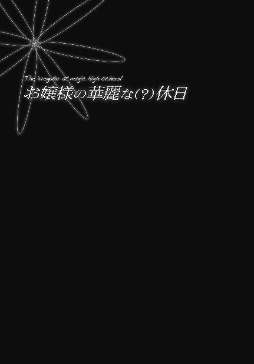
西暦二〇九五年十一月二日。国内は戦勝気分の浮かれたムードに包まれていた。
国防軍が秘密兵器により大亜連合艦隊を基地ごと殲滅した、と報道されたのが一昨日の夜のこと。北京がワシントンに講和の仲介を打診した、というスクープがお茶の間に流れたのは昨日の深夜だ。余りに速すぎる展開にスクープの信憑性を疑う意見もあったが、そういう冷静な判断力を保っていたのは国民のごく一部だった。
多くの国民が俄か軍事評論家になり、普段は政治に無関心な少年たちが学校で声高に外交と現実的国際政治力学を語り合う。
少女たちの呆れたような、迷惑そうな視線も、今回ばかりは抑止力になっていない。
それは何も、学校の中だけの話ではなかった。画面の中で無責任にはしゃいでいる芸能人にため息をついて、七草真由美はテレビのスイッチを切った。
時刻は現在午前十時。今日は平日であるからして、いつもであれば学校にいる時間だ。しかし横浜事変の当事者だった魔法科高校各校は昨日に引き続き休校となっており、第一高校も例外ではない。
年明けに受験を控えた身としては、学科はともかく今の時期に実習が休みになるのは心中複雑なものがあるはずだが、現場にいただけの当事者ではなく正真正銘の当事者だった真由美は良い休養と割り切っていた。──残念ながら、リラックスした気分にはなれなかったのだが。
『お嬢様、お寛ぎのところ失礼致します』
テレビを消したのが分かったのだろうか？
タイミングよくインターホンから聞こえていた家政婦の声に、偶然と知りつつ真由美はそんなことを考えた。
「今開けます」
答えて椅子から立ち上がる。本当はＨＡＲの音声認識インターフェイスに開錠を命じれば良いのだが、真由美は何となくそうせず、自分で歩いてドアを開けた。
ドアの向こうにいたのは彼女の身の周りを担当している家政婦だ。今尚幅広く支持されているサブカルチャーに染まった人間ならば、最初が「メ」で最後が「ド」の単語に「さん」をつけて呼ぶであろう制服を着ている。......まあ、スカートはふくらはぎ丈の長さだし、襟は首下まで覆っているし、背中が大きく開いているということもない、実用的な制服だが。
それにこの家では、この種の制服を着た家政婦の存在など少しも珍しくはない。今更違和感など覚えるはずもなく、
「何でしょうか」
真由美は二十代半ばの家政婦に問い掛けた。
「旦那様がお呼びです」
それを聞いて、真由美は微かに顔を顰めた。またか、と思ったのだ。
昨日も根掘り葉掘り事情を訊かれたばかりだというのに......そう心の中で愚痴っていた真由美は、次の一言に首を傾げた。
「応接間でお待ちになっていらっしゃいます」
首を傾げたといっても、それもまた心の中に秘めた仕草だったが。
──応接間？ 書斎じゃなくて？
それが真由美の懐いた疑問だった。
「お客様なの？」
「そのようです」
長い付き合いと言える程ではないが、ほぼ専属で世話を焼いてもらっている相手だ。今の短いやり取りで、彼女が客の素性を知らないということは分かった。
「すぐに着替えて参ります、と伝えてください」
「お召し変えをお手伝い致しましょうか？」
一拍考え込んで、真由美はすぐにピンと来た。今時のファッション事情を考えれば、一人で着られないドレスに袖を通す機会などそうそうあるはずもない。
「大丈夫よ。ちゃんとフォーマルな格好をしていきますから」
つまりは、そういうことを命じられているのだろう。案の定、真由美の答えに家政婦は、恭しくお辞儀をして引き下がった。
◇ ◇ ◇
柔らかな生地で仕立てられたワンピースの踝丈のスカートを、太腿の辺りで軽く持ち上げてレースで縁取られた裾を整え、真由美は応接間の扉をノックした。
「入りなさい」
部屋の中から聞こえて来た、ように聞こえる声は、扉の化粧板に内蔵された平面スピーカーが再生した父親の声だ。肉声とほとんど聞き分けられない精度で再現されたその声は、家族だから分かる余所行きのものだった。
どうやら今日のお客様は、余りざっくばらんに話せない相手のようだ。
「失礼します」
いつもの二割増しで淑女の仮面を装着し、トーンを下げた声で常套句を述べて、真由美はしずしずと入室した。
目を伏せたまま来客の顔を窺い見る。
父親の向かいに腰を下した男女は、どちらも彼女が見知った顔だった。それも、余り歓迎したくない類の知り合いだ。決して嫌いというわけではないのだが。
しかしそんな内心はおくびにも見せず、真由美はにこやかな笑顔で父親の隣に立つと、二人の客に向けて優雅に一礼した。
「いらっしゃいませ、洋史さん。澪さんはお久し振りですね」
彼女が声を掛ける前に、青年の方は立ち上がっていた。
だが少女のような外見の女性は、座ったままだ。そして、その事に眉を顰める者はいない。
表情を取り繕っているというのではなく、真由美も父親の弘一も、失礼だとは考えていない。
何故なら彼女、五輪澪が腰掛けているのはソファではなく車椅子だからだ。
しかし彼女の弟、五輪洋史は、失礼とは考えぬまでも後ろめたさを覚えているようで、答礼の口調は少し歯切れの悪いものだった。
「おじゃましています、真由美さん」
「どうぞ、お掛けになってください。澪さんもそのままでご遠慮なく」
「ありがとうございます、真由美さん。こちらこそご無沙汰しています」
むしろ本人の澪の方が開き直っている感じで、真由美の言葉にニッコリとあどけない笑みを返す。
洋史が腰を下すのに合わせてソファに浅く腰掛けながら、「この人は本当に自分より年上なのだろうか」と顔を合わせるたびに懐く疑問を真由美は今回も思い浮かべていた。
五輪澪が今年で二十六歳になった、というのは噓偽りの無い事実である。しかしこうして本人を視野に入れると、その事実を疑いたくなってしまう。
身長は真由美より一、二センチ低い程度だが、真由美と比べると身体つきがまるで違う。一言で表現すれば、未成熟。「女らしさ」が余りに乏しい。
実を言えば、彼女は足が動かないわけではない。極端な虚弱体質の為、長時間の歩行に身体が耐えられないのだ。
車椅子を使うようになったのは二十歳を過ぎた頃からのことだが、昔から身体が弱く十分な運動ができない為、食が細くその所為で栄養が不足するという悪循環。彼女の未成熟な体型はその結果だ。
胸の膨らみも服の上から見た限りほとんど無い。全く無いと言っても誇張にならない程だ。腰回りも少女のように細い。サイズだけ見れば、澪の体型はローティーンの少女に近い。
顔立ちも体型に合わせたように幼い。ルックス、スタイルを総合して、何となく「女性」に成り切れていない印象が彼女にはあった。
しかし、幼い外見はともかく、大学卒業後は外出もままならず大学院も特例によりほとんどオンラインで済ませていたという澪が、今日は一体何の用なのだろうか。「まさか洋史さんについて来たということは無いと思うけど」と真由美は内心で首を捻っていた。
「今日はお別れのご挨拶に参りましたの」
澪がそう切り出したのは、真由美の眼差しに宿っていた疑念を正確に汲み取って先回りしたのだろう。
「本宅へお帰りになられるのですか？」
見透かされた動揺を押し隠して──動揺する必要など全く無かったのだが──真由美はそう問い返した。
五輪家の本宅は愛媛県にあるのだが、澪は大学に通学する必要上で東京に出て来てから、そのまま東京の別宅で生活していた。彼女の大学院卒業と入れ替わるようにして弟の洋史が進学してきた為、そのまま一緒に暮らしていたのである。
「本宅にも戻るんですけど、その前に」
澪が言葉を切って形式的な、内心を隠す為の笑みを浮かべ、洋史はわずかな表情の変化ではあったが、不機嫌そうに眉を顰めた。
「出征することになりました」
「しゅっせい、って......戦争に行かれるんですか!?」
シュッセイという音を脳内で漢字変換して、真由美は思わず大声を上げてしまった。
「──失礼しました。しかし何故......」
自分の無作法を急いで詫びて、真由美は澪と父親に戸惑いの視線を向けた。
「公式発表は来週になるが、これは正式な決定だ」
答えは父親から返って来た。
「澪さんたちは一旦佐世保基地に向かい、そこから海軍に同行して海路、西に向かう。行き先は私たちにも明かされていないが、目的は大亜連合に講和条約締結を促す示威行動だ。......言うまでもないだろうが、正式に発表があるまで他言は無用だ」
「ええ、心得ております」
念を押す父親に、真由美は即、頷いた。もっとも、納得できたのは「他言無用」の部分だけだったが。
軍が澪を担ぎ出した理由は分かる。彼女は公式に認められている限り世界に十三人しかいない、隠れている、あるいは隠されている人数を合わせても五十人に満たないと言われている戦略級魔法師の一人。日本政府が公式に認定している、日本でただ一人の戦略級魔法の使い手。
彼女の戦略級魔法「深淵」の本領は海上兵力の迎撃にあるが、地上拠点攻撃用としても十分な破壊力を有している。彼女が同行しているというだけで、敵に多大なプレッシャーを与えることができるだろう。
しかしそういう理由付けも、今回は合理性に乏しいような気がしていた。横浜沿岸部に対する侵攻に端を発し、朝鮮半島南端に大破壊をもたらした今回の軍事行動は、十月三十一日の段階で事実上終結している。領土割譲に準じるような大きな成果を求めるのでもない限り、こちらからの逆侵攻は、戦略的に見れば最早不必要なのだ。そこまで徹底的にやる覚悟も無く健康面で不安が大きい澪を何週間も同行させるのは、メリットよりもデメリットの方が大きいと言わざるを得ない。
言葉で説明できるほど明確に意識しているわけではないが、真由美は概ねこのような違和感を覚えていたのである。
「僕も姉に同行します」
彼も似たような不満を抱いているのだろう。しかし政府が決定し、五輪家当主が受諾した以上、洋史にこれを覆すことはできない。彼は五輪家の次期当主と定められた身だが、今はまだ「次期」でしかなく、この段階で彼一人が異を唱えたところで事態は変わらない。それならばせめて自分がついて行って姉の手助けをしよう、という決意が洋史の顔に表れていた。
「本当は」
悲壮感を漂わせ始めた弟の気分を変えようと考えたのか、澪の口調が一転して冗談めかしたものになった。
「真由美さんが弟のお嫁さんになってくださる姿を見たかったんですけど」
雰囲気を変える効果は十分にあった。──ただし、意図したものとは逆方向に。
このセリフは直前の話題に続けてしまうと、俗に言う「死亡フラグ」のようで冗談として笑えなかった。
「姉さん......」
「......ごめんなさい」
深刻の度合いが増した空気の中、沈痛な声音で注意されて、澪はしゅんと萎れてしまう。
「ま、まあ、その話は、洋史君が戻って来てから改めて」
ホストとしての義務感からか弘一が早口でそうフォローすると、澪が弱々しいながら笑顔を取り戻し、洋史と真由美は表情の選択に窮した結果の無表情となった。
洋史と会ったのが「お久し振り」でなかった理由。澪が洋史について来たのではないかと真由美がチラッと考えた理由がこれだった。
洋史は真由美の婚約者候補の一人なのだ。いや、洋史は五輪家の総領だから、真由美が洋史の婚約者候補と言うべきかもしれない。同じ十師族直系で、年の近い男女、男の方が跡取りで女の方は跡目を継ぐ兄がいる長女、という好条件である。
実を言えば十文字家の克人も同じ条件で、弘一は洋史か克人のどちらかに真由美を嫁がせたい、と考えていた。（一条家の将輝は年下ということで除外されていた）
無論本人の意思もあるし、他にも無碍にできないお見合い話が舞い込んで来るので婚約という段階には至っていないが、洋史と真由美は五輪・七草両家のセッティングで何度も食事をしたり観劇したりの間柄なのである。──大人たちの思惑に反して当人は二人ともその気が無く、その所為で揃ってポーカーフェイスになってしまっているわけだが。
ただ、いつまでも「無言の行」では雰囲気が悪くなるばかりだ、ということは真由美も弁えていた。
「ところで、いつご出立に？」
そう水を向けてみると、ホッとした雰囲気を隠し切れずに漏らしながら──こういう脇の甘いところが真由美には不満だった──洋史が答えた。
「今週末に佐世保へ向かいます。出航は来週の金曜日と聞いています」
真由美の方はと言えば、不満に思ったことなど一厘一毛も覚らせない。
「それはまた、急なお話ですね......。どうかお気をつけください。無事のお戻りをお待ちしております」
非の打ちどころが無い猫の覆面で武装して、真由美は座ったまま深く腰を折った。
「ありがとうございます」
真由美は視線を自分の爪先に向けたまま、これでお役御免だろう、と考えていた。
「実は、出征に先立ち、真由美さんにもお力添えをいただきたく......」
だから洋史がこう言い出したのを聞いて、彼女は顔を上げるスピードを調節するのに少し苦労しなければならなかった。
「私に、ですか？」
言外に、「私にできることなんてありませんよ」という意思を込めながら、わざと少し子供っぽく首を傾げてみる。彼女の巌の様な同級生なら気にも留めないだろうし、大人びた──「生意気な」とも言う──下級生なら見透かして白けた眼差しを向けてくるような演技だが、洋史は動揺を隠し切れず目を泳がせていた。
「いえ、お力添えというより、お知恵を貸していただきたくて」
しかし澪には通用しなかった。やはり同性には効果が薄いのか、あるいは子供っぽく見えてもさすがは「お姉さん」ということなのか。
「真由美さんも仰ったように、何しろ急なお話ですから。下調べをする時間も不十分で」
「そうですね。分かります」
心底困った、という風情で頰に手を当てる澪。こういう仕草は確かに、大人の女性を多少感じさせる。だがそれ以上に子供が背伸びをしているような印象が強く、色気よりも微笑ましさをもたらしていた。しかし真由美はそれに気を緩めること無く、警戒感を押し隠して頷いた。
「魔法には魔法を以て対抗する。魔法師には魔法師で。それはきっと共通だと思うんです」
そう続けたのは姉のサポートを受けて（？）、落ち着きを取り戻した洋史だった。彼の言う「共通」は、日本も大亜連合も国を問わず共通という意味だろう。そう解釈して、真由美は次の言葉を待った。
「姉が同行することは、あちらも十分、承知しているでしょう」
洋史のセリフに、真由美は首肯して同意を表す。そもそも日本側に澪の参戦を秘匿する意図は無く、尉官以上の氏名を連ねた参戦士官名簿に澪も洋史も交戦資格保有者として登載される予定なのだから。
抑止力はその存在が相手に伝わってこそのものだ。本当の意味での秘密兵器は、相手の譲歩を引き出す交渉材料とはなり得ない。
「姉の深淵に海上兵力では分が悪い、ということは向こうも理解しているはず。ですから、あちらは空軍兵力と魔法の組み合わせを迎撃部隊の主力に据えるだろう、というのが我々の予想です」
移動系・戦略級魔法「深淵」は、半径数十メートルから数キロメートルにわたり、水面を球面状に陥没させる魔法。海上で「深淵」の発動領域に吞み込まれた艦艇は、急勾配の水面を滑り落ち、あるいは落下、転覆し、魔法解除に伴う水平面復帰が引き起こす巨大な波に海の藻屑と化す。半径一キロの「深淵」は最大で深さ一キロの半球面を作り出し、海中の潜水艦を容易に巻き込む。
彼我の距離が近過ぎると、押しのけられた水が魔法を解除する前に押し寄せて、こちらもダメージを被ってしまうという欠点はあるものの、数十キロレベルの射程を持つ澪の戦略級魔法は海上・海中兵力にとって天敵と言えるものだ。
しかし同時に、澪の「深淵」は航空兵力に対して全くの無力である。連続水面にしか発動できず、陸上拠点の攻撃に使用する為にはあらかじめ十分な地下水を注入しておく必要があるなど、使用に際しての制約も多い。
洋史が口にした敵軍の布陣は、他の選択肢が無いものだった。
「航空兵力の方は国防軍にお任せするとして、魔法師対策は僕たちで考えなければなりません」
これも、異論の唱えようが無い事実。
形式はともかく実質は、政府に所属していようと軍に所属していようと民間に所属していようと、日本国内の魔法師は現代魔法師も古式魔法師も十師族を頂点とする魔法師のコミュニティに所属し、その自治に従っている。国防軍所属の魔法師も当然同行するだろうが、彼らもまた「僕たち」の範疇に含まれるのだ。
「真由美さんは横浜で敵の魔法と、敵を撃退した味方の魔法を見ていますよね？ 敵が使う魔法の傾向と、敵に対して有効な魔法についてご存知のことを教えていただきたいんです」
実に難しく、厄介な質問だった。情報提供の必要性は疑いようも無く、断ることはできないし断ることでもない。──とはいうものの。
「......敵の魔法を見た、といっても、私はずっと後ろの方にいましたし、実際に矛を交えたのはヘリの上からの狙撃、一度だけですから」
実際には直立戦車の破壊と合わせて二回だが、真由美は意図して噓をついたのではない。単に、印象に残っていなかっただけだ。
真由美の言葉を疑ったわけではない。だが、洋史は彼女の回答に満足しなかった。
「ですが、最後まで一般人の脱出に尽力されていたとか」
彼の言う「一般人」とは非魔法師のこと。魔法師を特別な存在と見做し、魔法師でない人々を無力な存在と断ずる偏見は、双方にとって不幸なだけだと真由美は常々感じている。しかし今は、それを指摘する場面ではない。
「最後まで、というのは誤解なのですが......ヘリを待っていた間も、敵を食い止めてくれたのは同級生や下級生ですし」
「では、その方々を紹介していただけませんか。実際に大亜連合の魔法師と交戦した一高生を」
そう言われて真っ先に思い浮かべたのは、大人びた、生意気な、だけど頼りになる下級生のこと。大型トラックを塵に変え、眩い想子の輝きを纏い、奇跡に等しい治癒の技を振るった一年生。
だがその直後、ほぼ同時に蘇った「国家機密」の一言が彼女の舌を麻痺させた。
「真由美さん？」
口ごもってしまった真由美を、澪が訝しげな目で見詰める。不審を表しているのは澪だけではなかった。洋史はともかく、父親に疑念を持たれたことに真由美は焦りを覚えた。
「あ、いえ......そうですね、十文字家をお訪ねになれば、詳しいお話を聞けると思います」
「克人君ですか......」
洋史は決して性格が悪いというわけではなく、むしろ好青年だが、普通の意味で良い人すぎると真由美は以前から感じていた。
洋史が二歳年下の少年に対して競争心と劣等感を抱いているのは知っていたし、無理もないことだと理解もしている。しかし今の文脈で嫉妬を見せるのは余り褒められたものではない。──それも、年下の女の子に覚られるようでは。
真由美は心の中の通知表に「可」の印をつけて、更に一枚、猫をかぶった。
「あと、お役に立てそうなのは......百家の渡辺摩利、五十里啓、千代田花音、といったところでしょうか。皆には私の方から連絡しておきますが」
「お願いします」
まあ、相手の欠点ばかりあげつらっても、こちらが愉快ではない気分になるばかりだ。
真由美は事務的に名前を挙げて、面談のセッティングを約束した。
◇ ◇ ◇
あの後、その場ですぐに摩利、啓、花音へ電話を掛け（克人は不在だった）、全員のアポイントメントを取ってから、真由美は父親と共に五輪家の姉弟を送り出した。
真由美の本音は、ここで一息つきたいところだった。だが父親の表情を窺うに、解放されるのはもう少し先になりそうだ。
「真由美、少し話をしたいんだが、構わないかい？」
案の定、ホテルサイズの車寄せからダンスができそうな玄関ホールへ戻って来たところで、弘一が真由美を呼び止めた。
「書斎で話そう」
返事を待たず、さっさと歩き出す。
弘一は前世紀後半のエリートビジネスマンを彷彿とさせる外見をしている。どちらかと言えば線が細い身体つきで、威厳より人当たりの良さを感じさせる顔つきをしており口調もそれに応じて柔らかだが、家族に有無を言わさぬ家長主義的なところは七草弘一も十師族当主の例に漏れない。
そして、無意味に反抗的な態度を取るのは真由美のスタイルではない。普段はまず身に着けない裾の長い窮屈なワンピース姿のまま、真由美は父親の背中に続いた。
書斎にはクラシックな本棚と重厚なデスクと、背もたれの高い革張りの椅子が一脚、置かれているだけだ。弘一はさっさと椅子に腰掛け、必然的に真由美は立ったまま父親の言葉を聞くことになる。これはいつものことなので、真由美も今更、気にはしない。
「さっき真由美があげた名前の中に、一年生がいなかったようだが」
弘一は二メートル程の距離を置いて立つ娘に、前置きも無くそう切り出した。
「千葉家のお嬢さんや吉田家の次男も中々活躍したと聞いているが？」
真由美は心の中で「狸親父」と呟いた。弘一の容姿は狸というよりは狐、狐というよりは狼なのだが、自分の父親に関する限り外見は中身を表していないと真由美は確信している。
「何分まだ一年生ですから、洋史さんや澪さんに上手く説明できないのでは、と思いまして」
（どうせ名倉さんから詳しい報告を受けているんでしょ）
なるほど、と呟いている父親を見ながら、真由美はそんなことを考えていた。大体、昨日も同じような切り口で散々「訊問」を受けたばかりだというのに、しつこいところは狸というより猟犬ね、と心の中で毒づく。
「しかし、一年生とは思えない奮闘振りだったそうじゃないか。特に彼女、今年の九校戦でも大活躍した──」
「深雪さんですか？」
「そうそう、確か、司波深雪くんだったね」
薄い色のついた伊達眼鏡のフレームが、キラッと光を放った、ような気がした。この眼鏡は右目の義眼を隠す為の物だが、何か特殊なギミックが仕込まれているのではないか、と真由美は疑いを持つことがある。
「とても優秀な女の子だそうだね。今年の主席入学で生徒会副会長、順当に行けば来年には真由美と同じ生徒会長か」
「ええ、とっても優秀な子ですよ。それに、とてもきれいな子です」
「ほう、真由美の目から見てもそう思うのかい？」
「女の子の目で見ても、という意味ですか？ そうですね、深雪さんの美しさは性別を超えていると思います」
弘一の唇が少しほころんだ。
眼鏡の奥の左目に、色欲の濁りが見られない。
その事が余計に、真由美の警戒心を刺激した。
「それはそれは......『インフェルノ』や『ニブルヘイム』といった高難度魔法を使いこなすばかりでなく、非常に強力で特殊な系統外魔法まで使えるということだし......一度会ってみたいものだ。我が家にご招待できないかな？」
「さあ......それは、訊いてみなければ」
「そうだね、都合を訊いてみてくれないか。そう言えば確か、深雪さんにはお兄さんがいただろう？ 九校戦の時には真由美も力になってもらったと言ってたじゃないか。良い機会だから、お礼も兼ねて一緒にご招待したら良い」
人当たりの良い笑顔が心の裡を読ませない。色のついたレンズが瞳の中の思惑を読み取らせない。──だがそこは生まれた時からの付き合いだ。十八歳にもなれば、見透かされてばかりの一方的な関係でもなくなる。
（これが狙いなのね......！）
確かに真由美は、ヘリの中で名倉に秘密を守ることを約束させた。達也の特殊な魔法に関するエピソードは、父親の耳に入っていない、はずだ。
しかし、全く何も伝わっていないとも思っていない。
楽観していない。
海千山千の名倉は守秘義務に反しないやり方で雇い主に対して隠された事実を示唆しているだろうし、百戦錬磨の父はそこから得られる限りの情報を発掘しているはずだ。
父は彼を──司波達也を疑っている。
それも、自分が知らない、思い至らない「何か」について。
真由美の中にはそれを知りたいという気持ちも燻っていたが、秘密に触れる忌避感の方が今はまだ強かった。
秘密に触れて、今の人間関係が壊れてしまうことを無意識に怖れていた。
「それも、訊いてみないと......」
そう答えを返すのが、今の彼女には精一杯だった。
◇ ◇ ◇
書斎にこもったまましばらくデスクに向かっていた七草家当主は、ドアをノックする小さな音に顔を上げた。
「入れ」
書斎の扉は応接間の扉と違って、スピーカーを仕込んでいない。呟くような小さな声が分厚い扉と壁を通して廊下に届いたとは、常識的に考えれば思えない。
だがノックが繰り返されることはなく、書斎の扉は音も無く開いた。
入ってきたのは、白髪をキレイに撫で付けた初老の執事、名倉だった。
「調べはついたか」
断片的に過ぎる問い掛けだったが、名倉は主の許へ歩み寄ると、恭しくメモリーカードを差し出した。
弘一はデータがマイクロメートルレベルの微細パターンで印刷された紙のカードをスキャナにセットし、デスクに広げたディスプレイに解読された文書を呼び出した。
「一〇一旅団独立魔装大隊か......厄介だな。確か、四葉が熱心にアプローチしている部隊だったか」
「たびたび接触しているようですが、その目的は不明です」
「我々が軍に接触する目的は一つしかないと思うが？」
ここで弘一が「我々」と言っているのは、七草家に止まらず、十師族に止まらず、国内の魔法師、全般のことだ。
この国の魔法師は、地位を求めない。国家に裏付けられた「公式の」権力を手にすることを、十師族により禁じられている。
その代わり政府や軍や警察や財界といった、様々な意味で権力を持つ者に魔法のスキルを提供することで自らの存続する基盤を得る。使い捨ての道具ではなく使われ続ける道具となり、不可欠の道具となることで、主を操る僕と成り上がる。その為には「使われ続ける」こと、「必要とされること」が必要であり、継続的な協力関係が必要だ。
それを得るには、力量だけでは不十分。
鋭利な剣は、その刃が反転して自らに向かう恐怖を使い手にもたらす。継続的な協力関係は、裏切らないという信頼関係があってこそのものだ。
魔法師が軍に接触しているならば、それは信頼を獲得し維持すること、協力関係を構築し、より堅固なものとすることを目的としている。そう考えるのが、魔法師の事情に通じている者にとっての常識だ。
しかし、名倉は主人の言葉に頷かなかった。
「独立魔装大隊は旅団長・佐伯少将が、十師族から独立した魔法戦力を調えることを目的に創設したものです。隊長の風間少佐は九島退役少将、ひいては十師族に批判的な人物として知られております。如何に異端の四葉といえど、彼の部隊を取り込むのは難しいのではないかと存じます」
名倉の言葉に、弘一は眉を顰めた。
「......初めて聞いたな」
「これまで独立魔装大隊が七草家の利害に触れることはございませんでした故」
では何故そんなことを知っているのだ、という質問を弘一は口元で引っ込めた。
今回調べた、と釈明されればそれまでだ。それに、自分に長く仕えている相手であっても、弘一は名倉を七草の身内とは考えていない。それはきっと、相手も同じなのだろう。
「......ならば何故、四葉は独立魔装大隊に接触している？」
訊ねたのは別の事柄。そして質問した直後、弘一は自分でその答えを得ていた。
「旦那様のお考えのとおりかと」
名倉に読心のスキルは無い。弘一にもそんなスキルは無い。だが確かめてみるまでもなく、名倉が自分と同じ推定に至っていることを弘一は確信していた。
弘一はスキャナから抜き取ったカードを右手の人差し指と中指で挟んで、そのまま軽く手を振った。放り投げられた紙のカードが、空中でポッと光を放って一瞬で燃え尽きる。
灰がゴミ箱に収まる前に、名倉は一礼して背を向けた。
◇ ◇ ◇
七草の屋敷の広大な敷地の端に、細長い直方体を基調とした建物がある。シンプルでありながら無骨ではないその建物は、七草家の私設射撃練習場だった。
七草家の、といっても、それは事実上真由美の為に作られた施設だ。五年前、真由美が全国レベルの大会で初めてトロフィーを獲った時、その記念にと建てられた物だった。
朝から気疲れを溜め込んだ真由美は、昼食後すぐこのシューティングレンジにこもって、もう三時間が過ぎていた。細長い杖にグリップをつけたような形状の特化型ＣＡＤを構え、ひたすらターゲットを撃つ。
撃ち抜く。
破壊する。
実銃を使っているのではなく魔法による射撃だから反動で手を痛めるということはないが、精神的な疲労はむしろ激しいはずだ。
だが散々鬱屈をため込んでいた真由美には、その疲労すら心地良かった。
ペース配分も考えずにひたすら撃ちまくっていると、気がついた時にはターゲットのストックが尽きていた。時計に目をやって今更ながら時間の経過に驚き、ＣＡＤをラックに立てかけて後片付けに取り掛かる。──取り掛かろうと、した。
「お姉ちゃん、ただいま！」
しかし、情報端末を兼ねたゴーグルを外したところで不意に後ろから抱きつかれて、取り掛かる前から予定変更を余儀なくされてしまった。
「香澄ちゃん、いきなり飛びついたりしてはお姉さまのご迷惑よ」
「チェッ、泉美はホント、口うるさいんだから」
「香澄ちゃんがはしたないからです」
迷惑というか単によろけただけなのだが、すぐに離れてくれたのは（引きはがしてくれたのは）正直ありがたかった。
「香澄ちゃん、泉美ちゃん、おかえりなさい」
双子がいつもの口げんか──じゃれ合い、とも言う──をしている間に体勢を立て直して、真由美は改めて妹たちを迎えた。
「ただいまです、お姉さま」
手を揃えて丁寧に一礼した少女が、双子の中で妹の方の七草泉美。肩に掛かるストレートボブの、フェミニンな少女だ。
最初に抱きついてきたのが真由美の妹で泉美の双子の姉、七草香澄。ショートカットの、泉美とは対照的にボーイッシュな少女である。
この二人は一卵性双生児だが、ファッションや雰囲気が正反対な為、普通にしていれば見間違えることはまず無い。
「何の練習をしてたの？ 実体弾の移動魔法じゃないよね。仮想領域魔法？」
「仮想領域伸展型の貫通魔法でしょうか？ お姉さま、最近よくこのタイプの魔法を練習されてますわよね？」
ただ魔法に対する感性の鋭さは共通している。
真由美はどちらかと言えば魔法行使に当たり理論より感性を優先する方だが、この双子も同じく感性を重視するタイプ。発動された術式を見抜く直感的な洞察力は、もしかしたら真由美より優れているかもしれない。今も、ターゲットに残された「弾痕」から、使用された魔法を正確に見抜いてみせた。
真由美はこの妹たちを可愛がり過ぎなくらい可愛がっており、二人も真由美に良く懐いている。しかし最近はそういうお年頃なのか、少し生意気なところが目に付くようになっていた。
「それにしてもお姉さま、随分と撃ちまくられましたわね」
ターゲットの残数がゼロになっているのを目敏く認め、泉美が少し呆れたような声を出すと、
「さては、洋史さんが来たんだね？」
香澄がにんまりと笑ってそう言った。
「お姉ちゃん、洋史さんが来ると決まって機嫌悪くなるもんね」
動揺を覚られないよう咄嗟に表情を消したが、隠し切れたとは真由美も思っていない。
この二人はとにかく、勘が鋭いのだ。
それとも、自分が分かり易すぎなのだろうか？ と、真由美は少しブルーになった。
「ボクは洋史さん、そんなに悪い人じゃないと思うけどなぁ」
「悪い人じゃありませんけど、それだけです。あんな頼りない男はお姉さまに相応しくありません」
「泉美は採点が辛すぎだよ。じゃあ、どんな人だったらいいのさ。例えば克人さんとか？」
「チョッと香澄ちゃん、十文字くんと私は別に」
「そうですね、器量に不足はありませんけど、乙女心にご理解がないと申しましょうか、そこがいささか残念なところですわね」
何故か──と真由美は本気で思っている──克人の名前が出て来て、真由美は慌てて妹たちの「誤解」を解こうとしたのだが、泉美も香澄も聞いていなかった。
「ですわね、って、ボク相手にキャラ作ってどうするのさ......。それはともかく、男の人にオトメ心が理解できないのは当たり前だと思うけど？ ボクたちだって男の人が何を考えているのかなんて分からないんだからさ」
「甘いっ！ 甘すぎですわ、香澄ちゃん！ 乙女が男心を理解するのは恋人同士になった後で十分なんです！ 乙女のハートを射止める為には、まず男性の方で乙女心を理解していただかなくては」
「乙女のハートって......いいけど。じゃあ要するに、器量以外の何があれば良いわけ？」
「やはり愛......は、いきなりハードルが高すぎですから、熱い恋心でしょうか」
「生まれた時から一緒だけど、泉美がこんな少女趣味だとは知らなかったよ。お堅いだけかと思ってた」
「今『ロマンチスト』におかしな字を当てていたような気がするのですけど......まあ、いいです。それに、わたくしがロマンチストなのではなく、香澄ちゃんが気にしなさすぎなだけです」
「ハイハイ、どうせボクは女の子らしくないですよ。で、結局、お姉ちゃんに恋してればいいの？ 服部さんとか？」
「香澄ちゃん！ 貴女が何故はんぞーくんのことを知ってるの!?」
いつの間にか（と言うか最初から）置いてきぼりにされていた真由美も、このセリフにはさすがに黙っていられなかった。真由美には、妹たちに服部を紹介した記憶がまるで無かった。
「お姉さまに纏わりつく悪い虫のことでしたら、知っていて当然です」
「泉美ちゃん、まさか貴女たち、のぞき見なんてしてないでしょうね!? て言うか、私が誰とお付き合いするとか、もういいから！」
「やだなぁ、お姉ちゃん。ボクたちだって学校があるんだから、自分でのぞきになんて行けるわけないでしょ」
（他の人を使ってだったらやるの!?）
心の中で上げた悲鳴は、もちろん他人には聞こえない。いや、もしかしたらこの双子には何らかの形で聞こえていたかもしれないが、そんな素振りはまるで見られなかった。
「それにわたくしたちはお姉さまのことを心配しているのですよ？ お姉さまったらこんなにお美しいのに、十八歳にもなって恋人の一人もいらっしゃらないなんて......。もうすぐ高校も卒業ですのに」
「それは出来ないんじゃなく私の立場として......」
作らないだけで、と言いかけて、それが随分と言い訳がましく聞こえることに気づいた。しかも結構「情けない」あるいは「惨めな」類の言い訳だ。
「だ、大体、男の子とお付き合いしたことがないのは貴女たちも同じじゃないの」
で、急遽話題を変えてみたのだが、これもかなり情けないセリフであることに真由美は気づかなかった。──妹たちからカウンターを喰らうまでは。
「そこはほら、ボクたち、まだ十五歳だし」
「告白なら今日もお二人ほど。丁重にお断りいたしましたが。中々『これは』という方には巡り会えないものですね」
「お堅いんだよ、泉美は。とりあえず付き合ってみりゃいいじゃん」
「香澄ちゃんは危なっかしすぎます。香澄ちゃんのボーイフレンドの皆さんが全員、香澄ちゃんのことを『ただのお友達』だと思っているわけでもないでしょうに......。そういうお気楽な心得だと、いつか痛い目に遭いますよ」
自分の情けなさを自覚して、妹たちの会話をＢＧＭに、真由美は地味に落ち込んでいた。
◇ ◇ ◇
十一月四日。
ようやく授業が再開した日の昼休み。
「会長、じゃなくて、真由美さん。何だか随分お疲れみたいですけど」
事後処理の手伝いにと生徒会室を訪れた真由美は、あずさから心配そうな目を向けられていた。
「ん、まあね。でも大丈夫よ」
「来週まで休まれていた方が良かったのでは......」
今日は金曜日。土曜日も授業があるとはいえ、事実上の自由登校になっている三年生は、今日明日と自宅学習にしている生徒も少なくない。
「自分で思っている以上に疲れがたまっている、ってこともありますし」
「そうね。だから学校に出て来たの」
真由美の回答に、あずさはキョトンとした顔で首を傾げている。
まあ、家にいると余計に疲れるから学校に出て来た、なんて他人には中々理解できないものだろう。
説明するのも何だか恥ずかしいことのような気がする。
だから真由美はあずさの疑問には答えず、片手を口に当て「ふわぁ」と小さくあくびをした。
両手をテーブルの上に重ねる。
頰をその上に乗せる。
突然テーブルに突っ伏して居眠りを始めた真由美に、あずさが目を丸くしている気配がしたが、真由美は気にせず、すやすやと寝息を立て始めた。
あとがき
まずはこの本を手に取ってくださった皆様に心よりの感謝を申し上げます。はじめましての方はこれを機会に、そうでない方は引き続きよろしくお願い致します。
この巻は「来訪者編」決着の巻であると同時に、司波兄妹にとって一年生最後のエピソードになる区切りの巻です。そこで今回は少し舞台裏的なもの、「魔法科高校の劣等生」がどのようにして書かれているかについて雑談したいと思います。
私の執筆は、ライブ感が皆無です。小説の神様が降りてくるとかキャラクターが自分で動き出すとか、そんな経験は一度もありません。一度くらいそういう経験をしてみたいと思うのですが、残念ながら小説の神様にはそっぽを向かれているようです。
私が物語を作る時はまず構成を考え、次にあらすじをまとめ、各編を始める前にシナリオを組み立てて、そこからようやく本文に取り掛かります。「このキャラクターならこの場面ではこう動くはずだ」という小さなエピソードを積み上げて、「入学編」とか「来訪者編」とかのまとまったストーリーに仕上げていきます。
もっとも、常にそうだとは限りません。例外的に「このシーンが書きたい」というイメージが先に生まれることもあります。その場合は、イメージしたシーンに向けてストーリーを収束させていくという要素が加わります。具体的に挙げますと、
「九校戦編」ラストのダンスシーン、
「横浜騒乱編」の能力解放シーン、
そしてこの巻の、兄妹コンビネーション攻撃シーンです。
こうして見ると、「魔法科高校の劣等生」は達也と深雪あっての物語だということがよく分かりますね。
達也たちにとって一年生最後のエピソードということは、三年生が卒業するということでもあります。しかし、ご安心ください。このシリーズにおいては「卒業＝退場」ではありません。現在の三年生キャラ全員に出番が有るとは申せませんが、出場機会は決して少なくありません。......こうしてキャラクターはどんどん増えていきます。関係者の皆様、ご苦労をお掛けします。
さて、次回は達也たちが二年生に進級します。達也の立場もガラッと変わります。物語は「魔法科高校の革命児」とでも言うべき様相を呈していきますが、タイトルは「魔法科高校の劣等生」のままですのでこちらもご安心ください。
次巻「魔法科高校の劣等生 ダブルセブン編」もよろしくお願い致します。
（佐島勤）
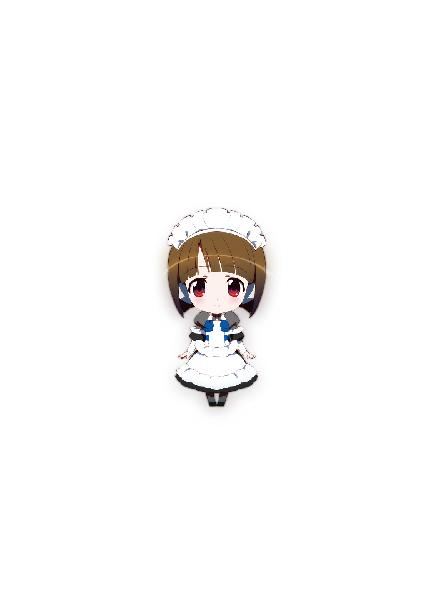
佐島勤
西暦１９ＸＸ年、日本の片田舎に生まれる。和洋のスペースオペラを糧に少年時代を過ごす。青年時代、ファンタジーと伝奇小説に転向。卒業後、企業戦士（ただし雑兵）として現実世界に魂を売り渡すも、西暦２０１１年、遅れてきたジュブナイル作家として空想世界に帰還を果たす。（本プロフィールには虚偽と誇張表現が含まれています）
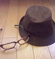
イラスト／石田可奈
西暦１９ＸＸ年生まれ。挿絵は初仕事。本業はアニメーター。『俺の妹。』の総作画監督を担当。
SpecialThanks：ジミーストーンさん。
本書に対するご意見、ご感想をお寄せください。
電撃文庫公式ホームページ 読者アンケートフォーム
http://dengekibunko.jp/
※メニューの「読者アンケート」よりお進みください。
ファンレターあて先
〒102-8584 東京都千代田区富士見1-8-19
アスキー・メディアワークス電撃文庫編集部
「佐島 勤先生」係
「石田可奈先生」係
本書はインターネット上に掲載されていたものに加筆、修正しています。

 電撃文庫
電撃文庫
魔法科高校の劣等生⑪
来訪者編〈下〉
佐島勤
発 行 2015年11月2日
発行者 塚田正晃
発行所 株式会社KADOKAWA
〒102-8177 東京都千代田区富士見2-13-3
03-3238-8745（営業）
http://www.kadokawa.co.jp/
プロデュース アスキー・メディアワークス
〒102-8584 東京都千代田区富士見1-8-19
03-5216-8399（編集）
http://dengekibunko.jp/
本書（電子版）に掲載されているコンテンツ（ソフトウェア／プログラム／データ／情報を含む）の著作権およびその他の権利は、すべて株式会社KADOKAWAおよび正当な権利を有する第三者に帰属しています。
法律の定めがある場合または権利者の明示的な承諾がある場合を除き、これらのコンテンツを複製・転載、改変・編集、翻案・翻訳、放送・出版、公衆送信（送信可能化を含む）・再配信、販売・頒布、貸与等に使用することはできません。
(C)2013 TSUTOMU SATO
※2017年8月5日発行の電撃文庫『魔法科高校の劣等生⑪ 来訪者編〈下〉』11版に基づき制作